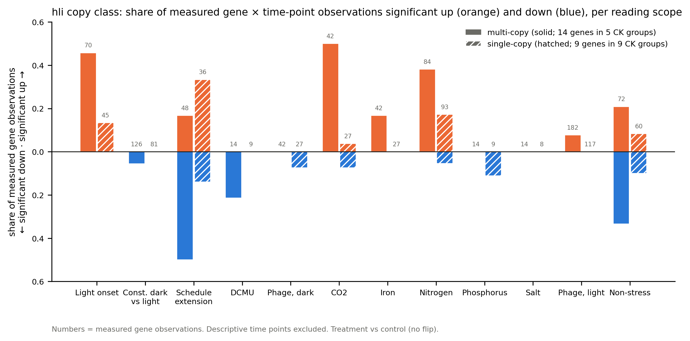
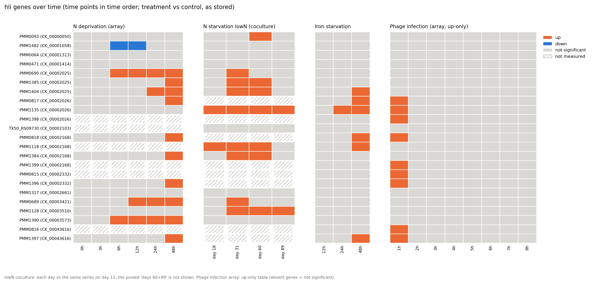

MED4, hli genes. Exploratory. Treatment vs control as stored in the KG (no flip); the same significance calls as the main analysis. Counts only; meanings are in the analysis notebook.
Copy class: CK groups with ≥2 MED4 hli members are multi-copy (CK_00002025, 2026, 2168, 2332, 43616: 14 genes); the 9 other groups have one member each (single-copy, 9 genes). Net share = (up − down) / measured members. Hatched = no member measured. Descriptive time points are left out of the scope totals.
Static: A1 CK groups

Copy class × reading scope:
| family_type | family | family_size | scope_type | scope | n_experiment_timepoints | n_gene_observations | n_up | n_down | frac_up | frac_down |
|---|---|---|---|---|---|---|---|---|---|---|
| copy_class | multi_copy | 14 | light_reading_group | light_onset | 5 | 70 | 32 | 0 | 0.4571 | 0 |
| copy_class | multi_copy | 14 | light_reading_group | constant_dark_vs_light | 9 | 126 | 0 | 7 | 0 | 0.05556 |
| copy_class | multi_copy | 14 | light_reading_group | schedule_extension | 4 | 48 | 8 | 24 | 0.1667 | 0.5 |
| copy_class | multi_copy | 14 | light_reading_group | electron_transport_DCMU | 1 | 14 | 0 | 3 | 0 | 0.2143 |
| copy_class | multi_copy | 14 | light_reading_group | phage_dark | 3 | 42 | 0 | 0 | 0 | 0 |
| copy_class | multi_copy | 14 | nonlight_stress_type | carbon | 3 | 42 | 21 | 0 | 0.5 | 0 |
| copy_class | multi_copy | 14 | nonlight_stress_type | iron | 3 | 42 | 7 | 0 | 0.1667 | 0 |
| copy_class | multi_copy | 14 | nonlight_stress_type | nitrogen | 11 | 84 | 32 | 0 | 0.381 | 0 |
| copy_class | multi_copy | 14 | nonlight_stress_type | phosphorus | 1 | 14 | 0 | 0 | 0 | 0 |
| copy_class | multi_copy | 14 | nonlight_stress_type | salt | 1 | 14 | 0 | 0 | 0 | 0 |
| copy_class | multi_copy | 14 | nonlight_stress_type | viral | 13 | 182 | 14 | 0 | 0.07692 | 0 |
| copy_class | multi_copy | 14 | group | nonstress_possible_relief | 7 | 72 | 15 | 24 | 0.2083 | 0.3333 |
| copy_class | single_copy | 9 | light_reading_group | light_onset | 5 | 45 | 6 | 0 | 0.1333 | 0 |
| copy_class | single_copy | 9 | light_reading_group | constant_dark_vs_light | 9 | 81 | 0 | 0 | 0 | 0 |
| copy_class | single_copy | 9 | light_reading_group | schedule_extension | 4 | 36 | 12 | 5 | 0.3333 | 0.1389 |
| copy_class | single_copy | 9 | light_reading_group | electron_transport_DCMU | 1 | 9 | 0 | 0 | 0 | 0 |
| copy_class | single_copy | 9 | light_reading_group | phage_dark | 3 | 27 | 0 | 2 | 0 | 0.07407 |
| copy_class | single_copy | 9 | nonlight_stress_type | carbon | 3 | 27 | 1 | 2 | 0.03704 | 0.07407 |
| copy_class | single_copy | 9 | nonlight_stress_type | iron | 3 | 27 | 0 | 0 | 0 | 0 |
| copy_class | single_copy | 9 | nonlight_stress_type | nitrogen | 11 | 93 | 16 | 5 | 0.172 | 0.05376 |
| copy_class | single_copy | 9 | nonlight_stress_type | phosphorus | 1 | 9 | 0 | 1 | 0 | 0.1111 |
| copy_class | single_copy | 9 | nonlight_stress_type | salt | 1 | 8 | 0 | 0 | 0 | 0 |
| copy_class | single_copy | 9 | nonlight_stress_type | viral | 13 | 117 | 0 | 0 | 0 | 0 |
| copy_class | single_copy | 9 | group | nonstress_possible_relief | 7 | 60 | 5 | 6 | 0.08333 | 0.1 |
CK group × reading scope:
| family_type | family | family_size | scope_type | scope | n_experiment_timepoints | n_gene_observations | n_up | n_down | frac_up | frac_down |
|---|---|---|---|---|---|---|---|---|---|---|
| ck_group | CK_00000050 | 1 | light_reading_group | light_onset | 5 | 5 | 0 | 0 | 0 | 0 |
| ck_group | CK_00000050 | 1 | light_reading_group | constant_dark_vs_light | 9 | 9 | 0 | 0 | 0 | 0 |
| ck_group | CK_00000050 | 1 | light_reading_group | schedule_extension | 4 | 4 | 3 | 0 | 0.75 | 0 |
| ck_group | CK_00000050 | 1 | light_reading_group | electron_transport_DCMU | 1 | 1 | 0 | 0 | 0 | 0 |
| ck_group | CK_00000050 | 1 | light_reading_group | phage_dark | 3 | 3 | 0 | 0 | 0 | 0 |
| ck_group | CK_00000050 | 1 | nonlight_stress_type | carbon | 3 | 3 | 0 | 0 | 0 | 0 |
| ck_group | CK_00000050 | 1 | nonlight_stress_type | iron | 3 | 3 | 0 | 0 | 0 | 0 |
| ck_group | CK_00000050 | 1 | nonlight_stress_type | nitrogen | 11 | 11 | 1 | 0 | 0.09091 | 0 |
| ck_group | CK_00000050 | 1 | nonlight_stress_type | phosphorus | 1 | 1 | 0 | 0 | 0 | 0 |
| ck_group | CK_00000050 | 1 | nonlight_stress_type | salt | 1 | 1 | 0 | 0 | 0 | 0 |
| ck_group | CK_00000050 | 1 | nonlight_stress_type | viral | 13 | 13 | 0 | 0 | 0 | 0 |
| ck_group | CK_00000050 | 1 | group | nonstress_possible_relief | 7 | 7 | 0 | 0 | 0 | 0 |
| ck_group | CK_00001058 | 1 | light_reading_group | light_onset | 5 | 5 | 0 | 0 | 0 | 0 |
| ck_group | CK_00001058 | 1 | light_reading_group | constant_dark_vs_light | 9 | 9 | 0 | 0 | 0 | 0 |
| ck_group | CK_00001058 | 1 | light_reading_group | schedule_extension | 4 | 4 | 0 | 2 | 0 | 0.5 |
| ck_group | CK_00001058 | 1 | light_reading_group | electron_transport_DCMU | 1 | 1 | 0 | 0 | 0 | 0 |
| ck_group | CK_00001058 | 1 | light_reading_group | phage_dark | 3 | 3 | 0 | 0 | 0 | 0 |
| ck_group | CK_00001058 | 1 | nonlight_stress_type | carbon | 3 | 3 | 0 | 2 | 0 | 0.6667 |
| ck_group | CK_00001058 | 1 | nonlight_stress_type | iron | 3 | 3 | 0 | 0 | 0 | 0 |
| ck_group | CK_00001058 | 1 | nonlight_stress_type | nitrogen | 11 | 11 | 0 | 3 | 0 | 0.2727 |
| ck_group | CK_00001058 | 1 | nonlight_stress_type | phosphorus | 1 | 1 | 0 | 1 | 0 | 1 |
| ck_group | CK_00001058 | 1 | nonlight_stress_type | salt | 1 | 1 | 0 | 0 | 0 | 0 |
| ck_group | CK_00001058 | 1 | nonlight_stress_type | viral | 13 | 13 | 0 | 0 | 0 | 0 |
| ck_group | CK_00001058 | 1 | group | nonstress_possible_relief | 7 | 7 | 0 | 1 | 0 | 0.1429 |
| ck_group | CK_00001313 | 1 | light_reading_group | light_onset | 5 | 5 | 0 | 0 | 0 | 0 |
| ck_group | CK_00001313 | 1 | light_reading_group | constant_dark_vs_light | 9 | 9 | 0 | 0 | 0 | 0 |
| ck_group | CK_00001313 | 1 | light_reading_group | schedule_extension | 4 | 4 | 3 | 0 | 0.75 | 0 |
| ck_group | CK_00001313 | 1 | light_reading_group | electron_transport_DCMU | 1 | 1 | 0 | 0 | 0 | 0 |
| ck_group | CK_00001313 | 1 | light_reading_group | phage_dark | 3 | 3 | 0 | 0 | 0 | 0 |
| ck_group | CK_00001313 | 1 | nonlight_stress_type | carbon | 3 | 3 | 0 | 0 | 0 | 0 |
| ck_group | CK_00001313 | 1 | nonlight_stress_type | iron | 3 | 3 | 0 | 0 | 0 | 0 |
| ck_group | CK_00001313 | 1 | nonlight_stress_type | nitrogen | 11 | 11 | 0 | 1 | 0 | 0.09091 |
| ck_group | CK_00001313 | 1 | nonlight_stress_type | phosphorus | 1 | 1 | 0 | 0 | 0 | 0 |
| ck_group | CK_00001313 | 1 | nonlight_stress_type | salt | 1 | 1 | 0 | 0 | 0 | 0 |
| ck_group | CK_00001313 | 1 | nonlight_stress_type | viral | 13 | 13 | 0 | 0 | 0 | 0 |
| ck_group | CK_00001313 | 1 | group | nonstress_possible_relief | 7 | 7 | 1 | 1 | 0.1429 | 0.1429 |
| ck_group | CK_00001414 | 1 | light_reading_group | light_onset | 5 | 5 | 0 | 0 | 0 | 0 |
| ck_group | CK_00001414 | 1 | light_reading_group | constant_dark_vs_light | 9 | 9 | 0 | 0 | 0 | 0 |
| ck_group | CK_00001414 | 1 | light_reading_group | schedule_extension | 4 | 4 | 1 | 0 | 0.25 | 0 |
| ck_group | CK_00001414 | 1 | light_reading_group | electron_transport_DCMU | 1 | 1 | 0 | 0 | 0 | 0 |
| ck_group | CK_00001414 | 1 | light_reading_group | phage_dark | 3 | 3 | 0 | 0 | 0 | 0 |
| ck_group | CK_00001414 | 1 | nonlight_stress_type | carbon | 3 | 3 | 0 | 0 | 0 | 0 |
| ck_group | CK_00001414 | 1 | nonlight_stress_type | iron | 3 | 3 | 0 | 0 | 0 | 0 |
| ck_group | CK_00001414 | 1 | nonlight_stress_type | nitrogen | 11 | 11 | 0 | 1 | 0 | 0.09091 |
| ck_group | CK_00001414 | 1 | nonlight_stress_type | phosphorus | 1 | 1 | 0 | 0 | 0 | 0 |
| ck_group | CK_00001414 | 1 | nonlight_stress_type | salt | 1 | 1 | 0 | 0 | 0 | 0 |
| ck_group | CK_00001414 | 1 | nonlight_stress_type | viral | 13 | 13 | 0 | 0 | 0 | 0 |
| ck_group | CK_00001414 | 1 | group | nonstress_possible_relief | 7 | 7 | 1 | 1 | 0.1429 | 0.1429 |
| ck_group | CK_00002025 | 3 | light_reading_group | light_onset | 5 | 15 | 8 | 0 | 0.5333 | 0 |
| ck_group | CK_00002025 | 3 | light_reading_group | constant_dark_vs_light | 9 | 27 | 0 | 2 | 0 | 0.07407 |
| ck_group | CK_00002025 | 3 | light_reading_group | schedule_extension | 4 | 12 | 1 | 8 | 0.08333 | 0.6667 |
| ck_group | CK_00002025 | 3 | light_reading_group | electron_transport_DCMU | 1 | 3 | 0 | 0 | 0 | 0 |
| ck_group | CK_00002025 | 3 | light_reading_group | phage_dark | 3 | 9 | 0 | 0 | 0 | 0 |
| ck_group | CK_00002025 | 3 | nonlight_stress_type | carbon | 3 | 9 | 6 | 0 | 0.6667 | 0 |
| ck_group | CK_00002025 | 3 | nonlight_stress_type | iron | 3 | 9 | 1 | 0 | 0.1111 | 0 |
| ck_group | CK_00002025 | 3 | nonlight_stress_type | nitrogen | 11 | 33 | 15 | 0 | 0.4545 | 0 |
| ck_group | CK_00002025 | 3 | nonlight_stress_type | phosphorus | 1 | 3 | 0 | 0 | 0 | 0 |
| ck_group | CK_00002025 | 3 | nonlight_stress_type | salt | 1 | 3 | 0 | 0 | 0 | 0 |
| ck_group | CK_00002025 | 3 | nonlight_stress_type | viral | 13 | 39 | 2 | 0 | 0.05128 | 0 |
| ck_group | CK_00002025 | 3 | group | nonstress_possible_relief | 7 | 21 | 6 | 6 | 0.2857 | 0.2857 |
| ck_group | CK_00002026 | 3 | light_reading_group | light_onset | 5 | 15 | 8 | 0 | 0.5333 | 0 |
| ck_group | CK_00002026 | 3 | light_reading_group | constant_dark_vs_light | 9 | 27 | 0 | 3 | 0 | 0.1111 |
| ck_group | CK_00002026 | 3 | light_reading_group | schedule_extension | 4 | 12 | 1 | 5 | 0.08333 | 0.4167 |
| ck_group | CK_00002026 | 3 | light_reading_group | electron_transport_DCMU | 1 | 3 | 0 | 0 | 0 | 0 |
| ck_group | CK_00002026 | 3 | light_reading_group | phage_dark | 3 | 9 | 0 | 0 | 0 | 0 |
| ck_group | CK_00002026 | 3 | nonlight_stress_type | carbon | 3 | 9 | 5 | 0 | 0.5556 | 0 |
| ck_group | CK_00002026 | 3 | nonlight_stress_type | iron | 3 | 9 | 3 | 0 | 0.3333 | 0 |
| ck_group | CK_00002026 | 3 | nonlight_stress_type | nitrogen | 11 | 17 | 6 | 0 | 0.3529 | 0 |
| ck_group | CK_00002026 | 3 | nonlight_stress_type | phosphorus | 1 | 3 | 0 | 0 | 0 | 0 |
| ck_group | CK_00002026 | 3 | nonlight_stress_type | salt | 1 | 3 | 0 | 0 | 0 | 0 |
| ck_group | CK_00002026 | 3 | nonlight_stress_type | viral | 13 | 39 | 5 | 0 | 0.1282 | 0 |
| ck_group | CK_00002026 | 3 | group | nonstress_possible_relief | 7 | 15 | 4 | 5 | 0.2667 | 0.3333 |
| ck_group | CK_00002103 | 1 | light_reading_group | light_onset | 5 | 5 | 1 | 0 | 0.2 | 0 |
| ck_group | CK_00002103 | 1 | light_reading_group | constant_dark_vs_light | 9 | 9 | 0 | 0 | 0 | 0 |
| ck_group | CK_00002103 | 1 | light_reading_group | schedule_extension | 4 | 4 | 1 | 0 | 0.25 | 0 |
| ck_group | CK_00002103 | 1 | light_reading_group | electron_transport_DCMU | 1 | 1 | 0 | 0 | 0 | 0 |
| ck_group | CK_00002103 | 1 | light_reading_group | phage_dark | 3 | 3 | 0 | 0 | 0 | 0 |
| ck_group | CK_00002103 | 1 | nonlight_stress_type | carbon | 3 | 3 | 0 | 0 | 0 | 0 |
| ck_group | CK_00002103 | 1 | nonlight_stress_type | iron | 3 | 3 | 0 | 0 | 0 | 0 |
| ck_group | CK_00002103 | 1 | nonlight_stress_type | nitrogen | 11 | 5 | 1 | 0 | 0.2 | 0 |
| ck_group | CK_00002103 | 1 | nonlight_stress_type | phosphorus | 1 | 1 | 0 | 0 | 0 | 0 |
| ck_group | CK_00002103 | 1 | nonlight_stress_type | salt | 1 | 0 | 0 | 0 | ||
| ck_group | CK_00002103 | 1 | nonlight_stress_type | viral | 13 | 13 | 0 | 0 | 0 | 0 |
| ck_group | CK_00002103 | 1 | group | nonstress_possible_relief | 7 | 4 | 0 | 1 | 0 | 0.25 |
| ck_group | CK_00002168 | 4 | light_reading_group | light_onset | 5 | 20 | 8 | 0 | 0.4 | 0 |
| ck_group | CK_00002168 | 4 | light_reading_group | constant_dark_vs_light | 9 | 36 | 0 | 1 | 0 | 0.02778 |
| ck_group | CK_00002168 | 4 | light_reading_group | schedule_extension | 4 | 16 | 6 | 7 | 0.375 | 0.4375 |
| ck_group | CK_00002168 | 4 | light_reading_group | electron_transport_DCMU | 1 | 4 | 0 | 1 | 0 | 0.25 |
| ck_group | CK_00002168 | 4 | light_reading_group | phage_dark | 3 | 12 | 0 | 0 | 0 | 0 |
| ck_group | CK_00002168 | 4 | nonlight_stress_type | carbon | 3 | 12 | 6 | 0 | 0.5 | 0 |
| ck_group | CK_00002168 | 4 | nonlight_stress_type | iron | 3 | 12 | 2 | 0 | 0.1667 | 0 |
| ck_group | CK_00002168 | 4 | nonlight_stress_type | nitrogen | 11 | 22 | 9 | 0 | 0.4091 | 0 |
| ck_group | CK_00002168 | 4 | nonlight_stress_type | phosphorus | 1 | 4 | 0 | 0 | 0 | 0 |
| ck_group | CK_00002168 | 4 | nonlight_stress_type | salt | 1 | 4 | 0 | 0 | 0 | 0 |
| ck_group | CK_00002168 | 4 | nonlight_stress_type | viral | 13 | 52 | 3 | 0 | 0.05769 | 0 |
| ck_group | CK_00002168 | 4 | group | nonstress_possible_relief | 7 | 20 | 2 | 7 | 0.1 | 0.35 |
| ck_group | CK_00002332 | 2 | light_reading_group | light_onset | 5 | 10 | 4 | 0 | 0.4 | 0 |
| ck_group | CK_00002332 | 2 | light_reading_group | constant_dark_vs_light | 9 | 18 | 0 | 1 | 0 | 0.05556 |
| ck_group | CK_00002332 | 2 | light_reading_group | schedule_extension | 4 | 0 | 0 | 0 | ||
| ck_group | CK_00002332 | 2 | light_reading_group | electron_transport_DCMU | 1 | 2 | 0 | 1 | 0 | 0.5 |
| ck_group | CK_00002332 | 2 | light_reading_group | phage_dark | 3 | 6 | 0 | 0 | 0 | 0 |
| ck_group | CK_00002332 | 2 | nonlight_stress_type | carbon | 3 | 6 | 2 | 0 | 0.3333 | 0 |
| ck_group | CK_00002332 | 2 | nonlight_stress_type | iron | 3 | 6 | 0 | 0 | 0 | 0 |
| ck_group | CK_00002332 | 2 | nonlight_stress_type | nitrogen | 11 | 6 | 1 | 0 | 0.1667 | 0 |
| ck_group | CK_00002332 | 2 | nonlight_stress_type | phosphorus | 1 | 2 | 0 | 0 | 0 | 0 |
| ck_group | CK_00002332 | 2 | nonlight_stress_type | salt | 1 | 2 | 0 | 0 | 0 | 0 |
| ck_group | CK_00002332 | 2 | nonlight_stress_type | viral | 13 | 26 | 2 | 0 | 0.07692 | 0 |
| ck_group | CK_00002332 | 2 | group | nonstress_possible_relief | 7 | 8 | 1 | 2 | 0.125 | 0.25 |
| ck_group | CK_00002661 | 1 | light_reading_group | light_onset | 5 | 5 | 0 | 0 | 0 | 0 |
| ck_group | CK_00002661 | 1 | light_reading_group | constant_dark_vs_light | 9 | 9 | 0 | 0 | 0 | 0 |
| ck_group | CK_00002661 | 1 | light_reading_group | schedule_extension | 4 | 4 | 1 | 1 | 0.25 | 0.25 |
| ck_group | CK_00002661 | 1 | light_reading_group | electron_transport_DCMU | 1 | 1 | 0 | 0 | 0 | 0 |
| ck_group | CK_00002661 | 1 | light_reading_group | phage_dark | 3 | 3 | 0 | 0 | 0 | 0 |
| ck_group | CK_00002661 | 1 | nonlight_stress_type | carbon | 3 | 3 | 0 | 0 | 0 | 0 |
| ck_group | CK_00002661 | 1 | nonlight_stress_type | iron | 3 | 3 | 0 | 0 | 0 | 0 |
| ck_group | CK_00002661 | 1 | nonlight_stress_type | nitrogen | 11 | 11 | 0 | 0 | 0 | 0 |
| ck_group | CK_00002661 | 1 | nonlight_stress_type | phosphorus | 1 | 1 | 0 | 0 | 0 | 0 |
| ck_group | CK_00002661 | 1 | nonlight_stress_type | salt | 1 | 1 | 0 | 0 | 0 | 0 |
| ck_group | CK_00002661 | 1 | nonlight_stress_type | viral | 13 | 13 | 0 | 0 | 0 | 0 |
| ck_group | CK_00002661 | 1 | group | nonstress_possible_relief | 7 | 7 | 1 | 0 | 0.1429 | 0 |
| ck_group | CK_00003421 | 1 | light_reading_group | light_onset | 5 | 5 | 3 | 0 | 0.6 | 0 |
| ck_group | CK_00003421 | 1 | light_reading_group | constant_dark_vs_light | 9 | 9 | 0 | 0 | 0 | 0 |
| ck_group | CK_00003421 | 1 | light_reading_group | schedule_extension | 4 | 4 | 1 | 1 | 0.25 | 0.25 |
| ck_group | CK_00003421 | 1 | light_reading_group | electron_transport_DCMU | 1 | 1 | 0 | 0 | 0 | 0 |
| ck_group | CK_00003421 | 1 | light_reading_group | phage_dark | 3 | 3 | 0 | 2 | 0 | 0.6667 |
| ck_group | CK_00003421 | 1 | nonlight_stress_type | carbon | 3 | 3 | 1 | 0 | 0.3333 | 0 |
| ck_group | CK_00003421 | 1 | nonlight_stress_type | iron | 3 | 3 | 0 | 0 | 0 | 0 |
| ck_group | CK_00003421 | 1 | nonlight_stress_type | nitrogen | 11 | 11 | 5 | 0 | 0.4545 | 0 |
| ck_group | CK_00003421 | 1 | nonlight_stress_type | phosphorus | 1 | 1 | 0 | 0 | 0 | 0 |
| ck_group | CK_00003421 | 1 | nonlight_stress_type | salt | 1 | 1 | 0 | 0 | 0 | 0 |
| ck_group | CK_00003421 | 1 | nonlight_stress_type | viral | 13 | 13 | 0 | 0 | 0 | 0 |
| ck_group | CK_00003421 | 1 | group | nonstress_possible_relief | 7 | 7 | 0 | 1 | 0 | 0.1429 |
| ck_group | CK_00003510 | 1 | light_reading_group | light_onset | 5 | 5 | 2 | 0 | 0.4 | 0 |
| ck_group | CK_00003510 | 1 | light_reading_group | constant_dark_vs_light | 9 | 9 | 0 | 0 | 0 | 0 |
| ck_group | CK_00003510 | 1 | light_reading_group | schedule_extension | 4 | 4 | 0 | 0 | 0 | 0 |
| ck_group | CK_00003510 | 1 | light_reading_group | electron_transport_DCMU | 1 | 1 | 0 | 0 | 0 | 0 |
| ck_group | CK_00003510 | 1 | light_reading_group | phage_dark | 3 | 3 | 0 | 0 | 0 | 0 |
| ck_group | CK_00003510 | 1 | nonlight_stress_type | carbon | 3 | 3 | 0 | 0 | 0 | 0 |
| ck_group | CK_00003510 | 1 | nonlight_stress_type | iron | 3 | 3 | 0 | 0 | 0 | 0 |
| ck_group | CK_00003510 | 1 | nonlight_stress_type | nitrogen | 11 | 11 | 4 | 0 | 0.3636 | 0 |
| ck_group | CK_00003510 | 1 | nonlight_stress_type | phosphorus | 1 | 1 | 0 | 0 | 0 | 0 |
| ck_group | CK_00003510 | 1 | nonlight_stress_type | salt | 1 | 1 | 0 | 0 | 0 | 0 |
| ck_group | CK_00003510 | 1 | nonlight_stress_type | viral | 13 | 13 | 0 | 0 | 0 | 0 |
| ck_group | CK_00003510 | 1 | group | nonstress_possible_relief | 7 | 7 | 0 | 1 | 0 | 0.1429 |
| ck_group | CK_00003573 | 1 | light_reading_group | light_onset | 5 | 5 | 0 | 0 | 0 | 0 |
| ck_group | CK_00003573 | 1 | light_reading_group | constant_dark_vs_light | 9 | 9 | 0 | 0 | 0 | 0 |
| ck_group | CK_00003573 | 1 | light_reading_group | schedule_extension | 4 | 4 | 2 | 1 | 0.5 | 0.25 |
| ck_group | CK_00003573 | 1 | light_reading_group | electron_transport_DCMU | 1 | 1 | 0 | 0 | 0 | 0 |
| ck_group | CK_00003573 | 1 | light_reading_group | phage_dark | 3 | 3 | 0 | 0 | 0 | 0 |
| ck_group | CK_00003573 | 1 | nonlight_stress_type | carbon | 3 | 3 | 0 | 0 | 0 | 0 |
| ck_group | CK_00003573 | 1 | nonlight_stress_type | iron | 3 | 3 | 0 | 0 | 0 | 0 |
| ck_group | CK_00003573 | 1 | nonlight_stress_type | nitrogen | 11 | 11 | 5 | 0 | 0.4545 | 0 |
| ck_group | CK_00003573 | 1 | nonlight_stress_type | phosphorus | 1 | 1 | 0 | 0 | 0 | 0 |
| ck_group | CK_00003573 | 1 | nonlight_stress_type | salt | 1 | 1 | 0 | 0 | 0 | 0 |
| ck_group | CK_00003573 | 1 | nonlight_stress_type | viral | 13 | 13 | 0 | 0 | 0 | 0 |
| ck_group | CK_00003573 | 1 | group | nonstress_possible_relief | 7 | 7 | 2 | 0 | 0.2857 | 0 |
| ck_group | CK_00043616 | 2 | light_reading_group | light_onset | 5 | 10 | 4 | 0 | 0.4 | 0 |
| ck_group | CK_00043616 | 2 | light_reading_group | constant_dark_vs_light | 9 | 18 | 0 | 0 | 0 | 0 |
| ck_group | CK_00043616 | 2 | light_reading_group | schedule_extension | 4 | 8 | 0 | 4 | 0 | 0.5 |
| ck_group | CK_00043616 | 2 | light_reading_group | electron_transport_DCMU | 1 | 2 | 0 | 1 | 0 | 0.5 |
| ck_group | CK_00043616 | 2 | light_reading_group | phage_dark | 3 | 6 | 0 | 0 | 0 | 0 |
| ck_group | CK_00043616 | 2 | nonlight_stress_type | carbon | 3 | 6 | 2 | 0 | 0.3333 | 0 |
| ck_group | CK_00043616 | 2 | nonlight_stress_type | iron | 3 | 6 | 1 | 0 | 0.1667 | 0 |
| ck_group | CK_00043616 | 2 | nonlight_stress_type | nitrogen | 11 | 6 | 1 | 0 | 0.1667 | 0 |
| ck_group | CK_00043616 | 2 | nonlight_stress_type | phosphorus | 1 | 2 | 0 | 0 | 0 | 0 |
| ck_group | CK_00043616 | 2 | nonlight_stress_type | salt | 1 | 2 | 0 | 0 | 0 | 0 |
| ck_group | CK_00043616 | 2 | nonlight_stress_type | viral | 13 | 26 | 2 | 0 | 0.07692 | 0 |
| ck_group | CK_00043616 | 2 | group | nonstress_possible_relief | 7 | 8 | 2 | 4 | 0.25 | 0.5 |
Per experiment × time point × family:
| family_type | family | copy_class | family_size | label | timepoint | test_type | n_measured | n_up | n_down | frac_up | frac_down | net_share | experiment_id |
|---|---|---|---|---|---|---|---|---|---|---|---|---|---|
| ck_group | CK_00000050 | single_copy | 1 | Extended darkness | 4h | sound | 1 | 1 | 0 | 1 | 0 | 1 | 10.64898/2026.04.15.718746_extended_darkness_med4 |
| ck_group | CK_00001058 | single_copy | 1 | Extended darkness | 4h | sound | 1 | 0 | 1 | 0 | 1 | -1 | 10.64898/2026.04.15.718746_extended_darkness_med4 |
| ck_group | CK_00001313 | single_copy | 1 | Extended darkness | 4h | sound | 1 | 1 | 0 | 1 | 0 | 1 | 10.64898/2026.04.15.718746_extended_darkness_med4 |
| ck_group | CK_00001414 | single_copy | 1 | Extended darkness | 4h | sound | 1 | 0 | 0 | 0 | 0 | 0 | 10.64898/2026.04.15.718746_extended_darkness_med4 |
| ck_group | CK_00002025 | multi_copy | 3 | Extended darkness | 4h | sound | 3 | 1 | 2 | 0.3333 | 0.6667 | -0.3333 | 10.64898/2026.04.15.718746_extended_darkness_med4 |
| ck_group | CK_00002026 | multi_copy | 3 | Extended darkness | 4h | sound | 3 | 1 | 0 | 0.3333 | 0 | 0.3333 | 10.64898/2026.04.15.718746_extended_darkness_med4 |
| ck_group | CK_00002103 | single_copy | 1 | Extended darkness | 4h | sound | 1 | 1 | 0 | 1 | 0 | 1 | 10.64898/2026.04.15.718746_extended_darkness_med4 |
| ck_group | CK_00002168 | multi_copy | 4 | Extended darkness | 4h | sound | 4 | 4 | 0 | 1 | 0 | 1 | 10.64898/2026.04.15.718746_extended_darkness_med4 |
| ck_group | CK_00002332 | multi_copy | 2 | Extended darkness | 4h | sound | 0 | 0 | 0 | 10.64898/2026.04.15.718746_extended_darkness_med4 | |||
| ck_group | CK_00002661 | single_copy | 1 | Extended darkness | 4h | sound | 1 | 0 | 1 | 0 | 1 | -1 | 10.64898/2026.04.15.718746_extended_darkness_med4 |
| ck_group | CK_00003421 | single_copy | 1 | Extended darkness | 4h | sound | 1 | 1 | 0 | 1 | 0 | 1 | 10.64898/2026.04.15.718746_extended_darkness_med4 |
| ck_group | CK_00003510 | single_copy | 1 | Extended darkness | 4h | sound | 1 | 0 | 0 | 0 | 0 | 0 | 10.64898/2026.04.15.718746_extended_darkness_med4 |
| ck_group | CK_00003573 | single_copy | 1 | Extended darkness | 4h | sound | 1 | 1 | 0 | 1 | 0 | 1 | 10.64898/2026.04.15.718746_extended_darkness_med4 |
| ck_group | CK_00043616 | multi_copy | 2 | Extended darkness | 4h | sound | 2 | 0 | 0 | 0 | 0 | 0 | 10.64898/2026.04.15.718746_extended_darkness_med4 |
| copy_class | multi_copy | multi_copy | 14 | Extended darkness | 4h | sound | 12 | 6 | 2 | 0.5 | 0.1667 | 0.3333 | 10.64898/2026.04.15.718746_extended_darkness_med4 |
| copy_class | single_copy | single_copy | 9 | Extended darkness | 4h | sound | 9 | 5 | 2 | 0.5556 | 0.2222 | 0.3333 | 10.64898/2026.04.15.718746_extended_darkness_med4 |
| ck_group | CK_00000050 | single_copy | 1 | Extended darkness | 2h | sound | 1 | 1 | 0 | 1 | 0 | 1 | 10.64898/2026.04.15.718746_extended_darkness_med4 |
| ck_group | CK_00001058 | single_copy | 1 | Extended darkness | 2h | sound | 1 | 0 | 1 | 0 | 1 | -1 | 10.64898/2026.04.15.718746_extended_darkness_med4 |
| ck_group | CK_00001313 | single_copy | 1 | Extended darkness | 2h | sound | 1 | 1 | 0 | 1 | 0 | 1 | 10.64898/2026.04.15.718746_extended_darkness_med4 |
| ck_group | CK_00001414 | single_copy | 1 | Extended darkness | 2h | sound | 1 | 0 | 0 | 0 | 0 | 0 | 10.64898/2026.04.15.718746_extended_darkness_med4 |
| ck_group | CK_00002025 | multi_copy | 3 | Extended darkness | 2h | sound | 3 | 0 | 2 | 0 | 0.6667 | -0.6667 | 10.64898/2026.04.15.718746_extended_darkness_med4 |
| ck_group | CK_00002026 | multi_copy | 3 | Extended darkness | 2h | sound | 3 | 0 | 0 | 0 | 0 | 0 | 10.64898/2026.04.15.718746_extended_darkness_med4 |
| ck_group | CK_00002103 | single_copy | 1 | Extended darkness | 2h | sound | 1 | 0 | 0 | 0 | 0 | 0 | 10.64898/2026.04.15.718746_extended_darkness_med4 |
| ck_group | CK_00002168 | multi_copy | 4 | Extended darkness | 2h | sound | 4 | 2 | 0 | 0.5 | 0 | 0.5 | 10.64898/2026.04.15.718746_extended_darkness_med4 |
| ck_group | CK_00002332 | multi_copy | 2 | Extended darkness | 2h | sound | 0 | 0 | 0 | 10.64898/2026.04.15.718746_extended_darkness_med4 | |||
| ck_group | CK_00002661 | single_copy | 1 | Extended darkness | 2h | sound | 1 | 0 | 0 | 0 | 0 | 0 | 10.64898/2026.04.15.718746_extended_darkness_med4 |
| ck_group | CK_00003421 | single_copy | 1 | Extended darkness | 2h | sound | 1 | 0 | 0 | 0 | 0 | 0 | 10.64898/2026.04.15.718746_extended_darkness_med4 |
| ck_group | CK_00003510 | single_copy | 1 | Extended darkness | 2h | sound | 1 | 0 | 0 | 0 | 0 | 0 | 10.64898/2026.04.15.718746_extended_darkness_med4 |
| ck_group | CK_00003573 | single_copy | 1 | Extended darkness | 2h | sound | 1 | 1 | 0 | 1 | 0 | 1 | 10.64898/2026.04.15.718746_extended_darkness_med4 |
| ck_group | CK_00043616 | multi_copy | 2 | Extended darkness | 2h | sound | 2 | 0 | 0 | 0 | 0 | 0 | 10.64898/2026.04.15.718746_extended_darkness_med4 |
| copy_class | multi_copy | multi_copy | 14 | Extended darkness | 2h | sound | 12 | 2 | 2 | 0.1667 | 0.1667 | 0 | 10.64898/2026.04.15.718746_extended_darkness_med4 |
| copy_class | single_copy | single_copy | 9 | Extended darkness | 2h | sound | 9 | 3 | 1 | 0.3333 | 0.1111 | 0.2222 | 10.64898/2026.04.15.718746_extended_darkness_med4 |
| ck_group | CK_00000050 | single_copy | 1 | Blue 13 vs dark | 45 min | approximate | 1 | 0 | 0 | 0 | 0 | 0 | 10.1128/JB.01097-06_light_stress_blue_light_13_umol_med4_microarray |
| ck_group | CK_00001058 | single_copy | 1 | Blue 13 vs dark | 45 min | approximate | 1 | 0 | 0 | 0 | 0 | 0 | 10.1128/JB.01097-06_light_stress_blue_light_13_umol_med4_microarray |
| ck_group | CK_00001313 | single_copy | 1 | Blue 13 vs dark | 45 min | approximate | 1 | 0 | 0 | 0 | 0 | 0 | 10.1128/JB.01097-06_light_stress_blue_light_13_umol_med4_microarray |
| ck_group | CK_00001414 | single_copy | 1 | Blue 13 vs dark | 45 min | approximate | 1 | 0 | 0 | 0 | 0 | 0 | 10.1128/JB.01097-06_light_stress_blue_light_13_umol_med4_microarray |
| ck_group | CK_00002025 | multi_copy | 3 | Blue 13 vs dark | 45 min | approximate | 3 | 2 | 0 | 0.6667 | 0 | 0.6667 | 10.1128/JB.01097-06_light_stress_blue_light_13_umol_med4_microarray |
| ck_group | CK_00002026 | multi_copy | 3 | Blue 13 vs dark | 45 min | approximate | 3 | 2 | 0 | 0.6667 | 0 | 0.6667 | 10.1128/JB.01097-06_light_stress_blue_light_13_umol_med4_microarray |
| ck_group | CK_00002103 | single_copy | 1 | Blue 13 vs dark | 45 min | approximate | 1 | 0 | 0 | 0 | 0 | 0 | 10.1128/JB.01097-06_light_stress_blue_light_13_umol_med4_microarray |
| ck_group | CK_00002168 | multi_copy | 4 | Blue 13 vs dark | 45 min | approximate | 4 | 2 | 0 | 0.5 | 0 | 0.5 | 10.1128/JB.01097-06_light_stress_blue_light_13_umol_med4_microarray |
| ck_group | CK_00002332 | multi_copy | 2 | Blue 13 vs dark | 45 min | approximate | 2 | 1 | 0 | 0.5 | 0 | 0.5 | 10.1128/JB.01097-06_light_stress_blue_light_13_umol_med4_microarray |
| ck_group | CK_00002661 | single_copy | 1 | Blue 13 vs dark | 45 min | approximate | 1 | 0 | 0 | 0 | 0 | 0 | 10.1128/JB.01097-06_light_stress_blue_light_13_umol_med4_microarray |
| ck_group | CK_00003421 | single_copy | 1 | Blue 13 vs dark | 45 min | approximate | 1 | 1 | 0 | 1 | 0 | 1 | 10.1128/JB.01097-06_light_stress_blue_light_13_umol_med4_microarray |
| ck_group | CK_00003510 | single_copy | 1 | Blue 13 vs dark | 45 min | approximate | 1 | 1 | 0 | 1 | 0 | 1 | 10.1128/JB.01097-06_light_stress_blue_light_13_umol_med4_microarray |
| ck_group | CK_00003573 | single_copy | 1 | Blue 13 vs dark | 45 min | approximate | 1 | 0 | 0 | 0 | 0 | 0 | 10.1128/JB.01097-06_light_stress_blue_light_13_umol_med4_microarray |
| ck_group | CK_00043616 | multi_copy | 2 | Blue 13 vs dark | 45 min | approximate | 2 | 1 | 0 | 0.5 | 0 | 0.5 | 10.1128/JB.01097-06_light_stress_blue_light_13_umol_med4_microarray |
| copy_class | multi_copy | multi_copy | 14 | Blue 13 vs dark | 45 min | approximate | 14 | 8 | 0 | 0.5714 | 0 | 0.5714 | 10.1128/JB.01097-06_light_stress_blue_light_13_umol_med4_microarray |
| copy_class | single_copy | single_copy | 9 | Blue 13 vs dark | 45 min | approximate | 9 | 2 | 0 | 0.2222 | 0 | 0.2222 | 10.1128/JB.01097-06_light_stress_blue_light_13_umol_med4_microarray |
| ck_group | CK_00000050 | single_copy | 1 | Const dark vs light (no phage) | 8.5h post-inoculation | approximate | 1 | 0 | 0 | 0 | 0 | 0 | 10.1371/journal.pone.0165375_light_stress_constant_dark_med4_rnaseq_dark |
| ck_group | CK_00001058 | single_copy | 1 | Const dark vs light (no phage) | 8.5h post-inoculation | approximate | 1 | 0 | 0 | 0 | 0 | 0 | 10.1371/journal.pone.0165375_light_stress_constant_dark_med4_rnaseq_dark |
| ck_group | CK_00001313 | single_copy | 1 | Const dark vs light (no phage) | 8.5h post-inoculation | approximate | 1 | 0 | 0 | 0 | 0 | 0 | 10.1371/journal.pone.0165375_light_stress_constant_dark_med4_rnaseq_dark |
| ck_group | CK_00001414 | single_copy | 1 | Const dark vs light (no phage) | 8.5h post-inoculation | approximate | 1 | 0 | 0 | 0 | 0 | 0 | 10.1371/journal.pone.0165375_light_stress_constant_dark_med4_rnaseq_dark |
| ck_group | CK_00002025 | multi_copy | 3 | Const dark vs light (no phage) | 8.5h post-inoculation | approximate | 3 | 0 | 0 | 0 | 0 | 0 | 10.1371/journal.pone.0165375_light_stress_constant_dark_med4_rnaseq_dark |
| ck_group | CK_00002026 | multi_copy | 3 | Const dark vs light (no phage) | 8.5h post-inoculation | approximate | 3 | 0 | 0 | 0 | 0 | 0 | 10.1371/journal.pone.0165375_light_stress_constant_dark_med4_rnaseq_dark |
| ck_group | CK_00002103 | single_copy | 1 | Const dark vs light (no phage) | 8.5h post-inoculation | approximate | 1 | 0 | 0 | 0 | 0 | 0 | 10.1371/journal.pone.0165375_light_stress_constant_dark_med4_rnaseq_dark |
| ck_group | CK_00002168 | multi_copy | 4 | Const dark vs light (no phage) | 8.5h post-inoculation | approximate | 4 | 0 | 0 | 0 | 0 | 0 | 10.1371/journal.pone.0165375_light_stress_constant_dark_med4_rnaseq_dark |
| ck_group | CK_00002332 | multi_copy | 2 | Const dark vs light (no phage) | 8.5h post-inoculation | approximate | 2 | 0 | 0 | 0 | 0 | 0 | 10.1371/journal.pone.0165375_light_stress_constant_dark_med4_rnaseq_dark |
| ck_group | CK_00002661 | single_copy | 1 | Const dark vs light (no phage) | 8.5h post-inoculation | approximate | 1 | 0 | 0 | 0 | 0 | 0 | 10.1371/journal.pone.0165375_light_stress_constant_dark_med4_rnaseq_dark |
| ck_group | CK_00003421 | single_copy | 1 | Const dark vs light (no phage) | 8.5h post-inoculation | approximate | 1 | 0 | 0 | 0 | 0 | 0 | 10.1371/journal.pone.0165375_light_stress_constant_dark_med4_rnaseq_dark |
| ck_group | CK_00003510 | single_copy | 1 | Const dark vs light (no phage) | 8.5h post-inoculation | approximate | 1 | 0 | 0 | 0 | 0 | 0 | 10.1371/journal.pone.0165375_light_stress_constant_dark_med4_rnaseq_dark |
| ck_group | CK_00003573 | single_copy | 1 | Const dark vs light (no phage) | 8.5h post-inoculation | approximate | 1 | 0 | 0 | 0 | 0 | 0 | 10.1371/journal.pone.0165375_light_stress_constant_dark_med4_rnaseq_dark |
| ck_group | CK_00043616 | multi_copy | 2 | Const dark vs light (no phage) | 8.5h post-inoculation | approximate | 2 | 0 | 0 | 0 | 0 | 0 | 10.1371/journal.pone.0165375_light_stress_constant_dark_med4_rnaseq_dark |
| copy_class | multi_copy | multi_copy | 14 | Const dark vs light (no phage) | 8.5h post-inoculation | approximate | 14 | 0 | 0 | 0 | 0 | 0 | 10.1371/journal.pone.0165375_light_stress_constant_dark_med4_rnaseq_dark |
| copy_class | single_copy | single_copy | 9 | Const dark vs light (no phage) | 8.5h post-inoculation | approximate | 9 | 0 | 0 | 0 | 0 | 0 | 10.1371/journal.pone.0165375_light_stress_constant_dark_med4_rnaseq_dark |
| ck_group | CK_00000050 | single_copy | 1 | Const dark vs light (no phage) | 2.5h post-inoculation | approximate | 1 | 0 | 0 | 0 | 0 | 0 | 10.1371/journal.pone.0165375_light_stress_constant_dark_med4_rnaseq_dark |
| ck_group | CK_00001058 | single_copy | 1 | Const dark vs light (no phage) | 2.5h post-inoculation | approximate | 1 | 0 | 0 | 0 | 0 | 0 | 10.1371/journal.pone.0165375_light_stress_constant_dark_med4_rnaseq_dark |
| ck_group | CK_00001313 | single_copy | 1 | Const dark vs light (no phage) | 2.5h post-inoculation | approximate | 1 | 0 | 0 | 0 | 0 | 0 | 10.1371/journal.pone.0165375_light_stress_constant_dark_med4_rnaseq_dark |
| ck_group | CK_00001414 | single_copy | 1 | Const dark vs light (no phage) | 2.5h post-inoculation | approximate | 1 | 0 | 0 | 0 | 0 | 0 | 10.1371/journal.pone.0165375_light_stress_constant_dark_med4_rnaseq_dark |
| ck_group | CK_00002025 | multi_copy | 3 | Const dark vs light (no phage) | 2.5h post-inoculation | approximate | 3 | 0 | 0 | 0 | 0 | 0 | 10.1371/journal.pone.0165375_light_stress_constant_dark_med4_rnaseq_dark |
| ck_group | CK_00002026 | multi_copy | 3 | Const dark vs light (no phage) | 2.5h post-inoculation | approximate | 3 | 0 | 0 | 0 | 0 | 0 | 10.1371/journal.pone.0165375_light_stress_constant_dark_med4_rnaseq_dark |
| ck_group | CK_00002103 | single_copy | 1 | Const dark vs light (no phage) | 2.5h post-inoculation | approximate | 1 | 0 | 0 | 0 | 0 | 0 | 10.1371/journal.pone.0165375_light_stress_constant_dark_med4_rnaseq_dark |
| ck_group | CK_00002168 | multi_copy | 4 | Const dark vs light (no phage) | 2.5h post-inoculation | approximate | 4 | 0 | 0 | 0 | 0 | 0 | 10.1371/journal.pone.0165375_light_stress_constant_dark_med4_rnaseq_dark |
| ck_group | CK_00002332 | multi_copy | 2 | Const dark vs light (no phage) | 2.5h post-inoculation | approximate | 2 | 0 | 0 | 0 | 0 | 0 | 10.1371/journal.pone.0165375_light_stress_constant_dark_med4_rnaseq_dark |
| ck_group | CK_00002661 | single_copy | 1 | Const dark vs light (no phage) | 2.5h post-inoculation | approximate | 1 | 0 | 0 | 0 | 0 | 0 | 10.1371/journal.pone.0165375_light_stress_constant_dark_med4_rnaseq_dark |
| ck_group | CK_00003421 | single_copy | 1 | Const dark vs light (no phage) | 2.5h post-inoculation | approximate | 1 | 0 | 0 | 0 | 0 | 0 | 10.1371/journal.pone.0165375_light_stress_constant_dark_med4_rnaseq_dark |
| ck_group | CK_00003510 | single_copy | 1 | Const dark vs light (no phage) | 2.5h post-inoculation | approximate | 1 | 0 | 0 | 0 | 0 | 0 | 10.1371/journal.pone.0165375_light_stress_constant_dark_med4_rnaseq_dark |
| ck_group | CK_00003573 | single_copy | 1 | Const dark vs light (no phage) | 2.5h post-inoculation | approximate | 1 | 0 | 0 | 0 | 0 | 0 | 10.1371/journal.pone.0165375_light_stress_constant_dark_med4_rnaseq_dark |
| ck_group | CK_00043616 | multi_copy | 2 | Const dark vs light (no phage) | 2.5h post-inoculation | approximate | 2 | 0 | 0 | 0 | 0 | 0 | 10.1371/journal.pone.0165375_light_stress_constant_dark_med4_rnaseq_dark |
| copy_class | multi_copy | multi_copy | 14 | Const dark vs light (no phage) | 2.5h post-inoculation | approximate | 14 | 0 | 0 | 0 | 0 | 0 | 10.1371/journal.pone.0165375_light_stress_constant_dark_med4_rnaseq_dark |
| copy_class | single_copy | single_copy | 9 | Const dark vs light (no phage) | 2.5h post-inoculation | approximate | 9 | 0 | 0 | 0 | 0 | 0 | 10.1371/journal.pone.0165375_light_stress_constant_dark_med4_rnaseq_dark |
| ck_group | CK_00000050 | single_copy | 1 | Const dark vs light (no phage) | 4.5h post-inoculation | approximate | 1 | 0 | 0 | 0 | 0 | 0 | 10.1371/journal.pone.0165375_light_stress_constant_dark_med4_rnaseq_dark |
| ck_group | CK_00001058 | single_copy | 1 | Const dark vs light (no phage) | 4.5h post-inoculation | approximate | 1 | 0 | 0 | 0 | 0 | 0 | 10.1371/journal.pone.0165375_light_stress_constant_dark_med4_rnaseq_dark |
| ck_group | CK_00001313 | single_copy | 1 | Const dark vs light (no phage) | 4.5h post-inoculation | approximate | 1 | 0 | 0 | 0 | 0 | 0 | 10.1371/journal.pone.0165375_light_stress_constant_dark_med4_rnaseq_dark |
| ck_group | CK_00001414 | single_copy | 1 | Const dark vs light (no phage) | 4.5h post-inoculation | approximate | 1 | 0 | 0 | 0 | 0 | 0 | 10.1371/journal.pone.0165375_light_stress_constant_dark_med4_rnaseq_dark |
| ck_group | CK_00002025 | multi_copy | 3 | Const dark vs light (no phage) | 4.5h post-inoculation | approximate | 3 | 0 | 0 | 0 | 0 | 0 | 10.1371/journal.pone.0165375_light_stress_constant_dark_med4_rnaseq_dark |
| ck_group | CK_00002026 | multi_copy | 3 | Const dark vs light (no phage) | 4.5h post-inoculation | approximate | 3 | 0 | 0 | 0 | 0 | 0 | 10.1371/journal.pone.0165375_light_stress_constant_dark_med4_rnaseq_dark |
| ck_group | CK_00002103 | single_copy | 1 | Const dark vs light (no phage) | 4.5h post-inoculation | approximate | 1 | 0 | 0 | 0 | 0 | 0 | 10.1371/journal.pone.0165375_light_stress_constant_dark_med4_rnaseq_dark |
| ck_group | CK_00002168 | multi_copy | 4 | Const dark vs light (no phage) | 4.5h post-inoculation | approximate | 4 | 0 | 0 | 0 | 0 | 0 | 10.1371/journal.pone.0165375_light_stress_constant_dark_med4_rnaseq_dark |
| ck_group | CK_00002332 | multi_copy | 2 | Const dark vs light (no phage) | 4.5h post-inoculation | approximate | 2 | 0 | 0 | 0 | 0 | 0 | 10.1371/journal.pone.0165375_light_stress_constant_dark_med4_rnaseq_dark |
| ck_group | CK_00002661 | single_copy | 1 | Const dark vs light (no phage) | 4.5h post-inoculation | approximate | 1 | 0 | 0 | 0 | 0 | 0 | 10.1371/journal.pone.0165375_light_stress_constant_dark_med4_rnaseq_dark |
| ck_group | CK_00003421 | single_copy | 1 | Const dark vs light (no phage) | 4.5h post-inoculation | approximate | 1 | 0 | 0 | 0 | 0 | 0 | 10.1371/journal.pone.0165375_light_stress_constant_dark_med4_rnaseq_dark |
| ck_group | CK_00003510 | single_copy | 1 | Const dark vs light (no phage) | 4.5h post-inoculation | approximate | 1 | 0 | 0 | 0 | 0 | 0 | 10.1371/journal.pone.0165375_light_stress_constant_dark_med4_rnaseq_dark |
| ck_group | CK_00003573 | single_copy | 1 | Const dark vs light (no phage) | 4.5h post-inoculation | approximate | 1 | 0 | 0 | 0 | 0 | 0 | 10.1371/journal.pone.0165375_light_stress_constant_dark_med4_rnaseq_dark |
| ck_group | CK_00043616 | multi_copy | 2 | Const dark vs light (no phage) | 4.5h post-inoculation | approximate | 2 | 0 | 0 | 0 | 0 | 0 | 10.1371/journal.pone.0165375_light_stress_constant_dark_med4_rnaseq_dark |
| copy_class | multi_copy | multi_copy | 14 | Const dark vs light (no phage) | 4.5h post-inoculation | approximate | 14 | 0 | 0 | 0 | 0 | 0 | 10.1371/journal.pone.0165375_light_stress_constant_dark_med4_rnaseq_dark |
| copy_class | single_copy | single_copy | 9 | Const dark vs light (no phage) | 4.5h post-inoculation | approximate | 9 | 0 | 0 | 0 | 0 | 0 | 10.1371/journal.pone.0165375_light_stress_constant_dark_med4_rnaseq_dark |
| ck_group | CK_00000050 | single_copy | 1 | Const dark vs light (no phage) | 1.5h post-inoculation | approximate | 1 | 0 | 0 | 0 | 0 | 0 | 10.1371/journal.pone.0165375_light_stress_constant_dark_med4_rnaseq_dark |
| ck_group | CK_00001058 | single_copy | 1 | Const dark vs light (no phage) | 1.5h post-inoculation | approximate | 1 | 0 | 0 | 0 | 0 | 0 | 10.1371/journal.pone.0165375_light_stress_constant_dark_med4_rnaseq_dark |
| ck_group | CK_00001313 | single_copy | 1 | Const dark vs light (no phage) | 1.5h post-inoculation | approximate | 1 | 0 | 0 | 0 | 0 | 0 | 10.1371/journal.pone.0165375_light_stress_constant_dark_med4_rnaseq_dark |
| ck_group | CK_00001414 | single_copy | 1 | Const dark vs light (no phage) | 1.5h post-inoculation | approximate | 1 | 0 | 0 | 0 | 0 | 0 | 10.1371/journal.pone.0165375_light_stress_constant_dark_med4_rnaseq_dark |
| ck_group | CK_00002025 | multi_copy | 3 | Const dark vs light (no phage) | 1.5h post-inoculation | approximate | 3 | 0 | 0 | 0 | 0 | 0 | 10.1371/journal.pone.0165375_light_stress_constant_dark_med4_rnaseq_dark |
| ck_group | CK_00002026 | multi_copy | 3 | Const dark vs light (no phage) | 1.5h post-inoculation | approximate | 3 | 0 | 0 | 0 | 0 | 0 | 10.1371/journal.pone.0165375_light_stress_constant_dark_med4_rnaseq_dark |
| ck_group | CK_00002103 | single_copy | 1 | Const dark vs light (no phage) | 1.5h post-inoculation | approximate | 1 | 0 | 0 | 0 | 0 | 0 | 10.1371/journal.pone.0165375_light_stress_constant_dark_med4_rnaseq_dark |
| ck_group | CK_00002168 | multi_copy | 4 | Const dark vs light (no phage) | 1.5h post-inoculation | approximate | 4 | 0 | 0 | 0 | 0 | 0 | 10.1371/journal.pone.0165375_light_stress_constant_dark_med4_rnaseq_dark |
| ck_group | CK_00002332 | multi_copy | 2 | Const dark vs light (no phage) | 1.5h post-inoculation | approximate | 2 | 0 | 0 | 0 | 0 | 0 | 10.1371/journal.pone.0165375_light_stress_constant_dark_med4_rnaseq_dark |
| ck_group | CK_00002661 | single_copy | 1 | Const dark vs light (no phage) | 1.5h post-inoculation | approximate | 1 | 0 | 0 | 0 | 0 | 0 | 10.1371/journal.pone.0165375_light_stress_constant_dark_med4_rnaseq_dark |
| ck_group | CK_00003421 | single_copy | 1 | Const dark vs light (no phage) | 1.5h post-inoculation | approximate | 1 | 0 | 0 | 0 | 0 | 0 | 10.1371/journal.pone.0165375_light_stress_constant_dark_med4_rnaseq_dark |
| ck_group | CK_00003510 | single_copy | 1 | Const dark vs light (no phage) | 1.5h post-inoculation | approximate | 1 | 0 | 0 | 0 | 0 | 0 | 10.1371/journal.pone.0165375_light_stress_constant_dark_med4_rnaseq_dark |
| ck_group | CK_00003573 | single_copy | 1 | Const dark vs light (no phage) | 1.5h post-inoculation | approximate | 1 | 0 | 0 | 0 | 0 | 0 | 10.1371/journal.pone.0165375_light_stress_constant_dark_med4_rnaseq_dark |
| ck_group | CK_00043616 | multi_copy | 2 | Const dark vs light (no phage) | 1.5h post-inoculation | approximate | 2 | 0 | 0 | 0 | 0 | 0 | 10.1371/journal.pone.0165375_light_stress_constant_dark_med4_rnaseq_dark |
| copy_class | multi_copy | multi_copy | 14 | Const dark vs light (no phage) | 1.5h post-inoculation | approximate | 14 | 0 | 0 | 0 | 0 | 0 | 10.1371/journal.pone.0165375_light_stress_constant_dark_med4_rnaseq_dark |
| copy_class | single_copy | single_copy | 9 | Const dark vs light (no phage) | 1.5h post-inoculation | approximate | 9 | 0 | 0 | 0 | 0 | 0 | 10.1371/journal.pone.0165375_light_stress_constant_dark_med4_rnaseq_dark |
| ck_group | CK_00000050 | single_copy | 1 | Const dark vs light (phage) | 4.5h post-inoculation | approximate | 1 | 0 | 0 | 0 | 0 | 0 | 10.1371/journal.pone.0165375_light_stress_constant_dark_med4_rnaseq_infected |
| ck_group | CK_00001058 | single_copy | 1 | Const dark vs light (phage) | 4.5h post-inoculation | approximate | 1 | 0 | 0 | 0 | 0 | 0 | 10.1371/journal.pone.0165375_light_stress_constant_dark_med4_rnaseq_infected |
| ck_group | CK_00001313 | single_copy | 1 | Const dark vs light (phage) | 4.5h post-inoculation | approximate | 1 | 0 | 0 | 0 | 0 | 0 | 10.1371/journal.pone.0165375_light_stress_constant_dark_med4_rnaseq_infected |
| ck_group | CK_00001414 | single_copy | 1 | Const dark vs light (phage) | 4.5h post-inoculation | approximate | 1 | 0 | 0 | 0 | 0 | 0 | 10.1371/journal.pone.0165375_light_stress_constant_dark_med4_rnaseq_infected |
| ck_group | CK_00002025 | multi_copy | 3 | Const dark vs light (phage) | 4.5h post-inoculation | approximate | 3 | 0 | 0 | 0 | 0 | 0 | 10.1371/journal.pone.0165375_light_stress_constant_dark_med4_rnaseq_infected |
| ck_group | CK_00002026 | multi_copy | 3 | Const dark vs light (phage) | 4.5h post-inoculation | approximate | 3 | 0 | 0 | 0 | 0 | 0 | 10.1371/journal.pone.0165375_light_stress_constant_dark_med4_rnaseq_infected |
| ck_group | CK_00002103 | single_copy | 1 | Const dark vs light (phage) | 4.5h post-inoculation | approximate | 1 | 0 | 0 | 0 | 0 | 0 | 10.1371/journal.pone.0165375_light_stress_constant_dark_med4_rnaseq_infected |
| ck_group | CK_00002168 | multi_copy | 4 | Const dark vs light (phage) | 4.5h post-inoculation | approximate | 4 | 0 | 0 | 0 | 0 | 0 | 10.1371/journal.pone.0165375_light_stress_constant_dark_med4_rnaseq_infected |
| ck_group | CK_00002332 | multi_copy | 2 | Const dark vs light (phage) | 4.5h post-inoculation | approximate | 2 | 0 | 0 | 0 | 0 | 0 | 10.1371/journal.pone.0165375_light_stress_constant_dark_med4_rnaseq_infected |
| ck_group | CK_00002661 | single_copy | 1 | Const dark vs light (phage) | 4.5h post-inoculation | approximate | 1 | 0 | 0 | 0 | 0 | 0 | 10.1371/journal.pone.0165375_light_stress_constant_dark_med4_rnaseq_infected |
| ck_group | CK_00003421 | single_copy | 1 | Const dark vs light (phage) | 4.5h post-inoculation | approximate | 1 | 0 | 0 | 0 | 0 | 0 | 10.1371/journal.pone.0165375_light_stress_constant_dark_med4_rnaseq_infected |
| ck_group | CK_00003510 | single_copy | 1 | Const dark vs light (phage) | 4.5h post-inoculation | approximate | 1 | 0 | 0 | 0 | 0 | 0 | 10.1371/journal.pone.0165375_light_stress_constant_dark_med4_rnaseq_infected |
| ck_group | CK_00003573 | single_copy | 1 | Const dark vs light (phage) | 4.5h post-inoculation | approximate | 1 | 0 | 0 | 0 | 0 | 0 | 10.1371/journal.pone.0165375_light_stress_constant_dark_med4_rnaseq_infected |
| ck_group | CK_00043616 | multi_copy | 2 | Const dark vs light (phage) | 4.5h post-inoculation | approximate | 2 | 0 | 0 | 0 | 0 | 0 | 10.1371/journal.pone.0165375_light_stress_constant_dark_med4_rnaseq_infected |
| copy_class | multi_copy | multi_copy | 14 | Const dark vs light (phage) | 4.5h post-inoculation | approximate | 14 | 0 | 0 | 0 | 0 | 0 | 10.1371/journal.pone.0165375_light_stress_constant_dark_med4_rnaseq_infected |
| copy_class | single_copy | single_copy | 9 | Const dark vs light (phage) | 4.5h post-inoculation | approximate | 9 | 0 | 0 | 0 | 0 | 0 | 10.1371/journal.pone.0165375_light_stress_constant_dark_med4_rnaseq_infected |
| ck_group | CK_00000050 | single_copy | 1 | Const dark vs light (phage) | 8.5h post-inoculation | approximate | 1 | 0 | 0 | 0 | 0 | 0 | 10.1371/journal.pone.0165375_light_stress_constant_dark_med4_rnaseq_infected |
| ck_group | CK_00001058 | single_copy | 1 | Const dark vs light (phage) | 8.5h post-inoculation | approximate | 1 | 0 | 0 | 0 | 0 | 0 | 10.1371/journal.pone.0165375_light_stress_constant_dark_med4_rnaseq_infected |
| ck_group | CK_00001313 | single_copy | 1 | Const dark vs light (phage) | 8.5h post-inoculation | approximate | 1 | 0 | 0 | 0 | 0 | 0 | 10.1371/journal.pone.0165375_light_stress_constant_dark_med4_rnaseq_infected |
| ck_group | CK_00001414 | single_copy | 1 | Const dark vs light (phage) | 8.5h post-inoculation | approximate | 1 | 0 | 0 | 0 | 0 | 0 | 10.1371/journal.pone.0165375_light_stress_constant_dark_med4_rnaseq_infected |
| ck_group | CK_00002025 | multi_copy | 3 | Const dark vs light (phage) | 8.5h post-inoculation | approximate | 3 | 0 | 0 | 0 | 0 | 0 | 10.1371/journal.pone.0165375_light_stress_constant_dark_med4_rnaseq_infected |
| ck_group | CK_00002026 | multi_copy | 3 | Const dark vs light (phage) | 8.5h post-inoculation | approximate | 3 | 0 | 0 | 0 | 0 | 0 | 10.1371/journal.pone.0165375_light_stress_constant_dark_med4_rnaseq_infected |
| ck_group | CK_00002103 | single_copy | 1 | Const dark vs light (phage) | 8.5h post-inoculation | approximate | 1 | 0 | 0 | 0 | 0 | 0 | 10.1371/journal.pone.0165375_light_stress_constant_dark_med4_rnaseq_infected |
| ck_group | CK_00002168 | multi_copy | 4 | Const dark vs light (phage) | 8.5h post-inoculation | approximate | 4 | 0 | 0 | 0 | 0 | 0 | 10.1371/journal.pone.0165375_light_stress_constant_dark_med4_rnaseq_infected |
| ck_group | CK_00002332 | multi_copy | 2 | Const dark vs light (phage) | 8.5h post-inoculation | approximate | 2 | 0 | 0 | 0 | 0 | 0 | 10.1371/journal.pone.0165375_light_stress_constant_dark_med4_rnaseq_infected |
| ck_group | CK_00002661 | single_copy | 1 | Const dark vs light (phage) | 8.5h post-inoculation | approximate | 1 | 0 | 0 | 0 | 0 | 0 | 10.1371/journal.pone.0165375_light_stress_constant_dark_med4_rnaseq_infected |
| ck_group | CK_00003421 | single_copy | 1 | Const dark vs light (phage) | 8.5h post-inoculation | approximate | 1 | 0 | 0 | 0 | 0 | 0 | 10.1371/journal.pone.0165375_light_stress_constant_dark_med4_rnaseq_infected |
| ck_group | CK_00003510 | single_copy | 1 | Const dark vs light (phage) | 8.5h post-inoculation | approximate | 1 | 0 | 0 | 0 | 0 | 0 | 10.1371/journal.pone.0165375_light_stress_constant_dark_med4_rnaseq_infected |
| ck_group | CK_00003573 | single_copy | 1 | Const dark vs light (phage) | 8.5h post-inoculation | approximate | 1 | 0 | 0 | 0 | 0 | 0 | 10.1371/journal.pone.0165375_light_stress_constant_dark_med4_rnaseq_infected |
| ck_group | CK_00043616 | multi_copy | 2 | Const dark vs light (phage) | 8.5h post-inoculation | approximate | 2 | 0 | 0 | 0 | 0 | 0 | 10.1371/journal.pone.0165375_light_stress_constant_dark_med4_rnaseq_infected |
| copy_class | multi_copy | multi_copy | 14 | Const dark vs light (phage) | 8.5h post-inoculation | approximate | 14 | 0 | 0 | 0 | 0 | 0 | 10.1371/journal.pone.0165375_light_stress_constant_dark_med4_rnaseq_infected |
| copy_class | single_copy | single_copy | 9 | Const dark vs light (phage) | 8.5h post-inoculation | approximate | 9 | 0 | 0 | 0 | 0 | 0 | 10.1371/journal.pone.0165375_light_stress_constant_dark_med4_rnaseq_infected |
| ck_group | CK_00000050 | single_copy | 1 | Const dark vs light (phage) | 2.5h post-inoculation | approximate | 1 | 0 | 0 | 0 | 0 | 0 | 10.1371/journal.pone.0165375_light_stress_constant_dark_med4_rnaseq_infected |
| ck_group | CK_00001058 | single_copy | 1 | Const dark vs light (phage) | 2.5h post-inoculation | approximate | 1 | 0 | 0 | 0 | 0 | 0 | 10.1371/journal.pone.0165375_light_stress_constant_dark_med4_rnaseq_infected |
| ck_group | CK_00001313 | single_copy | 1 | Const dark vs light (phage) | 2.5h post-inoculation | approximate | 1 | 0 | 0 | 0 | 0 | 0 | 10.1371/journal.pone.0165375_light_stress_constant_dark_med4_rnaseq_infected |
| ck_group | CK_00001414 | single_copy | 1 | Const dark vs light (phage) | 2.5h post-inoculation | approximate | 1 | 0 | 0 | 0 | 0 | 0 | 10.1371/journal.pone.0165375_light_stress_constant_dark_med4_rnaseq_infected |
| ck_group | CK_00002025 | multi_copy | 3 | Const dark vs light (phage) | 2.5h post-inoculation | approximate | 3 | 0 | 0 | 0 | 0 | 0 | 10.1371/journal.pone.0165375_light_stress_constant_dark_med4_rnaseq_infected |
| ck_group | CK_00002026 | multi_copy | 3 | Const dark vs light (phage) | 2.5h post-inoculation | approximate | 3 | 0 | 0 | 0 | 0 | 0 | 10.1371/journal.pone.0165375_light_stress_constant_dark_med4_rnaseq_infected |
| ck_group | CK_00002103 | single_copy | 1 | Const dark vs light (phage) | 2.5h post-inoculation | approximate | 1 | 0 | 0 | 0 | 0 | 0 | 10.1371/journal.pone.0165375_light_stress_constant_dark_med4_rnaseq_infected |
| ck_group | CK_00002168 | multi_copy | 4 | Const dark vs light (phage) | 2.5h post-inoculation | approximate | 4 | 0 | 0 | 0 | 0 | 0 | 10.1371/journal.pone.0165375_light_stress_constant_dark_med4_rnaseq_infected |
| ck_group | CK_00002332 | multi_copy | 2 | Const dark vs light (phage) | 2.5h post-inoculation | approximate | 2 | 0 | 0 | 0 | 0 | 0 | 10.1371/journal.pone.0165375_light_stress_constant_dark_med4_rnaseq_infected |
| ck_group | CK_00002661 | single_copy | 1 | Const dark vs light (phage) | 2.5h post-inoculation | approximate | 1 | 0 | 0 | 0 | 0 | 0 | 10.1371/journal.pone.0165375_light_stress_constant_dark_med4_rnaseq_infected |
| ck_group | CK_00003421 | single_copy | 1 | Const dark vs light (phage) | 2.5h post-inoculation | approximate | 1 | 0 | 0 | 0 | 0 | 0 | 10.1371/journal.pone.0165375_light_stress_constant_dark_med4_rnaseq_infected |
| ck_group | CK_00003510 | single_copy | 1 | Const dark vs light (phage) | 2.5h post-inoculation | approximate | 1 | 0 | 0 | 0 | 0 | 0 | 10.1371/journal.pone.0165375_light_stress_constant_dark_med4_rnaseq_infected |
| ck_group | CK_00003573 | single_copy | 1 | Const dark vs light (phage) | 2.5h post-inoculation | approximate | 1 | 0 | 0 | 0 | 0 | 0 | 10.1371/journal.pone.0165375_light_stress_constant_dark_med4_rnaseq_infected |
| ck_group | CK_00043616 | multi_copy | 2 | Const dark vs light (phage) | 2.5h post-inoculation | approximate | 2 | 0 | 0 | 0 | 0 | 0 | 10.1371/journal.pone.0165375_light_stress_constant_dark_med4_rnaseq_infected |
| copy_class | multi_copy | multi_copy | 14 | Const dark vs light (phage) | 2.5h post-inoculation | approximate | 14 | 0 | 0 | 0 | 0 | 0 | 10.1371/journal.pone.0165375_light_stress_constant_dark_med4_rnaseq_infected |
| copy_class | single_copy | single_copy | 9 | Const dark vs light (phage) | 2.5h post-inoculation | approximate | 9 | 0 | 0 | 0 | 0 | 0 | 10.1371/journal.pone.0165375_light_stress_constant_dark_med4_rnaseq_infected |
| ck_group | CK_00000050 | single_copy | 1 | Const dark vs light (phage) | 0.5h post-inoculation | approximate | 1 | 0 | 0 | 0 | 0 | 0 | 10.1371/journal.pone.0165375_light_stress_constant_dark_med4_rnaseq_infected |
| ck_group | CK_00001058 | single_copy | 1 | Const dark vs light (phage) | 0.5h post-inoculation | approximate | 1 | 0 | 0 | 0 | 0 | 0 | 10.1371/journal.pone.0165375_light_stress_constant_dark_med4_rnaseq_infected |
| ck_group | CK_00001313 | single_copy | 1 | Const dark vs light (phage) | 0.5h post-inoculation | approximate | 1 | 0 | 0 | 0 | 0 | 0 | 10.1371/journal.pone.0165375_light_stress_constant_dark_med4_rnaseq_infected |
| ck_group | CK_00001414 | single_copy | 1 | Const dark vs light (phage) | 0.5h post-inoculation | approximate | 1 | 0 | 0 | 0 | 0 | 0 | 10.1371/journal.pone.0165375_light_stress_constant_dark_med4_rnaseq_infected |
| ck_group | CK_00002025 | multi_copy | 3 | Const dark vs light (phage) | 0.5h post-inoculation | approximate | 3 | 0 | 2 | 0 | 0.6667 | -0.6667 | 10.1371/journal.pone.0165375_light_stress_constant_dark_med4_rnaseq_infected |
| ck_group | CK_00002026 | multi_copy | 3 | Const dark vs light (phage) | 0.5h post-inoculation | approximate | 3 | 0 | 3 | 0 | 1 | -1 | 10.1371/journal.pone.0165375_light_stress_constant_dark_med4_rnaseq_infected |
| ck_group | CK_00002103 | single_copy | 1 | Const dark vs light (phage) | 0.5h post-inoculation | approximate | 1 | 0 | 0 | 0 | 0 | 0 | 10.1371/journal.pone.0165375_light_stress_constant_dark_med4_rnaseq_infected |
| ck_group | CK_00002168 | multi_copy | 4 | Const dark vs light (phage) | 0.5h post-inoculation | approximate | 4 | 0 | 1 | 0 | 0.25 | -0.25 | 10.1371/journal.pone.0165375_light_stress_constant_dark_med4_rnaseq_infected |
| ck_group | CK_00002332 | multi_copy | 2 | Const dark vs light (phage) | 0.5h post-inoculation | approximate | 2 | 0 | 1 | 0 | 0.5 | -0.5 | 10.1371/journal.pone.0165375_light_stress_constant_dark_med4_rnaseq_infected |
| ck_group | CK_00002661 | single_copy | 1 | Const dark vs light (phage) | 0.5h post-inoculation | approximate | 1 | 0 | 0 | 0 | 0 | 0 | 10.1371/journal.pone.0165375_light_stress_constant_dark_med4_rnaseq_infected |
| ck_group | CK_00003421 | single_copy | 1 | Const dark vs light (phage) | 0.5h post-inoculation | approximate | 1 | 0 | 0 | 0 | 0 | 0 | 10.1371/journal.pone.0165375_light_stress_constant_dark_med4_rnaseq_infected |
| ck_group | CK_00003510 | single_copy | 1 | Const dark vs light (phage) | 0.5h post-inoculation | approximate | 1 | 0 | 0 | 0 | 0 | 0 | 10.1371/journal.pone.0165375_light_stress_constant_dark_med4_rnaseq_infected |
| ck_group | CK_00003573 | single_copy | 1 | Const dark vs light (phage) | 0.5h post-inoculation | approximate | 1 | 0 | 0 | 0 | 0 | 0 | 10.1371/journal.pone.0165375_light_stress_constant_dark_med4_rnaseq_infected |
| ck_group | CK_00043616 | multi_copy | 2 | Const dark vs light (phage) | 0.5h post-inoculation | approximate | 2 | 0 | 0 | 0 | 0 | 0 | 10.1371/journal.pone.0165375_light_stress_constant_dark_med4_rnaseq_infected |
| copy_class | multi_copy | multi_copy | 14 | Const dark vs light (phage) | 0.5h post-inoculation | approximate | 14 | 0 | 7 | 0 | 0.5 | -0.5 | 10.1371/journal.pone.0165375_light_stress_constant_dark_med4_rnaseq_infected |
| copy_class | single_copy | single_copy | 9 | Const dark vs light (phage) | 0.5h post-inoculation | approximate | 9 | 0 | 0 | 0 | 0 | 0 | 10.1371/journal.pone.0165375_light_stress_constant_dark_med4_rnaseq_infected |
| ck_group | CK_00000050 | single_copy | 1 | Const dark vs light (phage) | 1.5h post-inoculation | approximate | 1 | 0 | 0 | 0 | 0 | 0 | 10.1371/journal.pone.0165375_light_stress_constant_dark_med4_rnaseq_infected |
| ck_group | CK_00001058 | single_copy | 1 | Const dark vs light (phage) | 1.5h post-inoculation | approximate | 1 | 0 | 0 | 0 | 0 | 0 | 10.1371/journal.pone.0165375_light_stress_constant_dark_med4_rnaseq_infected |
| ck_group | CK_00001313 | single_copy | 1 | Const dark vs light (phage) | 1.5h post-inoculation | approximate | 1 | 0 | 0 | 0 | 0 | 0 | 10.1371/journal.pone.0165375_light_stress_constant_dark_med4_rnaseq_infected |
| ck_group | CK_00001414 | single_copy | 1 | Const dark vs light (phage) | 1.5h post-inoculation | approximate | 1 | 0 | 0 | 0 | 0 | 0 | 10.1371/journal.pone.0165375_light_stress_constant_dark_med4_rnaseq_infected |
| ck_group | CK_00002025 | multi_copy | 3 | Const dark vs light (phage) | 1.5h post-inoculation | approximate | 3 | 0 | 0 | 0 | 0 | 0 | 10.1371/journal.pone.0165375_light_stress_constant_dark_med4_rnaseq_infected |
| ck_group | CK_00002026 | multi_copy | 3 | Const dark vs light (phage) | 1.5h post-inoculation | approximate | 3 | 0 | 0 | 0 | 0 | 0 | 10.1371/journal.pone.0165375_light_stress_constant_dark_med4_rnaseq_infected |
| ck_group | CK_00002103 | single_copy | 1 | Const dark vs light (phage) | 1.5h post-inoculation | approximate | 1 | 0 | 0 | 0 | 0 | 0 | 10.1371/journal.pone.0165375_light_stress_constant_dark_med4_rnaseq_infected |
| ck_group | CK_00002168 | multi_copy | 4 | Const dark vs light (phage) | 1.5h post-inoculation | approximate | 4 | 0 | 0 | 0 | 0 | 0 | 10.1371/journal.pone.0165375_light_stress_constant_dark_med4_rnaseq_infected |
| ck_group | CK_00002332 | multi_copy | 2 | Const dark vs light (phage) | 1.5h post-inoculation | approximate | 2 | 0 | 0 | 0 | 0 | 0 | 10.1371/journal.pone.0165375_light_stress_constant_dark_med4_rnaseq_infected |
| ck_group | CK_00002661 | single_copy | 1 | Const dark vs light (phage) | 1.5h post-inoculation | approximate | 1 | 0 | 0 | 0 | 0 | 0 | 10.1371/journal.pone.0165375_light_stress_constant_dark_med4_rnaseq_infected |
| ck_group | CK_00003421 | single_copy | 1 | Const dark vs light (phage) | 1.5h post-inoculation | approximate | 1 | 0 | 0 | 0 | 0 | 0 | 10.1371/journal.pone.0165375_light_stress_constant_dark_med4_rnaseq_infected |
| ck_group | CK_00003510 | single_copy | 1 | Const dark vs light (phage) | 1.5h post-inoculation | approximate | 1 | 0 | 0 | 0 | 0 | 0 | 10.1371/journal.pone.0165375_light_stress_constant_dark_med4_rnaseq_infected |
| ck_group | CK_00003573 | single_copy | 1 | Const dark vs light (phage) | 1.5h post-inoculation | approximate | 1 | 0 | 0 | 0 | 0 | 0 | 10.1371/journal.pone.0165375_light_stress_constant_dark_med4_rnaseq_infected |
| ck_group | CK_00043616 | multi_copy | 2 | Const dark vs light (phage) | 1.5h post-inoculation | approximate | 2 | 0 | 0 | 0 | 0 | 0 | 10.1371/journal.pone.0165375_light_stress_constant_dark_med4_rnaseq_infected |
| copy_class | multi_copy | multi_copy | 14 | Const dark vs light (phage) | 1.5h post-inoculation | approximate | 14 | 0 | 0 | 0 | 0 | 0 | 10.1371/journal.pone.0165375_light_stress_constant_dark_med4_rnaseq_infected |
| copy_class | single_copy | single_copy | 9 | Const dark vs light (phage) | 1.5h post-inoculation | approximate | 9 | 0 | 0 | 0 | 0 | 0 | 10.1371/journal.pone.0165375_light_stress_constant_dark_med4_rnaseq_infected |
| ck_group | CK_00000050 | single_copy | 1 | Extended light | 14h | sound | 1 | 0 | 0 | 0 | 0 | 0 | 10.64898/2026.04.15.718746_extended_light_med4 |
| ck_group | CK_00001058 | single_copy | 1 | Extended light | 14h | sound | 1 | 0 | 0 | 0 | 0 | 0 | 10.64898/2026.04.15.718746_extended_light_med4 |
| ck_group | CK_00001313 | single_copy | 1 | Extended light | 14h | sound | 1 | 0 | 0 | 0 | 0 | 0 | 10.64898/2026.04.15.718746_extended_light_med4 |
| ck_group | CK_00001414 | single_copy | 1 | Extended light | 14h | sound | 1 | 0 | 0 | 0 | 0 | 0 | 10.64898/2026.04.15.718746_extended_light_med4 |
| ck_group | CK_00002025 | multi_copy | 3 | Extended light | 14h | sound | 3 | 0 | 2 | 0 | 0.6667 | -0.6667 | 10.64898/2026.04.15.718746_extended_light_med4 |
| ck_group | CK_00002026 | multi_copy | 3 | Extended light | 14h | sound | 3 | 0 | 2 | 0 | 0.6667 | -0.6667 | 10.64898/2026.04.15.718746_extended_light_med4 |
| ck_group | CK_00002103 | single_copy | 1 | Extended light | 14h | sound | 1 | 0 | 0 | 0 | 0 | 0 | 10.64898/2026.04.15.718746_extended_light_med4 |
| ck_group | CK_00002168 | multi_copy | 4 | Extended light | 14h | sound | 4 | 0 | 3 | 0 | 0.75 | -0.75 | 10.64898/2026.04.15.718746_extended_light_med4 |
| ck_group | CK_00002332 | multi_copy | 2 | Extended light | 14h | sound | 0 | 0 | 0 | 10.64898/2026.04.15.718746_extended_light_med4 | |||
| ck_group | CK_00002661 | single_copy | 1 | Extended light | 14h | sound | 1 | 0 | 0 | 0 | 0 | 0 | 10.64898/2026.04.15.718746_extended_light_med4 |
| ck_group | CK_00003421 | single_copy | 1 | Extended light | 14h | sound | 1 | 0 | 0 | 0 | 0 | 0 | 10.64898/2026.04.15.718746_extended_light_med4 |
| ck_group | CK_00003510 | single_copy | 1 | Extended light | 14h | sound | 1 | 0 | 0 | 0 | 0 | 0 | 10.64898/2026.04.15.718746_extended_light_med4 |
| ck_group | CK_00003573 | single_copy | 1 | Extended light | 14h | sound | 1 | 0 | 1 | 0 | 1 | -1 | 10.64898/2026.04.15.718746_extended_light_med4 |
| ck_group | CK_00043616 | multi_copy | 2 | Extended light | 14h | sound | 2 | 0 | 2 | 0 | 1 | -1 | 10.64898/2026.04.15.718746_extended_light_med4 |
| copy_class | multi_copy | multi_copy | 14 | Extended light | 14h | sound | 12 | 0 | 9 | 0 | 0.75 | -0.75 | 10.64898/2026.04.15.718746_extended_light_med4 |
| copy_class | single_copy | single_copy | 9 | Extended light | 14h | sound | 9 | 0 | 1 | 0 | 0.1111 | -0.1111 | 10.64898/2026.04.15.718746_extended_light_med4 |
| ck_group | CK_00000050 | single_copy | 1 | Extended light | 16h | sound | 1 | 1 | 0 | 1 | 0 | 1 | 10.64898/2026.04.15.718746_extended_light_med4 |
| ck_group | CK_00001058 | single_copy | 1 | Extended light | 16h | sound | 1 | 0 | 0 | 0 | 0 | 0 | 10.64898/2026.04.15.718746_extended_light_med4 |
| ck_group | CK_00001313 | single_copy | 1 | Extended light | 16h | sound | 1 | 1 | 0 | 1 | 0 | 1 | 10.64898/2026.04.15.718746_extended_light_med4 |
| ck_group | CK_00001414 | single_copy | 1 | Extended light | 16h | sound | 1 | 1 | 0 | 1 | 0 | 1 | 10.64898/2026.04.15.718746_extended_light_med4 |
| ck_group | CK_00002025 | multi_copy | 3 | Extended light | 16h | sound | 3 | 0 | 2 | 0 | 0.6667 | -0.6667 | 10.64898/2026.04.15.718746_extended_light_med4 |
| ck_group | CK_00002026 | multi_copy | 3 | Extended light | 16h | sound | 3 | 0 | 3 | 0 | 1 | -1 | 10.64898/2026.04.15.718746_extended_light_med4 |
| ck_group | CK_00002103 | single_copy | 1 | Extended light | 16h | sound | 1 | 0 | 0 | 0 | 0 | 0 | 10.64898/2026.04.15.718746_extended_light_med4 |
| ck_group | CK_00002168 | multi_copy | 4 | Extended light | 16h | sound | 4 | 0 | 4 | 0 | 1 | -1 | 10.64898/2026.04.15.718746_extended_light_med4 |
| ck_group | CK_00002332 | multi_copy | 2 | Extended light | 16h | sound | 0 | 0 | 0 | 10.64898/2026.04.15.718746_extended_light_med4 | |||
| ck_group | CK_00002661 | single_copy | 1 | Extended light | 16h | sound | 1 | 1 | 0 | 1 | 0 | 1 | 10.64898/2026.04.15.718746_extended_light_med4 |
| ck_group | CK_00003421 | single_copy | 1 | Extended light | 16h | sound | 1 | 0 | 1 | 0 | 1 | -1 | 10.64898/2026.04.15.718746_extended_light_med4 |
| ck_group | CK_00003510 | single_copy | 1 | Extended light | 16h | sound | 1 | 0 | 0 | 0 | 0 | 0 | 10.64898/2026.04.15.718746_extended_light_med4 |
| ck_group | CK_00003573 | single_copy | 1 | Extended light | 16h | sound | 1 | 0 | 0 | 0 | 0 | 0 | 10.64898/2026.04.15.718746_extended_light_med4 |
| ck_group | CK_00043616 | multi_copy | 2 | Extended light | 16h | sound | 2 | 0 | 2 | 0 | 1 | -1 | 10.64898/2026.04.15.718746_extended_light_med4 |
| copy_class | multi_copy | multi_copy | 14 | Extended light | 16h | sound | 12 | 0 | 11 | 0 | 0.9167 | -0.9167 | 10.64898/2026.04.15.718746_extended_light_med4 |
| copy_class | single_copy | single_copy | 9 | Extended light | 16h | sound | 9 | 4 | 1 | 0.4444 | 0.1111 | 0.3333 | 10.64898/2026.04.15.718746_extended_light_med4 |
| ck_group | CK_00000050 | single_copy | 1 | Green 13 vs dark | 45 min | approximate | 1 | 0 | 0 | 0 | 0 | 0 | 10.1128/JB.01097-06_light_stress_green_light_13_umol_med4_microarray |
| ck_group | CK_00001058 | single_copy | 1 | Green 13 vs dark | 45 min | approximate | 1 | 0 | 0 | 0 | 0 | 0 | 10.1128/JB.01097-06_light_stress_green_light_13_umol_med4_microarray |
| ck_group | CK_00001313 | single_copy | 1 | Green 13 vs dark | 45 min | approximate | 1 | 0 | 0 | 0 | 0 | 0 | 10.1128/JB.01097-06_light_stress_green_light_13_umol_med4_microarray |
| ck_group | CK_00001414 | single_copy | 1 | Green 13 vs dark | 45 min | approximate | 1 | 0 | 0 | 0 | 0 | 0 | 10.1128/JB.01097-06_light_stress_green_light_13_umol_med4_microarray |
| ck_group | CK_00002025 | multi_copy | 3 | Green 13 vs dark | 45 min | approximate | 3 | 0 | 0 | 0 | 0 | 0 | 10.1128/JB.01097-06_light_stress_green_light_13_umol_med4_microarray |
| ck_group | CK_00002026 | multi_copy | 3 | Green 13 vs dark | 45 min | approximate | 3 | 0 | 0 | 0 | 0 | 0 | 10.1128/JB.01097-06_light_stress_green_light_13_umol_med4_microarray |
| ck_group | CK_00002103 | single_copy | 1 | Green 13 vs dark | 45 min | approximate | 1 | 0 | 0 | 0 | 0 | 0 | 10.1128/JB.01097-06_light_stress_green_light_13_umol_med4_microarray |
| ck_group | CK_00002168 | multi_copy | 4 | Green 13 vs dark | 45 min | approximate | 4 | 0 | 0 | 0 | 0 | 0 | 10.1128/JB.01097-06_light_stress_green_light_13_umol_med4_microarray |
| ck_group | CK_00002332 | multi_copy | 2 | Green 13 vs dark | 45 min | approximate | 2 | 0 | 0 | 0 | 0 | 0 | 10.1128/JB.01097-06_light_stress_green_light_13_umol_med4_microarray |
| ck_group | CK_00002661 | single_copy | 1 | Green 13 vs dark | 45 min | approximate | 1 | 0 | 0 | 0 | 0 | 0 | 10.1128/JB.01097-06_light_stress_green_light_13_umol_med4_microarray |
| ck_group | CK_00003421 | single_copy | 1 | Green 13 vs dark | 45 min | approximate | 1 | 0 | 0 | 0 | 0 | 0 | 10.1128/JB.01097-06_light_stress_green_light_13_umol_med4_microarray |
| ck_group | CK_00003510 | single_copy | 1 | Green 13 vs dark | 45 min | approximate | 1 | 0 | 0 | 0 | 0 | 0 | 10.1128/JB.01097-06_light_stress_green_light_13_umol_med4_microarray |
| ck_group | CK_00003573 | single_copy | 1 | Green 13 vs dark | 45 min | approximate | 1 | 0 | 0 | 0 | 0 | 0 | 10.1128/JB.01097-06_light_stress_green_light_13_umol_med4_microarray |
| ck_group | CK_00043616 | multi_copy | 2 | Green 13 vs dark | 45 min | approximate | 2 | 0 | 0 | 0 | 0 | 0 | 10.1128/JB.01097-06_light_stress_green_light_13_umol_med4_microarray |
| copy_class | multi_copy | multi_copy | 14 | Green 13 vs dark | 45 min | approximate | 14 | 0 | 0 | 0 | 0 | 0 | 10.1128/JB.01097-06_light_stress_green_light_13_umol_med4_microarray |
| copy_class | single_copy | single_copy | 9 | Green 13 vs dark | 45 min | approximate | 9 | 0 | 0 | 0 | 0 | 0 | 10.1128/JB.01097-06_light_stress_green_light_13_umol_med4_microarray |
| ck_group | CK_00000050 | single_copy | 1 | High white 55 vs dark | 45 min | approximate | 1 | 0 | 0 | 0 | 0 | 0 | 10.1128/JB.01097-06_light_stress_high_white_light_55_med4_microarray |
| ck_group | CK_00001058 | single_copy | 1 | High white 55 vs dark | 45 min | approximate | 1 | 0 | 0 | 0 | 0 | 0 | 10.1128/JB.01097-06_light_stress_high_white_light_55_med4_microarray |
| ck_group | CK_00001313 | single_copy | 1 | High white 55 vs dark | 45 min | approximate | 1 | 0 | 0 | 0 | 0 | 0 | 10.1128/JB.01097-06_light_stress_high_white_light_55_med4_microarray |
| ck_group | CK_00001414 | single_copy | 1 | High white 55 vs dark | 45 min | approximate | 1 | 0 | 0 | 0 | 0 | 0 | 10.1128/JB.01097-06_light_stress_high_white_light_55_med4_microarray |
| ck_group | CK_00002025 | multi_copy | 3 | High white 55 vs dark | 45 min | approximate | 3 | 2 | 0 | 0.6667 | 0 | 0.6667 | 10.1128/JB.01097-06_light_stress_high_white_light_55_med4_microarray |
| ck_group | CK_00002026 | multi_copy | 3 | High white 55 vs dark | 45 min | approximate | 3 | 2 | 0 | 0.6667 | 0 | 0.6667 | 10.1128/JB.01097-06_light_stress_high_white_light_55_med4_microarray |
| ck_group | CK_00002103 | single_copy | 1 | High white 55 vs dark | 45 min | approximate | 1 | 1 | 0 | 1 | 0 | 1 | 10.1128/JB.01097-06_light_stress_high_white_light_55_med4_microarray |
| ck_group | CK_00002168 | multi_copy | 4 | High white 55 vs dark | 45 min | approximate | 4 | 2 | 0 | 0.5 | 0 | 0.5 | 10.1128/JB.01097-06_light_stress_high_white_light_55_med4_microarray |
| ck_group | CK_00002332 | multi_copy | 2 | High white 55 vs dark | 45 min | approximate | 2 | 1 | 0 | 0.5 | 0 | 0.5 | 10.1128/JB.01097-06_light_stress_high_white_light_55_med4_microarray |
| ck_group | CK_00002661 | single_copy | 1 | High white 55 vs dark | 45 min | approximate | 1 | 0 | 0 | 0 | 0 | 0 | 10.1128/JB.01097-06_light_stress_high_white_light_55_med4_microarray |
| ck_group | CK_00003421 | single_copy | 1 | High white 55 vs dark | 45 min | approximate | 1 | 1 | 0 | 1 | 0 | 1 | 10.1128/JB.01097-06_light_stress_high_white_light_55_med4_microarray |
| ck_group | CK_00003510 | single_copy | 1 | High white 55 vs dark | 45 min | approximate | 1 | 1 | 0 | 1 | 0 | 1 | 10.1128/JB.01097-06_light_stress_high_white_light_55_med4_microarray |
| ck_group | CK_00003573 | single_copy | 1 | High white 55 vs dark | 45 min | approximate | 1 | 0 | 0 | 0 | 0 | 0 | 10.1128/JB.01097-06_light_stress_high_white_light_55_med4_microarray |
| ck_group | CK_00043616 | multi_copy | 2 | High white 55 vs dark | 45 min | approximate | 2 | 1 | 0 | 0.5 | 0 | 0.5 | 10.1128/JB.01097-06_light_stress_high_white_light_55_med4_microarray |
| copy_class | multi_copy | multi_copy | 14 | High white 55 vs dark | 45 min | approximate | 14 | 8 | 0 | 0.5714 | 0 | 0.5714 | 10.1128/JB.01097-06_light_stress_high_white_light_55_med4_microarray |
| copy_class | single_copy | single_copy | 9 | High white 55 vs dark | 45 min | approximate | 9 | 3 | 0 | 0.3333 | 0 | 0.3333 | 10.1128/JB.01097-06_light_stress_high_white_light_55_med4_microarray |
| ck_group | CK_00000050 | single_copy | 1 | Red 13 vs dark | 45 min | approximate | 1 | 0 | 0 | 0 | 0 | 0 | 10.1128/JB.01097-06_light_stress_red_light_13_umol_med4_microarray |
| ck_group | CK_00001058 | single_copy | 1 | Red 13 vs dark | 45 min | approximate | 1 | 0 | 0 | 0 | 0 | 0 | 10.1128/JB.01097-06_light_stress_red_light_13_umol_med4_microarray |
| ck_group | CK_00001313 | single_copy | 1 | Red 13 vs dark | 45 min | approximate | 1 | 0 | 0 | 0 | 0 | 0 | 10.1128/JB.01097-06_light_stress_red_light_13_umol_med4_microarray |
| ck_group | CK_00001414 | single_copy | 1 | Red 13 vs dark | 45 min | approximate | 1 | 0 | 0 | 0 | 0 | 0 | 10.1128/JB.01097-06_light_stress_red_light_13_umol_med4_microarray |
| ck_group | CK_00002025 | multi_copy | 3 | Red 13 vs dark | 45 min | approximate | 3 | 2 | 0 | 0.6667 | 0 | 0.6667 | 10.1128/JB.01097-06_light_stress_red_light_13_umol_med4_microarray |
| ck_group | CK_00002026 | multi_copy | 3 | Red 13 vs dark | 45 min | approximate | 3 | 2 | 0 | 0.6667 | 0 | 0.6667 | 10.1128/JB.01097-06_light_stress_red_light_13_umol_med4_microarray |
| ck_group | CK_00002103 | single_copy | 1 | Red 13 vs dark | 45 min | approximate | 1 | 0 | 0 | 0 | 0 | 0 | 10.1128/JB.01097-06_light_stress_red_light_13_umol_med4_microarray |
| ck_group | CK_00002168 | multi_copy | 4 | Red 13 vs dark | 45 min | approximate | 4 | 2 | 0 | 0.5 | 0 | 0.5 | 10.1128/JB.01097-06_light_stress_red_light_13_umol_med4_microarray |
| ck_group | CK_00002332 | multi_copy | 2 | Red 13 vs dark | 45 min | approximate | 2 | 1 | 0 | 0.5 | 0 | 0.5 | 10.1128/JB.01097-06_light_stress_red_light_13_umol_med4_microarray |
| ck_group | CK_00002661 | single_copy | 1 | Red 13 vs dark | 45 min | approximate | 1 | 0 | 0 | 0 | 0 | 0 | 10.1128/JB.01097-06_light_stress_red_light_13_umol_med4_microarray |
| ck_group | CK_00003421 | single_copy | 1 | Red 13 vs dark | 45 min | approximate | 1 | 0 | 0 | 0 | 0 | 0 | 10.1128/JB.01097-06_light_stress_red_light_13_umol_med4_microarray |
| ck_group | CK_00003510 | single_copy | 1 | Red 13 vs dark | 45 min | approximate | 1 | 0 | 0 | 0 | 0 | 0 | 10.1128/JB.01097-06_light_stress_red_light_13_umol_med4_microarray |
| ck_group | CK_00003573 | single_copy | 1 | Red 13 vs dark | 45 min | approximate | 1 | 0 | 0 | 0 | 0 | 0 | 10.1128/JB.01097-06_light_stress_red_light_13_umol_med4_microarray |
| ck_group | CK_00043616 | multi_copy | 2 | Red 13 vs dark | 45 min | approximate | 2 | 1 | 0 | 0.5 | 0 | 0.5 | 10.1128/JB.01097-06_light_stress_red_light_13_umol_med4_microarray |
| copy_class | multi_copy | multi_copy | 14 | Red 13 vs dark | 45 min | approximate | 14 | 8 | 0 | 0.5714 | 0 | 0.5714 | 10.1128/JB.01097-06_light_stress_red_light_13_umol_med4_microarray |
| copy_class | single_copy | single_copy | 9 | Red 13 vs dark | 45 min | approximate | 9 | 0 | 0 | 0 | 0 | 0 | 10.1128/JB.01097-06_light_stress_red_light_13_umol_med4_microarray |
| ck_group | CK_00000050 | single_copy | 1 | White 13 vs dark | 45 min | approximate | 1 | 0 | 0 | 0 | 0 | 0 | 10.1128/JB.01097-06_light_stress_white_light_13_umol_med4_microarray |
| ck_group | CK_00001058 | single_copy | 1 | White 13 vs dark | 45 min | approximate | 1 | 0 | 0 | 0 | 0 | 0 | 10.1128/JB.01097-06_light_stress_white_light_13_umol_med4_microarray |
| ck_group | CK_00001313 | single_copy | 1 | White 13 vs dark | 45 min | approximate | 1 | 0 | 0 | 0 | 0 | 0 | 10.1128/JB.01097-06_light_stress_white_light_13_umol_med4_microarray |
| ck_group | CK_00001414 | single_copy | 1 | White 13 vs dark | 45 min | approximate | 1 | 0 | 0 | 0 | 0 | 0 | 10.1128/JB.01097-06_light_stress_white_light_13_umol_med4_microarray |
| ck_group | CK_00002025 | multi_copy | 3 | White 13 vs dark | 45 min | approximate | 3 | 2 | 0 | 0.6667 | 0 | 0.6667 | 10.1128/JB.01097-06_light_stress_white_light_13_umol_med4_microarray |
| ck_group | CK_00002026 | multi_copy | 3 | White 13 vs dark | 45 min | approximate | 3 | 2 | 0 | 0.6667 | 0 | 0.6667 | 10.1128/JB.01097-06_light_stress_white_light_13_umol_med4_microarray |
| ck_group | CK_00002103 | single_copy | 1 | White 13 vs dark | 45 min | approximate | 1 | 0 | 0 | 0 | 0 | 0 | 10.1128/JB.01097-06_light_stress_white_light_13_umol_med4_microarray |
| ck_group | CK_00002168 | multi_copy | 4 | White 13 vs dark | 45 min | approximate | 4 | 2 | 0 | 0.5 | 0 | 0.5 | 10.1128/JB.01097-06_light_stress_white_light_13_umol_med4_microarray |
| ck_group | CK_00002332 | multi_copy | 2 | White 13 vs dark | 45 min | approximate | 2 | 1 | 0 | 0.5 | 0 | 0.5 | 10.1128/JB.01097-06_light_stress_white_light_13_umol_med4_microarray |
| ck_group | CK_00002661 | single_copy | 1 | White 13 vs dark | 45 min | approximate | 1 | 0 | 0 | 0 | 0 | 0 | 10.1128/JB.01097-06_light_stress_white_light_13_umol_med4_microarray |
| ck_group | CK_00003421 | single_copy | 1 | White 13 vs dark | 45 min | approximate | 1 | 1 | 0 | 1 | 0 | 1 | 10.1128/JB.01097-06_light_stress_white_light_13_umol_med4_microarray |
| ck_group | CK_00003510 | single_copy | 1 | White 13 vs dark | 45 min | approximate | 1 | 0 | 0 | 0 | 0 | 0 | 10.1128/JB.01097-06_light_stress_white_light_13_umol_med4_microarray |
| ck_group | CK_00003573 | single_copy | 1 | White 13 vs dark | 45 min | approximate | 1 | 0 | 0 | 0 | 0 | 0 | 10.1128/JB.01097-06_light_stress_white_light_13_umol_med4_microarray |
| ck_group | CK_00043616 | multi_copy | 2 | White 13 vs dark | 45 min | approximate | 2 | 1 | 0 | 0.5 | 0 | 0.5 | 10.1128/JB.01097-06_light_stress_white_light_13_umol_med4_microarray |
| copy_class | multi_copy | multi_copy | 14 | White 13 vs dark | 45 min | approximate | 14 | 8 | 0 | 0.5714 | 0 | 0.5714 | 10.1128/JB.01097-06_light_stress_white_light_13_umol_med4_microarray |
| copy_class | single_copy | single_copy | 9 | White 13 vs dark | 45 min | approximate | 9 | 1 | 0 | 0.1111 | 0 | 0.1111 | 10.1128/JB.01097-06_light_stress_white_light_13_umol_med4_microarray |
| ck_group | CK_00000050 | single_copy | 1 | DCMU + white 13 vs white 13 | 45 min | approximate | 1 | 0 | 0 | 0 | 0 | 0 | 10.1128/JB.01097-06_light_stress_dcmu_white_light_13_med4_microarray |
| ck_group | CK_00001058 | single_copy | 1 | DCMU + white 13 vs white 13 | 45 min | approximate | 1 | 0 | 0 | 0 | 0 | 0 | 10.1128/JB.01097-06_light_stress_dcmu_white_light_13_med4_microarray |
| ck_group | CK_00001313 | single_copy | 1 | DCMU + white 13 vs white 13 | 45 min | approximate | 1 | 0 | 0 | 0 | 0 | 0 | 10.1128/JB.01097-06_light_stress_dcmu_white_light_13_med4_microarray |
| ck_group | CK_00001414 | single_copy | 1 | DCMU + white 13 vs white 13 | 45 min | approximate | 1 | 0 | 0 | 0 | 0 | 0 | 10.1128/JB.01097-06_light_stress_dcmu_white_light_13_med4_microarray |
| ck_group | CK_00002025 | multi_copy | 3 | DCMU + white 13 vs white 13 | 45 min | approximate | 3 | 0 | 0 | 0 | 0 | 0 | 10.1128/JB.01097-06_light_stress_dcmu_white_light_13_med4_microarray |
| ck_group | CK_00002026 | multi_copy | 3 | DCMU + white 13 vs white 13 | 45 min | approximate | 3 | 0 | 0 | 0 | 0 | 0 | 10.1128/JB.01097-06_light_stress_dcmu_white_light_13_med4_microarray |
| ck_group | CK_00002103 | single_copy | 1 | DCMU + white 13 vs white 13 | 45 min | approximate | 1 | 0 | 0 | 0 | 0 | 0 | 10.1128/JB.01097-06_light_stress_dcmu_white_light_13_med4_microarray |
| ck_group | CK_00002168 | multi_copy | 4 | DCMU + white 13 vs white 13 | 45 min | approximate | 4 | 0 | 1 | 0 | 0.25 | -0.25 | 10.1128/JB.01097-06_light_stress_dcmu_white_light_13_med4_microarray |
| ck_group | CK_00002332 | multi_copy | 2 | DCMU + white 13 vs white 13 | 45 min | approximate | 2 | 0 | 1 | 0 | 0.5 | -0.5 | 10.1128/JB.01097-06_light_stress_dcmu_white_light_13_med4_microarray |
| ck_group | CK_00002661 | single_copy | 1 | DCMU + white 13 vs white 13 | 45 min | approximate | 1 | 0 | 0 | 0 | 0 | 0 | 10.1128/JB.01097-06_light_stress_dcmu_white_light_13_med4_microarray |
| ck_group | CK_00003421 | single_copy | 1 | DCMU + white 13 vs white 13 | 45 min | approximate | 1 | 0 | 0 | 0 | 0 | 0 | 10.1128/JB.01097-06_light_stress_dcmu_white_light_13_med4_microarray |
| ck_group | CK_00003510 | single_copy | 1 | DCMU + white 13 vs white 13 | 45 min | approximate | 1 | 0 | 0 | 0 | 0 | 0 | 10.1128/JB.01097-06_light_stress_dcmu_white_light_13_med4_microarray |
| ck_group | CK_00003573 | single_copy | 1 | DCMU + white 13 vs white 13 | 45 min | approximate | 1 | 0 | 0 | 0 | 0 | 0 | 10.1128/JB.01097-06_light_stress_dcmu_white_light_13_med4_microarray |
| ck_group | CK_00043616 | multi_copy | 2 | DCMU + white 13 vs white 13 | 45 min | approximate | 2 | 0 | 1 | 0 | 0.5 | -0.5 | 10.1128/JB.01097-06_light_stress_dcmu_white_light_13_med4_microarray |
| copy_class | multi_copy | multi_copy | 14 | DCMU + white 13 vs white 13 | 45 min | approximate | 14 | 0 | 3 | 0 | 0.2143 | -0.2143 | 10.1128/JB.01097-06_light_stress_dcmu_white_light_13_med4_microarray |
| copy_class | single_copy | single_copy | 9 | DCMU + white 13 vs white 13 | 45 min | approximate | 9 | 0 | 0 | 0 | 0 | 0 | 10.1128/JB.01097-06_light_stress_dcmu_white_light_13_med4_microarray |
| ck_group | CK_00000050 | single_copy | 1 | Phage lysate (dark) | 4.5h post-inoculation | approximate | 1 | 0 | 0 | 0 | 0 | 0 | 10.1371/journal.pone.0165375_viral_phage_phm2_lysate_med4_rnaseq_dark |
| ck_group | CK_00001058 | single_copy | 1 | Phage lysate (dark) | 4.5h post-inoculation | approximate | 1 | 0 | 0 | 0 | 0 | 0 | 10.1371/journal.pone.0165375_viral_phage_phm2_lysate_med4_rnaseq_dark |
| ck_group | CK_00001313 | single_copy | 1 | Phage lysate (dark) | 4.5h post-inoculation | approximate | 1 | 0 | 0 | 0 | 0 | 0 | 10.1371/journal.pone.0165375_viral_phage_phm2_lysate_med4_rnaseq_dark |
| ck_group | CK_00001414 | single_copy | 1 | Phage lysate (dark) | 4.5h post-inoculation | approximate | 1 | 0 | 0 | 0 | 0 | 0 | 10.1371/journal.pone.0165375_viral_phage_phm2_lysate_med4_rnaseq_dark |
| ck_group | CK_00002025 | multi_copy | 3 | Phage lysate (dark) | 4.5h post-inoculation | approximate | 3 | 0 | 0 | 0 | 0 | 0 | 10.1371/journal.pone.0165375_viral_phage_phm2_lysate_med4_rnaseq_dark |
| ck_group | CK_00002026 | multi_copy | 3 | Phage lysate (dark) | 4.5h post-inoculation | approximate | 3 | 0 | 0 | 0 | 0 | 0 | 10.1371/journal.pone.0165375_viral_phage_phm2_lysate_med4_rnaseq_dark |
| ck_group | CK_00002103 | single_copy | 1 | Phage lysate (dark) | 4.5h post-inoculation | approximate | 1 | 0 | 0 | 0 | 0 | 0 | 10.1371/journal.pone.0165375_viral_phage_phm2_lysate_med4_rnaseq_dark |
| ck_group | CK_00002168 | multi_copy | 4 | Phage lysate (dark) | 4.5h post-inoculation | approximate | 4 | 0 | 0 | 0 | 0 | 0 | 10.1371/journal.pone.0165375_viral_phage_phm2_lysate_med4_rnaseq_dark |
| ck_group | CK_00002332 | multi_copy | 2 | Phage lysate (dark) | 4.5h post-inoculation | approximate | 2 | 0 | 0 | 0 | 0 | 0 | 10.1371/journal.pone.0165375_viral_phage_phm2_lysate_med4_rnaseq_dark |
| ck_group | CK_00002661 | single_copy | 1 | Phage lysate (dark) | 4.5h post-inoculation | approximate | 1 | 0 | 0 | 0 | 0 | 0 | 10.1371/journal.pone.0165375_viral_phage_phm2_lysate_med4_rnaseq_dark |
| ck_group | CK_00003421 | single_copy | 1 | Phage lysate (dark) | 4.5h post-inoculation | approximate | 1 | 0 | 1 | 0 | 1 | -1 | 10.1371/journal.pone.0165375_viral_phage_phm2_lysate_med4_rnaseq_dark |
| ck_group | CK_00003510 | single_copy | 1 | Phage lysate (dark) | 4.5h post-inoculation | approximate | 1 | 0 | 0 | 0 | 0 | 0 | 10.1371/journal.pone.0165375_viral_phage_phm2_lysate_med4_rnaseq_dark |
| ck_group | CK_00003573 | single_copy | 1 | Phage lysate (dark) | 4.5h post-inoculation | approximate | 1 | 0 | 0 | 0 | 0 | 0 | 10.1371/journal.pone.0165375_viral_phage_phm2_lysate_med4_rnaseq_dark |
| ck_group | CK_00043616 | multi_copy | 2 | Phage lysate (dark) | 4.5h post-inoculation | approximate | 2 | 0 | 0 | 0 | 0 | 0 | 10.1371/journal.pone.0165375_viral_phage_phm2_lysate_med4_rnaseq_dark |
| copy_class | multi_copy | multi_copy | 14 | Phage lysate (dark) | 4.5h post-inoculation | approximate | 14 | 0 | 0 | 0 | 0 | 0 | 10.1371/journal.pone.0165375_viral_phage_phm2_lysate_med4_rnaseq_dark |
| copy_class | single_copy | single_copy | 9 | Phage lysate (dark) | 4.5h post-inoculation | approximate | 9 | 0 | 1 | 0 | 0.1111 | -0.1111 | 10.1371/journal.pone.0165375_viral_phage_phm2_lysate_med4_rnaseq_dark |
| ck_group | CK_00000050 | single_copy | 1 | Phage lysate (dark) | 2.5h post-inoculation | approximate | 1 | 0 | 0 | 0 | 0 | 0 | 10.1371/journal.pone.0165375_viral_phage_phm2_lysate_med4_rnaseq_dark |
| ck_group | CK_00001058 | single_copy | 1 | Phage lysate (dark) | 2.5h post-inoculation | approximate | 1 | 0 | 0 | 0 | 0 | 0 | 10.1371/journal.pone.0165375_viral_phage_phm2_lysate_med4_rnaseq_dark |
| ck_group | CK_00001313 | single_copy | 1 | Phage lysate (dark) | 2.5h post-inoculation | approximate | 1 | 0 | 0 | 0 | 0 | 0 | 10.1371/journal.pone.0165375_viral_phage_phm2_lysate_med4_rnaseq_dark |
| ck_group | CK_00001414 | single_copy | 1 | Phage lysate (dark) | 2.5h post-inoculation | approximate | 1 | 0 | 0 | 0 | 0 | 0 | 10.1371/journal.pone.0165375_viral_phage_phm2_lysate_med4_rnaseq_dark |
| ck_group | CK_00002025 | multi_copy | 3 | Phage lysate (dark) | 2.5h post-inoculation | approximate | 3 | 0 | 0 | 0 | 0 | 0 | 10.1371/journal.pone.0165375_viral_phage_phm2_lysate_med4_rnaseq_dark |
| ck_group | CK_00002026 | multi_copy | 3 | Phage lysate (dark) | 2.5h post-inoculation | approximate | 3 | 0 | 0 | 0 | 0 | 0 | 10.1371/journal.pone.0165375_viral_phage_phm2_lysate_med4_rnaseq_dark |
| ck_group | CK_00002103 | single_copy | 1 | Phage lysate (dark) | 2.5h post-inoculation | approximate | 1 | 0 | 0 | 0 | 0 | 0 | 10.1371/journal.pone.0165375_viral_phage_phm2_lysate_med4_rnaseq_dark |
| ck_group | CK_00002168 | multi_copy | 4 | Phage lysate (dark) | 2.5h post-inoculation | approximate | 4 | 0 | 0 | 0 | 0 | 0 | 10.1371/journal.pone.0165375_viral_phage_phm2_lysate_med4_rnaseq_dark |
| ck_group | CK_00002332 | multi_copy | 2 | Phage lysate (dark) | 2.5h post-inoculation | approximate | 2 | 0 | 0 | 0 | 0 | 0 | 10.1371/journal.pone.0165375_viral_phage_phm2_lysate_med4_rnaseq_dark |
| ck_group | CK_00002661 | single_copy | 1 | Phage lysate (dark) | 2.5h post-inoculation | approximate | 1 | 0 | 0 | 0 | 0 | 0 | 10.1371/journal.pone.0165375_viral_phage_phm2_lysate_med4_rnaseq_dark |
| ck_group | CK_00003421 | single_copy | 1 | Phage lysate (dark) | 2.5h post-inoculation | approximate | 1 | 0 | 1 | 0 | 1 | -1 | 10.1371/journal.pone.0165375_viral_phage_phm2_lysate_med4_rnaseq_dark |
| ck_group | CK_00003510 | single_copy | 1 | Phage lysate (dark) | 2.5h post-inoculation | approximate | 1 | 0 | 0 | 0 | 0 | 0 | 10.1371/journal.pone.0165375_viral_phage_phm2_lysate_med4_rnaseq_dark |
| ck_group | CK_00003573 | single_copy | 1 | Phage lysate (dark) | 2.5h post-inoculation | approximate | 1 | 0 | 0 | 0 | 0 | 0 | 10.1371/journal.pone.0165375_viral_phage_phm2_lysate_med4_rnaseq_dark |
| ck_group | CK_00043616 | multi_copy | 2 | Phage lysate (dark) | 2.5h post-inoculation | approximate | 2 | 0 | 0 | 0 | 0 | 0 | 10.1371/journal.pone.0165375_viral_phage_phm2_lysate_med4_rnaseq_dark |
| copy_class | multi_copy | multi_copy | 14 | Phage lysate (dark) | 2.5h post-inoculation | approximate | 14 | 0 | 0 | 0 | 0 | 0 | 10.1371/journal.pone.0165375_viral_phage_phm2_lysate_med4_rnaseq_dark |
| copy_class | single_copy | single_copy | 9 | Phage lysate (dark) | 2.5h post-inoculation | approximate | 9 | 0 | 1 | 0 | 0.1111 | -0.1111 | 10.1371/journal.pone.0165375_viral_phage_phm2_lysate_med4_rnaseq_dark |
| ck_group | CK_00000050 | single_copy | 1 | Phage lysate (dark) | 8.5h post-inoculation | approximate | 1 | 0 | 0 | 0 | 0 | 0 | 10.1371/journal.pone.0165375_viral_phage_phm2_lysate_med4_rnaseq_dark |
| ck_group | CK_00001058 | single_copy | 1 | Phage lysate (dark) | 8.5h post-inoculation | approximate | 1 | 0 | 0 | 0 | 0 | 0 | 10.1371/journal.pone.0165375_viral_phage_phm2_lysate_med4_rnaseq_dark |
| ck_group | CK_00001313 | single_copy | 1 | Phage lysate (dark) | 8.5h post-inoculation | approximate | 1 | 0 | 0 | 0 | 0 | 0 | 10.1371/journal.pone.0165375_viral_phage_phm2_lysate_med4_rnaseq_dark |
| ck_group | CK_00001414 | single_copy | 1 | Phage lysate (dark) | 8.5h post-inoculation | approximate | 1 | 0 | 0 | 0 | 0 | 0 | 10.1371/journal.pone.0165375_viral_phage_phm2_lysate_med4_rnaseq_dark |
| ck_group | CK_00002025 | multi_copy | 3 | Phage lysate (dark) | 8.5h post-inoculation | approximate | 3 | 0 | 0 | 0 | 0 | 0 | 10.1371/journal.pone.0165375_viral_phage_phm2_lysate_med4_rnaseq_dark |
| ck_group | CK_00002026 | multi_copy | 3 | Phage lysate (dark) | 8.5h post-inoculation | approximate | 3 | 0 | 0 | 0 | 0 | 0 | 10.1371/journal.pone.0165375_viral_phage_phm2_lysate_med4_rnaseq_dark |
| ck_group | CK_00002103 | single_copy | 1 | Phage lysate (dark) | 8.5h post-inoculation | approximate | 1 | 0 | 0 | 0 | 0 | 0 | 10.1371/journal.pone.0165375_viral_phage_phm2_lysate_med4_rnaseq_dark |
| ck_group | CK_00002168 | multi_copy | 4 | Phage lysate (dark) | 8.5h post-inoculation | approximate | 4 | 0 | 0 | 0 | 0 | 0 | 10.1371/journal.pone.0165375_viral_phage_phm2_lysate_med4_rnaseq_dark |
| ck_group | CK_00002332 | multi_copy | 2 | Phage lysate (dark) | 8.5h post-inoculation | approximate | 2 | 0 | 0 | 0 | 0 | 0 | 10.1371/journal.pone.0165375_viral_phage_phm2_lysate_med4_rnaseq_dark |
| ck_group | CK_00002661 | single_copy | 1 | Phage lysate (dark) | 8.5h post-inoculation | approximate | 1 | 0 | 0 | 0 | 0 | 0 | 10.1371/journal.pone.0165375_viral_phage_phm2_lysate_med4_rnaseq_dark |
| ck_group | CK_00003421 | single_copy | 1 | Phage lysate (dark) | 8.5h post-inoculation | approximate | 1 | 0 | 0 | 0 | 0 | 0 | 10.1371/journal.pone.0165375_viral_phage_phm2_lysate_med4_rnaseq_dark |
| ck_group | CK_00003510 | single_copy | 1 | Phage lysate (dark) | 8.5h post-inoculation | approximate | 1 | 0 | 0 | 0 | 0 | 0 | 10.1371/journal.pone.0165375_viral_phage_phm2_lysate_med4_rnaseq_dark |
| ck_group | CK_00003573 | single_copy | 1 | Phage lysate (dark) | 8.5h post-inoculation | approximate | 1 | 0 | 0 | 0 | 0 | 0 | 10.1371/journal.pone.0165375_viral_phage_phm2_lysate_med4_rnaseq_dark |
| ck_group | CK_00043616 | multi_copy | 2 | Phage lysate (dark) | 8.5h post-inoculation | approximate | 2 | 0 | 0 | 0 | 0 | 0 | 10.1371/journal.pone.0165375_viral_phage_phm2_lysate_med4_rnaseq_dark |
| copy_class | multi_copy | multi_copy | 14 | Phage lysate (dark) | 8.5h post-inoculation | approximate | 14 | 0 | 0 | 0 | 0 | 0 | 10.1371/journal.pone.0165375_viral_phage_phm2_lysate_med4_rnaseq_dark |
| copy_class | single_copy | single_copy | 9 | Phage lysate (dark) | 8.5h post-inoculation | approximate | 9 | 0 | 0 | 0 | 0 | 0 | 10.1371/journal.pone.0165375_viral_phage_phm2_lysate_med4_rnaseq_dark |
| ck_group | CK_00000050 | single_copy | 1 | CO2: ambient, no O2 | max across 70min-24h | approximate | 1 | 0 | 0 | 0 | 0 | 0 | 10.1038/ismej.2015.36_carbon_ambient_co2_no_o2_med4_microarray |
| ck_group | CK_00001058 | single_copy | 1 | CO2: ambient, no O2 | max across 70min-24h | approximate | 1 | 0 | 0 | 0 | 0 | 0 | 10.1038/ismej.2015.36_carbon_ambient_co2_no_o2_med4_microarray |
| ck_group | CK_00001313 | single_copy | 1 | CO2: ambient, no O2 | max across 70min-24h | approximate | 1 | 0 | 0 | 0 | 0 | 0 | 10.1038/ismej.2015.36_carbon_ambient_co2_no_o2_med4_microarray |
| ck_group | CK_00001414 | single_copy | 1 | CO2: ambient, no O2 | max across 70min-24h | approximate | 1 | 0 | 0 | 0 | 0 | 0 | 10.1038/ismej.2015.36_carbon_ambient_co2_no_o2_med4_microarray |
| ck_group | CK_00002025 | multi_copy | 3 | CO2: ambient, no O2 | max across 70min-24h | approximate | 3 | 0 | 0 | 0 | 0 | 0 | 10.1038/ismej.2015.36_carbon_ambient_co2_no_o2_med4_microarray |
| ck_group | CK_00002026 | multi_copy | 3 | CO2: ambient, no O2 | max across 70min-24h | approximate | 3 | 1 | 0 | 0.3333 | 0 | 0.3333 | 10.1038/ismej.2015.36_carbon_ambient_co2_no_o2_med4_microarray |
| ck_group | CK_00002103 | single_copy | 1 | CO2: ambient, no O2 | max across 70min-24h | approximate | 1 | 0 | 0 | 0 | 0 | 0 | 10.1038/ismej.2015.36_carbon_ambient_co2_no_o2_med4_microarray |
| ck_group | CK_00002168 | multi_copy | 4 | CO2: ambient, no O2 | max across 70min-24h | approximate | 4 | 0 | 0 | 0 | 0 | 0 | 10.1038/ismej.2015.36_carbon_ambient_co2_no_o2_med4_microarray |
| ck_group | CK_00002332 | multi_copy | 2 | CO2: ambient, no O2 | max across 70min-24h | approximate | 2 | 0 | 0 | 0 | 0 | 0 | 10.1038/ismej.2015.36_carbon_ambient_co2_no_o2_med4_microarray |
| ck_group | CK_00002661 | single_copy | 1 | CO2: ambient, no O2 | max across 70min-24h | approximate | 1 | 0 | 0 | 0 | 0 | 0 | 10.1038/ismej.2015.36_carbon_ambient_co2_no_o2_med4_microarray |
| ck_group | CK_00003421 | single_copy | 1 | CO2: ambient, no O2 | max across 70min-24h | approximate | 1 | 0 | 0 | 0 | 0 | 0 | 10.1038/ismej.2015.36_carbon_ambient_co2_no_o2_med4_microarray |
| ck_group | CK_00003510 | single_copy | 1 | CO2: ambient, no O2 | max across 70min-24h | approximate | 1 | 0 | 0 | 0 | 0 | 0 | 10.1038/ismej.2015.36_carbon_ambient_co2_no_o2_med4_microarray |
| ck_group | CK_00003573 | single_copy | 1 | CO2: ambient, no O2 | max across 70min-24h | approximate | 1 | 0 | 0 | 0 | 0 | 0 | 10.1038/ismej.2015.36_carbon_ambient_co2_no_o2_med4_microarray |
| ck_group | CK_00043616 | multi_copy | 2 | CO2: ambient, no O2 | max across 70min-24h | approximate | 2 | 0 | 0 | 0 | 0 | 0 | 10.1038/ismej.2015.36_carbon_ambient_co2_no_o2_med4_microarray |
| copy_class | multi_copy | multi_copy | 14 | CO2: ambient, no O2 | max across 70min-24h | approximate | 14 | 1 | 0 | 0.07143 | 0 | 0.07143 | 10.1038/ismej.2015.36_carbon_ambient_co2_no_o2_med4_microarray |
| copy_class | single_copy | single_copy | 9 | CO2: ambient, no O2 | max across 70min-24h | approximate | 9 | 0 | 0 | 0 | 0 | 0 | 10.1038/ismej.2015.36_carbon_ambient_co2_no_o2_med4_microarray |
| ck_group | CK_00000050 | single_copy | 1 | CO2: low | max across 70min-24h | approximate | 1 | 0 | 0 | 0 | 0 | 0 | 10.1038/ismej.2015.36_carbon_low_co2_0004_co2_med4_microarray |
| ck_group | CK_00001058 | single_copy | 1 | CO2: low | max across 70min-24h | approximate | 1 | 0 | 1 | 0 | 1 | -1 | 10.1038/ismej.2015.36_carbon_low_co2_0004_co2_med4_microarray |
| ck_group | CK_00001313 | single_copy | 1 | CO2: low | max across 70min-24h | approximate | 1 | 0 | 0 | 0 | 0 | 0 | 10.1038/ismej.2015.36_carbon_low_co2_0004_co2_med4_microarray |
| ck_group | CK_00001414 | single_copy | 1 | CO2: low | max across 70min-24h | approximate | 1 | 0 | 0 | 0 | 0 | 0 | 10.1038/ismej.2015.36_carbon_low_co2_0004_co2_med4_microarray |
| ck_group | CK_00002025 | multi_copy | 3 | CO2: low | max across 70min-24h | approximate | 3 | 3 | 0 | 1 | 0 | 1 | 10.1038/ismej.2015.36_carbon_low_co2_0004_co2_med4_microarray |
| ck_group | CK_00002026 | multi_copy | 3 | CO2: low | max across 70min-24h | approximate | 3 | 2 | 0 | 0.6667 | 0 | 0.6667 | 10.1038/ismej.2015.36_carbon_low_co2_0004_co2_med4_microarray |
| ck_group | CK_00002103 | single_copy | 1 | CO2: low | max across 70min-24h | approximate | 1 | 0 | 0 | 0 | 0 | 0 | 10.1038/ismej.2015.36_carbon_low_co2_0004_co2_med4_microarray |
| ck_group | CK_00002168 | multi_copy | 4 | CO2: low | max across 70min-24h | approximate | 4 | 3 | 0 | 0.75 | 0 | 0.75 | 10.1038/ismej.2015.36_carbon_low_co2_0004_co2_med4_microarray |
| ck_group | CK_00002332 | multi_copy | 2 | CO2: low | max across 70min-24h | approximate | 2 | 1 | 0 | 0.5 | 0 | 0.5 | 10.1038/ismej.2015.36_carbon_low_co2_0004_co2_med4_microarray |
| ck_group | CK_00002661 | single_copy | 1 | CO2: low | max across 70min-24h | approximate | 1 | 0 | 0 | 0 | 0 | 0 | 10.1038/ismej.2015.36_carbon_low_co2_0004_co2_med4_microarray |
| ck_group | CK_00003421 | single_copy | 1 | CO2: low | max across 70min-24h | approximate | 1 | 1 | 0 | 1 | 0 | 1 | 10.1038/ismej.2015.36_carbon_low_co2_0004_co2_med4_microarray |
| ck_group | CK_00003510 | single_copy | 1 | CO2: low | max across 70min-24h | approximate | 1 | 0 | 0 | 0 | 0 | 0 | 10.1038/ismej.2015.36_carbon_low_co2_0004_co2_med4_microarray |
| ck_group | CK_00003573 | single_copy | 1 | CO2: low | max across 70min-24h | approximate | 1 | 0 | 0 | 0 | 0 | 0 | 10.1038/ismej.2015.36_carbon_low_co2_0004_co2_med4_microarray |
| ck_group | CK_00043616 | multi_copy | 2 | CO2: low | max across 70min-24h | approximate | 2 | 1 | 0 | 0.5 | 0 | 0.5 | 10.1038/ismej.2015.36_carbon_low_co2_0004_co2_med4_microarray |
| copy_class | multi_copy | multi_copy | 14 | CO2: low | max across 70min-24h | approximate | 14 | 10 | 0 | 0.7143 | 0 | 0.7143 | 10.1038/ismej.2015.36_carbon_low_co2_0004_co2_med4_microarray |
| copy_class | single_copy | single_copy | 9 | CO2: low | max across 70min-24h | approximate | 9 | 1 | 1 | 0.1111 | 0.1111 | 0 | 10.1038/ismej.2015.36_carbon_low_co2_0004_co2_med4_microarray |
| ck_group | CK_00000050 | single_copy | 1 | CO2: low, no O2 | max across 70min-24h | approximate | 1 | 0 | 0 | 0 | 0 | 0 | 10.1038/ismej.2015.36_carbon_low_co2_and_no_med4_microarray |
| ck_group | CK_00001058 | single_copy | 1 | CO2: low, no O2 | max across 70min-24h | approximate | 1 | 0 | 1 | 0 | 1 | -1 | 10.1038/ismej.2015.36_carbon_low_co2_and_no_med4_microarray |
| ck_group | CK_00001313 | single_copy | 1 | CO2: low, no O2 | max across 70min-24h | approximate | 1 | 0 | 0 | 0 | 0 | 0 | 10.1038/ismej.2015.36_carbon_low_co2_and_no_med4_microarray |
| ck_group | CK_00001414 | single_copy | 1 | CO2: low, no O2 | max across 70min-24h | approximate | 1 | 0 | 0 | 0 | 0 | 0 | 10.1038/ismej.2015.36_carbon_low_co2_and_no_med4_microarray |
| ck_group | CK_00002025 | multi_copy | 3 | CO2: low, no O2 | max across 70min-24h | approximate | 3 | 3 | 0 | 1 | 0 | 1 | 10.1038/ismej.2015.36_carbon_low_co2_and_no_med4_microarray |
| ck_group | CK_00002026 | multi_copy | 3 | CO2: low, no O2 | max across 70min-24h | approximate | 3 | 2 | 0 | 0.6667 | 0 | 0.6667 | 10.1038/ismej.2015.36_carbon_low_co2_and_no_med4_microarray |
| ck_group | CK_00002103 | single_copy | 1 | CO2: low, no O2 | max across 70min-24h | approximate | 1 | 0 | 0 | 0 | 0 | 0 | 10.1038/ismej.2015.36_carbon_low_co2_and_no_med4_microarray |
| ck_group | CK_00002168 | multi_copy | 4 | CO2: low, no O2 | max across 70min-24h | approximate | 4 | 3 | 0 | 0.75 | 0 | 0.75 | 10.1038/ismej.2015.36_carbon_low_co2_and_no_med4_microarray |
| ck_group | CK_00002332 | multi_copy | 2 | CO2: low, no O2 | max across 70min-24h | approximate | 2 | 1 | 0 | 0.5 | 0 | 0.5 | 10.1038/ismej.2015.36_carbon_low_co2_and_no_med4_microarray |
| ck_group | CK_00002661 | single_copy | 1 | CO2: low, no O2 | max across 70min-24h | approximate | 1 | 0 | 0 | 0 | 0 | 0 | 10.1038/ismej.2015.36_carbon_low_co2_and_no_med4_microarray |
| ck_group | CK_00003421 | single_copy | 1 | CO2: low, no O2 | max across 70min-24h | approximate | 1 | 0 | 0 | 0 | 0 | 0 | 10.1038/ismej.2015.36_carbon_low_co2_and_no_med4_microarray |
| ck_group | CK_00003510 | single_copy | 1 | CO2: low, no O2 | max across 70min-24h | approximate | 1 | 0 | 0 | 0 | 0 | 0 | 10.1038/ismej.2015.36_carbon_low_co2_and_no_med4_microarray |
| ck_group | CK_00003573 | single_copy | 1 | CO2: low, no O2 | max across 70min-24h | approximate | 1 | 0 | 0 | 0 | 0 | 0 | 10.1038/ismej.2015.36_carbon_low_co2_and_no_med4_microarray |
| ck_group | CK_00043616 | multi_copy | 2 | CO2: low, no O2 | max across 70min-24h | approximate | 2 | 1 | 0 | 0.5 | 0 | 0.5 | 10.1038/ismej.2015.36_carbon_low_co2_and_no_med4_microarray |
| copy_class | multi_copy | multi_copy | 14 | CO2: low, no O2 | max across 70min-24h | approximate | 14 | 10 | 0 | 0.7143 | 0 | 0.7143 | 10.1038/ismej.2015.36_carbon_low_co2_and_no_med4_microarray |
| copy_class | single_copy | single_copy | 9 | CO2: low, no O2 | max across 70min-24h | approximate | 9 | 0 | 1 | 0 | 0.1111 | -0.1111 | 10.1038/ismej.2015.36_carbon_low_co2_and_no_med4_microarray |
| ck_group | CK_00000050 | single_copy | 1 | Iron starvation | 48h | approximate | 1 | 0 | 0 | 0 | 0 | 0 | 10.1038/ismej.2011.49_iron_iron_starvation_med4_med4_microarray_light |
| ck_group | CK_00001058 | single_copy | 1 | Iron starvation | 48h | approximate | 1 | 0 | 0 | 0 | 0 | 0 | 10.1038/ismej.2011.49_iron_iron_starvation_med4_med4_microarray_light |
| ck_group | CK_00001313 | single_copy | 1 | Iron starvation | 48h | approximate | 1 | 0 | 0 | 0 | 0 | 0 | 10.1038/ismej.2011.49_iron_iron_starvation_med4_med4_microarray_light |
| ck_group | CK_00001414 | single_copy | 1 | Iron starvation | 48h | approximate | 1 | 0 | 0 | 0 | 0 | 0 | 10.1038/ismej.2011.49_iron_iron_starvation_med4_med4_microarray_light |
| ck_group | CK_00002025 | multi_copy | 3 | Iron starvation | 48h | approximate | 3 | 1 | 0 | 0.3333 | 0 | 0.3333 | 10.1038/ismej.2011.49_iron_iron_starvation_med4_med4_microarray_light |
| ck_group | CK_00002026 | multi_copy | 3 | Iron starvation | 48h | approximate | 3 | 2 | 0 | 0.6667 | 0 | 0.6667 | 10.1038/ismej.2011.49_iron_iron_starvation_med4_med4_microarray_light |
| ck_group | CK_00002103 | single_copy | 1 | Iron starvation | 48h | approximate | 1 | 0 | 0 | 0 | 0 | 0 | 10.1038/ismej.2011.49_iron_iron_starvation_med4_med4_microarray_light |
| ck_group | CK_00002168 | multi_copy | 4 | Iron starvation | 48h | approximate | 4 | 2 | 0 | 0.5 | 0 | 0.5 | 10.1038/ismej.2011.49_iron_iron_starvation_med4_med4_microarray_light |
| ck_group | CK_00002332 | multi_copy | 2 | Iron starvation | 48h | approximate | 2 | 0 | 0 | 0 | 0 | 0 | 10.1038/ismej.2011.49_iron_iron_starvation_med4_med4_microarray_light |
| ck_group | CK_00002661 | single_copy | 1 | Iron starvation | 48h | approximate | 1 | 0 | 0 | 0 | 0 | 0 | 10.1038/ismej.2011.49_iron_iron_starvation_med4_med4_microarray_light |
| ck_group | CK_00003421 | single_copy | 1 | Iron starvation | 48h | approximate | 1 | 0 | 0 | 0 | 0 | 0 | 10.1038/ismej.2011.49_iron_iron_starvation_med4_med4_microarray_light |
| ck_group | CK_00003510 | single_copy | 1 | Iron starvation | 48h | approximate | 1 | 0 | 0 | 0 | 0 | 0 | 10.1038/ismej.2011.49_iron_iron_starvation_med4_med4_microarray_light |
| ck_group | CK_00003573 | single_copy | 1 | Iron starvation | 48h | approximate | 1 | 0 | 0 | 0 | 0 | 0 | 10.1038/ismej.2011.49_iron_iron_starvation_med4_med4_microarray_light |
| ck_group | CK_00043616 | multi_copy | 2 | Iron starvation | 48h | approximate | 2 | 1 | 0 | 0.5 | 0 | 0.5 | 10.1038/ismej.2011.49_iron_iron_starvation_med4_med4_microarray_light |
| copy_class | multi_copy | multi_copy | 14 | Iron starvation | 48h | approximate | 14 | 6 | 0 | 0.4286 | 0 | 0.4286 | 10.1038/ismej.2011.49_iron_iron_starvation_med4_med4_microarray_light |
| copy_class | single_copy | single_copy | 9 | Iron starvation | 48h | approximate | 9 | 0 | 0 | 0 | 0 | 0 | 10.1038/ismej.2011.49_iron_iron_starvation_med4_med4_microarray_light |
| ck_group | CK_00000050 | single_copy | 1 | Iron starvation | 24h | approximate | 1 | 0 | 0 | 0 | 0 | 0 | 10.1038/ismej.2011.49_iron_iron_starvation_med4_med4_microarray_light |
| ck_group | CK_00001058 | single_copy | 1 | Iron starvation | 24h | approximate | 1 | 0 | 0 | 0 | 0 | 0 | 10.1038/ismej.2011.49_iron_iron_starvation_med4_med4_microarray_light |
| ck_group | CK_00001313 | single_copy | 1 | Iron starvation | 24h | approximate | 1 | 0 | 0 | 0 | 0 | 0 | 10.1038/ismej.2011.49_iron_iron_starvation_med4_med4_microarray_light |
| ck_group | CK_00001414 | single_copy | 1 | Iron starvation | 24h | approximate | 1 | 0 | 0 | 0 | 0 | 0 | 10.1038/ismej.2011.49_iron_iron_starvation_med4_med4_microarray_light |
| ck_group | CK_00002025 | multi_copy | 3 | Iron starvation | 24h | approximate | 3 | 0 | 0 | 0 | 0 | 0 | 10.1038/ismej.2011.49_iron_iron_starvation_med4_med4_microarray_light |
| ck_group | CK_00002026 | multi_copy | 3 | Iron starvation | 24h | approximate | 3 | 1 | 0 | 0.3333 | 0 | 0.3333 | 10.1038/ismej.2011.49_iron_iron_starvation_med4_med4_microarray_light |
| ck_group | CK_00002103 | single_copy | 1 | Iron starvation | 24h | approximate | 1 | 0 | 0 | 0 | 0 | 0 | 10.1038/ismej.2011.49_iron_iron_starvation_med4_med4_microarray_light |
| ck_group | CK_00002168 | multi_copy | 4 | Iron starvation | 24h | approximate | 4 | 0 | 0 | 0 | 0 | 0 | 10.1038/ismej.2011.49_iron_iron_starvation_med4_med4_microarray_light |
| ck_group | CK_00002332 | multi_copy | 2 | Iron starvation | 24h | approximate | 2 | 0 | 0 | 0 | 0 | 0 | 10.1038/ismej.2011.49_iron_iron_starvation_med4_med4_microarray_light |
| ck_group | CK_00002661 | single_copy | 1 | Iron starvation | 24h | approximate | 1 | 0 | 0 | 0 | 0 | 0 | 10.1038/ismej.2011.49_iron_iron_starvation_med4_med4_microarray_light |
| ck_group | CK_00003421 | single_copy | 1 | Iron starvation | 24h | approximate | 1 | 0 | 0 | 0 | 0 | 0 | 10.1038/ismej.2011.49_iron_iron_starvation_med4_med4_microarray_light |
| ck_group | CK_00003510 | single_copy | 1 | Iron starvation | 24h | approximate | 1 | 0 | 0 | 0 | 0 | 0 | 10.1038/ismej.2011.49_iron_iron_starvation_med4_med4_microarray_light |
| ck_group | CK_00003573 | single_copy | 1 | Iron starvation | 24h | approximate | 1 | 0 | 0 | 0 | 0 | 0 | 10.1038/ismej.2011.49_iron_iron_starvation_med4_med4_microarray_light |
| ck_group | CK_00043616 | multi_copy | 2 | Iron starvation | 24h | approximate | 2 | 0 | 0 | 0 | 0 | 0 | 10.1038/ismej.2011.49_iron_iron_starvation_med4_med4_microarray_light |
| copy_class | multi_copy | multi_copy | 14 | Iron starvation | 24h | approximate | 14 | 1 | 0 | 0.07143 | 0 | 0.07143 | 10.1038/ismej.2011.49_iron_iron_starvation_med4_med4_microarray_light |
| copy_class | single_copy | single_copy | 9 | Iron starvation | 24h | approximate | 9 | 0 | 0 | 0 | 0 | 0 | 10.1038/ismej.2011.49_iron_iron_starvation_med4_med4_microarray_light |
| ck_group | CK_00000050 | single_copy | 1 | Iron starvation | 12h | approximate | 1 | 0 | 0 | 0 | 0 | 0 | 10.1038/ismej.2011.49_iron_iron_starvation_med4_med4_microarray_light |
| ck_group | CK_00001058 | single_copy | 1 | Iron starvation | 12h | approximate | 1 | 0 | 0 | 0 | 0 | 0 | 10.1038/ismej.2011.49_iron_iron_starvation_med4_med4_microarray_light |
| ck_group | CK_00001313 | single_copy | 1 | Iron starvation | 12h | approximate | 1 | 0 | 0 | 0 | 0 | 0 | 10.1038/ismej.2011.49_iron_iron_starvation_med4_med4_microarray_light |
| ck_group | CK_00001414 | single_copy | 1 | Iron starvation | 12h | approximate | 1 | 0 | 0 | 0 | 0 | 0 | 10.1038/ismej.2011.49_iron_iron_starvation_med4_med4_microarray_light |
| ck_group | CK_00002025 | multi_copy | 3 | Iron starvation | 12h | approximate | 3 | 0 | 0 | 0 | 0 | 0 | 10.1038/ismej.2011.49_iron_iron_starvation_med4_med4_microarray_light |
| ck_group | CK_00002026 | multi_copy | 3 | Iron starvation | 12h | approximate | 3 | 0 | 0 | 0 | 0 | 0 | 10.1038/ismej.2011.49_iron_iron_starvation_med4_med4_microarray_light |
| ck_group | CK_00002103 | single_copy | 1 | Iron starvation | 12h | approximate | 1 | 0 | 0 | 0 | 0 | 0 | 10.1038/ismej.2011.49_iron_iron_starvation_med4_med4_microarray_light |
| ck_group | CK_00002168 | multi_copy | 4 | Iron starvation | 12h | approximate | 4 | 0 | 0 | 0 | 0 | 0 | 10.1038/ismej.2011.49_iron_iron_starvation_med4_med4_microarray_light |
| ck_group | CK_00002332 | multi_copy | 2 | Iron starvation | 12h | approximate | 2 | 0 | 0 | 0 | 0 | 0 | 10.1038/ismej.2011.49_iron_iron_starvation_med4_med4_microarray_light |
| ck_group | CK_00002661 | single_copy | 1 | Iron starvation | 12h | approximate | 1 | 0 | 0 | 0 | 0 | 0 | 10.1038/ismej.2011.49_iron_iron_starvation_med4_med4_microarray_light |
| ck_group | CK_00003421 | single_copy | 1 | Iron starvation | 12h | approximate | 1 | 0 | 0 | 0 | 0 | 0 | 10.1038/ismej.2011.49_iron_iron_starvation_med4_med4_microarray_light |
| ck_group | CK_00003510 | single_copy | 1 | Iron starvation | 12h | approximate | 1 | 0 | 0 | 0 | 0 | 0 | 10.1038/ismej.2011.49_iron_iron_starvation_med4_med4_microarray_light |
| ck_group | CK_00003573 | single_copy | 1 | Iron starvation | 12h | approximate | 1 | 0 | 0 | 0 | 0 | 0 | 10.1038/ismej.2011.49_iron_iron_starvation_med4_med4_microarray_light |
| ck_group | CK_00043616 | multi_copy | 2 | Iron starvation | 12h | approximate | 2 | 0 | 0 | 0 | 0 | 0 | 10.1038/ismej.2011.49_iron_iron_starvation_med4_med4_microarray_light |
| copy_class | multi_copy | multi_copy | 14 | Iron starvation | 12h | approximate | 14 | 0 | 0 | 0 | 0 | 0 | 10.1038/ismej.2011.49_iron_iron_starvation_med4_med4_microarray_light |
| copy_class | single_copy | single_copy | 9 | Iron starvation | 12h | approximate | 9 | 0 | 0 | 0 | 0 | 0 | 10.1038/ismej.2011.49_iron_iron_starvation_med4_med4_microarray_light |
| ck_group | CK_00000050 | single_copy | 1 | N deprivation (array) | 6h | sound | 1 | 0 | 0 | 0 | 0 | 0 | 10.1038/msb4100087_nitrogen_nitrogen_deprivation_med4_med4_microarray |
| ck_group | CK_00001058 | single_copy | 1 | N deprivation (array) | 6h | sound | 1 | 0 | 1 | 0 | 1 | -1 | 10.1038/msb4100087_nitrogen_nitrogen_deprivation_med4_med4_microarray |
| ck_group | CK_00001313 | single_copy | 1 | N deprivation (array) | 6h | sound | 1 | 0 | 0 | 0 | 0 | 0 | 10.1038/msb4100087_nitrogen_nitrogen_deprivation_med4_med4_microarray |
| ck_group | CK_00001414 | single_copy | 1 | N deprivation (array) | 6h | sound | 1 | 0 | 0 | 0 | 0 | 0 | 10.1038/msb4100087_nitrogen_nitrogen_deprivation_med4_med4_microarray |
| ck_group | CK_00002025 | multi_copy | 3 | N deprivation (array) | 6h | sound | 3 | 1 | 0 | 0.3333 | 0 | 0.3333 | 10.1038/msb4100087_nitrogen_nitrogen_deprivation_med4_med4_microarray |
| ck_group | CK_00002026 | multi_copy | 3 | N deprivation (array) | 6h | sound | 2 | 0 | 0 | 0 | 0 | 0 | 10.1038/msb4100087_nitrogen_nitrogen_deprivation_med4_med4_microarray |
| ck_group | CK_00002103 | single_copy | 1 | N deprivation (array) | 6h | sound | 0 | 0 | 0 | 10.1038/msb4100087_nitrogen_nitrogen_deprivation_med4_med4_microarray | |||
| ck_group | CK_00002168 | multi_copy | 4 | N deprivation (array) | 6h | sound | 2 | 0 | 0 | 0 | 0 | 0 | 10.1038/msb4100087_nitrogen_nitrogen_deprivation_med4_med4_microarray |
| ck_group | CK_00002332 | multi_copy | 2 | N deprivation (array) | 6h | sound | 1 | 0 | 0 | 0 | 0 | 0 | 10.1038/msb4100087_nitrogen_nitrogen_deprivation_med4_med4_microarray |
| ck_group | CK_00002661 | single_copy | 1 | N deprivation (array) | 6h | sound | 1 | 0 | 0 | 0 | 0 | 0 | 10.1038/msb4100087_nitrogen_nitrogen_deprivation_med4_med4_microarray |
| ck_group | CK_00003421 | single_copy | 1 | N deprivation (array) | 6h | sound | 1 | 0 | 0 | 0 | 0 | 0 | 10.1038/msb4100087_nitrogen_nitrogen_deprivation_med4_med4_microarray |
| ck_group | CK_00003510 | single_copy | 1 | N deprivation (array) | 6h | sound | 1 | 0 | 0 | 0 | 0 | 0 | 10.1038/msb4100087_nitrogen_nitrogen_deprivation_med4_med4_microarray |
| ck_group | CK_00003573 | single_copy | 1 | N deprivation (array) | 6h | sound | 1 | 1 | 0 | 1 | 0 | 1 | 10.1038/msb4100087_nitrogen_nitrogen_deprivation_med4_med4_microarray |
| ck_group | CK_00043616 | multi_copy | 2 | N deprivation (array) | 6h | sound | 1 | 0 | 0 | 0 | 0 | 0 | 10.1038/msb4100087_nitrogen_nitrogen_deprivation_med4_med4_microarray |
| copy_class | multi_copy | multi_copy | 14 | N deprivation (array) | 6h | sound | 9 | 1 | 0 | 0.1111 | 0 | 0.1111 | 10.1038/msb4100087_nitrogen_nitrogen_deprivation_med4_med4_microarray |
| copy_class | single_copy | single_copy | 9 | N deprivation (array) | 6h | sound | 8 | 1 | 1 | 0.125 | 0.125 | 0 | 10.1038/msb4100087_nitrogen_nitrogen_deprivation_med4_med4_microarray |
| ck_group | CK_00000050 | single_copy | 1 | N deprivation (array) | 3h | sound | 1 | 0 | 0 | 0 | 0 | 0 | 10.1038/msb4100087_nitrogen_nitrogen_deprivation_med4_med4_microarray |
| ck_group | CK_00001058 | single_copy | 1 | N deprivation (array) | 3h | sound | 1 | 0 | 0 | 0 | 0 | 0 | 10.1038/msb4100087_nitrogen_nitrogen_deprivation_med4_med4_microarray |
| ck_group | CK_00001313 | single_copy | 1 | N deprivation (array) | 3h | sound | 1 | 0 | 0 | 0 | 0 | 0 | 10.1038/msb4100087_nitrogen_nitrogen_deprivation_med4_med4_microarray |
| ck_group | CK_00001414 | single_copy | 1 | N deprivation (array) | 3h | sound | 1 | 0 | 0 | 0 | 0 | 0 | 10.1038/msb4100087_nitrogen_nitrogen_deprivation_med4_med4_microarray |
| ck_group | CK_00002025 | multi_copy | 3 | N deprivation (array) | 3h | sound | 3 | 0 | 0 | 0 | 0 | 0 | 10.1038/msb4100087_nitrogen_nitrogen_deprivation_med4_med4_microarray |
| ck_group | CK_00002026 | multi_copy | 3 | N deprivation (array) | 3h | sound | 2 | 0 | 0 | 0 | 0 | 0 | 10.1038/msb4100087_nitrogen_nitrogen_deprivation_med4_med4_microarray |
| ck_group | CK_00002103 | single_copy | 1 | N deprivation (array) | 3h | sound | 0 | 0 | 0 | 10.1038/msb4100087_nitrogen_nitrogen_deprivation_med4_med4_microarray | |||
| ck_group | CK_00002168 | multi_copy | 4 | N deprivation (array) | 3h | sound | 2 | 0 | 0 | 0 | 0 | 0 | 10.1038/msb4100087_nitrogen_nitrogen_deprivation_med4_med4_microarray |
| ck_group | CK_00002332 | multi_copy | 2 | N deprivation (array) | 3h | sound | 1 | 0 | 0 | 0 | 0 | 0 | 10.1038/msb4100087_nitrogen_nitrogen_deprivation_med4_med4_microarray |
| ck_group | CK_00002661 | single_copy | 1 | N deprivation (array) | 3h | sound | 1 | 0 | 0 | 0 | 0 | 0 | 10.1038/msb4100087_nitrogen_nitrogen_deprivation_med4_med4_microarray |
| ck_group | CK_00003421 | single_copy | 1 | N deprivation (array) | 3h | sound | 1 | 0 | 0 | 0 | 0 | 0 | 10.1038/msb4100087_nitrogen_nitrogen_deprivation_med4_med4_microarray |
| ck_group | CK_00003510 | single_copy | 1 | N deprivation (array) | 3h | sound | 1 | 0 | 0 | 0 | 0 | 0 | 10.1038/msb4100087_nitrogen_nitrogen_deprivation_med4_med4_microarray |
| ck_group | CK_00003573 | single_copy | 1 | N deprivation (array) | 3h | sound | 1 | 0 | 0 | 0 | 0 | 0 | 10.1038/msb4100087_nitrogen_nitrogen_deprivation_med4_med4_microarray |
| ck_group | CK_00043616 | multi_copy | 2 | N deprivation (array) | 3h | sound | 1 | 0 | 0 | 0 | 0 | 0 | 10.1038/msb4100087_nitrogen_nitrogen_deprivation_med4_med4_microarray |
| copy_class | multi_copy | multi_copy | 14 | N deprivation (array) | 3h | sound | 9 | 0 | 0 | 0 | 0 | 0 | 10.1038/msb4100087_nitrogen_nitrogen_deprivation_med4_med4_microarray |
| copy_class | single_copy | single_copy | 9 | N deprivation (array) | 3h | sound | 8 | 0 | 0 | 0 | 0 | 0 | 10.1038/msb4100087_nitrogen_nitrogen_deprivation_med4_med4_microarray |
| ck_group | CK_00000050 | single_copy | 1 | N deprivation (array) | 12h | sound | 1 | 0 | 0 | 0 | 0 | 0 | 10.1038/msb4100087_nitrogen_nitrogen_deprivation_med4_med4_microarray |
| ck_group | CK_00001058 | single_copy | 1 | N deprivation (array) | 12h | sound | 1 | 0 | 1 | 0 | 1 | -1 | 10.1038/msb4100087_nitrogen_nitrogen_deprivation_med4_med4_microarray |
| ck_group | CK_00001313 | single_copy | 1 | N deprivation (array) | 12h | sound | 1 | 0 | 0 | 0 | 0 | 0 | 10.1038/msb4100087_nitrogen_nitrogen_deprivation_med4_med4_microarray |
| ck_group | CK_00001414 | single_copy | 1 | N deprivation (array) | 12h | sound | 1 | 0 | 0 | 0 | 0 | 0 | 10.1038/msb4100087_nitrogen_nitrogen_deprivation_med4_med4_microarray |
| ck_group | CK_00002025 | multi_copy | 3 | N deprivation (array) | 12h | sound | 3 | 1 | 0 | 0.3333 | 0 | 0.3333 | 10.1038/msb4100087_nitrogen_nitrogen_deprivation_med4_med4_microarray |
| ck_group | CK_00002026 | multi_copy | 3 | N deprivation (array) | 12h | sound | 2 | 0 | 0 | 0 | 0 | 0 | 10.1038/msb4100087_nitrogen_nitrogen_deprivation_med4_med4_microarray |
| ck_group | CK_00002103 | single_copy | 1 | N deprivation (array) | 12h | sound | 0 | 0 | 0 | 10.1038/msb4100087_nitrogen_nitrogen_deprivation_med4_med4_microarray | |||
| ck_group | CK_00002168 | multi_copy | 4 | N deprivation (array) | 12h | sound | 2 | 0 | 0 | 0 | 0 | 0 | 10.1038/msb4100087_nitrogen_nitrogen_deprivation_med4_med4_microarray |
| ck_group | CK_00002332 | multi_copy | 2 | N deprivation (array) | 12h | sound | 1 | 0 | 0 | 0 | 0 | 0 | 10.1038/msb4100087_nitrogen_nitrogen_deprivation_med4_med4_microarray |
| ck_group | CK_00002661 | single_copy | 1 | N deprivation (array) | 12h | sound | 1 | 0 | 0 | 0 | 0 | 0 | 10.1038/msb4100087_nitrogen_nitrogen_deprivation_med4_med4_microarray |
| ck_group | CK_00003421 | single_copy | 1 | N deprivation (array) | 12h | sound | 1 | 1 | 0 | 1 | 0 | 1 | 10.1038/msb4100087_nitrogen_nitrogen_deprivation_med4_med4_microarray |
| ck_group | CK_00003510 | single_copy | 1 | N deprivation (array) | 12h | sound | 1 | 0 | 0 | 0 | 0 | 0 | 10.1038/msb4100087_nitrogen_nitrogen_deprivation_med4_med4_microarray |
| ck_group | CK_00003573 | single_copy | 1 | N deprivation (array) | 12h | sound | 1 | 1 | 0 | 1 | 0 | 1 | 10.1038/msb4100087_nitrogen_nitrogen_deprivation_med4_med4_microarray |
| ck_group | CK_00043616 | multi_copy | 2 | N deprivation (array) | 12h | sound | 1 | 0 | 0 | 0 | 0 | 0 | 10.1038/msb4100087_nitrogen_nitrogen_deprivation_med4_med4_microarray |
| copy_class | multi_copy | multi_copy | 14 | N deprivation (array) | 12h | sound | 9 | 1 | 0 | 0.1111 | 0 | 0.1111 | 10.1038/msb4100087_nitrogen_nitrogen_deprivation_med4_med4_microarray |
| copy_class | single_copy | single_copy | 9 | N deprivation (array) | 12h | sound | 8 | 2 | 1 | 0.25 | 0.125 | 0.125 | 10.1038/msb4100087_nitrogen_nitrogen_deprivation_med4_med4_microarray |
| ck_group | CK_00000050 | single_copy | 1 | N deprivation (array) | 48h | sound | 1 | 0 | 0 | 0 | 0 | 0 | 10.1038/msb4100087_nitrogen_nitrogen_deprivation_med4_med4_microarray |
| ck_group | CK_00001058 | single_copy | 1 | N deprivation (array) | 48h | sound | 1 | 0 | 0 | 0 | 0 | 0 | 10.1038/msb4100087_nitrogen_nitrogen_deprivation_med4_med4_microarray |
| ck_group | CK_00001313 | single_copy | 1 | N deprivation (array) | 48h | sound | 1 | 0 | 0 | 0 | 0 | 0 | 10.1038/msb4100087_nitrogen_nitrogen_deprivation_med4_med4_microarray |
| ck_group | CK_00001414 | single_copy | 1 | N deprivation (array) | 48h | sound | 1 | 0 | 0 | 0 | 0 | 0 | 10.1038/msb4100087_nitrogen_nitrogen_deprivation_med4_med4_microarray |
| ck_group | CK_00002025 | multi_copy | 3 | N deprivation (array) | 48h | sound | 3 | 3 | 0 | 1 | 0 | 1 | 10.1038/msb4100087_nitrogen_nitrogen_deprivation_med4_med4_microarray |
| ck_group | CK_00002026 | multi_copy | 3 | N deprivation (array) | 48h | sound | 2 | 1 | 0 | 0.5 | 0 | 0.5 | 10.1038/msb4100087_nitrogen_nitrogen_deprivation_med4_med4_microarray |
| ck_group | CK_00002103 | single_copy | 1 | N deprivation (array) | 48h | sound | 0 | 0 | 0 | 10.1038/msb4100087_nitrogen_nitrogen_deprivation_med4_med4_microarray | |||
| ck_group | CK_00002168 | multi_copy | 4 | N deprivation (array) | 48h | sound | 2 | 2 | 0 | 1 | 0 | 1 | 10.1038/msb4100087_nitrogen_nitrogen_deprivation_med4_med4_microarray |
| ck_group | CK_00002332 | multi_copy | 2 | N deprivation (array) | 48h | sound | 1 | 1 | 0 | 1 | 0 | 1 | 10.1038/msb4100087_nitrogen_nitrogen_deprivation_med4_med4_microarray |
| ck_group | CK_00002661 | single_copy | 1 | N deprivation (array) | 48h | sound | 1 | 0 | 0 | 0 | 0 | 0 | 10.1038/msb4100087_nitrogen_nitrogen_deprivation_med4_med4_microarray |
| ck_group | CK_00003421 | single_copy | 1 | N deprivation (array) | 48h | sound | 1 | 1 | 0 | 1 | 0 | 1 | 10.1038/msb4100087_nitrogen_nitrogen_deprivation_med4_med4_microarray |
| ck_group | CK_00003510 | single_copy | 1 | N deprivation (array) | 48h | sound | 1 | 0 | 0 | 0 | 0 | 0 | 10.1038/msb4100087_nitrogen_nitrogen_deprivation_med4_med4_microarray |
| ck_group | CK_00003573 | single_copy | 1 | N deprivation (array) | 48h | sound | 1 | 1 | 0 | 1 | 0 | 1 | 10.1038/msb4100087_nitrogen_nitrogen_deprivation_med4_med4_microarray |
| ck_group | CK_00043616 | multi_copy | 2 | N deprivation (array) | 48h | sound | 1 | 1 | 0 | 1 | 0 | 1 | 10.1038/msb4100087_nitrogen_nitrogen_deprivation_med4_med4_microarray |
| copy_class | multi_copy | multi_copy | 14 | N deprivation (array) | 48h | sound | 9 | 8 | 0 | 0.8889 | 0 | 0.8889 | 10.1038/msb4100087_nitrogen_nitrogen_deprivation_med4_med4_microarray |
| copy_class | single_copy | single_copy | 9 | N deprivation (array) | 48h | sound | 8 | 2 | 0 | 0.25 | 0 | 0.25 | 10.1038/msb4100087_nitrogen_nitrogen_deprivation_med4_med4_microarray |
| ck_group | CK_00000050 | single_copy | 1 | N deprivation (array) | 24h | sound | 1 | 0 | 0 | 0 | 0 | 0 | 10.1038/msb4100087_nitrogen_nitrogen_deprivation_med4_med4_microarray |
| ck_group | CK_00001058 | single_copy | 1 | N deprivation (array) | 24h | sound | 1 | 0 | 0 | 0 | 0 | 0 | 10.1038/msb4100087_nitrogen_nitrogen_deprivation_med4_med4_microarray |
| ck_group | CK_00001313 | single_copy | 1 | N deprivation (array) | 24h | sound | 1 | 0 | 0 | 0 | 0 | 0 | 10.1038/msb4100087_nitrogen_nitrogen_deprivation_med4_med4_microarray |
| ck_group | CK_00001414 | single_copy | 1 | N deprivation (array) | 24h | sound | 1 | 0 | 0 | 0 | 0 | 0 | 10.1038/msb4100087_nitrogen_nitrogen_deprivation_med4_med4_microarray |
| ck_group | CK_00002025 | multi_copy | 3 | N deprivation (array) | 24h | sound | 3 | 2 | 0 | 0.6667 | 0 | 0.6667 | 10.1038/msb4100087_nitrogen_nitrogen_deprivation_med4_med4_microarray |
| ck_group | CK_00002026 | multi_copy | 3 | N deprivation (array) | 24h | sound | 2 | 0 | 0 | 0 | 0 | 0 | 10.1038/msb4100087_nitrogen_nitrogen_deprivation_med4_med4_microarray |
| ck_group | CK_00002103 | single_copy | 1 | N deprivation (array) | 24h | sound | 0 | 0 | 0 | 10.1038/msb4100087_nitrogen_nitrogen_deprivation_med4_med4_microarray | |||
| ck_group | CK_00002168 | multi_copy | 4 | N deprivation (array) | 24h | sound | 2 | 0 | 0 | 0 | 0 | 0 | 10.1038/msb4100087_nitrogen_nitrogen_deprivation_med4_med4_microarray |
| ck_group | CK_00002332 | multi_copy | 2 | N deprivation (array) | 24h | sound | 1 | 0 | 0 | 0 | 0 | 0 | 10.1038/msb4100087_nitrogen_nitrogen_deprivation_med4_med4_microarray |
| ck_group | CK_00002661 | single_copy | 1 | N deprivation (array) | 24h | sound | 1 | 0 | 0 | 0 | 0 | 0 | 10.1038/msb4100087_nitrogen_nitrogen_deprivation_med4_med4_microarray |
| ck_group | CK_00003421 | single_copy | 1 | N deprivation (array) | 24h | sound | 1 | 1 | 0 | 1 | 0 | 1 | 10.1038/msb4100087_nitrogen_nitrogen_deprivation_med4_med4_microarray |
| ck_group | CK_00003510 | single_copy | 1 | N deprivation (array) | 24h | sound | 1 | 0 | 0 | 0 | 0 | 0 | 10.1038/msb4100087_nitrogen_nitrogen_deprivation_med4_med4_microarray |
| ck_group | CK_00003573 | single_copy | 1 | N deprivation (array) | 24h | sound | 1 | 1 | 0 | 1 | 0 | 1 | 10.1038/msb4100087_nitrogen_nitrogen_deprivation_med4_med4_microarray |
| ck_group | CK_00043616 | multi_copy | 2 | N deprivation (array) | 24h | sound | 1 | 0 | 0 | 0 | 0 | 0 | 10.1038/msb4100087_nitrogen_nitrogen_deprivation_med4_med4_microarray |
| copy_class | multi_copy | multi_copy | 14 | N deprivation (array) | 24h | sound | 9 | 2 | 0 | 0.2222 | 0 | 0.2222 | 10.1038/msb4100087_nitrogen_nitrogen_deprivation_med4_med4_microarray |
| copy_class | single_copy | single_copy | 9 | N deprivation (array) | 24h | sound | 8 | 2 | 0 | 0.25 | 0 | 0.25 | 10.1038/msb4100087_nitrogen_nitrogen_deprivation_med4_med4_microarray |
| ck_group | CK_00000050 | single_copy | 1 | N deprivation (array) | 0h | sound | 1 | 0 | 0 | 0 | 0 | 0 | 10.1038/msb4100087_nitrogen_nitrogen_deprivation_med4_med4_microarray |
| ck_group | CK_00001058 | single_copy | 1 | N deprivation (array) | 0h | sound | 1 | 0 | 0 | 0 | 0 | 0 | 10.1038/msb4100087_nitrogen_nitrogen_deprivation_med4_med4_microarray |
| ck_group | CK_00001313 | single_copy | 1 | N deprivation (array) | 0h | sound | 1 | 0 | 0 | 0 | 0 | 0 | 10.1038/msb4100087_nitrogen_nitrogen_deprivation_med4_med4_microarray |
| ck_group | CK_00001414 | single_copy | 1 | N deprivation (array) | 0h | sound | 1 | 0 | 0 | 0 | 0 | 0 | 10.1038/msb4100087_nitrogen_nitrogen_deprivation_med4_med4_microarray |
| ck_group | CK_00002025 | multi_copy | 3 | N deprivation (array) | 0h | sound | 3 | 0 | 0 | 0 | 0 | 0 | 10.1038/msb4100087_nitrogen_nitrogen_deprivation_med4_med4_microarray |
| ck_group | CK_00002026 | multi_copy | 3 | N deprivation (array) | 0h | sound | 2 | 0 | 0 | 0 | 0 | 0 | 10.1038/msb4100087_nitrogen_nitrogen_deprivation_med4_med4_microarray |
| ck_group | CK_00002103 | single_copy | 1 | N deprivation (array) | 0h | sound | 0 | 0 | 0 | 10.1038/msb4100087_nitrogen_nitrogen_deprivation_med4_med4_microarray | |||
| ck_group | CK_00002168 | multi_copy | 4 | N deprivation (array) | 0h | sound | 2 | 0 | 0 | 0 | 0 | 0 | 10.1038/msb4100087_nitrogen_nitrogen_deprivation_med4_med4_microarray |
| ck_group | CK_00002332 | multi_copy | 2 | N deprivation (array) | 0h | sound | 1 | 0 | 0 | 0 | 0 | 0 | 10.1038/msb4100087_nitrogen_nitrogen_deprivation_med4_med4_microarray |
| ck_group | CK_00002661 | single_copy | 1 | N deprivation (array) | 0h | sound | 1 | 0 | 0 | 0 | 0 | 0 | 10.1038/msb4100087_nitrogen_nitrogen_deprivation_med4_med4_microarray |
| ck_group | CK_00003421 | single_copy | 1 | N deprivation (array) | 0h | sound | 1 | 0 | 0 | 0 | 0 | 0 | 10.1038/msb4100087_nitrogen_nitrogen_deprivation_med4_med4_microarray |
| ck_group | CK_00003510 | single_copy | 1 | N deprivation (array) | 0h | sound | 1 | 0 | 0 | 0 | 0 | 0 | 10.1038/msb4100087_nitrogen_nitrogen_deprivation_med4_med4_microarray |
| ck_group | CK_00003573 | single_copy | 1 | N deprivation (array) | 0h | sound | 1 | 0 | 0 | 0 | 0 | 0 | 10.1038/msb4100087_nitrogen_nitrogen_deprivation_med4_med4_microarray |
| ck_group | CK_00043616 | multi_copy | 2 | N deprivation (array) | 0h | sound | 1 | 0 | 0 | 0 | 0 | 0 | 10.1038/msb4100087_nitrogen_nitrogen_deprivation_med4_med4_microarray |
| copy_class | multi_copy | multi_copy | 14 | N deprivation (array) | 0h | sound | 9 | 0 | 0 | 0 | 0 | 0 | 10.1038/msb4100087_nitrogen_nitrogen_deprivation_med4_med4_microarray |
| copy_class | single_copy | single_copy | 9 | N deprivation (array) | 0h | sound | 8 | 0 | 0 | 0 | 0 | 0 | 10.1038/msb4100087_nitrogen_nitrogen_deprivation_med4_med4_microarray |
| ck_group | CK_00000050 | single_copy | 1 | N starvation lowN (axenic) | day 14 | sound | 1 | 0 | 0 | 0 | 0 | 0 | 10.1101/2025.11.24.690089_growth_state_pro99lown_nutrient_starvation_med4_rnaseq_axenic |
| ck_group | CK_00001058 | single_copy | 1 | N starvation lowN (axenic) | day 14 | sound | 1 | 0 | 1 | 0 | 1 | -1 | 10.1101/2025.11.24.690089_growth_state_pro99lown_nutrient_starvation_med4_rnaseq_axenic |
| ck_group | CK_00001313 | single_copy | 1 | N starvation lowN (axenic) | day 14 | sound | 1 | 0 | 1 | 0 | 1 | -1 | 10.1101/2025.11.24.690089_growth_state_pro99lown_nutrient_starvation_med4_rnaseq_axenic |
| ck_group | CK_00001414 | single_copy | 1 | N starvation lowN (axenic) | day 14 | sound | 1 | 0 | 1 | 0 | 1 | -1 | 10.1101/2025.11.24.690089_growth_state_pro99lown_nutrient_starvation_med4_rnaseq_axenic |
| ck_group | CK_00002025 | multi_copy | 3 | N starvation lowN (axenic) | day 14 | sound | 3 | 3 | 0 | 1 | 0 | 1 | 10.1101/2025.11.24.690089_growth_state_pro99lown_nutrient_starvation_med4_rnaseq_axenic |
| ck_group | CK_00002026 | multi_copy | 3 | N starvation lowN (axenic) | day 14 | sound | 1 | 1 | 0 | 1 | 0 | 1 | 10.1101/2025.11.24.690089_growth_state_pro99lown_nutrient_starvation_med4_rnaseq_axenic |
| ck_group | CK_00002103 | single_copy | 1 | N starvation lowN (axenic) | day 14 | sound | 1 | 1 | 0 | 1 | 0 | 1 | 10.1101/2025.11.24.690089_growth_state_pro99lown_nutrient_starvation_med4_rnaseq_axenic |
| ck_group | CK_00002168 | multi_copy | 4 | N starvation lowN (axenic) | day 14 | sound | 2 | 2 | 0 | 1 | 0 | 1 | 10.1101/2025.11.24.690089_growth_state_pro99lown_nutrient_starvation_med4_rnaseq_axenic |
| ck_group | CK_00002332 | multi_copy | 2 | N starvation lowN (axenic) | day 14 | sound | 0 | 0 | 0 | 10.1101/2025.11.24.690089_growth_state_pro99lown_nutrient_starvation_med4_rnaseq_axenic | |||
| ck_group | CK_00002661 | single_copy | 1 | N starvation lowN (axenic) | day 14 | sound | 1 | 0 | 0 | 0 | 0 | 0 | 10.1101/2025.11.24.690089_growth_state_pro99lown_nutrient_starvation_med4_rnaseq_axenic |
| ck_group | CK_00003421 | single_copy | 1 | N starvation lowN (axenic) | day 14 | sound | 1 | 1 | 0 | 1 | 0 | 1 | 10.1101/2025.11.24.690089_growth_state_pro99lown_nutrient_starvation_med4_rnaseq_axenic |
| ck_group | CK_00003510 | single_copy | 1 | N starvation lowN (axenic) | day 14 | sound | 1 | 1 | 0 | 1 | 0 | 1 | 10.1101/2025.11.24.690089_growth_state_pro99lown_nutrient_starvation_med4_rnaseq_axenic |
| ck_group | CK_00003573 | single_copy | 1 | N starvation lowN (axenic) | day 14 | sound | 1 | 1 | 0 | 1 | 0 | 1 | 10.1101/2025.11.24.690089_growth_state_pro99lown_nutrient_starvation_med4_rnaseq_axenic |
| ck_group | CK_00043616 | multi_copy | 2 | N starvation lowN (axenic) | day 14 | sound | 0 | 0 | 0 | 10.1101/2025.11.24.690089_growth_state_pro99lown_nutrient_starvation_med4_rnaseq_axenic | |||
| copy_class | multi_copy | multi_copy | 14 | N starvation lowN (axenic) | day 14 | sound | 6 | 6 | 0 | 1 | 0 | 1 | 10.1101/2025.11.24.690089_growth_state_pro99lown_nutrient_starvation_med4_rnaseq_axenic |
| copy_class | single_copy | single_copy | 9 | N starvation lowN (axenic) | day 14 | sound | 9 | 4 | 3 | 0.4444 | 0.3333 | 0.1111 | 10.1101/2025.11.24.690089_growth_state_pro99lown_nutrient_starvation_med4_rnaseq_axenic |
| ck_group | CK_00000050 | single_copy | 1 | N starvation lowN (coculture) | day 31 | sound | 1 | 0 | 0 | 0 | 0 | 0 | 10.1101/2025.11.24.690089_growth_state_pro99lown_nutrient_starvation_med4_rnaseq_coculture |
| ck_group | CK_00001058 | single_copy | 1 | N starvation lowN (coculture) | day 31 | sound | 1 | 0 | 0 | 0 | 0 | 0 | 10.1101/2025.11.24.690089_growth_state_pro99lown_nutrient_starvation_med4_rnaseq_coculture |
| ck_group | CK_00001313 | single_copy | 1 | N starvation lowN (coculture) | day 31 | sound | 1 | 0 | 0 | 0 | 0 | 0 | 10.1101/2025.11.24.690089_growth_state_pro99lown_nutrient_starvation_med4_rnaseq_coculture |
| ck_group | CK_00001414 | single_copy | 1 | N starvation lowN (coculture) | day 31 | sound | 1 | 0 | 0 | 0 | 0 | 0 | 10.1101/2025.11.24.690089_growth_state_pro99lown_nutrient_starvation_med4_rnaseq_coculture |
| ck_group | CK_00002025 | multi_copy | 3 | N starvation lowN (coculture) | day 31 | sound | 3 | 3 | 0 | 1 | 0 | 1 | 10.1101/2025.11.24.690089_growth_state_pro99lown_nutrient_starvation_med4_rnaseq_coculture |
| ck_group | CK_00002026 | multi_copy | 3 | N starvation lowN (coculture) | day 31 | sound | 1 | 1 | 0 | 1 | 0 | 1 | 10.1101/2025.11.24.690089_growth_state_pro99lown_nutrient_starvation_med4_rnaseq_coculture |
| ck_group | CK_00002103 | single_copy | 1 | N starvation lowN (coculture) | day 31 | sound | 1 | 0 | 0 | 0 | 0 | 0 | 10.1101/2025.11.24.690089_growth_state_pro99lown_nutrient_starvation_med4_rnaseq_coculture |
| ck_group | CK_00002168 | multi_copy | 4 | N starvation lowN (coculture) | day 31 | sound | 2 | 2 | 0 | 1 | 0 | 1 | 10.1101/2025.11.24.690089_growth_state_pro99lown_nutrient_starvation_med4_rnaseq_coculture |
| ck_group | CK_00002332 | multi_copy | 2 | N starvation lowN (coculture) | day 31 | sound | 0 | 0 | 0 | 10.1101/2025.11.24.690089_growth_state_pro99lown_nutrient_starvation_med4_rnaseq_coculture | |||
| ck_group | CK_00002661 | single_copy | 1 | N starvation lowN (coculture) | day 31 | sound | 1 | 0 | 0 | 0 | 0 | 0 | 10.1101/2025.11.24.690089_growth_state_pro99lown_nutrient_starvation_med4_rnaseq_coculture |
| ck_group | CK_00003421 | single_copy | 1 | N starvation lowN (coculture) | day 31 | sound | 1 | 1 | 0 | 1 | 0 | 1 | 10.1101/2025.11.24.690089_growth_state_pro99lown_nutrient_starvation_med4_rnaseq_coculture |
| ck_group | CK_00003510 | single_copy | 1 | N starvation lowN (coculture) | day 31 | sound | 1 | 1 | 0 | 1 | 0 | 1 | 10.1101/2025.11.24.690089_growth_state_pro99lown_nutrient_starvation_med4_rnaseq_coculture |
| ck_group | CK_00003573 | single_copy | 1 | N starvation lowN (coculture) | day 31 | sound | 1 | 0 | 0 | 0 | 0 | 0 | 10.1101/2025.11.24.690089_growth_state_pro99lown_nutrient_starvation_med4_rnaseq_coculture |
| ck_group | CK_00043616 | multi_copy | 2 | N starvation lowN (coculture) | day 31 | sound | 0 | 0 | 0 | 10.1101/2025.11.24.690089_growth_state_pro99lown_nutrient_starvation_med4_rnaseq_coculture | |||
| copy_class | multi_copy | multi_copy | 14 | N starvation lowN (coculture) | day 31 | sound | 6 | 6 | 0 | 1 | 0 | 1 | 10.1101/2025.11.24.690089_growth_state_pro99lown_nutrient_starvation_med4_rnaseq_coculture |
| copy_class | single_copy | single_copy | 9 | N starvation lowN (coculture) | day 31 | sound | 9 | 2 | 0 | 0.2222 | 0 | 0.2222 | 10.1101/2025.11.24.690089_growth_state_pro99lown_nutrient_starvation_med4_rnaseq_coculture |
| ck_group | CK_00000050 | single_copy | 1 | N starvation lowN (coculture) | day 89 | sound | 1 | 0 | 0 | 0 | 0 | 0 | 10.1101/2025.11.24.690089_growth_state_pro99lown_nutrient_starvation_med4_rnaseq_coculture |
| ck_group | CK_00001058 | single_copy | 1 | N starvation lowN (coculture) | day 89 | sound | 1 | 0 | 0 | 0 | 0 | 0 | 10.1101/2025.11.24.690089_growth_state_pro99lown_nutrient_starvation_med4_rnaseq_coculture |
| ck_group | CK_00001313 | single_copy | 1 | N starvation lowN (coculture) | day 89 | sound | 1 | 0 | 0 | 0 | 0 | 0 | 10.1101/2025.11.24.690089_growth_state_pro99lown_nutrient_starvation_med4_rnaseq_coculture |
| ck_group | CK_00001414 | single_copy | 1 | N starvation lowN (coculture) | day 89 | sound | 1 | 0 | 0 | 0 | 0 | 0 | 10.1101/2025.11.24.690089_growth_state_pro99lown_nutrient_starvation_med4_rnaseq_coculture |
| ck_group | CK_00002025 | multi_copy | 3 | N starvation lowN (coculture) | day 89 | sound | 3 | 0 | 0 | 0 | 0 | 0 | 10.1101/2025.11.24.690089_growth_state_pro99lown_nutrient_starvation_med4_rnaseq_coculture |
| ck_group | CK_00002026 | multi_copy | 3 | N starvation lowN (coculture) | day 89 | sound | 1 | 1 | 0 | 1 | 0 | 1 | 10.1101/2025.11.24.690089_growth_state_pro99lown_nutrient_starvation_med4_rnaseq_coculture |
| ck_group | CK_00002103 | single_copy | 1 | N starvation lowN (coculture) | day 89 | sound | 1 | 0 | 0 | 0 | 0 | 0 | 10.1101/2025.11.24.690089_growth_state_pro99lown_nutrient_starvation_med4_rnaseq_coculture |
| ck_group | CK_00002168 | multi_copy | 4 | N starvation lowN (coculture) | day 89 | sound | 2 | 0 | 0 | 0 | 0 | 0 | 10.1101/2025.11.24.690089_growth_state_pro99lown_nutrient_starvation_med4_rnaseq_coculture |
| ck_group | CK_00002332 | multi_copy | 2 | N starvation lowN (coculture) | day 89 | sound | 0 | 0 | 0 | 10.1101/2025.11.24.690089_growth_state_pro99lown_nutrient_starvation_med4_rnaseq_coculture | |||
| ck_group | CK_00002661 | single_copy | 1 | N starvation lowN (coculture) | day 89 | sound | 1 | 0 | 0 | 0 | 0 | 0 | 10.1101/2025.11.24.690089_growth_state_pro99lown_nutrient_starvation_med4_rnaseq_coculture |
| ck_group | CK_00003421 | single_copy | 1 | N starvation lowN (coculture) | day 89 | sound | 1 | 0 | 0 | 0 | 0 | 0 | 10.1101/2025.11.24.690089_growth_state_pro99lown_nutrient_starvation_med4_rnaseq_coculture |
| ck_group | CK_00003510 | single_copy | 1 | N starvation lowN (coculture) | day 89 | sound | 1 | 1 | 0 | 1 | 0 | 1 | 10.1101/2025.11.24.690089_growth_state_pro99lown_nutrient_starvation_med4_rnaseq_coculture |
| ck_group | CK_00003573 | single_copy | 1 | N starvation lowN (coculture) | day 89 | sound | 1 | 0 | 0 | 0 | 0 | 0 | 10.1101/2025.11.24.690089_growth_state_pro99lown_nutrient_starvation_med4_rnaseq_coculture |
| ck_group | CK_00043616 | multi_copy | 2 | N starvation lowN (coculture) | day 89 | sound | 0 | 0 | 0 | 10.1101/2025.11.24.690089_growth_state_pro99lown_nutrient_starvation_med4_rnaseq_coculture | |||
| copy_class | multi_copy | multi_copy | 14 | N starvation lowN (coculture) | day 89 | sound | 6 | 1 | 0 | 0.1667 | 0 | 0.1667 | 10.1101/2025.11.24.690089_growth_state_pro99lown_nutrient_starvation_med4_rnaseq_coculture |
| copy_class | single_copy | single_copy | 9 | N starvation lowN (coculture) | day 89 | sound | 9 | 1 | 0 | 0.1111 | 0 | 0.1111 | 10.1101/2025.11.24.690089_growth_state_pro99lown_nutrient_starvation_med4_rnaseq_coculture |
| ck_group | CK_00000050 | single_copy | 1 | N starvation lowN (coculture) | day 60 | sound | 1 | 1 | 0 | 1 | 0 | 1 | 10.1101/2025.11.24.690089_growth_state_pro99lown_nutrient_starvation_med4_rnaseq_coculture |
| ck_group | CK_00001058 | single_copy | 1 | N starvation lowN (coculture) | day 60 | sound | 1 | 0 | 0 | 0 | 0 | 0 | 10.1101/2025.11.24.690089_growth_state_pro99lown_nutrient_starvation_med4_rnaseq_coculture |
| ck_group | CK_00001313 | single_copy | 1 | N starvation lowN (coculture) | day 60 | sound | 1 | 0 | 0 | 0 | 0 | 0 | 10.1101/2025.11.24.690089_growth_state_pro99lown_nutrient_starvation_med4_rnaseq_coculture |
| ck_group | CK_00001414 | single_copy | 1 | N starvation lowN (coculture) | day 60 | sound | 1 | 0 | 0 | 0 | 0 | 0 | 10.1101/2025.11.24.690089_growth_state_pro99lown_nutrient_starvation_med4_rnaseq_coculture |
| ck_group | CK_00002025 | multi_copy | 3 | N starvation lowN (coculture) | day 60 | sound | 3 | 2 | 0 | 0.6667 | 0 | 0.6667 | 10.1101/2025.11.24.690089_growth_state_pro99lown_nutrient_starvation_med4_rnaseq_coculture |
| ck_group | CK_00002026 | multi_copy | 3 | N starvation lowN (coculture) | day 60 | sound | 1 | 1 | 0 | 1 | 0 | 1 | 10.1101/2025.11.24.690089_growth_state_pro99lown_nutrient_starvation_med4_rnaseq_coculture |
| ck_group | CK_00002103 | single_copy | 1 | N starvation lowN (coculture) | day 60 | sound | 1 | 0 | 0 | 0 | 0 | 0 | 10.1101/2025.11.24.690089_growth_state_pro99lown_nutrient_starvation_med4_rnaseq_coculture |
| ck_group | CK_00002168 | multi_copy | 4 | N starvation lowN (coculture) | day 60 | sound | 2 | 2 | 0 | 1 | 0 | 1 | 10.1101/2025.11.24.690089_growth_state_pro99lown_nutrient_starvation_med4_rnaseq_coculture |
| ck_group | CK_00002332 | multi_copy | 2 | N starvation lowN (coculture) | day 60 | sound | 0 | 0 | 0 | 10.1101/2025.11.24.690089_growth_state_pro99lown_nutrient_starvation_med4_rnaseq_coculture | |||
| ck_group | CK_00002661 | single_copy | 1 | N starvation lowN (coculture) | day 60 | sound | 1 | 0 | 0 | 0 | 0 | 0 | 10.1101/2025.11.24.690089_growth_state_pro99lown_nutrient_starvation_med4_rnaseq_coculture |
| ck_group | CK_00003421 | single_copy | 1 | N starvation lowN (coculture) | day 60 | sound | 1 | 0 | 0 | 0 | 0 | 0 | 10.1101/2025.11.24.690089_growth_state_pro99lown_nutrient_starvation_med4_rnaseq_coculture |
| ck_group | CK_00003510 | single_copy | 1 | N starvation lowN (coculture) | day 60 | sound | 1 | 1 | 0 | 1 | 0 | 1 | 10.1101/2025.11.24.690089_growth_state_pro99lown_nutrient_starvation_med4_rnaseq_coculture |
| ck_group | CK_00003573 | single_copy | 1 | N starvation lowN (coculture) | day 60 | sound | 1 | 0 | 0 | 0 | 0 | 0 | 10.1101/2025.11.24.690089_growth_state_pro99lown_nutrient_starvation_med4_rnaseq_coculture |
| ck_group | CK_00043616 | multi_copy | 2 | N starvation lowN (coculture) | day 60 | sound | 0 | 0 | 0 | 10.1101/2025.11.24.690089_growth_state_pro99lown_nutrient_starvation_med4_rnaseq_coculture | |||
| copy_class | multi_copy | multi_copy | 14 | N starvation lowN (coculture) | day 60 | sound | 6 | 5 | 0 | 0.8333 | 0 | 0.8333 | 10.1101/2025.11.24.690089_growth_state_pro99lown_nutrient_starvation_med4_rnaseq_coculture |
| copy_class | single_copy | single_copy | 9 | N starvation lowN (coculture) | day 60 | sound | 9 | 2 | 0 | 0.2222 | 0 | 0.2222 | 10.1101/2025.11.24.690089_growth_state_pro99lown_nutrient_starvation_med4_rnaseq_coculture |
| ck_group | CK_00000050 | single_copy | 1 | N starvation lowN (coculture) | days 60+89 | descriptive | 1 | 1 | 0 | 1 | 0 | 1 | 10.1101/2025.11.24.690089_growth_state_pro99lown_nutrient_starvation_med4_rnaseq_coculture |
| ck_group | CK_00001058 | single_copy | 1 | N starvation lowN (coculture) | days 60+89 | descriptive | 1 | 0 | 0 | 0 | 0 | 0 | 10.1101/2025.11.24.690089_growth_state_pro99lown_nutrient_starvation_med4_rnaseq_coculture |
| ck_group | CK_00001313 | single_copy | 1 | N starvation lowN (coculture) | days 60+89 | descriptive | 1 | 0 | 0 | 0 | 0 | 0 | 10.1101/2025.11.24.690089_growth_state_pro99lown_nutrient_starvation_med4_rnaseq_coculture |
| ck_group | CK_00001414 | single_copy | 1 | N starvation lowN (coculture) | days 60+89 | descriptive | 1 | 0 | 0 | 0 | 0 | 0 | 10.1101/2025.11.24.690089_growth_state_pro99lown_nutrient_starvation_med4_rnaseq_coculture |
| ck_group | CK_00002025 | multi_copy | 3 | N starvation lowN (coculture) | days 60+89 | descriptive | 3 | 0 | 0 | 0 | 0 | 0 | 10.1101/2025.11.24.690089_growth_state_pro99lown_nutrient_starvation_med4_rnaseq_coculture |
| ck_group | CK_00002026 | multi_copy | 3 | N starvation lowN (coculture) | days 60+89 | descriptive | 1 | 1 | 0 | 1 | 0 | 1 | 10.1101/2025.11.24.690089_growth_state_pro99lown_nutrient_starvation_med4_rnaseq_coculture |
| ck_group | CK_00002103 | single_copy | 1 | N starvation lowN (coculture) | days 60+89 | descriptive | 1 | 0 | 0 | 0 | 0 | 0 | 10.1101/2025.11.24.690089_growth_state_pro99lown_nutrient_starvation_med4_rnaseq_coculture |
| ck_group | CK_00002168 | multi_copy | 4 | N starvation lowN (coculture) | days 60+89 | descriptive | 2 | 2 | 0 | 1 | 0 | 1 | 10.1101/2025.11.24.690089_growth_state_pro99lown_nutrient_starvation_med4_rnaseq_coculture |
| ck_group | CK_00002332 | multi_copy | 2 | N starvation lowN (coculture) | days 60+89 | descriptive | 0 | 0 | 0 | 10.1101/2025.11.24.690089_growth_state_pro99lown_nutrient_starvation_med4_rnaseq_coculture | |||
| ck_group | CK_00002661 | single_copy | 1 | N starvation lowN (coculture) | days 60+89 | descriptive | 1 | 0 | 0 | 0 | 0 | 0 | 10.1101/2025.11.24.690089_growth_state_pro99lown_nutrient_starvation_med4_rnaseq_coculture |
| ck_group | CK_00003421 | single_copy | 1 | N starvation lowN (coculture) | days 60+89 | descriptive | 1 | 0 | 0 | 0 | 0 | 0 | 10.1101/2025.11.24.690089_growth_state_pro99lown_nutrient_starvation_med4_rnaseq_coculture |
| ck_group | CK_00003510 | single_copy | 1 | N starvation lowN (coculture) | days 60+89 | descriptive | 1 | 1 | 0 | 1 | 0 | 1 | 10.1101/2025.11.24.690089_growth_state_pro99lown_nutrient_starvation_med4_rnaseq_coculture |
| ck_group | CK_00003573 | single_copy | 1 | N starvation lowN (coculture) | days 60+89 | descriptive | 1 | 0 | 0 | 0 | 0 | 0 | 10.1101/2025.11.24.690089_growth_state_pro99lown_nutrient_starvation_med4_rnaseq_coculture |
| ck_group | CK_00043616 | multi_copy | 2 | N starvation lowN (coculture) | days 60+89 | descriptive | 0 | 0 | 0 | 10.1101/2025.11.24.690089_growth_state_pro99lown_nutrient_starvation_med4_rnaseq_coculture | |||
| copy_class | multi_copy | multi_copy | 14 | N starvation lowN (coculture) | days 60+89 | descriptive | 6 | 3 | 0 | 0.5 | 0 | 0.5 | 10.1101/2025.11.24.690089_growth_state_pro99lown_nutrient_starvation_med4_rnaseq_coculture |
| copy_class | single_copy | single_copy | 9 | N starvation lowN (coculture) | days 60+89 | descriptive | 9 | 2 | 0 | 0.2222 | 0 | 0.2222 | 10.1101/2025.11.24.690089_growth_state_pro99lown_nutrient_starvation_med4_rnaseq_coculture |
| ck_group | CK_00000050 | single_copy | 1 | N starvation lowN (coculture) | day 18 | sound | 1 | 0 | 0 | 0 | 0 | 0 | 10.1101/2025.11.24.690089_growth_state_pro99lown_nutrient_starvation_med4_rnaseq_coculture |
| ck_group | CK_00001058 | single_copy | 1 | N starvation lowN (coculture) | day 18 | sound | 1 | 0 | 0 | 0 | 0 | 0 | 10.1101/2025.11.24.690089_growth_state_pro99lown_nutrient_starvation_med4_rnaseq_coculture |
| ck_group | CK_00001313 | single_copy | 1 | N starvation lowN (coculture) | day 18 | sound | 1 | 0 | 0 | 0 | 0 | 0 | 10.1101/2025.11.24.690089_growth_state_pro99lown_nutrient_starvation_med4_rnaseq_coculture |
| ck_group | CK_00001414 | single_copy | 1 | N starvation lowN (coculture) | day 18 | sound | 1 | 0 | 0 | 0 | 0 | 0 | 10.1101/2025.11.24.690089_growth_state_pro99lown_nutrient_starvation_med4_rnaseq_coculture |
| ck_group | CK_00002025 | multi_copy | 3 | N starvation lowN (coculture) | day 18 | sound | 3 | 0 | 0 | 0 | 0 | 0 | 10.1101/2025.11.24.690089_growth_state_pro99lown_nutrient_starvation_med4_rnaseq_coculture |
| ck_group | CK_00002026 | multi_copy | 3 | N starvation lowN (coculture) | day 18 | sound | 1 | 1 | 0 | 1 | 0 | 1 | 10.1101/2025.11.24.690089_growth_state_pro99lown_nutrient_starvation_med4_rnaseq_coculture |
| ck_group | CK_00002103 | single_copy | 1 | N starvation lowN (coculture) | day 18 | sound | 1 | 0 | 0 | 0 | 0 | 0 | 10.1101/2025.11.24.690089_growth_state_pro99lown_nutrient_starvation_med4_rnaseq_coculture |
| ck_group | CK_00002168 | multi_copy | 4 | N starvation lowN (coculture) | day 18 | sound | 2 | 1 | 0 | 0.5 | 0 | 0.5 | 10.1101/2025.11.24.690089_growth_state_pro99lown_nutrient_starvation_med4_rnaseq_coculture |
| ck_group | CK_00002332 | multi_copy | 2 | N starvation lowN (coculture) | day 18 | sound | 0 | 0 | 0 | 10.1101/2025.11.24.690089_growth_state_pro99lown_nutrient_starvation_med4_rnaseq_coculture | |||
| ck_group | CK_00002661 | single_copy | 1 | N starvation lowN (coculture) | day 18 | sound | 1 | 0 | 0 | 0 | 0 | 0 | 10.1101/2025.11.24.690089_growth_state_pro99lown_nutrient_starvation_med4_rnaseq_coculture |
| ck_group | CK_00003421 | single_copy | 1 | N starvation lowN (coculture) | day 18 | sound | 1 | 0 | 0 | 0 | 0 | 0 | 10.1101/2025.11.24.690089_growth_state_pro99lown_nutrient_starvation_med4_rnaseq_coculture |
| ck_group | CK_00003510 | single_copy | 1 | N starvation lowN (coculture) | day 18 | sound | 1 | 0 | 0 | 0 | 0 | 0 | 10.1101/2025.11.24.690089_growth_state_pro99lown_nutrient_starvation_med4_rnaseq_coculture |
| ck_group | CK_00003573 | single_copy | 1 | N starvation lowN (coculture) | day 18 | sound | 1 | 0 | 0 | 0 | 0 | 0 | 10.1101/2025.11.24.690089_growth_state_pro99lown_nutrient_starvation_med4_rnaseq_coculture |
| ck_group | CK_00043616 | multi_copy | 2 | N starvation lowN (coculture) | day 18 | sound | 0 | 0 | 0 | 10.1101/2025.11.24.690089_growth_state_pro99lown_nutrient_starvation_med4_rnaseq_coculture | |||
| copy_class | multi_copy | multi_copy | 14 | N starvation lowN (coculture) | day 18 | sound | 6 | 2 | 0 | 0.3333 | 0 | 0.3333 | 10.1101/2025.11.24.690089_growth_state_pro99lown_nutrient_starvation_med4_rnaseq_coculture |
| copy_class | single_copy | single_copy | 9 | N starvation lowN (coculture) | day 18 | sound | 9 | 0 | 0 | 0 | 0 | 0 | 10.1101/2025.11.24.690089_growth_state_pro99lown_nutrient_starvation_med4_rnaseq_coculture |
| ck_group | CK_00000050 | single_copy | 1 | N-depleted (RNA-seq, top 50%) | 12h | descriptive | 1 | 0 | 0 | 0 | 0 | 0 | 10.1038/ismej.2017.88_nitrogen_stress_ndepleted_pro99_medium_med4_rnaseq |
| ck_group | CK_00001058 | single_copy | 1 | N-depleted (RNA-seq, top 50%) | 12h | descriptive | 1 | 0 | 0 | 0 | 0 | 0 | 10.1038/ismej.2017.88_nitrogen_stress_ndepleted_pro99_medium_med4_rnaseq |
| ck_group | CK_00001313 | single_copy | 1 | N-depleted (RNA-seq, top 50%) | 12h | descriptive | 1 | 0 | 0 | 0 | 0 | 0 | 10.1038/ismej.2017.88_nitrogen_stress_ndepleted_pro99_medium_med4_rnaseq |
| ck_group | CK_00001414 | single_copy | 1 | N-depleted (RNA-seq, top 50%) | 12h | descriptive | 1 | 0 | 0 | 0 | 0 | 0 | 10.1038/ismej.2017.88_nitrogen_stress_ndepleted_pro99_medium_med4_rnaseq |
| ck_group | CK_00002025 | multi_copy | 3 | N-depleted (RNA-seq, top 50%) | 12h | descriptive | 2 | 2 | 0 | 1 | 0 | 1 | 10.1038/ismej.2017.88_nitrogen_stress_ndepleted_pro99_medium_med4_rnaseq |
| ck_group | CK_00002026 | multi_copy | 3 | N-depleted (RNA-seq, top 50%) | 12h | descriptive | 3 | 3 | 0 | 1 | 0 | 1 | 10.1038/ismej.2017.88_nitrogen_stress_ndepleted_pro99_medium_med4_rnaseq |
| ck_group | CK_00002103 | single_copy | 1 | N-depleted (RNA-seq, top 50%) | 12h | descriptive | 0 | 0 | 0 | 10.1038/ismej.2017.88_nitrogen_stress_ndepleted_pro99_medium_med4_rnaseq | |||
| ck_group | CK_00002168 | multi_copy | 4 | N-depleted (RNA-seq, top 50%) | 12h | descriptive | 4 | 3 | 0 | 0.75 | 0 | 0.75 | 10.1038/ismej.2017.88_nitrogen_stress_ndepleted_pro99_medium_med4_rnaseq |
| ck_group | CK_00002332 | multi_copy | 2 | N-depleted (RNA-seq, top 50%) | 12h | descriptive | 2 | 2 | 0 | 1 | 0 | 1 | 10.1038/ismej.2017.88_nitrogen_stress_ndepleted_pro99_medium_med4_rnaseq |
| ck_group | CK_00002661 | single_copy | 1 | N-depleted (RNA-seq, top 50%) | 12h | descriptive | 1 | 0 | 0 | 0 | 0 | 0 | 10.1038/ismej.2017.88_nitrogen_stress_ndepleted_pro99_medium_med4_rnaseq |
| ck_group | CK_00003421 | single_copy | 1 | N-depleted (RNA-seq, top 50%) | 12h | descriptive | 1 | 1 | 0 | 1 | 0 | 1 | 10.1038/ismej.2017.88_nitrogen_stress_ndepleted_pro99_medium_med4_rnaseq |
| ck_group | CK_00003510 | single_copy | 1 | N-depleted (RNA-seq, top 50%) | 12h | descriptive | 1 | 1 | 0 | 1 | 0 | 1 | 10.1038/ismej.2017.88_nitrogen_stress_ndepleted_pro99_medium_med4_rnaseq |
| ck_group | CK_00003573 | single_copy | 1 | N-depleted (RNA-seq, top 50%) | 12h | descriptive | 1 | 1 | 0 | 1 | 0 | 1 | 10.1038/ismej.2017.88_nitrogen_stress_ndepleted_pro99_medium_med4_rnaseq |
| ck_group | CK_00043616 | multi_copy | 2 | N-depleted (RNA-seq, top 50%) | 12h | descriptive | 2 | 2 | 0 | 1 | 0 | 1 | 10.1038/ismej.2017.88_nitrogen_stress_ndepleted_pro99_medium_med4_rnaseq |
| copy_class | multi_copy | multi_copy | 14 | N-depleted (RNA-seq, top 50%) | 12h | descriptive | 13 | 12 | 0 | 0.9231 | 0 | 0.9231 | 10.1038/ismej.2017.88_nitrogen_stress_ndepleted_pro99_medium_med4_rnaseq |
| copy_class | single_copy | single_copy | 9 | N-depleted (RNA-seq, top 50%) | 12h | descriptive | 8 | 3 | 0 | 0.375 | 0 | 0.375 | 10.1038/ismej.2017.88_nitrogen_stress_ndepleted_pro99_medium_med4_rnaseq |
| ck_group | CK_00000050 | single_copy | 1 | N-depleted (RNA-seq, top 50%) | 24h | descriptive | 1 | 0 | 0 | 0 | 0 | 0 | 10.1038/ismej.2017.88_nitrogen_stress_ndepleted_pro99_medium_med4_rnaseq |
| ck_group | CK_00001058 | single_copy | 1 | N-depleted (RNA-seq, top 50%) | 24h | descriptive | 1 | 0 | 0 | 0 | 0 | 0 | 10.1038/ismej.2017.88_nitrogen_stress_ndepleted_pro99_medium_med4_rnaseq |
| ck_group | CK_00001313 | single_copy | 1 | N-depleted (RNA-seq, top 50%) | 24h | descriptive | 1 | 0 | 0 | 0 | 0 | 0 | 10.1038/ismej.2017.88_nitrogen_stress_ndepleted_pro99_medium_med4_rnaseq |
| ck_group | CK_00001414 | single_copy | 1 | N-depleted (RNA-seq, top 50%) | 24h | descriptive | 1 | 0 | 1 | 0 | 1 | -1 | 10.1038/ismej.2017.88_nitrogen_stress_ndepleted_pro99_medium_med4_rnaseq |
| ck_group | CK_00002025 | multi_copy | 3 | N-depleted (RNA-seq, top 50%) | 24h | descriptive | 3 | 3 | 0 | 1 | 0 | 1 | 10.1038/ismej.2017.88_nitrogen_stress_ndepleted_pro99_medium_med4_rnaseq |
| ck_group | CK_00002026 | multi_copy | 3 | N-depleted (RNA-seq, top 50%) | 24h | descriptive | 3 | 3 | 0 | 1 | 0 | 1 | 10.1038/ismej.2017.88_nitrogen_stress_ndepleted_pro99_medium_med4_rnaseq |
| ck_group | CK_00002103 | single_copy | 1 | N-depleted (RNA-seq, top 50%) | 24h | descriptive | 0 | 0 | 0 | 10.1038/ismej.2017.88_nitrogen_stress_ndepleted_pro99_medium_med4_rnaseq | |||
| ck_group | CK_00002168 | multi_copy | 4 | N-depleted (RNA-seq, top 50%) | 24h | descriptive | 4 | 3 | 0 | 0.75 | 0 | 0.75 | 10.1038/ismej.2017.88_nitrogen_stress_ndepleted_pro99_medium_med4_rnaseq |
| ck_group | CK_00002332 | multi_copy | 2 | N-depleted (RNA-seq, top 50%) | 24h | descriptive | 2 | 2 | 0 | 1 | 0 | 1 | 10.1038/ismej.2017.88_nitrogen_stress_ndepleted_pro99_medium_med4_rnaseq |
| ck_group | CK_00002661 | single_copy | 1 | N-depleted (RNA-seq, top 50%) | 24h | descriptive | 1 | 0 | 1 | 0 | 1 | -1 | 10.1038/ismej.2017.88_nitrogen_stress_ndepleted_pro99_medium_med4_rnaseq |
| ck_group | CK_00003421 | single_copy | 1 | N-depleted (RNA-seq, top 50%) | 24h | descriptive | 1 | 1 | 0 | 1 | 0 | 1 | 10.1038/ismej.2017.88_nitrogen_stress_ndepleted_pro99_medium_med4_rnaseq |
| ck_group | CK_00003510 | single_copy | 1 | N-depleted (RNA-seq, top 50%) | 24h | descriptive | 1 | 1 | 0 | 1 | 0 | 1 | 10.1038/ismej.2017.88_nitrogen_stress_ndepleted_pro99_medium_med4_rnaseq |
| ck_group | CK_00003573 | single_copy | 1 | N-depleted (RNA-seq, top 50%) | 24h | descriptive | 1 | 1 | 0 | 1 | 0 | 1 | 10.1038/ismej.2017.88_nitrogen_stress_ndepleted_pro99_medium_med4_rnaseq |
| ck_group | CK_00043616 | multi_copy | 2 | N-depleted (RNA-seq, top 50%) | 24h | descriptive | 2 | 2 | 0 | 1 | 0 | 1 | 10.1038/ismej.2017.88_nitrogen_stress_ndepleted_pro99_medium_med4_rnaseq |
| copy_class | multi_copy | multi_copy | 14 | N-depleted (RNA-seq, top 50%) | 24h | descriptive | 14 | 13 | 0 | 0.9286 | 0 | 0.9286 | 10.1038/ismej.2017.88_nitrogen_stress_ndepleted_pro99_medium_med4_rnaseq |
| copy_class | single_copy | single_copy | 9 | N-depleted (RNA-seq, top 50%) | 24h | descriptive | 8 | 3 | 2 | 0.375 | 0.25 | 0.125 | 10.1038/ismej.2017.88_nitrogen_stress_ndepleted_pro99_medium_med4_rnaseq |
| ck_group | CK_00000050 | single_copy | 1 | N-depleted (RNA-seq, top 50%) | 3h | descriptive | 1 | 0 | 0 | 0 | 0 | 0 | 10.1038/ismej.2017.88_nitrogen_stress_ndepleted_pro99_medium_med4_rnaseq |
| ck_group | CK_00001058 | single_copy | 1 | N-depleted (RNA-seq, top 50%) | 3h | descriptive | 0 | 0 | 0 | 10.1038/ismej.2017.88_nitrogen_stress_ndepleted_pro99_medium_med4_rnaseq | |||
| ck_group | CK_00001313 | single_copy | 1 | N-depleted (RNA-seq, top 50%) | 3h | descriptive | 1 | 0 | 0 | 0 | 0 | 0 | 10.1038/ismej.2017.88_nitrogen_stress_ndepleted_pro99_medium_med4_rnaseq |
| ck_group | CK_00001414 | single_copy | 1 | N-depleted (RNA-seq, top 50%) | 3h | descriptive | 1 | 0 | 1 | 0 | 1 | -1 | 10.1038/ismej.2017.88_nitrogen_stress_ndepleted_pro99_medium_med4_rnaseq |
| ck_group | CK_00002025 | multi_copy | 3 | N-depleted (RNA-seq, top 50%) | 3h | descriptive | 3 | 0 | 0 | 0 | 0 | 0 | 10.1038/ismej.2017.88_nitrogen_stress_ndepleted_pro99_medium_med4_rnaseq |
| ck_group | CK_00002026 | multi_copy | 3 | N-depleted (RNA-seq, top 50%) | 3h | descriptive | 3 | 0 | 0 | 0 | 0 | 0 | 10.1038/ismej.2017.88_nitrogen_stress_ndepleted_pro99_medium_med4_rnaseq |
| ck_group | CK_00002103 | single_copy | 1 | N-depleted (RNA-seq, top 50%) | 3h | descriptive | 0 | 0 | 0 | 10.1038/ismej.2017.88_nitrogen_stress_ndepleted_pro99_medium_med4_rnaseq | |||
| ck_group | CK_00002168 | multi_copy | 4 | N-depleted (RNA-seq, top 50%) | 3h | descriptive | 4 | 0 | 0 | 0 | 0 | 0 | 10.1038/ismej.2017.88_nitrogen_stress_ndepleted_pro99_medium_med4_rnaseq |
| ck_group | CK_00002332 | multi_copy | 2 | N-depleted (RNA-seq, top 50%) | 3h | descriptive | 2 | 0 | 0 | 0 | 0 | 0 | 10.1038/ismej.2017.88_nitrogen_stress_ndepleted_pro99_medium_med4_rnaseq |
| ck_group | CK_00002661 | single_copy | 1 | N-depleted (RNA-seq, top 50%) | 3h | descriptive | 1 | 1 | 0 | 1 | 0 | 1 | 10.1038/ismej.2017.88_nitrogen_stress_ndepleted_pro99_medium_med4_rnaseq |
| ck_group | CK_00003421 | single_copy | 1 | N-depleted (RNA-seq, top 50%) | 3h | descriptive | 1 | 0 | 0 | 0 | 0 | 0 | 10.1038/ismej.2017.88_nitrogen_stress_ndepleted_pro99_medium_med4_rnaseq |
| ck_group | CK_00003510 | single_copy | 1 | N-depleted (RNA-seq, top 50%) | 3h | descriptive | 1 | 0 | 0 | 0 | 0 | 0 | 10.1038/ismej.2017.88_nitrogen_stress_ndepleted_pro99_medium_med4_rnaseq |
| ck_group | CK_00003573 | single_copy | 1 | N-depleted (RNA-seq, top 50%) | 3h | descriptive | 1 | 0 | 0 | 0 | 0 | 0 | 10.1038/ismej.2017.88_nitrogen_stress_ndepleted_pro99_medium_med4_rnaseq |
| ck_group | CK_00043616 | multi_copy | 2 | N-depleted (RNA-seq, top 50%) | 3h | descriptive | 2 | 0 | 0 | 0 | 0 | 0 | 10.1038/ismej.2017.88_nitrogen_stress_ndepleted_pro99_medium_med4_rnaseq |
| copy_class | multi_copy | multi_copy | 14 | N-depleted (RNA-seq, top 50%) | 3h | descriptive | 14 | 0 | 0 | 0 | 0 | 0 | 10.1038/ismej.2017.88_nitrogen_stress_ndepleted_pro99_medium_med4_rnaseq |
| copy_class | single_copy | single_copy | 9 | N-depleted (RNA-seq, top 50%) | 3h | descriptive | 7 | 1 | 1 | 0.1429 | 0.1429 | 0 | 10.1038/ismej.2017.88_nitrogen_stress_ndepleted_pro99_medium_med4_rnaseq |
| ck_group | CK_00000050 | single_copy | 1 | Phosphate starvation | 48h | approximate | 1 | 0 | 0 | 0 | 0 | 0 | 10.1073/pnas.0601301103_phosphorus_phosphate_starvation_med4_microarray |
| ck_group | CK_00001058 | single_copy | 1 | Phosphate starvation | 48h | approximate | 1 | 0 | 1 | 0 | 1 | -1 | 10.1073/pnas.0601301103_phosphorus_phosphate_starvation_med4_microarray |
| ck_group | CK_00001313 | single_copy | 1 | Phosphate starvation | 48h | approximate | 1 | 0 | 0 | 0 | 0 | 0 | 10.1073/pnas.0601301103_phosphorus_phosphate_starvation_med4_microarray |
| ck_group | CK_00001414 | single_copy | 1 | Phosphate starvation | 48h | approximate | 1 | 0 | 0 | 0 | 0 | 0 | 10.1073/pnas.0601301103_phosphorus_phosphate_starvation_med4_microarray |
| ck_group | CK_00002025 | multi_copy | 3 | Phosphate starvation | 48h | approximate | 3 | 0 | 0 | 0 | 0 | 0 | 10.1073/pnas.0601301103_phosphorus_phosphate_starvation_med4_microarray |
| ck_group | CK_00002026 | multi_copy | 3 | Phosphate starvation | 48h | approximate | 3 | 0 | 0 | 0 | 0 | 0 | 10.1073/pnas.0601301103_phosphorus_phosphate_starvation_med4_microarray |
| ck_group | CK_00002103 | single_copy | 1 | Phosphate starvation | 48h | approximate | 1 | 0 | 0 | 0 | 0 | 0 | 10.1073/pnas.0601301103_phosphorus_phosphate_starvation_med4_microarray |
| ck_group | CK_00002168 | multi_copy | 4 | Phosphate starvation | 48h | approximate | 4 | 0 | 0 | 0 | 0 | 0 | 10.1073/pnas.0601301103_phosphorus_phosphate_starvation_med4_microarray |
| ck_group | CK_00002332 | multi_copy | 2 | Phosphate starvation | 48h | approximate | 2 | 0 | 0 | 0 | 0 | 0 | 10.1073/pnas.0601301103_phosphorus_phosphate_starvation_med4_microarray |
| ck_group | CK_00002661 | single_copy | 1 | Phosphate starvation | 48h | approximate | 1 | 0 | 0 | 0 | 0 | 0 | 10.1073/pnas.0601301103_phosphorus_phosphate_starvation_med4_microarray |
| ck_group | CK_00003421 | single_copy | 1 | Phosphate starvation | 48h | approximate | 1 | 0 | 0 | 0 | 0 | 0 | 10.1073/pnas.0601301103_phosphorus_phosphate_starvation_med4_microarray |
| ck_group | CK_00003510 | single_copy | 1 | Phosphate starvation | 48h | approximate | 1 | 0 | 0 | 0 | 0 | 0 | 10.1073/pnas.0601301103_phosphorus_phosphate_starvation_med4_microarray |
| ck_group | CK_00003573 | single_copy | 1 | Phosphate starvation | 48h | approximate | 1 | 0 | 0 | 0 | 0 | 0 | 10.1073/pnas.0601301103_phosphorus_phosphate_starvation_med4_microarray |
| ck_group | CK_00043616 | multi_copy | 2 | Phosphate starvation | 48h | approximate | 2 | 0 | 0 | 0 | 0 | 0 | 10.1073/pnas.0601301103_phosphorus_phosphate_starvation_med4_microarray |
| copy_class | multi_copy | multi_copy | 14 | Phosphate starvation | 48h | approximate | 14 | 0 | 0 | 0 | 0 | 0 | 10.1073/pnas.0601301103_phosphorus_phosphate_starvation_med4_microarray |
| copy_class | single_copy | single_copy | 9 | Phosphate starvation | 48h | approximate | 9 | 0 | 1 | 0 | 0.1111 | -0.1111 | 10.1073/pnas.0601301103_phosphorus_phosphate_starvation_med4_microarray |
| ck_group | CK_00000050 | single_copy | 1 | Phosphate starvation | 24h | descriptive | 1 | 0 | 0 | 0 | 0 | 0 | 10.1073/pnas.0601301103_phosphorus_phosphate_starvation_med4_microarray |
| ck_group | CK_00001058 | single_copy | 1 | Phosphate starvation | 24h | descriptive | 1 | 0 | 0 | 0 | 0 | 0 | 10.1073/pnas.0601301103_phosphorus_phosphate_starvation_med4_microarray |
| ck_group | CK_00001313 | single_copy | 1 | Phosphate starvation | 24h | descriptive | 1 | 0 | 0 | 0 | 0 | 0 | 10.1073/pnas.0601301103_phosphorus_phosphate_starvation_med4_microarray |
| ck_group | CK_00001414 | single_copy | 1 | Phosphate starvation | 24h | descriptive | 1 | 0 | 0 | 0 | 0 | 0 | 10.1073/pnas.0601301103_phosphorus_phosphate_starvation_med4_microarray |
| ck_group | CK_00002025 | multi_copy | 3 | Phosphate starvation | 24h | descriptive | 3 | 0 | 0 | 0 | 0 | 0 | 10.1073/pnas.0601301103_phosphorus_phosphate_starvation_med4_microarray |
| ck_group | CK_00002026 | multi_copy | 3 | Phosphate starvation | 24h | descriptive | 3 | 0 | 0 | 0 | 0 | 0 | 10.1073/pnas.0601301103_phosphorus_phosphate_starvation_med4_microarray |
| ck_group | CK_00002103 | single_copy | 1 | Phosphate starvation | 24h | descriptive | 1 | 0 | 0 | 0 | 0 | 0 | 10.1073/pnas.0601301103_phosphorus_phosphate_starvation_med4_microarray |
| ck_group | CK_00002168 | multi_copy | 4 | Phosphate starvation | 24h | descriptive | 4 | 0 | 0 | 0 | 0 | 0 | 10.1073/pnas.0601301103_phosphorus_phosphate_starvation_med4_microarray |
| ck_group | CK_00002332 | multi_copy | 2 | Phosphate starvation | 24h | descriptive | 2 | 0 | 0 | 0 | 0 | 0 | 10.1073/pnas.0601301103_phosphorus_phosphate_starvation_med4_microarray |
| ck_group | CK_00002661 | single_copy | 1 | Phosphate starvation | 24h | descriptive | 1 | 0 | 0 | 0 | 0 | 0 | 10.1073/pnas.0601301103_phosphorus_phosphate_starvation_med4_microarray |
| ck_group | CK_00003421 | single_copy | 1 | Phosphate starvation | 24h | descriptive | 1 | 0 | 0 | 0 | 0 | 0 | 10.1073/pnas.0601301103_phosphorus_phosphate_starvation_med4_microarray |
| ck_group | CK_00003510 | single_copy | 1 | Phosphate starvation | 24h | descriptive | 1 | 0 | 0 | 0 | 0 | 0 | 10.1073/pnas.0601301103_phosphorus_phosphate_starvation_med4_microarray |
| ck_group | CK_00003573 | single_copy | 1 | Phosphate starvation | 24h | descriptive | 1 | 0 | 0 | 0 | 0 | 0 | 10.1073/pnas.0601301103_phosphorus_phosphate_starvation_med4_microarray |
| ck_group | CK_00043616 | multi_copy | 2 | Phosphate starvation | 24h | descriptive | 2 | 0 | 0 | 0 | 0 | 0 | 10.1073/pnas.0601301103_phosphorus_phosphate_starvation_med4_microarray |
| copy_class | multi_copy | multi_copy | 14 | Phosphate starvation | 24h | descriptive | 14 | 0 | 0 | 0 | 0 | 0 | 10.1073/pnas.0601301103_phosphorus_phosphate_starvation_med4_microarray |
| copy_class | single_copy | single_copy | 9 | Phosphate starvation | 24h | descriptive | 9 | 0 | 0 | 0 | 0 | 0 | 10.1073/pnas.0601301103_phosphorus_phosphate_starvation_med4_microarray |
| ck_group | CK_00000050 | single_copy | 1 | Phosphate starvation | 12h | descriptive | 1 | 0 | 0 | 0 | 0 | 0 | 10.1073/pnas.0601301103_phosphorus_phosphate_starvation_med4_microarray |
| ck_group | CK_00001058 | single_copy | 1 | Phosphate starvation | 12h | descriptive | 1 | 0 | 0 | 0 | 0 | 0 | 10.1073/pnas.0601301103_phosphorus_phosphate_starvation_med4_microarray |
| ck_group | CK_00001313 | single_copy | 1 | Phosphate starvation | 12h | descriptive | 1 | 0 | 0 | 0 | 0 | 0 | 10.1073/pnas.0601301103_phosphorus_phosphate_starvation_med4_microarray |
| ck_group | CK_00001414 | single_copy | 1 | Phosphate starvation | 12h | descriptive | 1 | 0 | 0 | 0 | 0 | 0 | 10.1073/pnas.0601301103_phosphorus_phosphate_starvation_med4_microarray |
| ck_group | CK_00002025 | multi_copy | 3 | Phosphate starvation | 12h | descriptive | 3 | 0 | 0 | 0 | 0 | 0 | 10.1073/pnas.0601301103_phosphorus_phosphate_starvation_med4_microarray |
| ck_group | CK_00002026 | multi_copy | 3 | Phosphate starvation | 12h | descriptive | 3 | 0 | 0 | 0 | 0 | 0 | 10.1073/pnas.0601301103_phosphorus_phosphate_starvation_med4_microarray |
| ck_group | CK_00002103 | single_copy | 1 | Phosphate starvation | 12h | descriptive | 1 | 0 | 0 | 0 | 0 | 0 | 10.1073/pnas.0601301103_phosphorus_phosphate_starvation_med4_microarray |
| ck_group | CK_00002168 | multi_copy | 4 | Phosphate starvation | 12h | descriptive | 4 | 0 | 0 | 0 | 0 | 0 | 10.1073/pnas.0601301103_phosphorus_phosphate_starvation_med4_microarray |
| ck_group | CK_00002332 | multi_copy | 2 | Phosphate starvation | 12h | descriptive | 2 | 0 | 0 | 0 | 0 | 0 | 10.1073/pnas.0601301103_phosphorus_phosphate_starvation_med4_microarray |
| ck_group | CK_00002661 | single_copy | 1 | Phosphate starvation | 12h | descriptive | 1 | 0 | 0 | 0 | 0 | 0 | 10.1073/pnas.0601301103_phosphorus_phosphate_starvation_med4_microarray |
| ck_group | CK_00003421 | single_copy | 1 | Phosphate starvation | 12h | descriptive | 1 | 0 | 0 | 0 | 0 | 0 | 10.1073/pnas.0601301103_phosphorus_phosphate_starvation_med4_microarray |
| ck_group | CK_00003510 | single_copy | 1 | Phosphate starvation | 12h | descriptive | 1 | 0 | 0 | 0 | 0 | 0 | 10.1073/pnas.0601301103_phosphorus_phosphate_starvation_med4_microarray |
| ck_group | CK_00003573 | single_copy | 1 | Phosphate starvation | 12h | descriptive | 1 | 0 | 0 | 0 | 0 | 0 | 10.1073/pnas.0601301103_phosphorus_phosphate_starvation_med4_microarray |
| ck_group | CK_00043616 | multi_copy | 2 | Phosphate starvation | 12h | descriptive | 2 | 0 | 0 | 0 | 0 | 0 | 10.1073/pnas.0601301103_phosphorus_phosphate_starvation_med4_microarray |
| copy_class | multi_copy | multi_copy | 14 | Phosphate starvation | 12h | descriptive | 14 | 0 | 0 | 0 | 0 | 0 | 10.1073/pnas.0601301103_phosphorus_phosphate_starvation_med4_microarray |
| copy_class | single_copy | single_copy | 9 | Phosphate starvation | 12h | descriptive | 9 | 0 | 0 | 0 | 0 | 0 | 10.1073/pnas.0601301103_phosphorus_phosphate_starvation_med4_microarray |
| ck_group | CK_00000050 | single_copy | 1 | Phosphate starvation | 0h | descriptive | 1 | 0 | 0 | 0 | 0 | 0 | 10.1073/pnas.0601301103_phosphorus_phosphate_starvation_med4_microarray |
| ck_group | CK_00001058 | single_copy | 1 | Phosphate starvation | 0h | descriptive | 1 | 0 | 0 | 0 | 0 | 0 | 10.1073/pnas.0601301103_phosphorus_phosphate_starvation_med4_microarray |
| ck_group | CK_00001313 | single_copy | 1 | Phosphate starvation | 0h | descriptive | 1 | 0 | 0 | 0 | 0 | 0 | 10.1073/pnas.0601301103_phosphorus_phosphate_starvation_med4_microarray |
| ck_group | CK_00001414 | single_copy | 1 | Phosphate starvation | 0h | descriptive | 1 | 0 | 0 | 0 | 0 | 0 | 10.1073/pnas.0601301103_phosphorus_phosphate_starvation_med4_microarray |
| ck_group | CK_00002025 | multi_copy | 3 | Phosphate starvation | 0h | descriptive | 3 | 0 | 0 | 0 | 0 | 0 | 10.1073/pnas.0601301103_phosphorus_phosphate_starvation_med4_microarray |
| ck_group | CK_00002026 | multi_copy | 3 | Phosphate starvation | 0h | descriptive | 3 | 0 | 0 | 0 | 0 | 0 | 10.1073/pnas.0601301103_phosphorus_phosphate_starvation_med4_microarray |
| ck_group | CK_00002103 | single_copy | 1 | Phosphate starvation | 0h | descriptive | 1 | 0 | 0 | 0 | 0 | 0 | 10.1073/pnas.0601301103_phosphorus_phosphate_starvation_med4_microarray |
| ck_group | CK_00002168 | multi_copy | 4 | Phosphate starvation | 0h | descriptive | 4 | 0 | 0 | 0 | 0 | 0 | 10.1073/pnas.0601301103_phosphorus_phosphate_starvation_med4_microarray |
| ck_group | CK_00002332 | multi_copy | 2 | Phosphate starvation | 0h | descriptive | 2 | 0 | 0 | 0 | 0 | 0 | 10.1073/pnas.0601301103_phosphorus_phosphate_starvation_med4_microarray |
| ck_group | CK_00002661 | single_copy | 1 | Phosphate starvation | 0h | descriptive | 1 | 0 | 0 | 0 | 0 | 0 | 10.1073/pnas.0601301103_phosphorus_phosphate_starvation_med4_microarray |
| ck_group | CK_00003421 | single_copy | 1 | Phosphate starvation | 0h | descriptive | 1 | 0 | 0 | 0 | 0 | 0 | 10.1073/pnas.0601301103_phosphorus_phosphate_starvation_med4_microarray |
| ck_group | CK_00003510 | single_copy | 1 | Phosphate starvation | 0h | descriptive | 1 | 0 | 0 | 0 | 0 | 0 | 10.1073/pnas.0601301103_phosphorus_phosphate_starvation_med4_microarray |
| ck_group | CK_00003573 | single_copy | 1 | Phosphate starvation | 0h | descriptive | 1 | 0 | 0 | 0 | 0 | 0 | 10.1073/pnas.0601301103_phosphorus_phosphate_starvation_med4_microarray |
| ck_group | CK_00043616 | multi_copy | 2 | Phosphate starvation | 0h | descriptive | 2 | 0 | 0 | 0 | 0 | 0 | 10.1073/pnas.0601301103_phosphorus_phosphate_starvation_med4_microarray |
| copy_class | multi_copy | multi_copy | 14 | Phosphate starvation | 0h | descriptive | 14 | 0 | 0 | 0 | 0 | 0 | 10.1073/pnas.0601301103_phosphorus_phosphate_starvation_med4_microarray |
| copy_class | single_copy | single_copy | 9 | Phosphate starvation | 0h | descriptive | 9 | 0 | 0 | 0 | 0 | 0 | 10.1073/pnas.0601301103_phosphorus_phosphate_starvation_med4_microarray |
| ck_group | CK_00000050 | single_copy | 1 | Phosphate starvation | 4h | descriptive | 1 | 0 | 0 | 0 | 0 | 0 | 10.1073/pnas.0601301103_phosphorus_phosphate_starvation_med4_microarray |
| ck_group | CK_00001058 | single_copy | 1 | Phosphate starvation | 4h | descriptive | 1 | 0 | 0 | 0 | 0 | 0 | 10.1073/pnas.0601301103_phosphorus_phosphate_starvation_med4_microarray |
| ck_group | CK_00001313 | single_copy | 1 | Phosphate starvation | 4h | descriptive | 1 | 0 | 0 | 0 | 0 | 0 | 10.1073/pnas.0601301103_phosphorus_phosphate_starvation_med4_microarray |
| ck_group | CK_00001414 | single_copy | 1 | Phosphate starvation | 4h | descriptive | 1 | 0 | 0 | 0 | 0 | 0 | 10.1073/pnas.0601301103_phosphorus_phosphate_starvation_med4_microarray |
| ck_group | CK_00002025 | multi_copy | 3 | Phosphate starvation | 4h | descriptive | 3 | 0 | 0 | 0 | 0 | 0 | 10.1073/pnas.0601301103_phosphorus_phosphate_starvation_med4_microarray |
| ck_group | CK_00002026 | multi_copy | 3 | Phosphate starvation | 4h | descriptive | 3 | 0 | 0 | 0 | 0 | 0 | 10.1073/pnas.0601301103_phosphorus_phosphate_starvation_med4_microarray |
| ck_group | CK_00002103 | single_copy | 1 | Phosphate starvation | 4h | descriptive | 1 | 0 | 0 | 0 | 0 | 0 | 10.1073/pnas.0601301103_phosphorus_phosphate_starvation_med4_microarray |
| ck_group | CK_00002168 | multi_copy | 4 | Phosphate starvation | 4h | descriptive | 4 | 0 | 0 | 0 | 0 | 0 | 10.1073/pnas.0601301103_phosphorus_phosphate_starvation_med4_microarray |
| ck_group | CK_00002332 | multi_copy | 2 | Phosphate starvation | 4h | descriptive | 2 | 0 | 0 | 0 | 0 | 0 | 10.1073/pnas.0601301103_phosphorus_phosphate_starvation_med4_microarray |
| ck_group | CK_00002661 | single_copy | 1 | Phosphate starvation | 4h | descriptive | 1 | 0 | 0 | 0 | 0 | 0 | 10.1073/pnas.0601301103_phosphorus_phosphate_starvation_med4_microarray |
| ck_group | CK_00003421 | single_copy | 1 | Phosphate starvation | 4h | descriptive | 1 | 0 | 0 | 0 | 0 | 0 | 10.1073/pnas.0601301103_phosphorus_phosphate_starvation_med4_microarray |
| ck_group | CK_00003510 | single_copy | 1 | Phosphate starvation | 4h | descriptive | 1 | 0 | 0 | 0 | 0 | 0 | 10.1073/pnas.0601301103_phosphorus_phosphate_starvation_med4_microarray |
| ck_group | CK_00003573 | single_copy | 1 | Phosphate starvation | 4h | descriptive | 1 | 0 | 0 | 0 | 0 | 0 | 10.1073/pnas.0601301103_phosphorus_phosphate_starvation_med4_microarray |
| ck_group | CK_00043616 | multi_copy | 2 | Phosphate starvation | 4h | descriptive | 2 | 0 | 0 | 0 | 0 | 0 | 10.1073/pnas.0601301103_phosphorus_phosphate_starvation_med4_microarray |
| copy_class | multi_copy | multi_copy | 14 | Phosphate starvation | 4h | descriptive | 14 | 0 | 0 | 0 | 0 | 0 | 10.1073/pnas.0601301103_phosphorus_phosphate_starvation_med4_microarray |
| copy_class | single_copy | single_copy | 9 | Phosphate starvation | 4h | descriptive | 9 | 0 | 0 | 0 | 0 | 0 | 10.1073/pnas.0601301103_phosphorus_phosphate_starvation_med4_microarray |
| ck_group | CK_00000050 | single_copy | 1 | Low salinity 28 psu | acclimated | sound | 1 | 0 | 0 | 0 | 0 | 0 | 10.3389/fmicb.2022.1038136_salt_low_salinity_acclimation_28_med4_rnaseq |
| ck_group | CK_00001058 | single_copy | 1 | Low salinity 28 psu | acclimated | sound | 1 | 0 | 0 | 0 | 0 | 0 | 10.3389/fmicb.2022.1038136_salt_low_salinity_acclimation_28_med4_rnaseq |
| ck_group | CK_00001313 | single_copy | 1 | Low salinity 28 psu | acclimated | sound | 1 | 0 | 0 | 0 | 0 | 0 | 10.3389/fmicb.2022.1038136_salt_low_salinity_acclimation_28_med4_rnaseq |
| ck_group | CK_00001414 | single_copy | 1 | Low salinity 28 psu | acclimated | sound | 1 | 0 | 0 | 0 | 0 | 0 | 10.3389/fmicb.2022.1038136_salt_low_salinity_acclimation_28_med4_rnaseq |
| ck_group | CK_00002025 | multi_copy | 3 | Low salinity 28 psu | acclimated | sound | 3 | 0 | 0 | 0 | 0 | 0 | 10.3389/fmicb.2022.1038136_salt_low_salinity_acclimation_28_med4_rnaseq |
| ck_group | CK_00002026 | multi_copy | 3 | Low salinity 28 psu | acclimated | sound | 3 | 0 | 0 | 0 | 0 | 0 | 10.3389/fmicb.2022.1038136_salt_low_salinity_acclimation_28_med4_rnaseq |
| ck_group | CK_00002103 | single_copy | 1 | Low salinity 28 psu | acclimated | sound | 0 | 0 | 0 | 10.3389/fmicb.2022.1038136_salt_low_salinity_acclimation_28_med4_rnaseq | |||
| ck_group | CK_00002168 | multi_copy | 4 | Low salinity 28 psu | acclimated | sound | 4 | 0 | 0 | 0 | 0 | 0 | 10.3389/fmicb.2022.1038136_salt_low_salinity_acclimation_28_med4_rnaseq |
| ck_group | CK_00002332 | multi_copy | 2 | Low salinity 28 psu | acclimated | sound | 2 | 0 | 0 | 0 | 0 | 0 | 10.3389/fmicb.2022.1038136_salt_low_salinity_acclimation_28_med4_rnaseq |
| ck_group | CK_00002661 | single_copy | 1 | Low salinity 28 psu | acclimated | sound | 1 | 0 | 0 | 0 | 0 | 0 | 10.3389/fmicb.2022.1038136_salt_low_salinity_acclimation_28_med4_rnaseq |
| ck_group | CK_00003421 | single_copy | 1 | Low salinity 28 psu | acclimated | sound | 1 | 0 | 0 | 0 | 0 | 0 | 10.3389/fmicb.2022.1038136_salt_low_salinity_acclimation_28_med4_rnaseq |
| ck_group | CK_00003510 | single_copy | 1 | Low salinity 28 psu | acclimated | sound | 1 | 0 | 0 | 0 | 0 | 0 | 10.3389/fmicb.2022.1038136_salt_low_salinity_acclimation_28_med4_rnaseq |
| ck_group | CK_00003573 | single_copy | 1 | Low salinity 28 psu | acclimated | sound | 1 | 0 | 0 | 0 | 0 | 0 | 10.3389/fmicb.2022.1038136_salt_low_salinity_acclimation_28_med4_rnaseq |
| ck_group | CK_00043616 | multi_copy | 2 | Low salinity 28 psu | acclimated | sound | 2 | 0 | 0 | 0 | 0 | 0 | 10.3389/fmicb.2022.1038136_salt_low_salinity_acclimation_28_med4_rnaseq |
| copy_class | multi_copy | multi_copy | 14 | Low salinity 28 psu | acclimated | sound | 14 | 0 | 0 | 0 | 0 | 0 | 10.3389/fmicb.2022.1038136_salt_low_salinity_acclimation_28_med4_rnaseq |
| copy_class | single_copy | single_copy | 9 | Low salinity 28 psu | acclimated | sound | 8 | 0 | 0 | 0 | 0 | 0 | 10.3389/fmicb.2022.1038136_salt_low_salinity_acclimation_28_med4_rnaseq |
| ck_group | CK_00000050 | single_copy | 1 | Phage infection (array, up-only) | 4h | approximate | 1 | 0 | 0 | 0 | 0 | 0 | 10.1038/nature06130_viral_phage_infected_med4_microarray |
| ck_group | CK_00001058 | single_copy | 1 | Phage infection (array, up-only) | 4h | approximate | 1 | 0 | 0 | 0 | 0 | 0 | 10.1038/nature06130_viral_phage_infected_med4_microarray |
| ck_group | CK_00001313 | single_copy | 1 | Phage infection (array, up-only) | 4h | approximate | 1 | 0 | 0 | 0 | 0 | 0 | 10.1038/nature06130_viral_phage_infected_med4_microarray |
| ck_group | CK_00001414 | single_copy | 1 | Phage infection (array, up-only) | 4h | approximate | 1 | 0 | 0 | 0 | 0 | 0 | 10.1038/nature06130_viral_phage_infected_med4_microarray |
| ck_group | CK_00002025 | multi_copy | 3 | Phage infection (array, up-only) | 4h | approximate | 3 | 0 | 0 | 0 | 0 | 0 | 10.1038/nature06130_viral_phage_infected_med4_microarray |
| ck_group | CK_00002026 | multi_copy | 3 | Phage infection (array, up-only) | 4h | approximate | 3 | 0 | 0 | 0 | 0 | 0 | 10.1038/nature06130_viral_phage_infected_med4_microarray |
| ck_group | CK_00002103 | single_copy | 1 | Phage infection (array, up-only) | 4h | approximate | 1 | 0 | 0 | 0 | 0 | 0 | 10.1038/nature06130_viral_phage_infected_med4_microarray |
| ck_group | CK_00002168 | multi_copy | 4 | Phage infection (array, up-only) | 4h | approximate | 4 | 0 | 0 | 0 | 0 | 0 | 10.1038/nature06130_viral_phage_infected_med4_microarray |
| ck_group | CK_00002332 | multi_copy | 2 | Phage infection (array, up-only) | 4h | approximate | 2 | 0 | 0 | 0 | 0 | 0 | 10.1038/nature06130_viral_phage_infected_med4_microarray |
| ck_group | CK_00002661 | single_copy | 1 | Phage infection (array, up-only) | 4h | approximate | 1 | 0 | 0 | 0 | 0 | 0 | 10.1038/nature06130_viral_phage_infected_med4_microarray |
| ck_group | CK_00003421 | single_copy | 1 | Phage infection (array, up-only) | 4h | approximate | 1 | 0 | 0 | 0 | 0 | 0 | 10.1038/nature06130_viral_phage_infected_med4_microarray |
| ck_group | CK_00003510 | single_copy | 1 | Phage infection (array, up-only) | 4h | approximate | 1 | 0 | 0 | 0 | 0 | 0 | 10.1038/nature06130_viral_phage_infected_med4_microarray |
| ck_group | CK_00003573 | single_copy | 1 | Phage infection (array, up-only) | 4h | approximate | 1 | 0 | 0 | 0 | 0 | 0 | 10.1038/nature06130_viral_phage_infected_med4_microarray |
| ck_group | CK_00043616 | multi_copy | 2 | Phage infection (array, up-only) | 4h | approximate | 2 | 0 | 0 | 0 | 0 | 0 | 10.1038/nature06130_viral_phage_infected_med4_microarray |
| copy_class | multi_copy | multi_copy | 14 | Phage infection (array, up-only) | 4h | approximate | 14 | 0 | 0 | 0 | 0 | 0 | 10.1038/nature06130_viral_phage_infected_med4_microarray |
| copy_class | single_copy | single_copy | 9 | Phage infection (array, up-only) | 4h | approximate | 9 | 0 | 0 | 0 | 0 | 0 | 10.1038/nature06130_viral_phage_infected_med4_microarray |
| ck_group | CK_00000050 | single_copy | 1 | Phage infection (array, up-only) | 5h | approximate | 1 | 0 | 0 | 0 | 0 | 0 | 10.1038/nature06130_viral_phage_infected_med4_microarray |
| ck_group | CK_00001058 | single_copy | 1 | Phage infection (array, up-only) | 5h | approximate | 1 | 0 | 0 | 0 | 0 | 0 | 10.1038/nature06130_viral_phage_infected_med4_microarray |
| ck_group | CK_00001313 | single_copy | 1 | Phage infection (array, up-only) | 5h | approximate | 1 | 0 | 0 | 0 | 0 | 0 | 10.1038/nature06130_viral_phage_infected_med4_microarray |
| ck_group | CK_00001414 | single_copy | 1 | Phage infection (array, up-only) | 5h | approximate | 1 | 0 | 0 | 0 | 0 | 0 | 10.1038/nature06130_viral_phage_infected_med4_microarray |
| ck_group | CK_00002025 | multi_copy | 3 | Phage infection (array, up-only) | 5h | approximate | 3 | 0 | 0 | 0 | 0 | 0 | 10.1038/nature06130_viral_phage_infected_med4_microarray |
| ck_group | CK_00002026 | multi_copy | 3 | Phage infection (array, up-only) | 5h | approximate | 3 | 0 | 0 | 0 | 0 | 0 | 10.1038/nature06130_viral_phage_infected_med4_microarray |
| ck_group | CK_00002103 | single_copy | 1 | Phage infection (array, up-only) | 5h | approximate | 1 | 0 | 0 | 0 | 0 | 0 | 10.1038/nature06130_viral_phage_infected_med4_microarray |
| ck_group | CK_00002168 | multi_copy | 4 | Phage infection (array, up-only) | 5h | approximate | 4 | 0 | 0 | 0 | 0 | 0 | 10.1038/nature06130_viral_phage_infected_med4_microarray |
| ck_group | CK_00002332 | multi_copy | 2 | Phage infection (array, up-only) | 5h | approximate | 2 | 0 | 0 | 0 | 0 | 0 | 10.1038/nature06130_viral_phage_infected_med4_microarray |
| ck_group | CK_00002661 | single_copy | 1 | Phage infection (array, up-only) | 5h | approximate | 1 | 0 | 0 | 0 | 0 | 0 | 10.1038/nature06130_viral_phage_infected_med4_microarray |
| ck_group | CK_00003421 | single_copy | 1 | Phage infection (array, up-only) | 5h | approximate | 1 | 0 | 0 | 0 | 0 | 0 | 10.1038/nature06130_viral_phage_infected_med4_microarray |
| ck_group | CK_00003510 | single_copy | 1 | Phage infection (array, up-only) | 5h | approximate | 1 | 0 | 0 | 0 | 0 | 0 | 10.1038/nature06130_viral_phage_infected_med4_microarray |
| ck_group | CK_00003573 | single_copy | 1 | Phage infection (array, up-only) | 5h | approximate | 1 | 0 | 0 | 0 | 0 | 0 | 10.1038/nature06130_viral_phage_infected_med4_microarray |
| ck_group | CK_00043616 | multi_copy | 2 | Phage infection (array, up-only) | 5h | approximate | 2 | 0 | 0 | 0 | 0 | 0 | 10.1038/nature06130_viral_phage_infected_med4_microarray |
| copy_class | multi_copy | multi_copy | 14 | Phage infection (array, up-only) | 5h | approximate | 14 | 0 | 0 | 0 | 0 | 0 | 10.1038/nature06130_viral_phage_infected_med4_microarray |
| copy_class | single_copy | single_copy | 9 | Phage infection (array, up-only) | 5h | approximate | 9 | 0 | 0 | 0 | 0 | 0 | 10.1038/nature06130_viral_phage_infected_med4_microarray |
| ck_group | CK_00000050 | single_copy | 1 | Phage infection (array, up-only) | 7h | approximate | 1 | 0 | 0 | 0 | 0 | 0 | 10.1038/nature06130_viral_phage_infected_med4_microarray |
| ck_group | CK_00001058 | single_copy | 1 | Phage infection (array, up-only) | 7h | approximate | 1 | 0 | 0 | 0 | 0 | 0 | 10.1038/nature06130_viral_phage_infected_med4_microarray |
| ck_group | CK_00001313 | single_copy | 1 | Phage infection (array, up-only) | 7h | approximate | 1 | 0 | 0 | 0 | 0 | 0 | 10.1038/nature06130_viral_phage_infected_med4_microarray |
| ck_group | CK_00001414 | single_copy | 1 | Phage infection (array, up-only) | 7h | approximate | 1 | 0 | 0 | 0 | 0 | 0 | 10.1038/nature06130_viral_phage_infected_med4_microarray |
| ck_group | CK_00002025 | multi_copy | 3 | Phage infection (array, up-only) | 7h | approximate | 3 | 0 | 0 | 0 | 0 | 0 | 10.1038/nature06130_viral_phage_infected_med4_microarray |
| ck_group | CK_00002026 | multi_copy | 3 | Phage infection (array, up-only) | 7h | approximate | 3 | 0 | 0 | 0 | 0 | 0 | 10.1038/nature06130_viral_phage_infected_med4_microarray |
| ck_group | CK_00002103 | single_copy | 1 | Phage infection (array, up-only) | 7h | approximate | 1 | 0 | 0 | 0 | 0 | 0 | 10.1038/nature06130_viral_phage_infected_med4_microarray |
| ck_group | CK_00002168 | multi_copy | 4 | Phage infection (array, up-only) | 7h | approximate | 4 | 0 | 0 | 0 | 0 | 0 | 10.1038/nature06130_viral_phage_infected_med4_microarray |
| ck_group | CK_00002332 | multi_copy | 2 | Phage infection (array, up-only) | 7h | approximate | 2 | 0 | 0 | 0 | 0 | 0 | 10.1038/nature06130_viral_phage_infected_med4_microarray |
| ck_group | CK_00002661 | single_copy | 1 | Phage infection (array, up-only) | 7h | approximate | 1 | 0 | 0 | 0 | 0 | 0 | 10.1038/nature06130_viral_phage_infected_med4_microarray |
| ck_group | CK_00003421 | single_copy | 1 | Phage infection (array, up-only) | 7h | approximate | 1 | 0 | 0 | 0 | 0 | 0 | 10.1038/nature06130_viral_phage_infected_med4_microarray |
| ck_group | CK_00003510 | single_copy | 1 | Phage infection (array, up-only) | 7h | approximate | 1 | 0 | 0 | 0 | 0 | 0 | 10.1038/nature06130_viral_phage_infected_med4_microarray |
| ck_group | CK_00003573 | single_copy | 1 | Phage infection (array, up-only) | 7h | approximate | 1 | 0 | 0 | 0 | 0 | 0 | 10.1038/nature06130_viral_phage_infected_med4_microarray |
| ck_group | CK_00043616 | multi_copy | 2 | Phage infection (array, up-only) | 7h | approximate | 2 | 0 | 0 | 0 | 0 | 0 | 10.1038/nature06130_viral_phage_infected_med4_microarray |
| copy_class | multi_copy | multi_copy | 14 | Phage infection (array, up-only) | 7h | approximate | 14 | 0 | 0 | 0 | 0 | 0 | 10.1038/nature06130_viral_phage_infected_med4_microarray |
| copy_class | single_copy | single_copy | 9 | Phage infection (array, up-only) | 7h | approximate | 9 | 0 | 0 | 0 | 0 | 0 | 10.1038/nature06130_viral_phage_infected_med4_microarray |
| ck_group | CK_00000050 | single_copy | 1 | Phage infection (array, up-only) | 3h | approximate | 1 | 0 | 0 | 0 | 0 | 0 | 10.1038/nature06130_viral_phage_infected_med4_microarray |
| ck_group | CK_00001058 | single_copy | 1 | Phage infection (array, up-only) | 3h | approximate | 1 | 0 | 0 | 0 | 0 | 0 | 10.1038/nature06130_viral_phage_infected_med4_microarray |
| ck_group | CK_00001313 | single_copy | 1 | Phage infection (array, up-only) | 3h | approximate | 1 | 0 | 0 | 0 | 0 | 0 | 10.1038/nature06130_viral_phage_infected_med4_microarray |
| ck_group | CK_00001414 | single_copy | 1 | Phage infection (array, up-only) | 3h | approximate | 1 | 0 | 0 | 0 | 0 | 0 | 10.1038/nature06130_viral_phage_infected_med4_microarray |
| ck_group | CK_00002025 | multi_copy | 3 | Phage infection (array, up-only) | 3h | approximate | 3 | 0 | 0 | 0 | 0 | 0 | 10.1038/nature06130_viral_phage_infected_med4_microarray |
| ck_group | CK_00002026 | multi_copy | 3 | Phage infection (array, up-only) | 3h | approximate | 3 | 0 | 0 | 0 | 0 | 0 | 10.1038/nature06130_viral_phage_infected_med4_microarray |
| ck_group | CK_00002103 | single_copy | 1 | Phage infection (array, up-only) | 3h | approximate | 1 | 0 | 0 | 0 | 0 | 0 | 10.1038/nature06130_viral_phage_infected_med4_microarray |
| ck_group | CK_00002168 | multi_copy | 4 | Phage infection (array, up-only) | 3h | approximate | 4 | 0 | 0 | 0 | 0 | 0 | 10.1038/nature06130_viral_phage_infected_med4_microarray |
| ck_group | CK_00002332 | multi_copy | 2 | Phage infection (array, up-only) | 3h | approximate | 2 | 0 | 0 | 0 | 0 | 0 | 10.1038/nature06130_viral_phage_infected_med4_microarray |
| ck_group | CK_00002661 | single_copy | 1 | Phage infection (array, up-only) | 3h | approximate | 1 | 0 | 0 | 0 | 0 | 0 | 10.1038/nature06130_viral_phage_infected_med4_microarray |
| ck_group | CK_00003421 | single_copy | 1 | Phage infection (array, up-only) | 3h | approximate | 1 | 0 | 0 | 0 | 0 | 0 | 10.1038/nature06130_viral_phage_infected_med4_microarray |
| ck_group | CK_00003510 | single_copy | 1 | Phage infection (array, up-only) | 3h | approximate | 1 | 0 | 0 | 0 | 0 | 0 | 10.1038/nature06130_viral_phage_infected_med4_microarray |
| ck_group | CK_00003573 | single_copy | 1 | Phage infection (array, up-only) | 3h | approximate | 1 | 0 | 0 | 0 | 0 | 0 | 10.1038/nature06130_viral_phage_infected_med4_microarray |
| ck_group | CK_00043616 | multi_copy | 2 | Phage infection (array, up-only) | 3h | approximate | 2 | 0 | 0 | 0 | 0 | 0 | 10.1038/nature06130_viral_phage_infected_med4_microarray |
| copy_class | multi_copy | multi_copy | 14 | Phage infection (array, up-only) | 3h | approximate | 14 | 0 | 0 | 0 | 0 | 0 | 10.1038/nature06130_viral_phage_infected_med4_microarray |
| copy_class | single_copy | single_copy | 9 | Phage infection (array, up-only) | 3h | approximate | 9 | 0 | 0 | 0 | 0 | 0 | 10.1038/nature06130_viral_phage_infected_med4_microarray |
| ck_group | CK_00000050 | single_copy | 1 | Phage infection (array, up-only) | 8h | approximate | 1 | 0 | 0 | 0 | 0 | 0 | 10.1038/nature06130_viral_phage_infected_med4_microarray |
| ck_group | CK_00001058 | single_copy | 1 | Phage infection (array, up-only) | 8h | approximate | 1 | 0 | 0 | 0 | 0 | 0 | 10.1038/nature06130_viral_phage_infected_med4_microarray |
| ck_group | CK_00001313 | single_copy | 1 | Phage infection (array, up-only) | 8h | approximate | 1 | 0 | 0 | 0 | 0 | 0 | 10.1038/nature06130_viral_phage_infected_med4_microarray |
| ck_group | CK_00001414 | single_copy | 1 | Phage infection (array, up-only) | 8h | approximate | 1 | 0 | 0 | 0 | 0 | 0 | 10.1038/nature06130_viral_phage_infected_med4_microarray |
| ck_group | CK_00002025 | multi_copy | 3 | Phage infection (array, up-only) | 8h | approximate | 3 | 0 | 0 | 0 | 0 | 0 | 10.1038/nature06130_viral_phage_infected_med4_microarray |
| ck_group | CK_00002026 | multi_copy | 3 | Phage infection (array, up-only) | 8h | approximate | 3 | 0 | 0 | 0 | 0 | 0 | 10.1038/nature06130_viral_phage_infected_med4_microarray |
| ck_group | CK_00002103 | single_copy | 1 | Phage infection (array, up-only) | 8h | approximate | 1 | 0 | 0 | 0 | 0 | 0 | 10.1038/nature06130_viral_phage_infected_med4_microarray |
| ck_group | CK_00002168 | multi_copy | 4 | Phage infection (array, up-only) | 8h | approximate | 4 | 0 | 0 | 0 | 0 | 0 | 10.1038/nature06130_viral_phage_infected_med4_microarray |
| ck_group | CK_00002332 | multi_copy | 2 | Phage infection (array, up-only) | 8h | approximate | 2 | 0 | 0 | 0 | 0 | 0 | 10.1038/nature06130_viral_phage_infected_med4_microarray |
| ck_group | CK_00002661 | single_copy | 1 | Phage infection (array, up-only) | 8h | approximate | 1 | 0 | 0 | 0 | 0 | 0 | 10.1038/nature06130_viral_phage_infected_med4_microarray |
| ck_group | CK_00003421 | single_copy | 1 | Phage infection (array, up-only) | 8h | approximate | 1 | 0 | 0 | 0 | 0 | 0 | 10.1038/nature06130_viral_phage_infected_med4_microarray |
| ck_group | CK_00003510 | single_copy | 1 | Phage infection (array, up-only) | 8h | approximate | 1 | 0 | 0 | 0 | 0 | 0 | 10.1038/nature06130_viral_phage_infected_med4_microarray |
| ck_group | CK_00003573 | single_copy | 1 | Phage infection (array, up-only) | 8h | approximate | 1 | 0 | 0 | 0 | 0 | 0 | 10.1038/nature06130_viral_phage_infected_med4_microarray |
| ck_group | CK_00043616 | multi_copy | 2 | Phage infection (array, up-only) | 8h | approximate | 2 | 0 | 0 | 0 | 0 | 0 | 10.1038/nature06130_viral_phage_infected_med4_microarray |
| copy_class | multi_copy | multi_copy | 14 | Phage infection (array, up-only) | 8h | approximate | 14 | 0 | 0 | 0 | 0 | 0 | 10.1038/nature06130_viral_phage_infected_med4_microarray |
| copy_class | single_copy | single_copy | 9 | Phage infection (array, up-only) | 8h | approximate | 9 | 0 | 0 | 0 | 0 | 0 | 10.1038/nature06130_viral_phage_infected_med4_microarray |
| ck_group | CK_00000050 | single_copy | 1 | Phage infection (array, up-only) | 6h | approximate | 1 | 0 | 0 | 0 | 0 | 0 | 10.1038/nature06130_viral_phage_infected_med4_microarray |
| ck_group | CK_00001058 | single_copy | 1 | Phage infection (array, up-only) | 6h | approximate | 1 | 0 | 0 | 0 | 0 | 0 | 10.1038/nature06130_viral_phage_infected_med4_microarray |
| ck_group | CK_00001313 | single_copy | 1 | Phage infection (array, up-only) | 6h | approximate | 1 | 0 | 0 | 0 | 0 | 0 | 10.1038/nature06130_viral_phage_infected_med4_microarray |
| ck_group | CK_00001414 | single_copy | 1 | Phage infection (array, up-only) | 6h | approximate | 1 | 0 | 0 | 0 | 0 | 0 | 10.1038/nature06130_viral_phage_infected_med4_microarray |
| ck_group | CK_00002025 | multi_copy | 3 | Phage infection (array, up-only) | 6h | approximate | 3 | 0 | 0 | 0 | 0 | 0 | 10.1038/nature06130_viral_phage_infected_med4_microarray |
| ck_group | CK_00002026 | multi_copy | 3 | Phage infection (array, up-only) | 6h | approximate | 3 | 0 | 0 | 0 | 0 | 0 | 10.1038/nature06130_viral_phage_infected_med4_microarray |
| ck_group | CK_00002103 | single_copy | 1 | Phage infection (array, up-only) | 6h | approximate | 1 | 0 | 0 | 0 | 0 | 0 | 10.1038/nature06130_viral_phage_infected_med4_microarray |
| ck_group | CK_00002168 | multi_copy | 4 | Phage infection (array, up-only) | 6h | approximate | 4 | 0 | 0 | 0 | 0 | 0 | 10.1038/nature06130_viral_phage_infected_med4_microarray |
| ck_group | CK_00002332 | multi_copy | 2 | Phage infection (array, up-only) | 6h | approximate | 2 | 0 | 0 | 0 | 0 | 0 | 10.1038/nature06130_viral_phage_infected_med4_microarray |
| ck_group | CK_00002661 | single_copy | 1 | Phage infection (array, up-only) | 6h | approximate | 1 | 0 | 0 | 0 | 0 | 0 | 10.1038/nature06130_viral_phage_infected_med4_microarray |
| ck_group | CK_00003421 | single_copy | 1 | Phage infection (array, up-only) | 6h | approximate | 1 | 0 | 0 | 0 | 0 | 0 | 10.1038/nature06130_viral_phage_infected_med4_microarray |
| ck_group | CK_00003510 | single_copy | 1 | Phage infection (array, up-only) | 6h | approximate | 1 | 0 | 0 | 0 | 0 | 0 | 10.1038/nature06130_viral_phage_infected_med4_microarray |
| ck_group | CK_00003573 | single_copy | 1 | Phage infection (array, up-only) | 6h | approximate | 1 | 0 | 0 | 0 | 0 | 0 | 10.1038/nature06130_viral_phage_infected_med4_microarray |
| ck_group | CK_00043616 | multi_copy | 2 | Phage infection (array, up-only) | 6h | approximate | 2 | 0 | 0 | 0 | 0 | 0 | 10.1038/nature06130_viral_phage_infected_med4_microarray |
| copy_class | multi_copy | multi_copy | 14 | Phage infection (array, up-only) | 6h | approximate | 14 | 0 | 0 | 0 | 0 | 0 | 10.1038/nature06130_viral_phage_infected_med4_microarray |
| copy_class | single_copy | single_copy | 9 | Phage infection (array, up-only) | 6h | approximate | 9 | 0 | 0 | 0 | 0 | 0 | 10.1038/nature06130_viral_phage_infected_med4_microarray |
| ck_group | CK_00000050 | single_copy | 1 | Phage infection (array, up-only) | 2h | approximate | 1 | 0 | 0 | 0 | 0 | 0 | 10.1038/nature06130_viral_phage_infected_med4_microarray |
| ck_group | CK_00001058 | single_copy | 1 | Phage infection (array, up-only) | 2h | approximate | 1 | 0 | 0 | 0 | 0 | 0 | 10.1038/nature06130_viral_phage_infected_med4_microarray |
| ck_group | CK_00001313 | single_copy | 1 | Phage infection (array, up-only) | 2h | approximate | 1 | 0 | 0 | 0 | 0 | 0 | 10.1038/nature06130_viral_phage_infected_med4_microarray |
| ck_group | CK_00001414 | single_copy | 1 | Phage infection (array, up-only) | 2h | approximate | 1 | 0 | 0 | 0 | 0 | 0 | 10.1038/nature06130_viral_phage_infected_med4_microarray |
| ck_group | CK_00002025 | multi_copy | 3 | Phage infection (array, up-only) | 2h | approximate | 3 | 0 | 0 | 0 | 0 | 0 | 10.1038/nature06130_viral_phage_infected_med4_microarray |
| ck_group | CK_00002026 | multi_copy | 3 | Phage infection (array, up-only) | 2h | approximate | 3 | 0 | 0 | 0 | 0 | 0 | 10.1038/nature06130_viral_phage_infected_med4_microarray |
| ck_group | CK_00002103 | single_copy | 1 | Phage infection (array, up-only) | 2h | approximate | 1 | 0 | 0 | 0 | 0 | 0 | 10.1038/nature06130_viral_phage_infected_med4_microarray |
| ck_group | CK_00002168 | multi_copy | 4 | Phage infection (array, up-only) | 2h | approximate | 4 | 0 | 0 | 0 | 0 | 0 | 10.1038/nature06130_viral_phage_infected_med4_microarray |
| ck_group | CK_00002332 | multi_copy | 2 | Phage infection (array, up-only) | 2h | approximate | 2 | 0 | 0 | 0 | 0 | 0 | 10.1038/nature06130_viral_phage_infected_med4_microarray |
| ck_group | CK_00002661 | single_copy | 1 | Phage infection (array, up-only) | 2h | approximate | 1 | 0 | 0 | 0 | 0 | 0 | 10.1038/nature06130_viral_phage_infected_med4_microarray |
| ck_group | CK_00003421 | single_copy | 1 | Phage infection (array, up-only) | 2h | approximate | 1 | 0 | 0 | 0 | 0 | 0 | 10.1038/nature06130_viral_phage_infected_med4_microarray |
| ck_group | CK_00003510 | single_copy | 1 | Phage infection (array, up-only) | 2h | approximate | 1 | 0 | 0 | 0 | 0 | 0 | 10.1038/nature06130_viral_phage_infected_med4_microarray |
| ck_group | CK_00003573 | single_copy | 1 | Phage infection (array, up-only) | 2h | approximate | 1 | 0 | 0 | 0 | 0 | 0 | 10.1038/nature06130_viral_phage_infected_med4_microarray |
| ck_group | CK_00043616 | multi_copy | 2 | Phage infection (array, up-only) | 2h | approximate | 2 | 0 | 0 | 0 | 0 | 0 | 10.1038/nature06130_viral_phage_infected_med4_microarray |
| copy_class | multi_copy | multi_copy | 14 | Phage infection (array, up-only) | 2h | approximate | 14 | 0 | 0 | 0 | 0 | 0 | 10.1038/nature06130_viral_phage_infected_med4_microarray |
| copy_class | single_copy | single_copy | 9 | Phage infection (array, up-only) | 2h | approximate | 9 | 0 | 0 | 0 | 0 | 0 | 10.1038/nature06130_viral_phage_infected_med4_microarray |
| ck_group | CK_00000050 | single_copy | 1 | Phage infection (array, up-only) | 1h | approximate | 1 | 0 | 0 | 0 | 0 | 0 | 10.1038/nature06130_viral_phage_infected_med4_microarray |
| ck_group | CK_00001058 | single_copy | 1 | Phage infection (array, up-only) | 1h | approximate | 1 | 0 | 0 | 0 | 0 | 0 | 10.1038/nature06130_viral_phage_infected_med4_microarray |
| ck_group | CK_00001313 | single_copy | 1 | Phage infection (array, up-only) | 1h | approximate | 1 | 0 | 0 | 0 | 0 | 0 | 10.1038/nature06130_viral_phage_infected_med4_microarray |
| ck_group | CK_00001414 | single_copy | 1 | Phage infection (array, up-only) | 1h | approximate | 1 | 0 | 0 | 0 | 0 | 0 | 10.1038/nature06130_viral_phage_infected_med4_microarray |
| ck_group | CK_00002025 | multi_copy | 3 | Phage infection (array, up-only) | 1h | approximate | 3 | 0 | 0 | 0 | 0 | 0 | 10.1038/nature06130_viral_phage_infected_med4_microarray |
| ck_group | CK_00002026 | multi_copy | 3 | Phage infection (array, up-only) | 1h | approximate | 3 | 3 | 0 | 1 | 0 | 1 | 10.1038/nature06130_viral_phage_infected_med4_microarray |
| ck_group | CK_00002103 | single_copy | 1 | Phage infection (array, up-only) | 1h | approximate | 1 | 0 | 0 | 0 | 0 | 0 | 10.1038/nature06130_viral_phage_infected_med4_microarray |
| ck_group | CK_00002168 | multi_copy | 4 | Phage infection (array, up-only) | 1h | approximate | 4 | 2 | 0 | 0.5 | 0 | 0.5 | 10.1038/nature06130_viral_phage_infected_med4_microarray |
| ck_group | CK_00002332 | multi_copy | 2 | Phage infection (array, up-only) | 1h | approximate | 2 | 2 | 0 | 1 | 0 | 1 | 10.1038/nature06130_viral_phage_infected_med4_microarray |
| ck_group | CK_00002661 | single_copy | 1 | Phage infection (array, up-only) | 1h | approximate | 1 | 0 | 0 | 0 | 0 | 0 | 10.1038/nature06130_viral_phage_infected_med4_microarray |
| ck_group | CK_00003421 | single_copy | 1 | Phage infection (array, up-only) | 1h | approximate | 1 | 0 | 0 | 0 | 0 | 0 | 10.1038/nature06130_viral_phage_infected_med4_microarray |
| ck_group | CK_00003510 | single_copy | 1 | Phage infection (array, up-only) | 1h | approximate | 1 | 0 | 0 | 0 | 0 | 0 | 10.1038/nature06130_viral_phage_infected_med4_microarray |
| ck_group | CK_00003573 | single_copy | 1 | Phage infection (array, up-only) | 1h | approximate | 1 | 0 | 0 | 0 | 0 | 0 | 10.1038/nature06130_viral_phage_infected_med4_microarray |
| ck_group | CK_00043616 | multi_copy | 2 | Phage infection (array, up-only) | 1h | approximate | 2 | 2 | 0 | 1 | 0 | 1 | 10.1038/nature06130_viral_phage_infected_med4_microarray |
| copy_class | multi_copy | multi_copy | 14 | Phage infection (array, up-only) | 1h | approximate | 14 | 9 | 0 | 0.6429 | 0 | 0.6429 | 10.1038/nature06130_viral_phage_infected_med4_microarray |
| copy_class | single_copy | single_copy | 9 | Phage infection (array, up-only) | 1h | approximate | 9 | 0 | 0 | 0 | 0 | 0 | 10.1038/nature06130_viral_phage_infected_med4_microarray |
| ck_group | CK_00000050 | single_copy | 1 | Phage lysate (light) | 0.5h post-inoculation | approximate | 1 | 0 | 0 | 0 | 0 | 0 | 10.1371/journal.pone.0165375_viral_phage_phm2_lysate_med4_rnaseq_light |
| ck_group | CK_00001058 | single_copy | 1 | Phage lysate (light) | 0.5h post-inoculation | approximate | 1 | 0 | 0 | 0 | 0 | 0 | 10.1371/journal.pone.0165375_viral_phage_phm2_lysate_med4_rnaseq_light |
| ck_group | CK_00001313 | single_copy | 1 | Phage lysate (light) | 0.5h post-inoculation | approximate | 1 | 0 | 0 | 0 | 0 | 0 | 10.1371/journal.pone.0165375_viral_phage_phm2_lysate_med4_rnaseq_light |
| ck_group | CK_00001414 | single_copy | 1 | Phage lysate (light) | 0.5h post-inoculation | approximate | 1 | 0 | 0 | 0 | 0 | 0 | 10.1371/journal.pone.0165375_viral_phage_phm2_lysate_med4_rnaseq_light |
| ck_group | CK_00002025 | multi_copy | 3 | Phage lysate (light) | 0.5h post-inoculation | approximate | 3 | 2 | 0 | 0.6667 | 0 | 0.6667 | 10.1371/journal.pone.0165375_viral_phage_phm2_lysate_med4_rnaseq_light |
| ck_group | CK_00002026 | multi_copy | 3 | Phage lysate (light) | 0.5h post-inoculation | approximate | 3 | 2 | 0 | 0.6667 | 0 | 0.6667 | 10.1371/journal.pone.0165375_viral_phage_phm2_lysate_med4_rnaseq_light |
| ck_group | CK_00002103 | single_copy | 1 | Phage lysate (light) | 0.5h post-inoculation | approximate | 1 | 0 | 0 | 0 | 0 | 0 | 10.1371/journal.pone.0165375_viral_phage_phm2_lysate_med4_rnaseq_light |
| ck_group | CK_00002168 | multi_copy | 4 | Phage lysate (light) | 0.5h post-inoculation | approximate | 4 | 1 | 0 | 0.25 | 0 | 0.25 | 10.1371/journal.pone.0165375_viral_phage_phm2_lysate_med4_rnaseq_light |
| ck_group | CK_00002332 | multi_copy | 2 | Phage lysate (light) | 0.5h post-inoculation | approximate | 2 | 0 | 0 | 0 | 0 | 0 | 10.1371/journal.pone.0165375_viral_phage_phm2_lysate_med4_rnaseq_light |
| ck_group | CK_00002661 | single_copy | 1 | Phage lysate (light) | 0.5h post-inoculation | approximate | 1 | 0 | 0 | 0 | 0 | 0 | 10.1371/journal.pone.0165375_viral_phage_phm2_lysate_med4_rnaseq_light |
| ck_group | CK_00003421 | single_copy | 1 | Phage lysate (light) | 0.5h post-inoculation | approximate | 1 | 0 | 0 | 0 | 0 | 0 | 10.1371/journal.pone.0165375_viral_phage_phm2_lysate_med4_rnaseq_light |
| ck_group | CK_00003510 | single_copy | 1 | Phage lysate (light) | 0.5h post-inoculation | approximate | 1 | 0 | 0 | 0 | 0 | 0 | 10.1371/journal.pone.0165375_viral_phage_phm2_lysate_med4_rnaseq_light |
| ck_group | CK_00003573 | single_copy | 1 | Phage lysate (light) | 0.5h post-inoculation | approximate | 1 | 0 | 0 | 0 | 0 | 0 | 10.1371/journal.pone.0165375_viral_phage_phm2_lysate_med4_rnaseq_light |
| ck_group | CK_00043616 | multi_copy | 2 | Phage lysate (light) | 0.5h post-inoculation | approximate | 2 | 0 | 0 | 0 | 0 | 0 | 10.1371/journal.pone.0165375_viral_phage_phm2_lysate_med4_rnaseq_light |
| copy_class | multi_copy | multi_copy | 14 | Phage lysate (light) | 0.5h post-inoculation | approximate | 14 | 5 | 0 | 0.3571 | 0 | 0.3571 | 10.1371/journal.pone.0165375_viral_phage_phm2_lysate_med4_rnaseq_light |
| copy_class | single_copy | single_copy | 9 | Phage lysate (light) | 0.5h post-inoculation | approximate | 9 | 0 | 0 | 0 | 0 | 0 | 10.1371/journal.pone.0165375_viral_phage_phm2_lysate_med4_rnaseq_light |
| ck_group | CK_00000050 | single_copy | 1 | Phage lysate (light) | 8.5h post-inoculation | approximate | 1 | 0 | 0 | 0 | 0 | 0 | 10.1371/journal.pone.0165375_viral_phage_phm2_lysate_med4_rnaseq_light |
| ck_group | CK_00001058 | single_copy | 1 | Phage lysate (light) | 8.5h post-inoculation | approximate | 1 | 0 | 0 | 0 | 0 | 0 | 10.1371/journal.pone.0165375_viral_phage_phm2_lysate_med4_rnaseq_light |
| ck_group | CK_00001313 | single_copy | 1 | Phage lysate (light) | 8.5h post-inoculation | approximate | 1 | 0 | 0 | 0 | 0 | 0 | 10.1371/journal.pone.0165375_viral_phage_phm2_lysate_med4_rnaseq_light |
| ck_group | CK_00001414 | single_copy | 1 | Phage lysate (light) | 8.5h post-inoculation | approximate | 1 | 0 | 0 | 0 | 0 | 0 | 10.1371/journal.pone.0165375_viral_phage_phm2_lysate_med4_rnaseq_light |
| ck_group | CK_00002025 | multi_copy | 3 | Phage lysate (light) | 8.5h post-inoculation | approximate | 3 | 0 | 0 | 0 | 0 | 0 | 10.1371/journal.pone.0165375_viral_phage_phm2_lysate_med4_rnaseq_light |
| ck_group | CK_00002026 | multi_copy | 3 | Phage lysate (light) | 8.5h post-inoculation | approximate | 3 | 0 | 0 | 0 | 0 | 0 | 10.1371/journal.pone.0165375_viral_phage_phm2_lysate_med4_rnaseq_light |
| ck_group | CK_00002103 | single_copy | 1 | Phage lysate (light) | 8.5h post-inoculation | approximate | 1 | 0 | 0 | 0 | 0 | 0 | 10.1371/journal.pone.0165375_viral_phage_phm2_lysate_med4_rnaseq_light |
| ck_group | CK_00002168 | multi_copy | 4 | Phage lysate (light) | 8.5h post-inoculation | approximate | 4 | 0 | 0 | 0 | 0 | 0 | 10.1371/journal.pone.0165375_viral_phage_phm2_lysate_med4_rnaseq_light |
| ck_group | CK_00002332 | multi_copy | 2 | Phage lysate (light) | 8.5h post-inoculation | approximate | 2 | 0 | 0 | 0 | 0 | 0 | 10.1371/journal.pone.0165375_viral_phage_phm2_lysate_med4_rnaseq_light |
| ck_group | CK_00002661 | single_copy | 1 | Phage lysate (light) | 8.5h post-inoculation | approximate | 1 | 0 | 0 | 0 | 0 | 0 | 10.1371/journal.pone.0165375_viral_phage_phm2_lysate_med4_rnaseq_light |
| ck_group | CK_00003421 | single_copy | 1 | Phage lysate (light) | 8.5h post-inoculation | approximate | 1 | 0 | 0 | 0 | 0 | 0 | 10.1371/journal.pone.0165375_viral_phage_phm2_lysate_med4_rnaseq_light |
| ck_group | CK_00003510 | single_copy | 1 | Phage lysate (light) | 8.5h post-inoculation | approximate | 1 | 0 | 0 | 0 | 0 | 0 | 10.1371/journal.pone.0165375_viral_phage_phm2_lysate_med4_rnaseq_light |
| ck_group | CK_00003573 | single_copy | 1 | Phage lysate (light) | 8.5h post-inoculation | approximate | 1 | 0 | 0 | 0 | 0 | 0 | 10.1371/journal.pone.0165375_viral_phage_phm2_lysate_med4_rnaseq_light |
| ck_group | CK_00043616 | multi_copy | 2 | Phage lysate (light) | 8.5h post-inoculation | approximate | 2 | 0 | 0 | 0 | 0 | 0 | 10.1371/journal.pone.0165375_viral_phage_phm2_lysate_med4_rnaseq_light |
| copy_class | multi_copy | multi_copy | 14 | Phage lysate (light) | 8.5h post-inoculation | approximate | 14 | 0 | 0 | 0 | 0 | 0 | 10.1371/journal.pone.0165375_viral_phage_phm2_lysate_med4_rnaseq_light |
| copy_class | single_copy | single_copy | 9 | Phage lysate (light) | 8.5h post-inoculation | approximate | 9 | 0 | 0 | 0 | 0 | 0 | 10.1371/journal.pone.0165375_viral_phage_phm2_lysate_med4_rnaseq_light |
| ck_group | CK_00000050 | single_copy | 1 | Phage lysate (light) | 4.5h post-inoculation | approximate | 1 | 0 | 0 | 0 | 0 | 0 | 10.1371/journal.pone.0165375_viral_phage_phm2_lysate_med4_rnaseq_light |
| ck_group | CK_00001058 | single_copy | 1 | Phage lysate (light) | 4.5h post-inoculation | approximate | 1 | 0 | 0 | 0 | 0 | 0 | 10.1371/journal.pone.0165375_viral_phage_phm2_lysate_med4_rnaseq_light |
| ck_group | CK_00001313 | single_copy | 1 | Phage lysate (light) | 4.5h post-inoculation | approximate | 1 | 0 | 0 | 0 | 0 | 0 | 10.1371/journal.pone.0165375_viral_phage_phm2_lysate_med4_rnaseq_light |
| ck_group | CK_00001414 | single_copy | 1 | Phage lysate (light) | 4.5h post-inoculation | approximate | 1 | 0 | 0 | 0 | 0 | 0 | 10.1371/journal.pone.0165375_viral_phage_phm2_lysate_med4_rnaseq_light |
| ck_group | CK_00002025 | multi_copy | 3 | Phage lysate (light) | 4.5h post-inoculation | approximate | 3 | 0 | 0 | 0 | 0 | 0 | 10.1371/journal.pone.0165375_viral_phage_phm2_lysate_med4_rnaseq_light |
| ck_group | CK_00002026 | multi_copy | 3 | Phage lysate (light) | 4.5h post-inoculation | approximate | 3 | 0 | 0 | 0 | 0 | 0 | 10.1371/journal.pone.0165375_viral_phage_phm2_lysate_med4_rnaseq_light |
| ck_group | CK_00002103 | single_copy | 1 | Phage lysate (light) | 4.5h post-inoculation | approximate | 1 | 0 | 0 | 0 | 0 | 0 | 10.1371/journal.pone.0165375_viral_phage_phm2_lysate_med4_rnaseq_light |
| ck_group | CK_00002168 | multi_copy | 4 | Phage lysate (light) | 4.5h post-inoculation | approximate | 4 | 0 | 0 | 0 | 0 | 0 | 10.1371/journal.pone.0165375_viral_phage_phm2_lysate_med4_rnaseq_light |
| ck_group | CK_00002332 | multi_copy | 2 | Phage lysate (light) | 4.5h post-inoculation | approximate | 2 | 0 | 0 | 0 | 0 | 0 | 10.1371/journal.pone.0165375_viral_phage_phm2_lysate_med4_rnaseq_light |
| ck_group | CK_00002661 | single_copy | 1 | Phage lysate (light) | 4.5h post-inoculation | approximate | 1 | 0 | 0 | 0 | 0 | 0 | 10.1371/journal.pone.0165375_viral_phage_phm2_lysate_med4_rnaseq_light |
| ck_group | CK_00003421 | single_copy | 1 | Phage lysate (light) | 4.5h post-inoculation | approximate | 1 | 0 | 0 | 0 | 0 | 0 | 10.1371/journal.pone.0165375_viral_phage_phm2_lysate_med4_rnaseq_light |
| ck_group | CK_00003510 | single_copy | 1 | Phage lysate (light) | 4.5h post-inoculation | approximate | 1 | 0 | 0 | 0 | 0 | 0 | 10.1371/journal.pone.0165375_viral_phage_phm2_lysate_med4_rnaseq_light |
| ck_group | CK_00003573 | single_copy | 1 | Phage lysate (light) | 4.5h post-inoculation | approximate | 1 | 0 | 0 | 0 | 0 | 0 | 10.1371/journal.pone.0165375_viral_phage_phm2_lysate_med4_rnaseq_light |
| ck_group | CK_00043616 | multi_copy | 2 | Phage lysate (light) | 4.5h post-inoculation | approximate | 2 | 0 | 0 | 0 | 0 | 0 | 10.1371/journal.pone.0165375_viral_phage_phm2_lysate_med4_rnaseq_light |
| copy_class | multi_copy | multi_copy | 14 | Phage lysate (light) | 4.5h post-inoculation | approximate | 14 | 0 | 0 | 0 | 0 | 0 | 10.1371/journal.pone.0165375_viral_phage_phm2_lysate_med4_rnaseq_light |
| copy_class | single_copy | single_copy | 9 | Phage lysate (light) | 4.5h post-inoculation | approximate | 9 | 0 | 0 | 0 | 0 | 0 | 10.1371/journal.pone.0165375_viral_phage_phm2_lysate_med4_rnaseq_light |
| ck_group | CK_00000050 | single_copy | 1 | Phage lysate (light) | 2.5h post-inoculation | approximate | 1 | 0 | 0 | 0 | 0 | 0 | 10.1371/journal.pone.0165375_viral_phage_phm2_lysate_med4_rnaseq_light |
| ck_group | CK_00001058 | single_copy | 1 | Phage lysate (light) | 2.5h post-inoculation | approximate | 1 | 0 | 0 | 0 | 0 | 0 | 10.1371/journal.pone.0165375_viral_phage_phm2_lysate_med4_rnaseq_light |
| ck_group | CK_00001313 | single_copy | 1 | Phage lysate (light) | 2.5h post-inoculation | approximate | 1 | 0 | 0 | 0 | 0 | 0 | 10.1371/journal.pone.0165375_viral_phage_phm2_lysate_med4_rnaseq_light |
| ck_group | CK_00001414 | single_copy | 1 | Phage lysate (light) | 2.5h post-inoculation | approximate | 1 | 0 | 0 | 0 | 0 | 0 | 10.1371/journal.pone.0165375_viral_phage_phm2_lysate_med4_rnaseq_light |
| ck_group | CK_00002025 | multi_copy | 3 | Phage lysate (light) | 2.5h post-inoculation | approximate | 3 | 0 | 0 | 0 | 0 | 0 | 10.1371/journal.pone.0165375_viral_phage_phm2_lysate_med4_rnaseq_light |
| ck_group | CK_00002026 | multi_copy | 3 | Phage lysate (light) | 2.5h post-inoculation | approximate | 3 | 0 | 0 | 0 | 0 | 0 | 10.1371/journal.pone.0165375_viral_phage_phm2_lysate_med4_rnaseq_light |
| ck_group | CK_00002103 | single_copy | 1 | Phage lysate (light) | 2.5h post-inoculation | approximate | 1 | 0 | 0 | 0 | 0 | 0 | 10.1371/journal.pone.0165375_viral_phage_phm2_lysate_med4_rnaseq_light |
| ck_group | CK_00002168 | multi_copy | 4 | Phage lysate (light) | 2.5h post-inoculation | approximate | 4 | 0 | 0 | 0 | 0 | 0 | 10.1371/journal.pone.0165375_viral_phage_phm2_lysate_med4_rnaseq_light |
| ck_group | CK_00002332 | multi_copy | 2 | Phage lysate (light) | 2.5h post-inoculation | approximate | 2 | 0 | 0 | 0 | 0 | 0 | 10.1371/journal.pone.0165375_viral_phage_phm2_lysate_med4_rnaseq_light |
| ck_group | CK_00002661 | single_copy | 1 | Phage lysate (light) | 2.5h post-inoculation | approximate | 1 | 0 | 0 | 0 | 0 | 0 | 10.1371/journal.pone.0165375_viral_phage_phm2_lysate_med4_rnaseq_light |
| ck_group | CK_00003421 | single_copy | 1 | Phage lysate (light) | 2.5h post-inoculation | approximate | 1 | 0 | 0 | 0 | 0 | 0 | 10.1371/journal.pone.0165375_viral_phage_phm2_lysate_med4_rnaseq_light |
| ck_group | CK_00003510 | single_copy | 1 | Phage lysate (light) | 2.5h post-inoculation | approximate | 1 | 0 | 0 | 0 | 0 | 0 | 10.1371/journal.pone.0165375_viral_phage_phm2_lysate_med4_rnaseq_light |
| ck_group | CK_00003573 | single_copy | 1 | Phage lysate (light) | 2.5h post-inoculation | approximate | 1 | 0 | 0 | 0 | 0 | 0 | 10.1371/journal.pone.0165375_viral_phage_phm2_lysate_med4_rnaseq_light |
| ck_group | CK_00043616 | multi_copy | 2 | Phage lysate (light) | 2.5h post-inoculation | approximate | 2 | 0 | 0 | 0 | 0 | 0 | 10.1371/journal.pone.0165375_viral_phage_phm2_lysate_med4_rnaseq_light |
| copy_class | multi_copy | multi_copy | 14 | Phage lysate (light) | 2.5h post-inoculation | approximate | 14 | 0 | 0 | 0 | 0 | 0 | 10.1371/journal.pone.0165375_viral_phage_phm2_lysate_med4_rnaseq_light |
| copy_class | single_copy | single_copy | 9 | Phage lysate (light) | 2.5h post-inoculation | approximate | 9 | 0 | 0 | 0 | 0 | 0 | 10.1371/journal.pone.0165375_viral_phage_phm2_lysate_med4_rnaseq_light |
| ck_group | CK_00000050 | single_copy | 1 | Phage lysate (light) | 1.5h post-inoculation | approximate | 1 | 0 | 0 | 0 | 0 | 0 | 10.1371/journal.pone.0165375_viral_phage_phm2_lysate_med4_rnaseq_light |
| ck_group | CK_00001058 | single_copy | 1 | Phage lysate (light) | 1.5h post-inoculation | approximate | 1 | 0 | 0 | 0 | 0 | 0 | 10.1371/journal.pone.0165375_viral_phage_phm2_lysate_med4_rnaseq_light |
| ck_group | CK_00001313 | single_copy | 1 | Phage lysate (light) | 1.5h post-inoculation | approximate | 1 | 0 | 0 | 0 | 0 | 0 | 10.1371/journal.pone.0165375_viral_phage_phm2_lysate_med4_rnaseq_light |
| ck_group | CK_00001414 | single_copy | 1 | Phage lysate (light) | 1.5h post-inoculation | approximate | 1 | 0 | 0 | 0 | 0 | 0 | 10.1371/journal.pone.0165375_viral_phage_phm2_lysate_med4_rnaseq_light |
| ck_group | CK_00002025 | multi_copy | 3 | Phage lysate (light) | 1.5h post-inoculation | approximate | 3 | 0 | 0 | 0 | 0 | 0 | 10.1371/journal.pone.0165375_viral_phage_phm2_lysate_med4_rnaseq_light |
| ck_group | CK_00002026 | multi_copy | 3 | Phage lysate (light) | 1.5h post-inoculation | approximate | 3 | 0 | 0 | 0 | 0 | 0 | 10.1371/journal.pone.0165375_viral_phage_phm2_lysate_med4_rnaseq_light |
| ck_group | CK_00002103 | single_copy | 1 | Phage lysate (light) | 1.5h post-inoculation | approximate | 1 | 0 | 0 | 0 | 0 | 0 | 10.1371/journal.pone.0165375_viral_phage_phm2_lysate_med4_rnaseq_light |
| ck_group | CK_00002168 | multi_copy | 4 | Phage lysate (light) | 1.5h post-inoculation | approximate | 4 | 0 | 0 | 0 | 0 | 0 | 10.1371/journal.pone.0165375_viral_phage_phm2_lysate_med4_rnaseq_light |
| ck_group | CK_00002332 | multi_copy | 2 | Phage lysate (light) | 1.5h post-inoculation | approximate | 2 | 0 | 0 | 0 | 0 | 0 | 10.1371/journal.pone.0165375_viral_phage_phm2_lysate_med4_rnaseq_light |
| ck_group | CK_00002661 | single_copy | 1 | Phage lysate (light) | 1.5h post-inoculation | approximate | 1 | 0 | 0 | 0 | 0 | 0 | 10.1371/journal.pone.0165375_viral_phage_phm2_lysate_med4_rnaseq_light |
| ck_group | CK_00003421 | single_copy | 1 | Phage lysate (light) | 1.5h post-inoculation | approximate | 1 | 0 | 0 | 0 | 0 | 0 | 10.1371/journal.pone.0165375_viral_phage_phm2_lysate_med4_rnaseq_light |
| ck_group | CK_00003510 | single_copy | 1 | Phage lysate (light) | 1.5h post-inoculation | approximate | 1 | 0 | 0 | 0 | 0 | 0 | 10.1371/journal.pone.0165375_viral_phage_phm2_lysate_med4_rnaseq_light |
| ck_group | CK_00003573 | single_copy | 1 | Phage lysate (light) | 1.5h post-inoculation | approximate | 1 | 0 | 0 | 0 | 0 | 0 | 10.1371/journal.pone.0165375_viral_phage_phm2_lysate_med4_rnaseq_light |
| ck_group | CK_00043616 | multi_copy | 2 | Phage lysate (light) | 1.5h post-inoculation | approximate | 2 | 0 | 0 | 0 | 0 | 0 | 10.1371/journal.pone.0165375_viral_phage_phm2_lysate_med4_rnaseq_light |
| copy_class | multi_copy | multi_copy | 14 | Phage lysate (light) | 1.5h post-inoculation | approximate | 14 | 0 | 0 | 0 | 0 | 0 | 10.1371/journal.pone.0165375_viral_phage_phm2_lysate_med4_rnaseq_light |
| copy_class | single_copy | single_copy | 9 | Phage lysate (light) | 1.5h post-inoculation | approximate | 9 | 0 | 0 | 0 | 0 | 0 | 10.1371/journal.pone.0165375_viral_phage_phm2_lysate_med4_rnaseq_light |
| ck_group | CK_00000050 | single_copy | 1 | Air vs time 0 | max across 70min-24h | approximate | 1 | 0 | 0 | 0 | 0 | 0 | 10.1038/ismej.2015.36_carbon_air_0036_co2_21_med4_microarray |
| ck_group | CK_00001058 | single_copy | 1 | Air vs time 0 | max across 70min-24h | approximate | 1 | 0 | 0 | 0 | 0 | 0 | 10.1038/ismej.2015.36_carbon_air_0036_co2_21_med4_microarray |
| ck_group | CK_00001313 | single_copy | 1 | Air vs time 0 | max across 70min-24h | approximate | 1 | 0 | 0 | 0 | 0 | 0 | 10.1038/ismej.2015.36_carbon_air_0036_co2_21_med4_microarray |
| ck_group | CK_00001414 | single_copy | 1 | Air vs time 0 | max across 70min-24h | approximate | 1 | 0 | 0 | 0 | 0 | 0 | 10.1038/ismej.2015.36_carbon_air_0036_co2_21_med4_microarray |
| ck_group | CK_00002025 | multi_copy | 3 | Air vs time 0 | max across 70min-24h | approximate | 3 | 0 | 2 | 0 | 0.6667 | -0.6667 | 10.1038/ismej.2015.36_carbon_air_0036_co2_21_med4_microarray |
| ck_group | CK_00002026 | multi_copy | 3 | Air vs time 0 | max across 70min-24h | approximate | 3 | 0 | 2 | 0 | 0.6667 | -0.6667 | 10.1038/ismej.2015.36_carbon_air_0036_co2_21_med4_microarray |
| ck_group | CK_00002103 | single_copy | 1 | Air vs time 0 | max across 70min-24h | approximate | 1 | 0 | 0 | 0 | 0 | 0 | 10.1038/ismej.2015.36_carbon_air_0036_co2_21_med4_microarray |
| ck_group | CK_00002168 | multi_copy | 4 | Air vs time 0 | max across 70min-24h | approximate | 4 | 0 | 2 | 0 | 0.5 | -0.5 | 10.1038/ismej.2015.36_carbon_air_0036_co2_21_med4_microarray |
| ck_group | CK_00002332 | multi_copy | 2 | Air vs time 0 | max across 70min-24h | approximate | 2 | 0 | 0 | 0 | 0 | 0 | 10.1038/ismej.2015.36_carbon_air_0036_co2_21_med4_microarray |
| ck_group | CK_00002661 | single_copy | 1 | Air vs time 0 | max across 70min-24h | approximate | 1 | 1 | 0 | 1 | 0 | 1 | 10.1038/ismej.2015.36_carbon_air_0036_co2_21_med4_microarray |
| ck_group | CK_00003421 | single_copy | 1 | Air vs time 0 | max across 70min-24h | approximate | 1 | 0 | 0 | 0 | 0 | 0 | 10.1038/ismej.2015.36_carbon_air_0036_co2_21_med4_microarray |
| ck_group | CK_00003510 | single_copy | 1 | Air vs time 0 | max across 70min-24h | approximate | 1 | 0 | 0 | 0 | 0 | 0 | 10.1038/ismej.2015.36_carbon_air_0036_co2_21_med4_microarray |
| ck_group | CK_00003573 | single_copy | 1 | Air vs time 0 | max across 70min-24h | approximate | 1 | 0 | 0 | 0 | 0 | 0 | 10.1038/ismej.2015.36_carbon_air_0036_co2_21_med4_microarray |
| ck_group | CK_00043616 | multi_copy | 2 | Air vs time 0 | max across 70min-24h | approximate | 2 | 0 | 1 | 0 | 0.5 | -0.5 | 10.1038/ismej.2015.36_carbon_air_0036_co2_21_med4_microarray |
| copy_class | multi_copy | multi_copy | 14 | Air vs time 0 | max across 70min-24h | approximate | 14 | 0 | 7 | 0 | 0.5 | -0.5 | 10.1038/ismej.2015.36_carbon_air_0036_co2_21_med4_microarray |
| copy_class | single_copy | single_copy | 9 | Air vs time 0 | max across 70min-24h | approximate | 9 | 1 | 0 | 0.1111 | 0 | 0.1111 | 10.1038/ismej.2015.36_carbon_air_0036_co2_21_med4_microarray |
| ck_group | CK_00000050 | single_copy | 1 | Coculture HOT1A3 (2016) | 20h | sound | 1 | 0 | 0 | 0 | 0 | 0 | 10.1038/ismej.2016.70_coculture_alteromonas_hot1a3_med4_rnaseq |
| ck_group | CK_00001058 | single_copy | 1 | Coculture HOT1A3 (2016) | 20h | sound | 1 | 0 | 1 | 0 | 1 | -1 | 10.1038/ismej.2016.70_coculture_alteromonas_hot1a3_med4_rnaseq |
| ck_group | CK_00001313 | single_copy | 1 | Coculture HOT1A3 (2016) | 20h | sound | 1 | 0 | 1 | 0 | 1 | -1 | 10.1038/ismej.2016.70_coculture_alteromonas_hot1a3_med4_rnaseq |
| ck_group | CK_00001414 | single_copy | 1 | Coculture HOT1A3 (2016) | 20h | sound | 1 | 0 | 1 | 0 | 1 | -1 | 10.1038/ismej.2016.70_coculture_alteromonas_hot1a3_med4_rnaseq |
| ck_group | CK_00002025 | multi_copy | 3 | Coculture HOT1A3 (2016) | 20h | sound | 3 | 0 | 0 | 0 | 0 | 0 | 10.1038/ismej.2016.70_coculture_alteromonas_hot1a3_med4_rnaseq |
| ck_group | CK_00002026 | multi_copy | 3 | Coculture HOT1A3 (2016) | 20h | sound | 3 | 0 | 0 | 0 | 0 | 0 | 10.1038/ismej.2016.70_coculture_alteromonas_hot1a3_med4_rnaseq |
| ck_group | CK_00002103 | single_copy | 1 | Coculture HOT1A3 (2016) | 20h | sound | 0 | 0 | 0 | 10.1038/ismej.2016.70_coculture_alteromonas_hot1a3_med4_rnaseq | |||
| ck_group | CK_00002168 | multi_copy | 4 | Coculture HOT1A3 (2016) | 20h | sound | 4 | 0 | 2 | 0 | 0.5 | -0.5 | 10.1038/ismej.2016.70_coculture_alteromonas_hot1a3_med4_rnaseq |
| ck_group | CK_00002332 | multi_copy | 2 | Coculture HOT1A3 (2016) | 20h | sound | 2 | 0 | 1 | 0 | 0.5 | -0.5 | 10.1038/ismej.2016.70_coculture_alteromonas_hot1a3_med4_rnaseq |
| ck_group | CK_00002661 | single_copy | 1 | Coculture HOT1A3 (2016) | 20h | sound | 1 | 0 | 0 | 0 | 0 | 0 | 10.1038/ismej.2016.70_coculture_alteromonas_hot1a3_med4_rnaseq |
| ck_group | CK_00003421 | single_copy | 1 | Coculture HOT1A3 (2016) | 20h | sound | 1 | 0 | 0 | 0 | 0 | 0 | 10.1038/ismej.2016.70_coculture_alteromonas_hot1a3_med4_rnaseq |
| ck_group | CK_00003510 | single_copy | 1 | Coculture HOT1A3 (2016) | 20h | sound | 1 | 0 | 1 | 0 | 1 | -1 | 10.1038/ismej.2016.70_coculture_alteromonas_hot1a3_med4_rnaseq |
| ck_group | CK_00003573 | single_copy | 1 | Coculture HOT1A3 (2016) | 20h | sound | 1 | 0 | 0 | 0 | 0 | 0 | 10.1038/ismej.2016.70_coculture_alteromonas_hot1a3_med4_rnaseq |
| ck_group | CK_00043616 | multi_copy | 2 | Coculture HOT1A3 (2016) | 20h | sound | 2 | 0 | 2 | 0 | 1 | -1 | 10.1038/ismej.2016.70_coculture_alteromonas_hot1a3_med4_rnaseq |
| copy_class | multi_copy | multi_copy | 14 | Coculture HOT1A3 (2016) | 20h | sound | 14 | 0 | 5 | 0 | 0.3571 | -0.3571 | 10.1038/ismej.2016.70_coculture_alteromonas_hot1a3_med4_rnaseq |
| copy_class | single_copy | single_copy | 9 | Coculture HOT1A3 (2016) | 20h | sound | 8 | 0 | 4 | 0 | 0.5 | -0.5 | 10.1038/ismej.2016.70_coculture_alteromonas_hot1a3_med4_rnaseq |
| ck_group | CK_00000050 | single_copy | 1 | Coculture HOT1A3 vs axenic (2025) | day 18 | sound | 1 | 0 | 0 | 0 | 0 | 0 | 10.1101/2025.11.24.690089_coculture_alteromonas_hot1a3_med4_rnaseq |
| ck_group | CK_00001058 | single_copy | 1 | Coculture HOT1A3 vs axenic (2025) | day 18 | sound | 1 | 0 | 0 | 0 | 0 | 0 | 10.1101/2025.11.24.690089_coculture_alteromonas_hot1a3_med4_rnaseq |
| ck_group | CK_00001313 | single_copy | 1 | Coculture HOT1A3 vs axenic (2025) | day 18 | sound | 1 | 1 | 0 | 1 | 0 | 1 | 10.1101/2025.11.24.690089_coculture_alteromonas_hot1a3_med4_rnaseq |
| ck_group | CK_00001414 | single_copy | 1 | Coculture HOT1A3 vs axenic (2025) | day 18 | sound | 1 | 1 | 0 | 1 | 0 | 1 | 10.1101/2025.11.24.690089_coculture_alteromonas_hot1a3_med4_rnaseq |
| ck_group | CK_00002025 | multi_copy | 3 | Coculture HOT1A3 vs axenic (2025) | day 18 | sound | 3 | 0 | 3 | 0 | 1 | -1 | 10.1101/2025.11.24.690089_coculture_alteromonas_hot1a3_med4_rnaseq |
| ck_group | CK_00002026 | multi_copy | 3 | Coculture HOT1A3 vs axenic (2025) | day 18 | sound | 1 | 0 | 1 | 0 | 1 | -1 | 10.1101/2025.11.24.690089_coculture_alteromonas_hot1a3_med4_rnaseq |
| ck_group | CK_00002103 | single_copy | 1 | Coculture HOT1A3 vs axenic (2025) | day 18 | sound | 1 | 0 | 1 | 0 | 1 | -1 | 10.1101/2025.11.24.690089_coculture_alteromonas_hot1a3_med4_rnaseq |
| ck_group | CK_00002168 | multi_copy | 4 | Coculture HOT1A3 vs axenic (2025) | day 18 | sound | 2 | 0 | 1 | 0 | 0.5 | -0.5 | 10.1101/2025.11.24.690089_coculture_alteromonas_hot1a3_med4_rnaseq |
| ck_group | CK_00002332 | multi_copy | 2 | Coculture HOT1A3 vs axenic (2025) | day 18 | sound | 0 | 0 | 0 | 10.1101/2025.11.24.690089_coculture_alteromonas_hot1a3_med4_rnaseq | |||
| ck_group | CK_00002661 | single_copy | 1 | Coculture HOT1A3 vs axenic (2025) | day 18 | sound | 1 | 0 | 0 | 0 | 0 | 0 | 10.1101/2025.11.24.690089_coculture_alteromonas_hot1a3_med4_rnaseq |
| ck_group | CK_00003421 | single_copy | 1 | Coculture HOT1A3 vs axenic (2025) | day 18 | sound | 1 | 0 | 1 | 0 | 1 | -1 | 10.1101/2025.11.24.690089_coculture_alteromonas_hot1a3_med4_rnaseq |
| ck_group | CK_00003510 | single_copy | 1 | Coculture HOT1A3 vs axenic (2025) | day 18 | sound | 1 | 0 | 0 | 0 | 0 | 0 | 10.1101/2025.11.24.690089_coculture_alteromonas_hot1a3_med4_rnaseq |
| ck_group | CK_00003573 | single_copy | 1 | Coculture HOT1A3 vs axenic (2025) | day 18 | sound | 1 | 0 | 0 | 0 | 0 | 0 | 10.1101/2025.11.24.690089_coculture_alteromonas_hot1a3_med4_rnaseq |
| ck_group | CK_00043616 | multi_copy | 2 | Coculture HOT1A3 vs axenic (2025) | day 18 | sound | 0 | 0 | 0 | 10.1101/2025.11.24.690089_coculture_alteromonas_hot1a3_med4_rnaseq | |||
| copy_class | multi_copy | multi_copy | 14 | Coculture HOT1A3 vs axenic (2025) | day 18 | sound | 6 | 0 | 5 | 0 | 0.8333 | -0.8333 | 10.1101/2025.11.24.690089_coculture_alteromonas_hot1a3_med4_rnaseq |
| copy_class | single_copy | single_copy | 9 | Coculture HOT1A3 vs axenic (2025) | day 18 | sound | 9 | 2 | 2 | 0.2222 | 0.2222 | 0 | 10.1101/2025.11.24.690089_coculture_alteromonas_hot1a3_med4_rnaseq |
| ck_group | CK_00000050 | single_copy | 1 | Coculture HOT1A3 vs axenic (2025) | day 11 | sound | 1 | 0 | 0 | 0 | 0 | 0 | 10.1101/2025.11.24.690089_coculture_alteromonas_hot1a3_med4_rnaseq |
| ck_group | CK_00001058 | single_copy | 1 | Coculture HOT1A3 vs axenic (2025) | day 11 | sound | 1 | 0 | 0 | 0 | 0 | 0 | 10.1101/2025.11.24.690089_coculture_alteromonas_hot1a3_med4_rnaseq |
| ck_group | CK_00001313 | single_copy | 1 | Coculture HOT1A3 vs axenic (2025) | day 11 | sound | 1 | 0 | 0 | 0 | 0 | 0 | 10.1101/2025.11.24.690089_coculture_alteromonas_hot1a3_med4_rnaseq |
| ck_group | CK_00001414 | single_copy | 1 | Coculture HOT1A3 vs axenic (2025) | day 11 | sound | 1 | 0 | 0 | 0 | 0 | 0 | 10.1101/2025.11.24.690089_coculture_alteromonas_hot1a3_med4_rnaseq |
| ck_group | CK_00002025 | multi_copy | 3 | Coculture HOT1A3 vs axenic (2025) | day 11 | sound | 3 | 2 | 0 | 0.6667 | 0 | 0.6667 | 10.1101/2025.11.24.690089_coculture_alteromonas_hot1a3_med4_rnaseq |
| ck_group | CK_00002026 | multi_copy | 3 | Coculture HOT1A3 vs axenic (2025) | day 11 | sound | 1 | 0 | 0 | 0 | 0 | 0 | 10.1101/2025.11.24.690089_coculture_alteromonas_hot1a3_med4_rnaseq |
| ck_group | CK_00002103 | single_copy | 1 | Coculture HOT1A3 vs axenic (2025) | day 11 | sound | 1 | 0 | 0 | 0 | 0 | 0 | 10.1101/2025.11.24.690089_coculture_alteromonas_hot1a3_med4_rnaseq |
| ck_group | CK_00002168 | multi_copy | 4 | Coculture HOT1A3 vs axenic (2025) | day 11 | sound | 2 | 0 | 0 | 0 | 0 | 0 | 10.1101/2025.11.24.690089_coculture_alteromonas_hot1a3_med4_rnaseq |
| ck_group | CK_00002332 | multi_copy | 2 | Coculture HOT1A3 vs axenic (2025) | day 11 | sound | 0 | 0 | 0 | 10.1101/2025.11.24.690089_coculture_alteromonas_hot1a3_med4_rnaseq | |||
| ck_group | CK_00002661 | single_copy | 1 | Coculture HOT1A3 vs axenic (2025) | day 11 | sound | 1 | 0 | 0 | 0 | 0 | 0 | 10.1101/2025.11.24.690089_coculture_alteromonas_hot1a3_med4_rnaseq |
| ck_group | CK_00003421 | single_copy | 1 | Coculture HOT1A3 vs axenic (2025) | day 11 | sound | 1 | 0 | 0 | 0 | 0 | 0 | 10.1101/2025.11.24.690089_coculture_alteromonas_hot1a3_med4_rnaseq |
| ck_group | CK_00003510 | single_copy | 1 | Coculture HOT1A3 vs axenic (2025) | day 11 | sound | 1 | 0 | 0 | 0 | 0 | 0 | 10.1101/2025.11.24.690089_coculture_alteromonas_hot1a3_med4_rnaseq |
| ck_group | CK_00003573 | single_copy | 1 | Coculture HOT1A3 vs axenic (2025) | day 11 | sound | 1 | 0 | 0 | 0 | 0 | 0 | 10.1101/2025.11.24.690089_coculture_alteromonas_hot1a3_med4_rnaseq |
| ck_group | CK_00043616 | multi_copy | 2 | Coculture HOT1A3 vs axenic (2025) | day 11 | sound | 0 | 0 | 0 | 10.1101/2025.11.24.690089_coculture_alteromonas_hot1a3_med4_rnaseq | |||
| copy_class | multi_copy | multi_copy | 14 | Coculture HOT1A3 vs axenic (2025) | day 11 | sound | 6 | 2 | 0 | 0.3333 | 0 | 0.3333 | 10.1101/2025.11.24.690089_coculture_alteromonas_hot1a3_med4_rnaseq |
| copy_class | single_copy | single_copy | 9 | Coculture HOT1A3 vs axenic (2025) | day 11 | sound | 9 | 0 | 0 | 0 | 0 | 0 | 10.1101/2025.11.24.690089_coculture_alteromonas_hot1a3_med4_rnaseq |
| ck_group | CK_00000050 | single_copy | 1 | Iron re-added | R (rescue: 70h vs 48h) | approximate | 1 | 0 | 0 | 0 | 0 | 0 | 10.1038/ismej.2011.49_iron_rescue_med4_microarray |
| ck_group | CK_00001058 | single_copy | 1 | Iron re-added | R (rescue: 70h vs 48h) | approximate | 1 | 0 | 0 | 0 | 0 | 0 | 10.1038/ismej.2011.49_iron_rescue_med4_microarray |
| ck_group | CK_00001313 | single_copy | 1 | Iron re-added | R (rescue: 70h vs 48h) | approximate | 1 | 0 | 0 | 0 | 0 | 0 | 10.1038/ismej.2011.49_iron_rescue_med4_microarray |
| ck_group | CK_00001414 | single_copy | 1 | Iron re-added | R (rescue: 70h vs 48h) | approximate | 1 | 0 | 0 | 0 | 0 | 0 | 10.1038/ismej.2011.49_iron_rescue_med4_microarray |
| ck_group | CK_00002025 | multi_copy | 3 | Iron re-added | R (rescue: 70h vs 48h) | approximate | 3 | 0 | 1 | 0 | 0.3333 | -0.3333 | 10.1038/ismej.2011.49_iron_rescue_med4_microarray |
| ck_group | CK_00002026 | multi_copy | 3 | Iron re-added | R (rescue: 70h vs 48h) | approximate | 3 | 0 | 2 | 0 | 0.6667 | -0.6667 | 10.1038/ismej.2011.49_iron_rescue_med4_microarray |
| ck_group | CK_00002103 | single_copy | 1 | Iron re-added | R (rescue: 70h vs 48h) | approximate | 1 | 0 | 0 | 0 | 0 | 0 | 10.1038/ismej.2011.49_iron_rescue_med4_microarray |
| ck_group | CK_00002168 | multi_copy | 4 | Iron re-added | R (rescue: 70h vs 48h) | approximate | 4 | 0 | 2 | 0 | 0.5 | -0.5 | 10.1038/ismej.2011.49_iron_rescue_med4_microarray |
| ck_group | CK_00002332 | multi_copy | 2 | Iron re-added | R (rescue: 70h vs 48h) | approximate | 2 | 0 | 1 | 0 | 0.5 | -0.5 | 10.1038/ismej.2011.49_iron_rescue_med4_microarray |
| ck_group | CK_00002661 | single_copy | 1 | Iron re-added | R (rescue: 70h vs 48h) | approximate | 1 | 0 | 0 | 0 | 0 | 0 | 10.1038/ismej.2011.49_iron_rescue_med4_microarray |
| ck_group | CK_00003421 | single_copy | 1 | Iron re-added | R (rescue: 70h vs 48h) | approximate | 1 | 0 | 0 | 0 | 0 | 0 | 10.1038/ismej.2011.49_iron_rescue_med4_microarray |
| ck_group | CK_00003510 | single_copy | 1 | Iron re-added | R (rescue: 70h vs 48h) | approximate | 1 | 0 | 0 | 0 | 0 | 0 | 10.1038/ismej.2011.49_iron_rescue_med4_microarray |
| ck_group | CK_00003573 | single_copy | 1 | Iron re-added | R (rescue: 70h vs 48h) | approximate | 1 | 0 | 0 | 0 | 0 | 0 | 10.1038/ismej.2011.49_iron_rescue_med4_microarray |
| ck_group | CK_00043616 | multi_copy | 2 | Iron re-added | R (rescue: 70h vs 48h) | approximate | 2 | 0 | 1 | 0 | 0.5 | -0.5 | 10.1038/ismej.2011.49_iron_rescue_med4_microarray |
| copy_class | multi_copy | multi_copy | 14 | Iron re-added | R (rescue: 70h vs 48h) | approximate | 14 | 0 | 7 | 0 | 0.5 | -0.5 | 10.1038/ismej.2011.49_iron_rescue_med4_microarray |
| copy_class | single_copy | single_copy | 9 | Iron re-added | R (rescue: 70h vs 48h) | approximate | 9 | 0 | 0 | 0 | 0 | 0 | 10.1038/ismej.2011.49_iron_rescue_med4_microarray |
| ck_group | CK_00000050 | single_copy | 1 | Cyanate as N source | steady state | sound | 1 | 0 | 0 | 0 | 0 | 0 | 10.1038/msb4100087_growth_medium_growth_on_cyanate_as_med4_microarray |
| ck_group | CK_00001058 | single_copy | 1 | Cyanate as N source | steady state | sound | 1 | 0 | 0 | 0 | 0 | 0 | 10.1038/msb4100087_growth_medium_growth_on_cyanate_as_med4_microarray |
| ck_group | CK_00001313 | single_copy | 1 | Cyanate as N source | steady state | sound | 1 | 0 | 0 | 0 | 0 | 0 | 10.1038/msb4100087_growth_medium_growth_on_cyanate_as_med4_microarray |
| ck_group | CK_00001414 | single_copy | 1 | Cyanate as N source | steady state | sound | 1 | 0 | 0 | 0 | 0 | 0 | 10.1038/msb4100087_growth_medium_growth_on_cyanate_as_med4_microarray |
| ck_group | CK_00002025 | multi_copy | 3 | Cyanate as N source | steady state | sound | 3 | 2 | 0 | 0.6667 | 0 | 0.6667 | 10.1038/msb4100087_growth_medium_growth_on_cyanate_as_med4_microarray |
| ck_group | CK_00002026 | multi_copy | 3 | Cyanate as N source | steady state | sound | 2 | 2 | 0 | 1 | 0 | 1 | 10.1038/msb4100087_growth_medium_growth_on_cyanate_as_med4_microarray |
| ck_group | CK_00002103 | single_copy | 1 | Cyanate as N source | steady state | sound | 0 | 0 | 0 | 10.1038/msb4100087_growth_medium_growth_on_cyanate_as_med4_microarray | |||
| ck_group | CK_00002168 | multi_copy | 4 | Cyanate as N source | steady state | sound | 2 | 1 | 0 | 0.5 | 0 | 0.5 | 10.1038/msb4100087_growth_medium_growth_on_cyanate_as_med4_microarray |
| ck_group | CK_00002332 | multi_copy | 2 | Cyanate as N source | steady state | sound | 1 | 1 | 0 | 1 | 0 | 1 | 10.1038/msb4100087_growth_medium_growth_on_cyanate_as_med4_microarray |
| ck_group | CK_00002661 | single_copy | 1 | Cyanate as N source | steady state | sound | 1 | 0 | 0 | 0 | 0 | 0 | 10.1038/msb4100087_growth_medium_growth_on_cyanate_as_med4_microarray |
| ck_group | CK_00003421 | single_copy | 1 | Cyanate as N source | steady state | sound | 1 | 0 | 0 | 0 | 0 | 0 | 10.1038/msb4100087_growth_medium_growth_on_cyanate_as_med4_microarray |
| ck_group | CK_00003510 | single_copy | 1 | Cyanate as N source | steady state | sound | 1 | 0 | 0 | 0 | 0 | 0 | 10.1038/msb4100087_growth_medium_growth_on_cyanate_as_med4_microarray |
| ck_group | CK_00003573 | single_copy | 1 | Cyanate as N source | steady state | sound | 1 | 1 | 0 | 1 | 0 | 1 | 10.1038/msb4100087_growth_medium_growth_on_cyanate_as_med4_microarray |
| ck_group | CK_00043616 | multi_copy | 2 | Cyanate as N source | steady state | sound | 1 | 1 | 0 | 1 | 0 | 1 | 10.1038/msb4100087_growth_medium_growth_on_cyanate_as_med4_microarray |
| copy_class | multi_copy | multi_copy | 14 | Cyanate as N source | steady state | sound | 9 | 7 | 0 | 0.7778 | 0 | 0.7778 | 10.1038/msb4100087_growth_medium_growth_on_cyanate_as_med4_microarray |
| copy_class | single_copy | single_copy | 9 | Cyanate as N source | steady state | sound | 8 | 1 | 0 | 0.125 | 0 | 0.125 | 10.1038/msb4100087_growth_medium_growth_on_cyanate_as_med4_microarray |
| ck_group | CK_00000050 | single_copy | 1 | Urea as N source | steady state | sound | 1 | 0 | 0 | 0 | 0 | 0 | 10.1038/msb4100087_growth_medium_growth_on_urea_as_med4_microarray |
| ck_group | CK_00001058 | single_copy | 1 | Urea as N source | steady state | sound | 1 | 0 | 0 | 0 | 0 | 0 | 10.1038/msb4100087_growth_medium_growth_on_urea_as_med4_microarray |
| ck_group | CK_00001313 | single_copy | 1 | Urea as N source | steady state | sound | 1 | 0 | 0 | 0 | 0 | 0 | 10.1038/msb4100087_growth_medium_growth_on_urea_as_med4_microarray |
| ck_group | CK_00001414 | single_copy | 1 | Urea as N source | steady state | sound | 1 | 0 | 0 | 0 | 0 | 0 | 10.1038/msb4100087_growth_medium_growth_on_urea_as_med4_microarray |
| ck_group | CK_00002025 | multi_copy | 3 | Urea as N source | steady state | sound | 3 | 2 | 0 | 0.6667 | 0 | 0.6667 | 10.1038/msb4100087_growth_medium_growth_on_urea_as_med4_microarray |
| ck_group | CK_00002026 | multi_copy | 3 | Urea as N source | steady state | sound | 2 | 2 | 0 | 1 | 0 | 1 | 10.1038/msb4100087_growth_medium_growth_on_urea_as_med4_microarray |
| ck_group | CK_00002103 | single_copy | 1 | Urea as N source | steady state | sound | 0 | 0 | 0 | 10.1038/msb4100087_growth_medium_growth_on_urea_as_med4_microarray | |||
| ck_group | CK_00002168 | multi_copy | 4 | Urea as N source | steady state | sound | 2 | 1 | 0 | 0.5 | 0 | 0.5 | 10.1038/msb4100087_growth_medium_growth_on_urea_as_med4_microarray |
| ck_group | CK_00002332 | multi_copy | 2 | Urea as N source | steady state | sound | 1 | 0 | 0 | 0 | 0 | 0 | 10.1038/msb4100087_growth_medium_growth_on_urea_as_med4_microarray |
| ck_group | CK_00002661 | single_copy | 1 | Urea as N source | steady state | sound | 1 | 0 | 0 | 0 | 0 | 0 | 10.1038/msb4100087_growth_medium_growth_on_urea_as_med4_microarray |
| ck_group | CK_00003421 | single_copy | 1 | Urea as N source | steady state | sound | 1 | 0 | 0 | 0 | 0 | 0 | 10.1038/msb4100087_growth_medium_growth_on_urea_as_med4_microarray |
| ck_group | CK_00003510 | single_copy | 1 | Urea as N source | steady state | sound | 1 | 0 | 0 | 0 | 0 | 0 | 10.1038/msb4100087_growth_medium_growth_on_urea_as_med4_microarray |
| ck_group | CK_00003573 | single_copy | 1 | Urea as N source | steady state | sound | 1 | 1 | 0 | 1 | 0 | 1 | 10.1038/msb4100087_growth_medium_growth_on_urea_as_med4_microarray |
| ck_group | CK_00043616 | multi_copy | 2 | Urea as N source | steady state | sound | 1 | 1 | 0 | 1 | 0 | 1 | 10.1038/msb4100087_growth_medium_growth_on_urea_as_med4_microarray |
| copy_class | multi_copy | multi_copy | 14 | Urea as N source | steady state | sound | 9 | 6 | 0 | 0.6667 | 0 | 0.6667 | 10.1038/msb4100087_growth_medium_growth_on_urea_as_med4_microarray |
| copy_class | single_copy | single_copy | 9 | Urea as N source | steady state | sound | 8 | 1 | 0 | 0.125 | 0 | 0.125 | 10.1038/msb4100087_growth_medium_growth_on_urea_as_med4_microarray |
Non-light stress and non-stress experiments only (both arms at the same light). Cross-study comparison: light level is confounded with platform, design and stress type. Spearman over testable tests, per direction, on unsigned −log10 BH padj and on the share of the set significant.

| set | direction | y | n_tests | n_experiments | n_distinct_light_levels | spearman_rho | p_value | note |
|---|---|---|---|---|---|---|---|---|
| hli | up | -log10 BH padj (unsigned, within direction) | 29 | 15 | 7 | 0.487 | 0.007376 | cross-study; platform, design and stress confounded |
| hli | up | share of set significant | 29 | 15 | 7 | 0.4857 | 0.00756 | cross-study; platform, design and stress confounded |
| hli | down | -log10 BH padj (unsigned, within direction) | 18 | 12 | 6 | -0.08662 | 0.7325 | cross-study; platform, design and stress confounded |
| hli | down | share of set significant | 18 | 12 | 6 | 0.001702 | 0.9947 | cross-study; platform, design and stress confounded |
| ribosomal_proteins | up | -log10 BH padj (unsigned, within direction) | 29 | 15 | 7 | -0.3423 | 0.06912 | cross-study; platform, design and stress confounded |
| ribosomal_proteins | up | share of set significant | 29 | 15 | 7 | -0.2461 | 0.1982 | cross-study; platform, design and stress confounded |
| ribosomal_proteins | down | -log10 BH padj (unsigned, within direction) | 18 | 12 | 6 | 0.515 | 0.02875 | cross-study; platform, design and stress confounded |
| ribosomal_proteins | down | share of set significant | 18 | 12 | 6 | 0.2992 | 0.2278 | cross-study; platform, design and stress confounded |
| set | experiment_id | label | group | stress_type | study | omics | timepoint | direction | light_treatment_umol | light_control_umol | test_type | flags | status | testable | pvalue | padj_bh | y_signed_log10 | y_source | n_sig_in_set | n_measured_in_background | share_sig_in_set |
|---|---|---|---|---|---|---|---|---|---|---|---|---|---|---|---|---|---|---|---|---|---|
| hli | 10.1038/ismej.2015.36_carbon_ambient_co2_no_o2_med4_microarray | CO2: ambient, no O2 | nonlight_stress | carbon | Bagby 2015 | MICROARRAY | max across 70min-24h | down | 60 | 60 | approximate | too_few;approximate | too_few | no | 1 | 0 | raw p (too few) | 0 | 23 | 0 | |
| ribosomal_proteins | 10.1038/ismej.2015.36_carbon_ambient_co2_no_o2_med4_microarray | CO2: ambient, no O2 | nonlight_stress | carbon | Bagby 2015 | MICROARRAY | max across 70min-24h | down | 60 | 60 | approximate | too_few;approximate | too_few | no | 1 | 0 | raw p (too few) | 0 | 61 | 0 | |
| hli | 10.1038/ismej.2015.36_carbon_ambient_co2_no_o2_med4_microarray | CO2: ambient, no O2 | nonlight_stress | carbon | Bagby 2015 | MICROARRAY | max across 70min-24h | up | 60 | 60 | approximate | too_few;approximate | too_few | no | 0.04585 | 1.339 | raw p (too few) | 1 | 23 | 0.04348 | |
| ribosomal_proteins | 10.1038/ismej.2015.36_carbon_ambient_co2_no_o2_med4_microarray | CO2: ambient, no O2 | nonlight_stress | carbon | Bagby 2015 | MICROARRAY | max across 70min-24h | up | 60 | 60 | approximate | too_few;approximate | too_few | no | 1 | -0 | raw p (too few) | 0 | 61 | 0 | |
| hli | 10.1038/ismej.2015.36_carbon_low_co2_0004_co2_med4_microarray | CO2: low | nonlight_stress | carbon | Bagby 2015 | MICROARRAY | max across 70min-24h | down | 60 | 60 | approximate | approximate | testable | yes | 0.927 | 1 | 0 | BH padj | 1 | 23 | 0.04348 |
| ribosomal_proteins | 10.1038/ismej.2015.36_carbon_low_co2_0004_co2_med4_microarray | CO2: low | nonlight_stress | carbon | Bagby 2015 | MICROARRAY | max across 70min-24h | down | 60 | 60 | approximate | approximate | testable | yes | 3.93e-07 | 4.19e-06 | -5.377 | BH padj | 21 | 61 | 0.3443 |
| hli | 10.1038/ismej.2015.36_carbon_low_co2_0004_co2_med4_microarray | CO2: low | nonlight_stress | carbon | Bagby 2015 | MICROARRAY | max across 70min-24h | up | 60 | 60 | approximate | approximate | testable | yes | 9.19e-11 | 8.40e-10 | 9.076 | BH padj | 11 | 23 | 0.4783 |
| ribosomal_proteins | 10.1038/ismej.2015.36_carbon_low_co2_0004_co2_med4_microarray | CO2: low | nonlight_stress | carbon | Bagby 2015 | MICROARRAY | max across 70min-24h | up | 60 | 60 | approximate | approximate | testable | yes | 1 | 1 | -0 | BH padj | 0 | 61 | 0 |
| hli | 10.1038/ismej.2015.36_carbon_low_co2_and_no_med4_microarray | CO2: low, no O2 | nonlight_stress | carbon | Bagby 2015 | MICROARRAY | max across 70min-24h | down | 60 | 60 | approximate | approximate | testable | yes | 0.92 | 1 | 0 | BH padj | 1 | 23 | 0.04348 |
| ribosomal_proteins | 10.1038/ismej.2015.36_carbon_low_co2_and_no_med4_microarray | CO2: low, no O2 | nonlight_stress | carbon | Bagby 2015 | MICROARRAY | max across 70min-24h | down | 60 | 60 | approximate | approximate | testable | yes | 2.03e-05 | 1.62e-04 | -3.79 | BH padj | 18 | 61 | 0.2951 |
| hli | 10.1038/ismej.2015.36_carbon_low_co2_and_no_med4_microarray | CO2: low, no O2 | nonlight_stress | carbon | Bagby 2015 | MICROARRAY | max across 70min-24h | up | 60 | 60 | approximate | approximate | testable | yes | 2.47e-11 | 2.71e-10 | 9.567 | BH padj | 10 | 23 | 0.4348 |
| ribosomal_proteins | 10.1038/ismej.2015.36_carbon_low_co2_and_no_med4_microarray | CO2: low, no O2 | nonlight_stress | carbon | Bagby 2015 | MICROARRAY | max across 70min-24h | up | 60 | 60 | approximate | approximate | testable | yes | 0.7826 | 1 | -0 | BH padj | 1 | 61 | 0.01639 |
| hli | 10.1038/ismej.2011.49_iron_iron_starvation_med4_med4_microarray_light | Iron starvation | nonlight_stress | iron | Thompson 2011 | MICROARRAY | 12h | down | 27 | 27 | approximate | too_few;approximate | too_few | no | 1 | 0 | raw p (too few) | 0 | 23 | 0 | |
| ribosomal_proteins | 10.1038/ismej.2011.49_iron_iron_starvation_med4_med4_microarray_light | Iron starvation | nonlight_stress | iron | Thompson 2011 | MICROARRAY | 12h | down | 27 | 27 | approximate | too_few;approximate | too_few | no | 1 | 0 | raw p (too few) | 0 | 61 | 0 | |
| hli | 10.1038/ismej.2011.49_iron_iron_starvation_med4_med4_microarray_light | Iron starvation | nonlight_stress | iron | Thompson 2011 | MICROARRAY | 12h | up | 27 | 27 | approximate | approximate | testable | yes | 1 | 1 | -0 | BH padj | 0 | 23 | 0 |
| ribosomal_proteins | 10.1038/ismej.2011.49_iron_iron_starvation_med4_med4_microarray_light | Iron starvation | nonlight_stress | iron | Thompson 2011 | MICROARRAY | 12h | up | 27 | 27 | approximate | approximate | testable | yes | 1 | 1 | -0 | BH padj | 0 | 61 | 0 |
| hli | 10.1038/ismej.2011.49_iron_iron_starvation_med4_med4_microarray_light | Iron starvation | nonlight_stress | iron | Thompson 2011 | MICROARRAY | 24h | down | 27 | 27 | approximate | too_few;approximate | too_few | no | 1 | 0 | raw p (too few) | 0 | 23 | 0 | |
| ribosomal_proteins | 10.1038/ismej.2011.49_iron_iron_starvation_med4_med4_microarray_light | Iron starvation | nonlight_stress | iron | Thompson 2011 | MICROARRAY | 24h | down | 27 | 27 | approximate | too_few;approximate | too_few | no | 1 | 0 | raw p (too few) | 0 | 61 | 0 | |
| hli | 10.1038/ismej.2011.49_iron_iron_starvation_med4_med4_microarray_light | Iron starvation | nonlight_stress | iron | Thompson 2011 | MICROARRAY | 24h | up | 27 | 27 | approximate | approximate | testable | yes | 0.191 | 0.4418 | 0.3548 | BH padj | 1 | 23 | 0.04348 |
| ribosomal_proteins | 10.1038/ismej.2011.49_iron_iron_starvation_med4_med4_microarray_light | Iron starvation | nonlight_stress | iron | Thompson 2011 | MICROARRAY | 24h | up | 27 | 27 | approximate | approximate | testable | yes | 1 | 1 | -0 | BH padj | 0 | 61 | 0 |
| hli | 10.1038/ismej.2011.49_iron_iron_starvation_med4_med4_microarray_light | Iron starvation | nonlight_stress | iron | Thompson 2011 | MICROARRAY | 48h | down | 27 | 27 | approximate | approximate | testable | yes | 1 | 1 | 0 | BH padj | 0 | 23 | 0 |
| ribosomal_proteins | 10.1038/ismej.2011.49_iron_iron_starvation_med4_med4_microarray_light | Iron starvation | nonlight_stress | iron | Thompson 2011 | MICROARRAY | 48h | down | 27 | 27 | approximate | approximate | testable | yes | 1 | 1 | 0 | BH padj | 0 | 61 | 0 |
| hli | 10.1038/ismej.2011.49_iron_iron_starvation_med4_med4_microarray_light | Iron starvation | nonlight_stress | iron | Thompson 2011 | MICROARRAY | 48h | up | 27 | 27 | approximate | approximate | testable | yes | 6.60e-06 | 3.02e-05 | 4.521 | BH padj | 6 | 23 | 0.2609 |
| ribosomal_proteins | 10.1038/ismej.2011.49_iron_iron_starvation_med4_med4_microarray_light | Iron starvation | nonlight_stress | iron | Thompson 2011 | MICROARRAY | 48h | up | 27 | 27 | approximate | approximate | testable | yes | 1 | 1 | -0 | BH padj | 0 | 61 | 0 |
| hli | 10.3389/fmicb.2022.1038136_salt_low_salinity_acclimation_28_med4_rnaseq | Low salinity 28 psu | nonlight_stress | salt | He 2022 | RNASEQ | acclimated | down | 10 | 10 | sound | testable | yes | 1 | 1 | 0 | BH padj | 0 | 22 | 0 | |
| ribosomal_proteins | 10.3389/fmicb.2022.1038136_salt_low_salinity_acclimation_28_med4_rnaseq | Low salinity 28 psu | nonlight_stress | salt | He 2022 | RNASEQ | acclimated | down | 10 | 10 | sound | testable | yes | 1 | 1 | 0 | BH padj | 0 | 61 | 0 | |
| hli | 10.3389/fmicb.2022.1038136_salt_low_salinity_acclimation_28_med4_rnaseq | Low salinity 28 psu | nonlight_stress | salt | He 2022 | RNASEQ | acclimated | up | 10 | 10 | sound | testable | yes | 1 | 1 | -0 | BH padj | 0 | 22 | 0 | |
| ribosomal_proteins | 10.3389/fmicb.2022.1038136_salt_low_salinity_acclimation_28_med4_rnaseq | Low salinity 28 psu | nonlight_stress | salt | He 2022 | RNASEQ | acclimated | up | 10 | 10 | sound | testable | yes | 0.06001 | 0.2743 | 0.5618 | BH padj | 2 | 61 | 0.03279 | |
| hli | 10.1038/msb4100087_nitrogen_nitrogen_deprivation_med4_med4_microarray | N deprivation (array) | nonlight_stress | nitrogen | Tolonen 2006 | MICROARRAY | 0h | down | 50 | 50 | sound | too_few | too_few | no | 1 | 0 | raw p (too few) | 0 | 17 | 0 | |
| ribosomal_proteins | 10.1038/msb4100087_nitrogen_nitrogen_deprivation_med4_med4_microarray | N deprivation (array) | nonlight_stress | nitrogen | Tolonen 2006 | MICROARRAY | 0h | down | 50 | 50 | sound | too_few | too_few | no | 1 | 0 | raw p (too few) | 0 | 61 | 0 | |
| hli | 10.1038/msb4100087_nitrogen_nitrogen_deprivation_med4_med4_microarray | N deprivation (array) | nonlight_stress | nitrogen | Tolonen 2006 | MICROARRAY | 0h | up | 50 | 50 | sound | too_few | too_few | no | 1 | -0 | raw p (too few) | 0 | 17 | 0 | |
| ribosomal_proteins | 10.1038/msb4100087_nitrogen_nitrogen_deprivation_med4_med4_microarray | N deprivation (array) | nonlight_stress | nitrogen | Tolonen 2006 | MICROARRAY | 0h | up | 50 | 50 | sound | too_few | too_few | no | 1 | -0 | raw p (too few) | 0 | 61 | 0 | |
| hli | 10.1038/msb4100087_nitrogen_nitrogen_deprivation_med4_med4_microarray | N deprivation (array) | nonlight_stress | nitrogen | Tolonen 2006 | MICROARRAY | 3h | down | 50 | 50 | sound | too_few | too_few | no | 1 | 0 | raw p (too few) | 0 | 17 | 0 | |
| ribosomal_proteins | 10.1038/msb4100087_nitrogen_nitrogen_deprivation_med4_med4_microarray | N deprivation (array) | nonlight_stress | nitrogen | Tolonen 2006 | MICROARRAY | 3h | down | 50 | 50 | sound | too_few | too_few | no | 1 | 0 | raw p (too few) | 0 | 61 | 0 | |
| hli | 10.1038/msb4100087_nitrogen_nitrogen_deprivation_med4_med4_microarray | N deprivation (array) | nonlight_stress | nitrogen | Tolonen 2006 | MICROARRAY | 3h | up | 50 | 50 | sound | too_few | too_few | no | 1 | -0 | raw p (too few) | 0 | 17 | 0 | |
| ribosomal_proteins | 10.1038/msb4100087_nitrogen_nitrogen_deprivation_med4_med4_microarray | N deprivation (array) | nonlight_stress | nitrogen | Tolonen 2006 | MICROARRAY | 3h | up | 50 | 50 | sound | too_few | too_few | no | 1 | -0 | raw p (too few) | 0 | 61 | 0 | |
| hli | 10.1038/msb4100087_nitrogen_nitrogen_deprivation_med4_med4_microarray | N deprivation (array) | nonlight_stress | nitrogen | Tolonen 2006 | MICROARRAY | 6h | down | 50 | 50 | sound | testable | yes | 0.6265 | 1 | 0 | BH padj | 1 | 17 | 0.05882 | |
| ribosomal_proteins | 10.1038/msb4100087_nitrogen_nitrogen_deprivation_med4_med4_microarray | N deprivation (array) | nonlight_stress | nitrogen | Tolonen 2006 | MICROARRAY | 6h | down | 50 | 50 | sound | testable | yes | 1.48e-23 | 3.17e-22 | -21.5 | BH padj | 30 | 61 | 0.4918 | |
| hli | 10.1038/msb4100087_nitrogen_nitrogen_deprivation_med4_med4_microarray | N deprivation (array) | nonlight_stress | nitrogen | Tolonen 2006 | MICROARRAY | 6h | up | 50 | 50 | sound | testable | yes | 0.1933 | 0.4418 | 0.3548 | BH padj | 2 | 17 | 0.1176 | |
| ribosomal_proteins | 10.1038/msb4100087_nitrogen_nitrogen_deprivation_med4_med4_microarray | N deprivation (array) | nonlight_stress | nitrogen | Tolonen 2006 | MICROARRAY | 6h | up | 50 | 50 | sound | testable | yes | 1 | 1 | -0 | BH padj | 0 | 61 | 0 | |
| hli | 10.1038/msb4100087_nitrogen_nitrogen_deprivation_med4_med4_microarray | N deprivation (array) | nonlight_stress | nitrogen | Tolonen 2006 | MICROARRAY | 12h | down | 50 | 50 | sound | testable | yes | 0.7412 | 1 | 0 | BH padj | 1 | 17 | 0.05882 | |
| ribosomal_proteins | 10.1038/msb4100087_nitrogen_nitrogen_deprivation_med4_med4_microarray | N deprivation (array) | nonlight_stress | nitrogen | Tolonen 2006 | MICROARRAY | 12h | down | 50 | 50 | sound | testable | yes | 3.90e-31 | 2.49e-29 | -28.6 | BH padj | 39 | 61 | 0.6393 | |
| hli | 10.1038/msb4100087_nitrogen_nitrogen_deprivation_med4_med4_microarray | N deprivation (array) | nonlight_stress | nitrogen | Tolonen 2006 | MICROARRAY | 12h | up | 50 | 50 | sound | testable | yes | 0.06045 | 0.1547 | 0.8104 | BH padj | 3 | 17 | 0.1765 | |
| ribosomal_proteins | 10.1038/msb4100087_nitrogen_nitrogen_deprivation_med4_med4_microarray | N deprivation (array) | nonlight_stress | nitrogen | Tolonen 2006 | MICROARRAY | 12h | up | 50 | 50 | sound | testable | yes | 1 | 1 | -0 | BH padj | 0 | 61 | 0 | |
| hli | 10.1038/msb4100087_nitrogen_nitrogen_deprivation_med4_med4_microarray | N deprivation (array) | nonlight_stress | nitrogen | Tolonen 2006 | MICROARRAY | 24h | down | 50 | 50 | sound | testable | yes | 1 | 1 | 0 | BH padj | 0 | 17 | 0 | |
| ribosomal_proteins | 10.1038/msb4100087_nitrogen_nitrogen_deprivation_med4_med4_microarray | N deprivation (array) | nonlight_stress | nitrogen | Tolonen 2006 | MICROARRAY | 24h | down | 50 | 50 | sound | testable | yes | 1.53e-28 | 4.89e-27 | -26.31 | BH padj | 35 | 61 | 0.5738 | |
| hli | 10.1038/msb4100087_nitrogen_nitrogen_deprivation_med4_med4_microarray | N deprivation (array) | nonlight_stress | nitrogen | Tolonen 2006 | MICROARRAY | 24h | up | 50 | 50 | sound | testable | yes | 4.59e-04 | 0.001835 | 2.736 | BH padj | 4 | 17 | 0.2353 | |
| ribosomal_proteins | 10.1038/msb4100087_nitrogen_nitrogen_deprivation_med4_med4_microarray | N deprivation (array) | nonlight_stress | nitrogen | Tolonen 2006 | MICROARRAY | 24h | up | 50 | 50 | sound | testable | yes | 1 | 1 | -0 | BH padj | 0 | 61 | 0 | |
| hli | 10.1038/msb4100087_nitrogen_nitrogen_deprivation_med4_med4_microarray | N deprivation (array) | nonlight_stress | nitrogen | Tolonen 2006 | MICROARRAY | 48h | down | 50 | 50 | sound | testable | yes | 1 | 1 | 0 | BH padj | 0 | 17 | 0 | |
| ribosomal_proteins | 10.1038/msb4100087_nitrogen_nitrogen_deprivation_med4_med4_microarray | N deprivation (array) | nonlight_stress | nitrogen | Tolonen 2006 | MICROARRAY | 48h | down | 50 | 50 | sound | testable | yes | 0.6937 | 1 | 0 | BH padj | 1 | 61 | 0.01639 | |
| hli | 10.1038/msb4100087_nitrogen_nitrogen_deprivation_med4_med4_microarray | N deprivation (array) | nonlight_stress | nitrogen | Tolonen 2006 | MICROARRAY | 48h | up | 50 | 50 | sound | testable | yes | 6.14e-14 | 1.97e-12 | 11.71 | BH padj | 10 | 17 | 0.5882 | |
| ribosomal_proteins | 10.1038/msb4100087_nitrogen_nitrogen_deprivation_med4_med4_microarray | N deprivation (array) | nonlight_stress | nitrogen | Tolonen 2006 | MICROARRAY | 48h | up | 50 | 50 | sound | testable | yes | 1 | 1 | -0 | BH padj | 0 | 61 | 0 | |
| hli | 10.1101/2025.11.24.690089_growth_state_pro99lown_nutrient_starvation_med4_rnaseq_axenic | N starvation lowN (axenic) | nonlight_stress | nitrogen | Weissberg 2025 | RNASEQ | day 14 | down | 20 | 20 | sound | genome_wide_response | testable_genome_wide | yes | 0.8893 | 1 | 0 | BH padj | 3 | 15 | 0.2 |
| ribosomal_proteins | 10.1101/2025.11.24.690089_growth_state_pro99lown_nutrient_starvation_med4_rnaseq_axenic | N starvation lowN (axenic) | nonlight_stress | nitrogen | Weissberg 2025 | RNASEQ | day 14 | down | 20 | 20 | sound | genome_wide_response | testable_genome_wide | yes | 7.63e-16 | 9.76e-15 | -14.01 | BH padj | 49 | 61 | 0.8033 |
| hli | 10.1101/2025.11.24.690089_growth_state_pro99lown_nutrient_starvation_med4_rnaseq_axenic | N starvation lowN (axenic) | nonlight_stress | nitrogen | Weissberg 2025 | RNASEQ | day 14 | up | 20 | 20 | sound | testable | yes | 0.003335 | 0.01186 | 1.926 | BH padj | 10 | 15 | 0.6667 | |
| ribosomal_proteins | 10.1101/2025.11.24.690089_growth_state_pro99lown_nutrient_starvation_med4_rnaseq_axenic | N starvation lowN (axenic) | nonlight_stress | nitrogen | Weissberg 2025 | RNASEQ | day 14 | up | 20 | 20 | sound | testable | yes | 1 | 1 | -0 | BH padj | 2 | 61 | 0.03279 | |
| hli | 10.1101/2025.11.24.690089_growth_state_pro99lown_nutrient_starvation_med4_rnaseq_coculture | N starvation lowN (coculture) | nonlight_stress | nitrogen | Weissberg 2025 | RNASEQ | day 18 | down | 20 | 20 | sound | testable | yes | 1 | 1 | 0 | BH padj | 0 | 15 | 0 | |
| ribosomal_proteins | 10.1101/2025.11.24.690089_growth_state_pro99lown_nutrient_starvation_med4_rnaseq_coculture | N starvation lowN (coculture) | nonlight_stress | nitrogen | Weissberg 2025 | RNASEQ | day 18 | down | 20 | 20 | sound | testable | yes | 1 | 1 | 0 | BH padj | 0 | 61 | 0 | |
| hli | 10.1101/2025.11.24.690089_growth_state_pro99lown_nutrient_starvation_med4_rnaseq_coculture | N starvation lowN (coculture) | nonlight_stress | nitrogen | Weissberg 2025 | RNASEQ | day 18 | up | 20 | 20 | sound | testable | yes | 0.01292 | 0.03939 | 1.405 | BH padj | 2 | 15 | 0.1333 | |
| ribosomal_proteins | 10.1101/2025.11.24.690089_growth_state_pro99lown_nutrient_starvation_med4_rnaseq_coculture | N starvation lowN (coculture) | nonlight_stress | nitrogen | Weissberg 2025 | RNASEQ | day 18 | up | 20 | 20 | sound | testable | yes | 0.03367 | 0.1657 | 0.7806 | BH padj | 3 | 61 | 0.04918 | |
| hli | 10.1101/2025.11.24.690089_growth_state_pro99lown_nutrient_starvation_med4_rnaseq_coculture | N starvation lowN (coculture) | nonlight_stress | nitrogen | Weissberg 2025 | RNASEQ | day 31 | down | 20 | 20 | sound | testable | yes | 1 | 1 | 0 | BH padj | 0 | 15 | 0 | |
| ribosomal_proteins | 10.1101/2025.11.24.690089_growth_state_pro99lown_nutrient_starvation_med4_rnaseq_coculture | N starvation lowN (coculture) | nonlight_stress | nitrogen | Weissberg 2025 | RNASEQ | day 31 | down | 20 | 20 | sound | testable | yes | 1 | 1 | 0 | BH padj | 1 | 61 | 0.01639 | |
| hli | 10.1101/2025.11.24.690089_growth_state_pro99lown_nutrient_starvation_med4_rnaseq_coculture | N starvation lowN (coculture) | nonlight_stress | nitrogen | Weissberg 2025 | RNASEQ | day 31 | up | 20 | 20 | sound | testable | yes | 1.81e-04 | 7.72e-04 | 3.112 | BH padj | 8 | 15 | 0.5333 | |
| ribosomal_proteins | 10.1101/2025.11.24.690089_growth_state_pro99lown_nutrient_starvation_med4_rnaseq_coculture | N starvation lowN (coculture) | nonlight_stress | nitrogen | Weissberg 2025 | RNASEQ | day 31 | up | 20 | 20 | sound | testable | yes | 0.007553 | 0.04394 | 1.357 | BH padj | 15 | 61 | 0.2459 | |
| hli | 10.1101/2025.11.24.690089_growth_state_pro99lown_nutrient_starvation_med4_rnaseq_coculture | N starvation lowN (coculture) | nonlight_stress | nitrogen | Weissberg 2025 | RNASEQ | day 60 | down | 20 | 20 | sound | testable | yes | 1 | 1 | 0 | BH padj | 0 | 15 | 0 | |
| ribosomal_proteins | 10.1101/2025.11.24.690089_growth_state_pro99lown_nutrient_starvation_med4_rnaseq_coculture | N starvation lowN (coculture) | nonlight_stress | nitrogen | Weissberg 2025 | RNASEQ | day 60 | down | 20 | 20 | sound | testable | yes | 0.9999 | 1 | 0 | BH padj | 2 | 61 | 0.03279 | |
| hli | 10.1101/2025.11.24.690089_growth_state_pro99lown_nutrient_starvation_med4_rnaseq_coculture | N starvation lowN (coculture) | nonlight_stress | nitrogen | Weissberg 2025 | RNASEQ | day 60 | up | 20 | 20 | sound | testable | yes | 8.78e-04 | 0.003305 | 2.481 | BH padj | 7 | 15 | 0.4667 | |
| ribosomal_proteins | 10.1101/2025.11.24.690089_growth_state_pro99lown_nutrient_starvation_med4_rnaseq_coculture | N starvation lowN (coculture) | nonlight_stress | nitrogen | Weissberg 2025 | RNASEQ | day 60 | up | 20 | 20 | sound | testable | yes | 0.8725 | 1 | -0 | BH padj | 5 | 61 | 0.08197 | |
| hli | 10.1101/2025.11.24.690089_growth_state_pro99lown_nutrient_starvation_med4_rnaseq_coculture | N starvation lowN (coculture) | nonlight_stress | nitrogen | Weissberg 2025 | RNASEQ | day 89 | down | 20 | 20 | sound | testable | yes | 1 | 1 | 0 | BH padj | 0 | 15 | 0 | |
| ribosomal_proteins | 10.1101/2025.11.24.690089_growth_state_pro99lown_nutrient_starvation_med4_rnaseq_coculture | N starvation lowN (coculture) | nonlight_stress | nitrogen | Weissberg 2025 | RNASEQ | day 89 | down | 20 | 20 | sound | testable | yes | 0.9866 | 1 | 0 | BH padj | 3 | 61 | 0.04918 | |
| hli | 10.1101/2025.11.24.690089_growth_state_pro99lown_nutrient_starvation_med4_rnaseq_coculture | N starvation lowN (coculture) | nonlight_stress | nitrogen | Weissberg 2025 | RNASEQ | day 89 | up | 20 | 20 | sound | testable | yes | 0.4136 | 0.9128 | 0.03962 | BH padj | 2 | 15 | 0.1333 | |
| ribosomal_proteins | 10.1101/2025.11.24.690089_growth_state_pro99lown_nutrient_starvation_med4_rnaseq_coculture | N starvation lowN (coculture) | nonlight_stress | nitrogen | Weissberg 2025 | RNASEQ | day 89 | up | 20 | 20 | sound | testable | yes | 0.9977 | 1 | -0 | BH padj | 1 | 61 | 0.01639 | |
| hli | 10.1101/2025.11.24.690089_growth_state_pro99lown_nutrient_starvation_med4_rnaseq_coculture | N starvation lowN (coculture) | nonlight_stress | nitrogen | Weissberg 2025 | RNASEQ | days 60+89 | down | 20 | 20 | descriptive | descriptive | no_test | no | 0 | none | 15 | ||||
| ribosomal_proteins | 10.1101/2025.11.24.690089_growth_state_pro99lown_nutrient_starvation_med4_rnaseq_coculture | N starvation lowN (coculture) | nonlight_stress | nitrogen | Weissberg 2025 | RNASEQ | days 60+89 | down | 20 | 20 | descriptive | descriptive | no_test | no | 0 | none | 61 | ||||
| hli | 10.1101/2025.11.24.690089_growth_state_pro99lown_nutrient_starvation_med4_rnaseq_coculture | N starvation lowN (coculture) | nonlight_stress | nitrogen | Weissberg 2025 | RNASEQ | days 60+89 | up | 20 | 20 | descriptive | descriptive | no_test | no | 0 | none | 15 | ||||
| ribosomal_proteins | 10.1101/2025.11.24.690089_growth_state_pro99lown_nutrient_starvation_med4_rnaseq_coculture | N starvation lowN (coculture) | nonlight_stress | nitrogen | Weissberg 2025 | RNASEQ | days 60+89 | up | 20 | 20 | descriptive | descriptive | no_test | no | 0 | none | 61 | ||||
| hli | 10.1038/ismej.2017.88_nitrogen_stress_ndepleted_pro99_medium_med4_rnaseq | N-depleted (RNA-seq, top 50%) | nonlight_stress | nitrogen | Read 2017 | RNASEQ | 3h | down | 55 | 55 | descriptive | descriptive | no_test | no | 0 | none | 21 | ||||
| ribosomal_proteins | 10.1038/ismej.2017.88_nitrogen_stress_ndepleted_pro99_medium_med4_rnaseq | N-depleted (RNA-seq, top 50%) | nonlight_stress | nitrogen | Read 2017 | RNASEQ | 3h | down | 55 | 55 | descriptive | descriptive | no_test | no | 0 | none | 54 | ||||
| hli | 10.1038/ismej.2017.88_nitrogen_stress_ndepleted_pro99_medium_med4_rnaseq | N-depleted (RNA-seq, top 50%) | nonlight_stress | nitrogen | Read 2017 | RNASEQ | 3h | up | 55 | 55 | descriptive | descriptive | no_test | no | 0 | none | 21 | ||||
| ribosomal_proteins | 10.1038/ismej.2017.88_nitrogen_stress_ndepleted_pro99_medium_med4_rnaseq | N-depleted (RNA-seq, top 50%) | nonlight_stress | nitrogen | Read 2017 | RNASEQ | 3h | up | 55 | 55 | descriptive | descriptive | no_test | no | 0 | none | 54 | ||||
| hli | 10.1038/ismej.2017.88_nitrogen_stress_ndepleted_pro99_medium_med4_rnaseq | N-depleted (RNA-seq, top 50%) | nonlight_stress | nitrogen | Read 2017 | RNASEQ | 12h | down | 55 | 55 | descriptive | descriptive | no_test | no | 0 | none | 21 | ||||
| ribosomal_proteins | 10.1038/ismej.2017.88_nitrogen_stress_ndepleted_pro99_medium_med4_rnaseq | N-depleted (RNA-seq, top 50%) | nonlight_stress | nitrogen | Read 2017 | RNASEQ | 12h | down | 55 | 55 | descriptive | descriptive | no_test | no | 0 | none | 54 | ||||
| hli | 10.1038/ismej.2017.88_nitrogen_stress_ndepleted_pro99_medium_med4_rnaseq | N-depleted (RNA-seq, top 50%) | nonlight_stress | nitrogen | Read 2017 | RNASEQ | 12h | up | 55 | 55 | descriptive | descriptive | no_test | no | 0 | none | 21 | ||||
| ribosomal_proteins | 10.1038/ismej.2017.88_nitrogen_stress_ndepleted_pro99_medium_med4_rnaseq | N-depleted (RNA-seq, top 50%) | nonlight_stress | nitrogen | Read 2017 | RNASEQ | 12h | up | 55 | 55 | descriptive | descriptive | no_test | no | 0 | none | 54 | ||||
| hli | 10.1038/ismej.2017.88_nitrogen_stress_ndepleted_pro99_medium_med4_rnaseq | N-depleted (RNA-seq, top 50%) | nonlight_stress | nitrogen | Read 2017 | RNASEQ | 24h | down | 55 | 55 | descriptive | descriptive | no_test | no | 0 | none | 22 | ||||
| ribosomal_proteins | 10.1038/ismej.2017.88_nitrogen_stress_ndepleted_pro99_medium_med4_rnaseq | N-depleted (RNA-seq, top 50%) | nonlight_stress | nitrogen | Read 2017 | RNASEQ | 24h | down | 55 | 55 | descriptive | descriptive | no_test | no | 0 | none | 53 | ||||
| hli | 10.1038/ismej.2017.88_nitrogen_stress_ndepleted_pro99_medium_med4_rnaseq | N-depleted (RNA-seq, top 50%) | nonlight_stress | nitrogen | Read 2017 | RNASEQ | 24h | up | 55 | 55 | descriptive | descriptive | no_test | no | 0 | none | 22 | ||||
| ribosomal_proteins | 10.1038/ismej.2017.88_nitrogen_stress_ndepleted_pro99_medium_med4_rnaseq | N-depleted (RNA-seq, top 50%) | nonlight_stress | nitrogen | Read 2017 | RNASEQ | 24h | up | 55 | 55 | descriptive | descriptive | no_test | no | 0 | none | 53 | ||||
| hli | 10.1038/nature06130_viral_phage_infected_med4_microarray | Phage infection (array, up-only) | nonlight_stress | viral | Lindell 2007 | MICROARRAY | 1h | down | 17.5 | 17.5 | approximate | not_testable;approximate | no_test | no | 0 | none | 23 | ||||
| ribosomal_proteins | 10.1038/nature06130_viral_phage_infected_med4_microarray | Phage infection (array, up-only) | nonlight_stress | viral | Lindell 2007 | MICROARRAY | 1h | down | 17.5 | 17.5 | approximate | not_testable;approximate | no_test | no | 0 | none | 61 | ||||
| hli | 10.1038/nature06130_viral_phage_infected_med4_microarray | Phage infection (array, up-only) | nonlight_stress | viral | Lindell 2007 | MICROARRAY | 1h | up | 17.5 | 17.5 | approximate | approximate | testable | yes | 1.04e-13 | 2.23e-12 | 11.65 | BH padj | 9 | 23 | 0.3913 |
| ribosomal_proteins | 10.1038/nature06130_viral_phage_infected_med4_microarray | Phage infection (array, up-only) | nonlight_stress | viral | Lindell 2007 | MICROARRAY | 1h | up | 17.5 | 17.5 | approximate | approximate | testable | yes | 2.60e-04 | 0.001847 | 2.733 | BH padj | 5 | 61 | 0.08197 |
| hli | 10.1038/nature06130_viral_phage_infected_med4_microarray | Phage infection (array, up-only) | nonlight_stress | viral | Lindell 2007 | MICROARRAY | 2h | down | 17.5 | 17.5 | approximate | not_testable;approximate | no_test | no | 0 | none | 23 | ||||
| ribosomal_proteins | 10.1038/nature06130_viral_phage_infected_med4_microarray | Phage infection (array, up-only) | nonlight_stress | viral | Lindell 2007 | MICROARRAY | 2h | down | 17.5 | 17.5 | approximate | not_testable;approximate | no_test | no | 0 | none | 61 | ||||
| hli | 10.1038/nature06130_viral_phage_infected_med4_microarray | Phage infection (array, up-only) | nonlight_stress | viral | Lindell 2007 | MICROARRAY | 2h | up | 17.5 | 17.5 | approximate | approximate | testable | yes | 1 | 1 | -0 | BH padj | 0 | 23 | 0 |
| ribosomal_proteins | 10.1038/nature06130_viral_phage_infected_med4_microarray | Phage infection (array, up-only) | nonlight_stress | viral | Lindell 2007 | MICROARRAY | 2h | up | 17.5 | 17.5 | approximate | approximate | testable | yes | 1 | 1 | -0 | BH padj | 0 | 61 | 0 |
| hli | 10.1038/nature06130_viral_phage_infected_med4_microarray | Phage infection (array, up-only) | nonlight_stress | viral | Lindell 2007 | MICROARRAY | 3h | down | 17.5 | 17.5 | approximate | not_testable;approximate | no_test | no | 0 | none | 23 | ||||
| ribosomal_proteins | 10.1038/nature06130_viral_phage_infected_med4_microarray | Phage infection (array, up-only) | nonlight_stress | viral | Lindell 2007 | MICROARRAY | 3h | down | 17.5 | 17.5 | approximate | not_testable;approximate | no_test | no | 0 | none | 61 | ||||
| hli | 10.1038/nature06130_viral_phage_infected_med4_microarray | Phage infection (array, up-only) | nonlight_stress | viral | Lindell 2007 | MICROARRAY | 3h | up | 17.5 | 17.5 | approximate | approximate | testable | yes | 1 | 1 | -0 | BH padj | 0 | 23 | 0 |
| ribosomal_proteins | 10.1038/nature06130_viral_phage_infected_med4_microarray | Phage infection (array, up-only) | nonlight_stress | viral | Lindell 2007 | MICROARRAY | 3h | up | 17.5 | 17.5 | approximate | approximate | testable | yes | 1 | 1 | -0 | BH padj | 0 | 61 | 0 |
| hli | 10.1038/nature06130_viral_phage_infected_med4_microarray | Phage infection (array, up-only) | nonlight_stress | viral | Lindell 2007 | MICROARRAY | 4h | down | 17.5 | 17.5 | approximate | not_testable;approximate | no_test | no | 0 | none | 23 | ||||
| ribosomal_proteins | 10.1038/nature06130_viral_phage_infected_med4_microarray | Phage infection (array, up-only) | nonlight_stress | viral | Lindell 2007 | MICROARRAY | 4h | down | 17.5 | 17.5 | approximate | not_testable;approximate | no_test | no | 0 | none | 61 | ||||
| hli | 10.1038/nature06130_viral_phage_infected_med4_microarray | Phage infection (array, up-only) | nonlight_stress | viral | Lindell 2007 | MICROARRAY | 4h | up | 17.5 | 17.5 | approximate | approximate | testable | yes | 1 | 1 | -0 | BH padj | 0 | 23 | 0 |
| ribosomal_proteins | 10.1038/nature06130_viral_phage_infected_med4_microarray | Phage infection (array, up-only) | nonlight_stress | viral | Lindell 2007 | MICROARRAY | 4h | up | 17.5 | 17.5 | approximate | approximate | testable | yes | 1 | 1 | -0 | BH padj | 0 | 61 | 0 |
| hli | 10.1038/nature06130_viral_phage_infected_med4_microarray | Phage infection (array, up-only) | nonlight_stress | viral | Lindell 2007 | MICROARRAY | 5h | down | 17.5 | 17.5 | approximate | not_testable;approximate | no_test | no | 0 | none | 23 | ||||
| ribosomal_proteins | 10.1038/nature06130_viral_phage_infected_med4_microarray | Phage infection (array, up-only) | nonlight_stress | viral | Lindell 2007 | MICROARRAY | 5h | down | 17.5 | 17.5 | approximate | not_testable;approximate | no_test | no | 0 | none | 61 | ||||
| hli | 10.1038/nature06130_viral_phage_infected_med4_microarray | Phage infection (array, up-only) | nonlight_stress | viral | Lindell 2007 | MICROARRAY | 5h | up | 17.5 | 17.5 | approximate | approximate | testable | yes | 1 | 1 | -0 | BH padj | 0 | 23 | 0 |
| ribosomal_proteins | 10.1038/nature06130_viral_phage_infected_med4_microarray | Phage infection (array, up-only) | nonlight_stress | viral | Lindell 2007 | MICROARRAY | 5h | up | 17.5 | 17.5 | approximate | approximate | testable | yes | 1 | 1 | -0 | BH padj | 0 | 61 | 0 |
| hli | 10.1038/nature06130_viral_phage_infected_med4_microarray | Phage infection (array, up-only) | nonlight_stress | viral | Lindell 2007 | MICROARRAY | 6h | down | 17.5 | 17.5 | approximate | not_testable;approximate | no_test | no | 0 | none | 23 | ||||
| ribosomal_proteins | 10.1038/nature06130_viral_phage_infected_med4_microarray | Phage infection (array, up-only) | nonlight_stress | viral | Lindell 2007 | MICROARRAY | 6h | down | 17.5 | 17.5 | approximate | not_testable;approximate | no_test | no | 0 | none | 61 | ||||
| hli | 10.1038/nature06130_viral_phage_infected_med4_microarray | Phage infection (array, up-only) | nonlight_stress | viral | Lindell 2007 | MICROARRAY | 6h | up | 17.5 | 17.5 | approximate | too_few;approximate | too_few | no | 1 | -0 | raw p (too few) | 0 | 23 | 0 | |
| ribosomal_proteins | 10.1038/nature06130_viral_phage_infected_med4_microarray | Phage infection (array, up-only) | nonlight_stress | viral | Lindell 2007 | MICROARRAY | 6h | up | 17.5 | 17.5 | approximate | too_few;approximate | too_few | no | 1 | -0 | raw p (too few) | 0 | 61 | 0 | |
| hli | 10.1038/nature06130_viral_phage_infected_med4_microarray | Phage infection (array, up-only) | nonlight_stress | viral | Lindell 2007 | MICROARRAY | 7h | down | 17.5 | 17.5 | approximate | not_testable;approximate | no_test | no | 0 | none | 23 | ||||
| ribosomal_proteins | 10.1038/nature06130_viral_phage_infected_med4_microarray | Phage infection (array, up-only) | nonlight_stress | viral | Lindell 2007 | MICROARRAY | 7h | down | 17.5 | 17.5 | approximate | not_testable;approximate | no_test | no | 0 | none | 61 | ||||
| hli | 10.1038/nature06130_viral_phage_infected_med4_microarray | Phage infection (array, up-only) | nonlight_stress | viral | Lindell 2007 | MICROARRAY | 7h | up | 17.5 | 17.5 | approximate | approximate | testable | yes | 1 | 1 | -0 | BH padj | 0 | 23 | 0 |
| ribosomal_proteins | 10.1038/nature06130_viral_phage_infected_med4_microarray | Phage infection (array, up-only) | nonlight_stress | viral | Lindell 2007 | MICROARRAY | 7h | up | 17.5 | 17.5 | approximate | approximate | testable | yes | 1 | 1 | -0 | BH padj | 0 | 61 | 0 |
| hli | 10.1038/nature06130_viral_phage_infected_med4_microarray | Phage infection (array, up-only) | nonlight_stress | viral | Lindell 2007 | MICROARRAY | 8h | down | 17.5 | 17.5 | approximate | not_testable;approximate | no_test | no | 0 | none | 23 | ||||
| ribosomal_proteins | 10.1038/nature06130_viral_phage_infected_med4_microarray | Phage infection (array, up-only) | nonlight_stress | viral | Lindell 2007 | MICROARRAY | 8h | down | 17.5 | 17.5 | approximate | not_testable;approximate | no_test | no | 0 | none | 61 | ||||
| hli | 10.1038/nature06130_viral_phage_infected_med4_microarray | Phage infection (array, up-only) | nonlight_stress | viral | Lindell 2007 | MICROARRAY | 8h | up | 17.5 | 17.5 | approximate | too_few;approximate | too_few | no | 1 | -0 | raw p (too few) | 0 | 23 | 0 | |
| ribosomal_proteins | 10.1038/nature06130_viral_phage_infected_med4_microarray | Phage infection (array, up-only) | nonlight_stress | viral | Lindell 2007 | MICROARRAY | 8h | up | 17.5 | 17.5 | approximate | too_few;approximate | too_few | no | 1 | -0 | raw p (too few) | 0 | 61 | 0 | |
| hli | 10.1371/journal.pone.0165375_viral_phage_phm2_lysate_med4_rnaseq_light | Phage lysate (light) | nonlight_stress | viral | Thompson 2016 | RNASEQ | 0.5h post-inoculation | down | 90 | 90 | approximate | too_few;approximate | too_few | no | 1 | 0 | raw p (too few) | 0 | 23 | 0 | |
| ribosomal_proteins | 10.1371/journal.pone.0165375_viral_phage_phm2_lysate_med4_rnaseq_light | Phage lysate (light) | nonlight_stress | viral | Thompson 2016 | RNASEQ | 0.5h post-inoculation | down | 90 | 90 | approximate | too_few;approximate | too_few | no | 1 | 0 | raw p (too few) | 0 | 61 | 0 | |
| hli | 10.1371/journal.pone.0165375_viral_phage_phm2_lysate_med4_rnaseq_light | Phage lysate (light) | nonlight_stress | viral | Thompson 2016 | RNASEQ | 0.5h post-inoculation | up | 90 | 90 | approximate | too_few;approximate | too_few | no | 2.81e-09 | 8.552 | raw p (too few) | 5 | 23 | 0.2174 | |
| ribosomal_proteins | 10.1371/journal.pone.0165375_viral_phage_phm2_lysate_med4_rnaseq_light | Phage lysate (light) | nonlight_stress | viral | Thompson 2016 | RNASEQ | 0.5h post-inoculation | up | 90 | 90 | approximate | too_few;approximate | too_few | no | 1 | -0 | raw p (too few) | 0 | 61 | 0 | |
| hli | 10.1371/journal.pone.0165375_viral_phage_phm2_lysate_med4_rnaseq_light | Phage lysate (light) | nonlight_stress | viral | Thompson 2016 | RNASEQ | 1.5h post-inoculation | down | 90 | 90 | approximate | too_few;approximate | too_few | no | 1 | 0 | raw p (too few) | 0 | 23 | 0 | |
| ribosomal_proteins | 10.1371/journal.pone.0165375_viral_phage_phm2_lysate_med4_rnaseq_light | Phage lysate (light) | nonlight_stress | viral | Thompson 2016 | RNASEQ | 1.5h post-inoculation | down | 90 | 90 | approximate | too_few;approximate | too_few | no | 1 | 0 | raw p (too few) | 0 | 61 | 0 | |
| hli | 10.1371/journal.pone.0165375_viral_phage_phm2_lysate_med4_rnaseq_light | Phage lysate (light) | nonlight_stress | viral | Thompson 2016 | RNASEQ | 1.5h post-inoculation | up | 90 | 90 | approximate | too_few;approximate | too_few | no | 1 | -0 | raw p (too few) | 0 | 23 | 0 | |
| ribosomal_proteins | 10.1371/journal.pone.0165375_viral_phage_phm2_lysate_med4_rnaseq_light | Phage lysate (light) | nonlight_stress | viral | Thompson 2016 | RNASEQ | 1.5h post-inoculation | up | 90 | 90 | approximate | too_few;approximate | too_few | no | 1 | -0 | raw p (too few) | 0 | 61 | 0 | |
| hli | 10.1371/journal.pone.0165375_viral_phage_phm2_lysate_med4_rnaseq_light | Phage lysate (light) | nonlight_stress | viral | Thompson 2016 | RNASEQ | 2.5h post-inoculation | down | 90 | 90 | approximate | too_few;approximate | too_few | no | 1 | 0 | raw p (too few) | 0 | 23 | 0 | |
| ribosomal_proteins | 10.1371/journal.pone.0165375_viral_phage_phm2_lysate_med4_rnaseq_light | Phage lysate (light) | nonlight_stress | viral | Thompson 2016 | RNASEQ | 2.5h post-inoculation | down | 90 | 90 | approximate | too_few;approximate | too_few | no | 1 | 0 | raw p (too few) | 0 | 61 | 0 | |
| hli | 10.1371/journal.pone.0165375_viral_phage_phm2_lysate_med4_rnaseq_light | Phage lysate (light) | nonlight_stress | viral | Thompson 2016 | RNASEQ | 2.5h post-inoculation | up | 90 | 90 | approximate | too_few;approximate | too_few | no | 1 | -0 | raw p (too few) | 0 | 23 | 0 | |
| ribosomal_proteins | 10.1371/journal.pone.0165375_viral_phage_phm2_lysate_med4_rnaseq_light | Phage lysate (light) | nonlight_stress | viral | Thompson 2016 | RNASEQ | 2.5h post-inoculation | up | 90 | 90 | approximate | too_few;approximate | too_few | no | 1 | -0 | raw p (too few) | 0 | 61 | 0 | |
| hli | 10.1371/journal.pone.0165375_viral_phage_phm2_lysate_med4_rnaseq_light | Phage lysate (light) | nonlight_stress | viral | Thompson 2016 | RNASEQ | 4.5h post-inoculation | down | 90 | 90 | approximate | too_few;approximate | too_few | no | 1 | 0 | raw p (too few) | 0 | 23 | 0 | |
| ribosomal_proteins | 10.1371/journal.pone.0165375_viral_phage_phm2_lysate_med4_rnaseq_light | Phage lysate (light) | nonlight_stress | viral | Thompson 2016 | RNASEQ | 4.5h post-inoculation | down | 90 | 90 | approximate | too_few;approximate | too_few | no | 1 | 0 | raw p (too few) | 0 | 61 | 0 | |
| hli | 10.1371/journal.pone.0165375_viral_phage_phm2_lysate_med4_rnaseq_light | Phage lysate (light) | nonlight_stress | viral | Thompson 2016 | RNASEQ | 4.5h post-inoculation | up | 90 | 90 | approximate | too_few;approximate | too_few | no | 1 | -0 | raw p (too few) | 0 | 23 | 0 | |
| ribosomal_proteins | 10.1371/journal.pone.0165375_viral_phage_phm2_lysate_med4_rnaseq_light | Phage lysate (light) | nonlight_stress | viral | Thompson 2016 | RNASEQ | 4.5h post-inoculation | up | 90 | 90 | approximate | too_few;approximate | too_few | no | 1 | -0 | raw p (too few) | 0 | 61 | 0 | |
| hli | 10.1371/journal.pone.0165375_viral_phage_phm2_lysate_med4_rnaseq_light | Phage lysate (light) | nonlight_stress | viral | Thompson 2016 | RNASEQ | 8.5h post-inoculation | down | 90 | 90 | approximate | approximate | testable | yes | 1 | 1 | 0 | BH padj | 0 | 23 | 0 |
| ribosomal_proteins | 10.1371/journal.pone.0165375_viral_phage_phm2_lysate_med4_rnaseq_light | Phage lysate (light) | nonlight_stress | viral | Thompson 2016 | RNASEQ | 8.5h post-inoculation | down | 90 | 90 | approximate | approximate | testable | yes | 9.60e-06 | 8.78e-05 | -4.057 | BH padj | 5 | 61 | 0.08197 |
| hli | 10.1371/journal.pone.0165375_viral_phage_phm2_lysate_med4_rnaseq_light | Phage lysate (light) | nonlight_stress | viral | Thompson 2016 | RNASEQ | 8.5h post-inoculation | up | 90 | 90 | approximate | too_few;approximate | too_few | no | 1 | -0 | raw p (too few) | 0 | 23 | 0 | |
| ribosomal_proteins | 10.1371/journal.pone.0165375_viral_phage_phm2_lysate_med4_rnaseq_light | Phage lysate (light) | nonlight_stress | viral | Thompson 2016 | RNASEQ | 8.5h post-inoculation | up | 90 | 90 | approximate | too_few;approximate | too_few | no | 1 | -0 | raw p (too few) | 0 | 61 | 0 | |
| hli | 10.1073/pnas.0601301103_phosphorus_phosphate_starvation_med4_microarray | Phosphate starvation | nonlight_stress | phosphorus | Martiny 2006 | MICROARRAY | 0h | down | 30 | 30 | descriptive | descriptive;too_few | no_test | no | 0 | none | 23 | ||||
| ribosomal_proteins | 10.1073/pnas.0601301103_phosphorus_phosphate_starvation_med4_microarray | Phosphate starvation | nonlight_stress | phosphorus | Martiny 2006 | MICROARRAY | 0h | down | 30 | 30 | descriptive | descriptive;too_few | no_test | no | 0 | none | 61 | ||||
| hli | 10.1073/pnas.0601301103_phosphorus_phosphate_starvation_med4_microarray | Phosphate starvation | nonlight_stress | phosphorus | Martiny 2006 | MICROARRAY | 0h | up | 30 | 30 | descriptive | descriptive;too_few | no_test | no | 0 | none | 23 | ||||
| ribosomal_proteins | 10.1073/pnas.0601301103_phosphorus_phosphate_starvation_med4_microarray | Phosphate starvation | nonlight_stress | phosphorus | Martiny 2006 | MICROARRAY | 0h | up | 30 | 30 | descriptive | descriptive;too_few | no_test | no | 0 | none | 61 | ||||
| hli | 10.1073/pnas.0601301103_phosphorus_phosphate_starvation_med4_microarray | Phosphate starvation | nonlight_stress | phosphorus | Martiny 2006 | MICROARRAY | 4h | down | 30 | 30 | descriptive | descriptive;too_few | no_test | no | 0 | none | 23 | ||||
| ribosomal_proteins | 10.1073/pnas.0601301103_phosphorus_phosphate_starvation_med4_microarray | Phosphate starvation | nonlight_stress | phosphorus | Martiny 2006 | MICROARRAY | 4h | down | 30 | 30 | descriptive | descriptive;too_few | no_test | no | 0 | none | 61 | ||||
| hli | 10.1073/pnas.0601301103_phosphorus_phosphate_starvation_med4_microarray | Phosphate starvation | nonlight_stress | phosphorus | Martiny 2006 | MICROARRAY | 4h | up | 30 | 30 | descriptive | descriptive;too_few | no_test | no | 0 | none | 23 | ||||
| ribosomal_proteins | 10.1073/pnas.0601301103_phosphorus_phosphate_starvation_med4_microarray | Phosphate starvation | nonlight_stress | phosphorus | Martiny 2006 | MICROARRAY | 4h | up | 30 | 30 | descriptive | descriptive;too_few | no_test | no | 0 | none | 61 | ||||
| hli | 10.1073/pnas.0601301103_phosphorus_phosphate_starvation_med4_microarray | Phosphate starvation | nonlight_stress | phosphorus | Martiny 2006 | MICROARRAY | 12h | down | 30 | 30 | descriptive | descriptive;too_few | no_test | no | 0 | none | 23 | ||||
| ribosomal_proteins | 10.1073/pnas.0601301103_phosphorus_phosphate_starvation_med4_microarray | Phosphate starvation | nonlight_stress | phosphorus | Martiny 2006 | MICROARRAY | 12h | down | 30 | 30 | descriptive | descriptive;too_few | no_test | no | 0 | none | 61 | ||||
| hli | 10.1073/pnas.0601301103_phosphorus_phosphate_starvation_med4_microarray | Phosphate starvation | nonlight_stress | phosphorus | Martiny 2006 | MICROARRAY | 12h | up | 30 | 30 | descriptive | descriptive;too_few | no_test | no | 0 | none | 23 | ||||
| ribosomal_proteins | 10.1073/pnas.0601301103_phosphorus_phosphate_starvation_med4_microarray | Phosphate starvation | nonlight_stress | phosphorus | Martiny 2006 | MICROARRAY | 12h | up | 30 | 30 | descriptive | descriptive;too_few | no_test | no | 0 | none | 61 | ||||
| hli | 10.1073/pnas.0601301103_phosphorus_phosphate_starvation_med4_microarray | Phosphate starvation | nonlight_stress | phosphorus | Martiny 2006 | MICROARRAY | 24h | down | 30 | 30 | descriptive | descriptive;too_few | no_test | no | 0 | none | 23 | ||||
| ribosomal_proteins | 10.1073/pnas.0601301103_phosphorus_phosphate_starvation_med4_microarray | Phosphate starvation | nonlight_stress | phosphorus | Martiny 2006 | MICROARRAY | 24h | down | 30 | 30 | descriptive | descriptive;too_few | no_test | no | 0 | none | 61 | ||||
| hli | 10.1073/pnas.0601301103_phosphorus_phosphate_starvation_med4_microarray | Phosphate starvation | nonlight_stress | phosphorus | Martiny 2006 | MICROARRAY | 24h | up | 30 | 30 | descriptive | descriptive | no_test | no | 0 | none | 23 | ||||
| ribosomal_proteins | 10.1073/pnas.0601301103_phosphorus_phosphate_starvation_med4_microarray | Phosphate starvation | nonlight_stress | phosphorus | Martiny 2006 | MICROARRAY | 24h | up | 30 | 30 | descriptive | descriptive | no_test | no | 0 | none | 61 | ||||
| hli | 10.1073/pnas.0601301103_phosphorus_phosphate_starvation_med4_microarray | Phosphate starvation | nonlight_stress | phosphorus | Martiny 2006 | MICROARRAY | 48h | down | 30 | 30 | approximate | too_few;approximate | too_few | no | 0.04585 | -1.339 | raw p (too few) | 1 | 23 | 0.04348 | |
| ribosomal_proteins | 10.1073/pnas.0601301103_phosphorus_phosphate_starvation_med4_microarray | Phosphate starvation | nonlight_stress | phosphorus | Martiny 2006 | MICROARRAY | 48h | down | 30 | 30 | approximate | too_few;approximate | too_few | no | 1 | 0 | raw p (too few) | 0 | 61 | 0 | |
| hli | 10.1073/pnas.0601301103_phosphorus_phosphate_starvation_med4_microarray | Phosphate starvation | nonlight_stress | phosphorus | Martiny 2006 | MICROARRAY | 48h | up | 30 | 30 | approximate | approximate | testable | yes | 1 | 1 | -0 | BH padj | 0 | 23 | 0 |
| ribosomal_proteins | 10.1073/pnas.0601301103_phosphorus_phosphate_starvation_med4_microarray | Phosphate starvation | nonlight_stress | phosphorus | Martiny 2006 | MICROARRAY | 48h | up | 30 | 30 | approximate | approximate | testable | yes | 1 | 1 | -0 | BH padj | 0 | 61 | 0 |
| hli | 10.1038/ismej.2015.36_carbon_air_0036_co2_21_med4_microarray | Air vs time 0 | nonstress_possible_relief | carbon | Bagby 2015 | MICROARRAY | max across 70min-24h | down | 60 | 60 | approximate | approximate | testable | yes | 3.71e-07 | 1.98e-06 | -5.704 | BH padj | 7 | 23 | 0.3043 |
| ribosomal_proteins | 10.1038/ismej.2015.36_carbon_air_0036_co2_21_med4_microarray | Air vs time 0 | nonstress_possible_relief | carbon | Bagby 2015 | MICROARRAY | max across 70min-24h | down | 60 | 60 | approximate | approximate | testable | yes | 0.7606 | 1 | 0 | BH padj | 1 | 61 | 0.01639 |
| hli | 10.1038/ismej.2015.36_carbon_air_0036_co2_21_med4_microarray | Air vs time 0 | nonstress_possible_relief | carbon | Bagby 2015 | MICROARRAY | max across 70min-24h | up | 60 | 60 | approximate | approximate | testable | yes | 0.7687 | 1 | -0 | BH padj | 1 | 23 | 0.04348 |
| ribosomal_proteins | 10.1038/ismej.2015.36_carbon_air_0036_co2_21_med4_microarray | Air vs time 0 | nonstress_possible_relief | carbon | Bagby 2015 | MICROARRAY | max across 70min-24h | up | 60 | 60 | approximate | approximate | testable | yes | 0.735 | 1 | -0 | BH padj | 3 | 61 | 0.04918 |
| hli | 10.1038/ismej.2016.70_coculture_alteromonas_hot1a3_med4_rnaseq | Coculture HOT1A3 (2016) | nonstress_possible_relief | coculture | Aharonovich 2016 | RNASEQ | 20h | down | 10 | 10 | sound | testable | yes | 0.00811 | 0.02732 | -1.564 | BH padj | 9 | 22 | 0.4091 | |
| ribosomal_proteins | 10.1038/ismej.2016.70_coculture_alteromonas_hot1a3_med4_rnaseq | Coculture HOT1A3 (2016) | nonstress_possible_relief | coculture | Aharonovich 2016 | RNASEQ | 20h | down | 10 | 10 | sound | testable | yes | 0.9698 | 1 | 0 | BH padj | 6 | 61 | 0.09836 | |
| hli | 10.1038/ismej.2016.70_coculture_alteromonas_hot1a3_med4_rnaseq | Coculture HOT1A3 (2016) | nonstress_possible_relief | coculture | Aharonovich 2016 | RNASEQ | 20h | up | 10 | 10 | sound | testable | yes | 1 | 1 | -0 | BH padj | 0 | 22 | 0 | |
| ribosomal_proteins | 10.1038/ismej.2016.70_coculture_alteromonas_hot1a3_med4_rnaseq | Coculture HOT1A3 (2016) | nonstress_possible_relief | coculture | Aharonovich 2016 | RNASEQ | 20h | up | 10 | 10 | sound | testable | yes | 0.7858 | 1 | -0 | BH padj | 1 | 61 | 0.01639 | |
| hli | 10.1101/2025.11.24.690089_coculture_alteromonas_hot1a3_med4_rnaseq | Coculture HOT1A3 vs axenic (2025) | nonstress_possible_relief | coculture | Weissberg 2025 | RNASEQ | day 11 | down | 20 | 20 | sound | too_few | too_few | no | 1 | 0 | raw p (too few) | 0 | 15 | 0 | |
| ribosomal_proteins | 10.1101/2025.11.24.690089_coculture_alteromonas_hot1a3_med4_rnaseq | Coculture HOT1A3 vs axenic (2025) | nonstress_possible_relief | coculture | Weissberg 2025 | RNASEQ | day 11 | down | 20 | 20 | sound | too_few | too_few | no | 0.06491 | -1.188 | raw p (too few) | 1 | 61 | 0.01639 | |
| hli | 10.1101/2025.11.24.690089_coculture_alteromonas_hot1a3_med4_rnaseq | Coculture HOT1A3 vs axenic (2025) | nonstress_possible_relief | coculture | Weissberg 2025 | RNASEQ | day 11 | up | 20 | 20 | sound | testable | yes | 0.02344 | 0.0682 | 1.166 | BH padj | 2 | 15 | 0.1333 | |
| ribosomal_proteins | 10.1101/2025.11.24.690089_coculture_alteromonas_hot1a3_med4_rnaseq | Coculture HOT1A3 vs axenic (2025) | nonstress_possible_relief | coculture | Weissberg 2025 | RNASEQ | day 11 | up | 20 | 20 | sound | testable | yes | 1 | 1 | -0 | BH padj | 0 | 61 | 0 | |
| hli | 10.1101/2025.11.24.690089_coculture_alteromonas_hot1a3_med4_rnaseq | Coculture HOT1A3 vs axenic (2025) | nonstress_possible_relief | coculture | Weissberg 2025 | RNASEQ | day 18 | down | 20 | 20 | sound | testable | yes | 0.04577 | 0.1274 | -0.895 | BH padj | 7 | 15 | 0.4667 | |
| ribosomal_proteins | 10.1101/2025.11.24.690089_coculture_alteromonas_hot1a3_med4_rnaseq | Coculture HOT1A3 vs axenic (2025) | nonstress_possible_relief | coculture | Weissberg 2025 | RNASEQ | day 18 | down | 20 | 20 | sound | testable | yes | 1 | 1 | 0 | BH padj | 2 | 61 | 0.03279 | |
| hli | 10.1101/2025.11.24.690089_coculture_alteromonas_hot1a3_med4_rnaseq | Coculture HOT1A3 vs axenic (2025) | nonstress_possible_relief | coculture | Weissberg 2025 | RNASEQ | day 18 | up | 20 | 20 | sound | testable | yes | 0.9526 | 1 | -0 | BH padj | 2 | 15 | 0.1333 | |
| ribosomal_proteins | 10.1101/2025.11.24.690089_coculture_alteromonas_hot1a3_med4_rnaseq | Coculture HOT1A3 vs axenic (2025) | nonstress_possible_relief | coculture | Weissberg 2025 | RNASEQ | day 18 | up | 20 | 20 | sound | testable | yes | 1.00e-17 | 1.60e-16 | 15.8 | BH padj | 49 | 61 | 0.8033 | |
| hli | 10.1038/msb4100087_growth_medium_growth_on_cyanate_as_med4_microarray | Cyanate as N source | nonstress_possible_relief | nitrogen | Tolonen 2006 | MICROARRAY | steady state | down | 50 | 50 | sound | too_few | too_few | no | 1 | 0 | raw p (too few) | 0 | 17 | 0 | |
| ribosomal_proteins | 10.1038/msb4100087_growth_medium_growth_on_cyanate_as_med4_microarray | Cyanate as N source | nonstress_possible_relief | nitrogen | Tolonen 2006 | MICROARRAY | steady state | down | 50 | 50 | sound | too_few | too_few | no | 1 | 0 | raw p (too few) | 0 | 61 | 0 | |
| hli | 10.1038/msb4100087_growth_medium_growth_on_cyanate_as_med4_microarray | Cyanate as N source | nonstress_possible_relief | nitrogen | Tolonen 2006 | MICROARRAY | steady state | up | 50 | 50 | sound | testable | yes | 4.25e-14 | 1.97e-12 | 11.71 | BH padj | 8 | 17 | 0.4706 | |
| ribosomal_proteins | 10.1038/msb4100087_growth_medium_growth_on_cyanate_as_med4_microarray | Cyanate as N source | nonstress_possible_relief | nitrogen | Tolonen 2006 | MICROARRAY | steady state | up | 50 | 50 | sound | testable | yes | 1 | 1 | -0 | BH padj | 0 | 61 | 0 | |
| hli | 10.1038/ismej.2011.49_iron_rescue_med4_microarray | Iron re-added | nonstress_possible_relief | iron | Thompson 2011 | MICROARRAY | R (rescue: 70h vs 48h) | down | 27 | 27 | approximate | approximate | testable | yes | 2.83e-06 | 1.39e-05 | -4.856 | BH padj | 7 | 23 | 0.3043 |
| ribosomal_proteins | 10.1038/ismej.2011.49_iron_rescue_med4_microarray | Iron re-added | nonstress_possible_relief | iron | Thompson 2011 | MICROARRAY | R (rescue: 70h vs 48h) | down | 27 | 27 | approximate | approximate | testable | yes | 1 | 1 | 0 | BH padj | 0 | 61 | 0 |
| hli | 10.1038/ismej.2011.49_iron_rescue_med4_microarray | Iron re-added | nonstress_possible_relief | iron | Thompson 2011 | MICROARRAY | R (rescue: 70h vs 48h) | up | 27 | 27 | approximate | approximate | testable | yes | 1 | 1 | -0 | BH padj | 0 | 23 | 0 |
| ribosomal_proteins | 10.1038/ismej.2011.49_iron_rescue_med4_microarray | Iron re-added | nonstress_possible_relief | iron | Thompson 2011 | MICROARRAY | R (rescue: 70h vs 48h) | up | 27 | 27 | approximate | approximate | testable | yes | 1 | 1 | -0 | BH padj | 0 | 61 | 0 |
| hli | 10.1038/msb4100087_growth_medium_growth_on_urea_as_med4_microarray | Urea as N source | nonstress_possible_relief | nitrogen | Tolonen 2006 | MICROARRAY | steady state | down | 50 | 50 | sound | too_few | too_few | no | 1 | 0 | raw p (too few) | 0 | 17 | 0 | |
| ribosomal_proteins | 10.1038/msb4100087_growth_medium_growth_on_urea_as_med4_microarray | Urea as N source | nonstress_possible_relief | nitrogen | Tolonen 2006 | MICROARRAY | steady state | down | 50 | 50 | sound | too_few | too_few | no | 1 | 0 | raw p (too few) | 0 | 61 | 0 | |
| hli | 10.1038/msb4100087_growth_medium_growth_on_urea_as_med4_microarray | Urea as N source | nonstress_possible_relief | nitrogen | Tolonen 2006 | MICROARRAY | steady state | up | 50 | 50 | sound | testable | yes | 8.14e-12 | 1.30e-10 | 9.885 | BH padj | 7 | 17 | 0.4118 | |
| ribosomal_proteins | 10.1038/msb4100087_growth_medium_growth_on_urea_as_med4_microarray | Urea as N source | nonstress_possible_relief | nitrogen | Tolonen 2006 | MICROARRAY | steady state | up | 50 | 50 | sound | testable | yes | 1 | 1 | -0 | BH padj | 0 | 61 | 0 |
Experiments with ≥3 time points on a time axis, plus extended light and extended darkness (2 time points each). Time labels parsed to hours (h, min, day × 24); labels that are not a time are kept off the axis (listed below). Filled points: hli set-level BH padj < 0.05; open points: hli test not testable; dashed lines: descriptive table or time point. Grey lines: ribosomal proteins.

Per-experiment summary (hli):
| experiment_id | label | n_timepoints_on_axis | only_two_timepoints | timepoints | test_types | n_testable_timepoints | earliest_testable_timepoint | first_hit_timepoint | first_hit_direction | hit_at_earliest_testable | hit_timepoints | peak_frac_up_timepoint | peak_frac_up | last_timepoint | last_timepoint_testable | hit_persists_to_last_timepoint | frac_up_by_time | frac_down_by_time |
|---|---|---|---|---|---|---|---|---|---|---|---|---|---|---|---|---|---|---|
| 10.1038/ismej.2011.49_iron_iron_starvation_med4_med4_microarray_light | Iron starvation | 3 | no | 12h | 24h | 48h | approximate | approximate | approximate | 3 | 12h | 48h | up | no | 48h (up) | 48h | 0.261 | 48h | yes | yes | 0.00 | 0.04 | 0.26 | 0.00 | 0.00 | 0.00 |
| 10.1038/ismej.2017.88_nitrogen_stress_ndepleted_pro99_medium_med4_rnaseq | N-depleted (RNA-seq, top 50%) | 3 | no | 3h | 12h | 24h | descriptive | descriptive | descriptive | 0 | 24h | 0.727 | 24h | no | 0.05 | 0.71 | 0.73 | 0.05 | 0.00 | 0.09 | ||||||
| 10.1038/msb4100087_nitrogen_nitrogen_deprivation_med4_med4_microarray | N deprivation (array) | 6 | no | 0h | 3h | 6h | 12h | 24h | 48h | sound | sound | sound | sound | sound | sound | 4 | 6h | 24h | up | no | 24h (up) | 48h (up) | 48h | 0.588 | 48h | yes | yes | 0.00 | 0.00 | 0.12 | 0.18 | 0.24 | 0.59 | 0.00 | 0.00 | 0.06 | 0.06 | 0.00 | 0.00 |
| 10.1038/nature06130_viral_phage_infected_med4_microarray | Phage infection (array, up-only) | 8 | no | 1h | 2h | 3h | 4h | 5h | 6h | 7h | 8h | approximate | approximate | approximate | approximate | approximate | approximate | approximate | approximate | 6 | 1h | 1h | up | yes | 1h (up) | 1h | 0.391 | 8h | no | no | 0.39 | 0.00 | 0.00 | 0.00 | 0.00 | 0.00 | 0.00 | 0.00 | 0.00 | 0.00 | 0.00 | 0.00 | 0.00 | 0.00 | 0.00 | 0.00 |
| 10.1073/pnas.0601301103_phosphorus_phosphate_starvation_med4_microarray | Phosphate starvation | 5 | no | 0h | 4h | 12h | 24h | 48h | descriptive | descriptive | descriptive | descriptive | approximate | 1 | 48h | no | 48h | yes | 0.00 | 0.00 | 0.00 | 0.00 | 0.00 | 0.00 | 0.00 | 0.00 | 0.00 | 0.04 | ||||||
| 10.1101/2025.11.24.690089_growth_state_pro99lown_nutrient_starvation_med4_rnaseq_coculture | N starvation lowN (coculture) | 4 | no | day 18 | day 31 | day 60 | day 89 | sound | sound | sound | sound | 4 | day 18 | day 18 | up | yes | day 18 (up) | day 31 (up) | day 60 (up) | day 31 | 0.533 | day 89 | yes | no | 0.13 | 0.53 | 0.47 | 0.13 | 0.00 | 0.00 | 0.00 | 0.00 |
| 10.1371/journal.pone.0165375_light_stress_constant_dark_med4_rnaseq_dark | Const dark vs light (no phage) | 4 | no | 1.5h post-inoculation | 2.5h post-inoculation | 4.5h post-inoculation | 8.5h post-inoculation | approximate | approximate | approximate | approximate | 1 | 8.5h post-inoculation | no | 8.5h post-inoculation | yes | 0.00 | 0.00 | 0.00 | 0.00 | 0.00 | 0.00 | 0.00 | 0.00 | ||||||
| 10.1371/journal.pone.0165375_light_stress_constant_dark_med4_rnaseq_infected | Const dark vs light (phage) | 5 | no | 0.5h post-inoculation | 1.5h post-inoculation | 2.5h post-inoculation | 4.5h post-inoculation | 8.5h post-inoculation | approximate | approximate | approximate | approximate | approximate | 1 | 8.5h post-inoculation | no | 8.5h post-inoculation | yes | 0.00 | 0.00 | 0.00 | 0.00 | 0.00 | 0.30 | 0.00 | 0.00 | 0.00 | 0.00 | ||||||
| 10.1371/journal.pone.0165375_viral_phage_phm2_lysate_med4_rnaseq_dark | Phage lysate (dark) | 3 | no | 2.5h post-inoculation | 4.5h post-inoculation | 8.5h post-inoculation | approximate | approximate | approximate | 1 | 4.5h post-inoculation | no | 8.5h post-inoculation | no | 0.00 | 0.00 | 0.00 | 0.04 | 0.04 | 0.00 | ||||||
| 10.1371/journal.pone.0165375_viral_phage_phm2_lysate_med4_rnaseq_light | Phage lysate (light) | 5 | no | 0.5h post-inoculation | 1.5h post-inoculation | 2.5h post-inoculation | 4.5h post-inoculation | 8.5h post-inoculation | approximate | approximate | approximate | approximate | approximate | 1 | 8.5h post-inoculation | no | 0.5h post-inoculation | 0.217 | 8.5h post-inoculation | yes | 0.22 | 0.00 | 0.00 | 0.00 | 0.00 | 0.00 | 0.00 | 0.00 | 0.00 | 0.00 | ||||
| 10.64898/2026.04.15.718746_extended_darkness_med4 | Extended darkness | 2 | yes | 2h | 4h | sound | sound | 2 | 2h | no | 4h | 0.524 | 4h | yes | 0.24 | 0.52 | 0.14 | 0.19 | ||||
| 10.64898/2026.04.15.718746_extended_light_med4 | Extended light | 2 | yes | 14h | 16h | sound | sound | 2 | 14h | 14h | down | yes | 14h (down) | 16h (down) | 16h | 0.19 | 16h | yes | yes | 0.00 | 0.19 | 0.48 | 0.57 |

Per time point, all sets:
| experiment_id | label | label_detailed | group | light_reading_group | timepoint | hours | n_timepoints_on_axis | only_two_timepoints | set | test_type | n_measured | n_up | n_down | frac_up | frac_down | padj_up | padj_down | testable_up | testable_down | flags_up | flags_down | sig_up | sig_down |
|---|---|---|---|---|---|---|---|---|---|---|---|---|---|---|---|---|---|---|---|---|---|---|---|
| 10.1038/ismej.2011.49_iron_iron_starvation_med4_med4_microarray_light | Iron starvation | Iron starvation | nonlight_stress | none | 12h | 12 | 3 | no | adaptation_Fe | approximate | 30 | 4 | 1 | 0.1333 | 0.03333 | 0.004407 | yes | no | <Flags(allows_duplicate_labels=True)> | <Flags(allows_duplicate_labels=True)> | yes | no | |
| 10.1038/ismej.2011.49_iron_iron_starvation_med4_med4_microarray_light | Iron starvation | Iron starvation | nonlight_stress | none | 24h | 24 | 3 | no | adaptation_Fe | approximate | 30 | 4 | 0 | 0.1333 | 0 | 0.004407 | yes | no | <Flags(allows_duplicate_labels=True)> | <Flags(allows_duplicate_labels=True)> | yes | no | |
| 10.1038/ismej.2011.49_iron_iron_starvation_med4_med4_microarray_light | Iron starvation | Iron starvation | nonlight_stress | none | 48h | 48 | 3 | no | adaptation_Fe | approximate | 30 | 4 | 2 | 0.1333 | 0.06667 | 0.04124 | 0.1074 | yes | yes | <Flags(allows_duplicate_labels=True)> | <Flags(allows_duplicate_labels=True)> | yes | no |
| 10.1038/ismej.2011.49_iron_iron_starvation_med4_med4_microarray_light | Iron starvation | Iron starvation | nonlight_stress | none | 12h | 12 | 3 | no | adaptation_N | approximate | 16 | 0 | 0 | 0 | 0 | 1 | yes | no | <Flags(allows_duplicate_labels=True)> | <Flags(allows_duplicate_labels=True)> | no | no | |
| 10.1038/ismej.2011.49_iron_iron_starvation_med4_med4_microarray_light | Iron starvation | Iron starvation | nonlight_stress | none | 24h | 24 | 3 | no | adaptation_N | approximate | 16 | 0 | 0 | 0 | 0 | 1 | yes | no | <Flags(allows_duplicate_labels=True)> | <Flags(allows_duplicate_labels=True)> | no | no | |
| 10.1038/ismej.2011.49_iron_iron_starvation_med4_med4_microarray_light | Iron starvation | Iron starvation | nonlight_stress | none | 48h | 48 | 3 | no | adaptation_N | approximate | 16 | 0 | 0 | 0 | 0 | 1 | 1 | yes | yes | <Flags(allows_duplicate_labels=True)> | <Flags(allows_duplicate_labels=True)> | no | no |
| 10.1038/ismej.2011.49_iron_iron_starvation_med4_med4_microarray_light | Iron starvation | Iron starvation | nonlight_stress | none | 12h | 12 | 3 | no | adaptation_P | approximate | 31 | 0 | 0 | 0 | 0 | 1 | yes | no | <Flags(allows_duplicate_labels=True)> | <Flags(allows_duplicate_labels=True)> | no | no | |
| 10.1038/ismej.2011.49_iron_iron_starvation_med4_med4_microarray_light | Iron starvation | Iron starvation | nonlight_stress | none | 24h | 24 | 3 | no | adaptation_P | approximate | 31 | 0 | 0 | 0 | 0 | 1 | yes | no | <Flags(allows_duplicate_labels=True)> | <Flags(allows_duplicate_labels=True)> | no | no | |
| 10.1038/ismej.2011.49_iron_iron_starvation_med4_med4_microarray_light | Iron starvation | Iron starvation | nonlight_stress | none | 48h | 48 | 3 | no | adaptation_P | approximate | 31 | 0 | 1 | 0 | 0.03226 | 1 | 1 | yes | yes | <Flags(allows_duplicate_labels=True)> | <Flags(allows_duplicate_labels=True)> | no | no |
| 10.1038/ismej.2011.49_iron_iron_starvation_med4_med4_microarray_light | Iron starvation | Iron starvation | nonlight_stress | none | 12h | 12 | 3 | no | adaptation_light_minus_hli | approximate | 12 | 1 | 0 | 0.08333 | 0 | 0.5049 | yes | no | <Flags(allows_duplicate_labels=True)> | <Flags(allows_duplicate_labels=True)> | no | no | |
| 10.1038/ismej.2011.49_iron_iron_starvation_med4_med4_microarray_light | Iron starvation | Iron starvation | nonlight_stress | none | 24h | 24 | 3 | no | adaptation_light_minus_hli | approximate | 12 | 0 | 0 | 0 | 0 | 1 | yes | no | <Flags(allows_duplicate_labels=True)> | <Flags(allows_duplicate_labels=True)> | no | no | |
| 10.1038/ismej.2011.49_iron_iron_starvation_med4_med4_microarray_light | Iron starvation | Iron starvation | nonlight_stress | none | 48h | 48 | 3 | no | adaptation_light_minus_hli | approximate | 12 | 1 | 1 | 0.08333 | 0.08333 | 0.7106 | 0.3775 | yes | yes | <Flags(allows_duplicate_labels=True)> | <Flags(allows_duplicate_labels=True)> | no | no |
| 10.1038/ismej.2011.49_iron_iron_starvation_med4_med4_microarray_light | Iron starvation | Iron starvation | nonlight_stress | none | 12h | 12 | 3 | no | chaperones | approximate | 13 | 0 | 0 | 0 | 0 | 1 | yes | no | <Flags(allows_duplicate_labels=True)> | <Flags(allows_duplicate_labels=True)> | no | no | |
| 10.1038/ismej.2011.49_iron_iron_starvation_med4_med4_microarray_light | Iron starvation | Iron starvation | nonlight_stress | none | 24h | 24 | 3 | no | chaperones | approximate | 13 | 0 | 0 | 0 | 0 | 1 | yes | no | <Flags(allows_duplicate_labels=True)> | <Flags(allows_duplicate_labels=True)> | no | no | |
| 10.1038/ismej.2011.49_iron_iron_starvation_med4_med4_microarray_light | Iron starvation | Iron starvation | nonlight_stress | none | 48h | 48 | 3 | no | chaperones | approximate | 13 | 0 | 0 | 0 | 0 | 1 | 1 | yes | yes | <Flags(allows_duplicate_labels=True)> | <Flags(allows_duplicate_labels=True)> | no | no |
| 10.1038/ismej.2011.49_iron_iron_starvation_med4_med4_microarray_light | Iron starvation | Iron starvation | nonlight_stress | none | 12h | 12 | 3 | no | co2_fixation | approximate | 22 | 0 | 0 | 0 | 0 | 1 | yes | no | <Flags(allows_duplicate_labels=True)> | <Flags(allows_duplicate_labels=True)> | no | no | |
| 10.1038/ismej.2011.49_iron_iron_starvation_med4_med4_microarray_light | Iron starvation | Iron starvation | nonlight_stress | none | 24h | 24 | 3 | no | co2_fixation | approximate | 22 | 0 | 0 | 0 | 0 | 1 | yes | no | <Flags(allows_duplicate_labels=True)> | <Flags(allows_duplicate_labels=True)> | no | no | |
| 10.1038/ismej.2011.49_iron_iron_starvation_med4_med4_microarray_light | Iron starvation | Iron starvation | nonlight_stress | none | 48h | 48 | 3 | no | co2_fixation | approximate | 22 | 0 | 0 | 0 | 0 | 1 | 1 | yes | yes | <Flags(allows_duplicate_labels=True)> | <Flags(allows_duplicate_labels=True)> | no | no |
| 10.1038/ismej.2011.49_iron_iron_starvation_med4_med4_microarray_light | Iron starvation | Iron starvation | nonlight_stress | none | 12h | 12 | 3 | no | hli | approximate | 23 | 0 | 0 | 0 | 0 | 1 | yes | no | <Flags(allows_duplicate_labels=True)> | <Flags(allows_duplicate_labels=True)> | no | no | |
| 10.1038/ismej.2011.49_iron_iron_starvation_med4_med4_microarray_light | Iron starvation | Iron starvation | nonlight_stress | none | 24h | 24 | 3 | no | hli | approximate | 23 | 1 | 0 | 0.04348 | 0 | 0.4418 | yes | no | <Flags(allows_duplicate_labels=True)> | <Flags(allows_duplicate_labels=True)> | no | no | |
| 10.1038/ismej.2011.49_iron_iron_starvation_med4_med4_microarray_light | Iron starvation | Iron starvation | nonlight_stress | none | 48h | 48 | 3 | no | hli | approximate | 23 | 6 | 0 | 0.2609 | 0 | 3.02e-05 | 1 | yes | yes | <Flags(allows_duplicate_labels=True)> | <Flags(allows_duplicate_labels=True)> | yes | no |
| 10.1038/ismej.2011.49_iron_iron_starvation_med4_med4_microarray_light | Iron starvation | Iron starvation | nonlight_stress | none | 12h | 12 | 3 | no | oxidative_stress | approximate | 25 | 0 | 0 | 0 | 0 | 1 | yes | no | <Flags(allows_duplicate_labels=True)> | <Flags(allows_duplicate_labels=True)> | no | no | |
| 10.1038/ismej.2011.49_iron_iron_starvation_med4_med4_microarray_light | Iron starvation | Iron starvation | nonlight_stress | none | 24h | 24 | 3 | no | oxidative_stress | approximate | 25 | 0 | 0 | 0 | 0 | 1 | yes | no | <Flags(allows_duplicate_labels=True)> | <Flags(allows_duplicate_labels=True)> | no | no | |
| 10.1038/ismej.2011.49_iron_iron_starvation_med4_med4_microarray_light | Iron starvation | Iron starvation | nonlight_stress | none | 48h | 48 | 3 | no | oxidative_stress | approximate | 25 | 0 | 0 | 0 | 0 | 1 | 1 | yes | yes | <Flags(allows_duplicate_labels=True)> | <Flags(allows_duplicate_labels=True)> | no | no |
| 10.1038/ismej.2011.49_iron_iron_starvation_med4_med4_microarray_light | Iron starvation | Iron starvation | nonlight_stress | none | 12h | 12 | 3 | no | photosystem_I | approximate | 17 | 0 | 0 | 0 | 0 | 1 | yes | no | <Flags(allows_duplicate_labels=True)> | <Flags(allows_duplicate_labels=True)> | no | no | |
| 10.1038/ismej.2011.49_iron_iron_starvation_med4_med4_microarray_light | Iron starvation | Iron starvation | nonlight_stress | none | 24h | 24 | 3 | no | photosystem_I | approximate | 17 | 0 | 0 | 0 | 0 | 1 | yes | no | <Flags(allows_duplicate_labels=True)> | <Flags(allows_duplicate_labels=True)> | no | no | |
| 10.1038/ismej.2011.49_iron_iron_starvation_med4_med4_microarray_light | Iron starvation | Iron starvation | nonlight_stress | none | 48h | 48 | 3 | no | photosystem_I | approximate | 17 | 0 | 1 | 0 | 0.05882 | 1 | 0.3723 | yes | yes | <Flags(allows_duplicate_labels=True)> | <Flags(allows_duplicate_labels=True)> | no | no |
| 10.1038/ismej.2011.49_iron_iron_starvation_med4_med4_microarray_light | Iron starvation | Iron starvation | nonlight_stress | none | 12h | 12 | 3 | no | photosystem_II | approximate | 31 | 0 | 0 | 0 | 0 | 1 | yes | no | <Flags(allows_duplicate_labels=True)> | <Flags(allows_duplicate_labels=True)> | no | no | |
| 10.1038/ismej.2011.49_iron_iron_starvation_med4_med4_microarray_light | Iron starvation | Iron starvation | nonlight_stress | none | 24h | 24 | 3 | no | photosystem_II | approximate | 31 | 0 | 0 | 0 | 0 | 1 | yes | no | <Flags(allows_duplicate_labels=True)> | <Flags(allows_duplicate_labels=True)> | no | no | |
| 10.1038/ismej.2011.49_iron_iron_starvation_med4_med4_microarray_light | Iron starvation | Iron starvation | nonlight_stress | none | 48h | 48 | 3 | no | photosystem_II | approximate | 31 | 0 | 0 | 0 | 0 | 1 | 1 | yes | yes | <Flags(allows_duplicate_labels=True)> | <Flags(allows_duplicate_labels=True)> | no | no |
| 10.1038/ismej.2011.49_iron_iron_starvation_med4_med4_microarray_light | Iron starvation | Iron starvation | nonlight_stress | none | 12h | 12 | 3 | no | protein_degradation | approximate | 23 | 0 | 0 | 0 | 0 | 1 | yes | no | <Flags(allows_duplicate_labels=True)> | <Flags(allows_duplicate_labels=True)> | no | no | |
| 10.1038/ismej.2011.49_iron_iron_starvation_med4_med4_microarray_light | Iron starvation | Iron starvation | nonlight_stress | none | 24h | 24 | 3 | no | protein_degradation | approximate | 23 | 0 | 0 | 0 | 0 | 1 | yes | no | <Flags(allows_duplicate_labels=True)> | <Flags(allows_duplicate_labels=True)> | no | no | |
| 10.1038/ismej.2011.49_iron_iron_starvation_med4_med4_microarray_light | Iron starvation | Iron starvation | nonlight_stress | none | 48h | 48 | 3 | no | protein_degradation | approximate | 23 | 0 | 0 | 0 | 0 | 1 | 1 | yes | yes | <Flags(allows_duplicate_labels=True)> | <Flags(allows_duplicate_labels=True)> | no | no |
| 10.1038/ismej.2011.49_iron_iron_starvation_med4_med4_microarray_light | Iron starvation | Iron starvation | nonlight_stress | none | 12h | 12 | 3 | no | protein_folding | approximate | 28 | 0 | 0 | 0 | 0 | 1 | yes | no | <Flags(allows_duplicate_labels=True)> | <Flags(allows_duplicate_labels=True)> | no | no | |
| 10.1038/ismej.2011.49_iron_iron_starvation_med4_med4_microarray_light | Iron starvation | Iron starvation | nonlight_stress | none | 24h | 24 | 3 | no | protein_folding | approximate | 28 | 0 | 0 | 0 | 0 | 1 | yes | no | <Flags(allows_duplicate_labels=True)> | <Flags(allows_duplicate_labels=True)> | no | no | |
| 10.1038/ismej.2011.49_iron_iron_starvation_med4_med4_microarray_light | Iron starvation | Iron starvation | nonlight_stress | none | 48h | 48 | 3 | no | protein_folding | approximate | 28 | 0 | 0 | 0 | 0 | 1 | 1 | yes | yes | <Flags(allows_duplicate_labels=True)> | <Flags(allows_duplicate_labels=True)> | no | no |
| 10.1038/ismej.2011.49_iron_iron_starvation_med4_med4_microarray_light | Iron starvation | Iron starvation | nonlight_stress | none | 12h | 12 | 3 | no | ribosomal_proteins | approximate | 61 | 0 | 0 | 0 | 0 | 1 | yes | no | <Flags(allows_duplicate_labels=True)> | <Flags(allows_duplicate_labels=True)> | no | no | |
| 10.1038/ismej.2011.49_iron_iron_starvation_med4_med4_microarray_light | Iron starvation | Iron starvation | nonlight_stress | none | 24h | 24 | 3 | no | ribosomal_proteins | approximate | 61 | 0 | 0 | 0 | 0 | 1 | yes | no | <Flags(allows_duplicate_labels=True)> | <Flags(allows_duplicate_labels=True)> | no | no | |
| 10.1038/ismej.2011.49_iron_iron_starvation_med4_med4_microarray_light | Iron starvation | Iron starvation | nonlight_stress | none | 48h | 48 | 3 | no | ribosomal_proteins | approximate | 61 | 0 | 0 | 0 | 0 | 1 | 1 | yes | yes | <Flags(allows_duplicate_labels=True)> | <Flags(allows_duplicate_labels=True)> | no | no |
| 10.1038/ismej.2017.88_nitrogen_stress_ndepleted_pro99_medium_med4_rnaseq | N-depleted (RNA-seq, top 50%) | N-depleted (RNA-seq, top 50%) | nonlight_stress | none | 3h | 3 | 3 | no | adaptation_Fe | descriptive | 18 | 1 | 0 | 0.05556 | 0 | no | no | <Flags(allows_duplicate_labels=True)> | <Flags(allows_duplicate_labels=True)> | no | no | ||
| 10.1038/ismej.2017.88_nitrogen_stress_ndepleted_pro99_medium_med4_rnaseq | N-depleted (RNA-seq, top 50%) | N-depleted (RNA-seq, top 50%) | nonlight_stress | none | 12h | 12 | 3 | no | adaptation_Fe | descriptive | 18 | 2 | 4 | 0.1111 | 0.2222 | no | no | <Flags(allows_duplicate_labels=True)> | <Flags(allows_duplicate_labels=True)> | no | no | ||
| 10.1038/ismej.2017.88_nitrogen_stress_ndepleted_pro99_medium_med4_rnaseq | N-depleted (RNA-seq, top 50%) | N-depleted (RNA-seq, top 50%) | nonlight_stress | none | 24h | 24 | 3 | no | adaptation_Fe | descriptive | 18 | 3 | 4 | 0.1667 | 0.2222 | no | no | <Flags(allows_duplicate_labels=True)> | <Flags(allows_duplicate_labels=True)> | no | no | ||
| 10.1038/ismej.2017.88_nitrogen_stress_ndepleted_pro99_medium_med4_rnaseq | N-depleted (RNA-seq, top 50%) | N-depleted (RNA-seq, top 50%) | nonlight_stress | none | 3h | 3 | 3 | no | adaptation_N | descriptive | 11 | 0 | 0 | 0 | 0 | no | no | <Flags(allows_duplicate_labels=True)> | <Flags(allows_duplicate_labels=True)> | no | no | ||
| 10.1038/ismej.2017.88_nitrogen_stress_ndepleted_pro99_medium_med4_rnaseq | N-depleted (RNA-seq, top 50%) | N-depleted (RNA-seq, top 50%) | nonlight_stress | none | 12h | 12 | 3 | no | adaptation_N | descriptive | 11 | 6 | 0 | 0.5455 | 0 | no | no | <Flags(allows_duplicate_labels=True)> | <Flags(allows_duplicate_labels=True)> | no | no | ||
| 10.1038/ismej.2017.88_nitrogen_stress_ndepleted_pro99_medium_med4_rnaseq | N-depleted (RNA-seq, top 50%) | N-depleted (RNA-seq, top 50%) | nonlight_stress | none | 24h | 24 | 3 | no | adaptation_N | descriptive | 11 | 4 | 0 | 0.3636 | 0 | no | no | <Flags(allows_duplicate_labels=True)> | <Flags(allows_duplicate_labels=True)> | no | no | ||
| 10.1038/ismej.2017.88_nitrogen_stress_ndepleted_pro99_medium_med4_rnaseq | N-depleted (RNA-seq, top 50%) | N-depleted (RNA-seq, top 50%) | nonlight_stress | none | 3h | 3 | 3 | no | adaptation_P | descriptive | 18 | 1 | 1 | 0.05556 | 0.05556 | no | no | <Flags(allows_duplicate_labels=True)> | <Flags(allows_duplicate_labels=True)> | no | no | ||
| 10.1038/ismej.2017.88_nitrogen_stress_ndepleted_pro99_medium_med4_rnaseq | N-depleted (RNA-seq, top 50%) | N-depleted (RNA-seq, top 50%) | nonlight_stress | none | 12h | 12 | 3 | no | adaptation_P | descriptive | 18 | 3 | 3 | 0.1667 | 0.1667 | no | no | <Flags(allows_duplicate_labels=True)> | <Flags(allows_duplicate_labels=True)> | no | no | ||
| 10.1038/ismej.2017.88_nitrogen_stress_ndepleted_pro99_medium_med4_rnaseq | N-depleted (RNA-seq, top 50%) | N-depleted (RNA-seq, top 50%) | nonlight_stress | none | 24h | 24 | 3 | no | adaptation_P | descriptive | 18 | 2 | 4 | 0.1111 | 0.2222 | no | no | <Flags(allows_duplicate_labels=True)> | <Flags(allows_duplicate_labels=True)> | no | no | ||
| 10.1038/ismej.2017.88_nitrogen_stress_ndepleted_pro99_medium_med4_rnaseq | N-depleted (RNA-seq, top 50%) | N-depleted (RNA-seq, top 50%) | nonlight_stress | none | 3h | 3 | 3 | no | adaptation_light_minus_hli | descriptive | 8 | 2 | 0 | 0.25 | 0 | no | no | <Flags(allows_duplicate_labels=True)> | <Flags(allows_duplicate_labels=True)> | no | no | ||
| 10.1038/ismej.2017.88_nitrogen_stress_ndepleted_pro99_medium_med4_rnaseq | N-depleted (RNA-seq, top 50%) | N-depleted (RNA-seq, top 50%) | nonlight_stress | none | 12h | 12 | 3 | no | adaptation_light_minus_hli | descriptive | 8 | 1 | 3 | 0.125 | 0.375 | no | no | <Flags(allows_duplicate_labels=True)> | <Flags(allows_duplicate_labels=True)> | no | no | ||
| 10.1038/ismej.2017.88_nitrogen_stress_ndepleted_pro99_medium_med4_rnaseq | N-depleted (RNA-seq, top 50%) | N-depleted (RNA-seq, top 50%) | nonlight_stress | none | 24h | 24 | 3 | no | adaptation_light_minus_hli | descriptive | 8 | 0 | 3 | 0 | 0.375 | no | no | <Flags(allows_duplicate_labels=True)> | <Flags(allows_duplicate_labels=True)> | no | no | ||
| 10.1038/ismej.2017.88_nitrogen_stress_ndepleted_pro99_medium_med4_rnaseq | N-depleted (RNA-seq, top 50%) | N-depleted (RNA-seq, top 50%) | nonlight_stress | none | 3h | 3 | 3 | no | chaperones | descriptive | 11 | 1 | 0 | 0.09091 | 0 | no | no | <Flags(allows_duplicate_labels=True)> | <Flags(allows_duplicate_labels=True)> | no | no | ||
| 10.1038/ismej.2017.88_nitrogen_stress_ndepleted_pro99_medium_med4_rnaseq | N-depleted (RNA-seq, top 50%) | N-depleted (RNA-seq, top 50%) | nonlight_stress | none | 12h | 12 | 3 | no | chaperones | descriptive | 10 | 3 | 2 | 0.3 | 0.2 | no | no | <Flags(allows_duplicate_labels=True)> | <Flags(allows_duplicate_labels=True)> | no | no | ||
| 10.1038/ismej.2017.88_nitrogen_stress_ndepleted_pro99_medium_med4_rnaseq | N-depleted (RNA-seq, top 50%) | N-depleted (RNA-seq, top 50%) | nonlight_stress | none | 24h | 24 | 3 | no | chaperones | descriptive | 11 | 1 | 2 | 0.09091 | 0.1818 | no | no | <Flags(allows_duplicate_labels=True)> | <Flags(allows_duplicate_labels=True)> | no | no | ||
| 10.1038/ismej.2017.88_nitrogen_stress_ndepleted_pro99_medium_med4_rnaseq | N-depleted (RNA-seq, top 50%) | N-depleted (RNA-seq, top 50%) | nonlight_stress | none | 3h | 3 | 3 | no | co2_fixation | descriptive | 19 | 5 | 0 | 0.2632 | 0 | no | no | <Flags(allows_duplicate_labels=True)> | <Flags(allows_duplicate_labels=True)> | no | no | ||
| 10.1038/ismej.2017.88_nitrogen_stress_ndepleted_pro99_medium_med4_rnaseq | N-depleted (RNA-seq, top 50%) | N-depleted (RNA-seq, top 50%) | nonlight_stress | none | 12h | 12 | 3 | no | co2_fixation | descriptive | 18 | 0 | 7 | 0 | 0.3889 | no | no | <Flags(allows_duplicate_labels=True)> | <Flags(allows_duplicate_labels=True)> | no | no | ||
| 10.1038/ismej.2017.88_nitrogen_stress_ndepleted_pro99_medium_med4_rnaseq | N-depleted (RNA-seq, top 50%) | N-depleted (RNA-seq, top 50%) | nonlight_stress | none | 24h | 24 | 3 | no | co2_fixation | descriptive | 19 | 0 | 6 | 0 | 0.3158 | no | no | <Flags(allows_duplicate_labels=True)> | <Flags(allows_duplicate_labels=True)> | no | no | ||
| 10.1038/ismej.2017.88_nitrogen_stress_ndepleted_pro99_medium_med4_rnaseq | N-depleted (RNA-seq, top 50%) | N-depleted (RNA-seq, top 50%) | nonlight_stress | none | 3h | 3 | 3 | no | hli | descriptive | 21 | 1 | 1 | 0.04762 | 0.04762 | no | no | <Flags(allows_duplicate_labels=True)> | <Flags(allows_duplicate_labels=True)> | no | no | ||
| 10.1038/ismej.2017.88_nitrogen_stress_ndepleted_pro99_medium_med4_rnaseq | N-depleted (RNA-seq, top 50%) | N-depleted (RNA-seq, top 50%) | nonlight_stress | none | 12h | 12 | 3 | no | hli | descriptive | 21 | 15 | 0 | 0.7143 | 0 | no | no | <Flags(allows_duplicate_labels=True)> | <Flags(allows_duplicate_labels=True)> | no | no | ||
| 10.1038/ismej.2017.88_nitrogen_stress_ndepleted_pro99_medium_med4_rnaseq | N-depleted (RNA-seq, top 50%) | N-depleted (RNA-seq, top 50%) | nonlight_stress | none | 24h | 24 | 3 | no | hli | descriptive | 22 | 16 | 2 | 0.7273 | 0.09091 | no | no | <Flags(allows_duplicate_labels=True)> | <Flags(allows_duplicate_labels=True)> | no | no | ||
| 10.1038/ismej.2017.88_nitrogen_stress_ndepleted_pro99_medium_med4_rnaseq | N-depleted (RNA-seq, top 50%) | N-depleted (RNA-seq, top 50%) | nonlight_stress | none | 3h | 3 | 3 | no | oxidative_stress | descriptive | 9 | 1 | 1 | 0.1111 | 0.1111 | no | no | <Flags(allows_duplicate_labels=True)> | <Flags(allows_duplicate_labels=True)> | no | no | ||
| 10.1038/ismej.2017.88_nitrogen_stress_ndepleted_pro99_medium_med4_rnaseq | N-depleted (RNA-seq, top 50%) | N-depleted (RNA-seq, top 50%) | nonlight_stress | none | 12h | 12 | 3 | no | oxidative_stress | descriptive | 9 | 0 | 1 | 0 | 0.1111 | no | no | <Flags(allows_duplicate_labels=True)> | <Flags(allows_duplicate_labels=True)> | no | no | ||
| 10.1038/ismej.2017.88_nitrogen_stress_ndepleted_pro99_medium_med4_rnaseq | N-depleted (RNA-seq, top 50%) | N-depleted (RNA-seq, top 50%) | nonlight_stress | none | 24h | 24 | 3 | no | oxidative_stress | descriptive | 9 | 1 | 1 | 0.1111 | 0.1111 | no | no | <Flags(allows_duplicate_labels=True)> | <Flags(allows_duplicate_labels=True)> | no | no | ||
| 10.1038/ismej.2017.88_nitrogen_stress_ndepleted_pro99_medium_med4_rnaseq | N-depleted (RNA-seq, top 50%) | N-depleted (RNA-seq, top 50%) | nonlight_stress | none | 3h | 3 | 3 | no | photosystem_I | descriptive | 16 | 2 | 1 | 0.125 | 0.0625 | no | no | <Flags(allows_duplicate_labels=True)> | <Flags(allows_duplicate_labels=True)> | no | no | ||
| 10.1038/ismej.2017.88_nitrogen_stress_ndepleted_pro99_medium_med4_rnaseq | N-depleted (RNA-seq, top 50%) | N-depleted (RNA-seq, top 50%) | nonlight_stress | none | 12h | 12 | 3 | no | photosystem_I | descriptive | 16 | 0 | 8 | 0 | 0.5 | no | no | <Flags(allows_duplicate_labels=True)> | <Flags(allows_duplicate_labels=True)> | no | no | ||
| 10.1038/ismej.2017.88_nitrogen_stress_ndepleted_pro99_medium_med4_rnaseq | N-depleted (RNA-seq, top 50%) | N-depleted (RNA-seq, top 50%) | nonlight_stress | none | 24h | 24 | 3 | no | photosystem_I | descriptive | 16 | 0 | 11 | 0 | 0.6875 | no | no | <Flags(allows_duplicate_labels=True)> | <Flags(allows_duplicate_labels=True)> | no | no | ||
| 10.1038/ismej.2017.88_nitrogen_stress_ndepleted_pro99_medium_med4_rnaseq | N-depleted (RNA-seq, top 50%) | N-depleted (RNA-seq, top 50%) | nonlight_stress | none | 3h | 3 | 3 | no | photosystem_II | descriptive | 27 | 1 | 0 | 0.03704 | 0 | no | no | <Flags(allows_duplicate_labels=True)> | <Flags(allows_duplicate_labels=True)> | no | no | ||
| 10.1038/ismej.2017.88_nitrogen_stress_ndepleted_pro99_medium_med4_rnaseq | N-depleted (RNA-seq, top 50%) | N-depleted (RNA-seq, top 50%) | nonlight_stress | none | 12h | 12 | 3 | no | photosystem_II | descriptive | 27 | 1 | 7 | 0.03704 | 0.2593 | no | no | <Flags(allows_duplicate_labels=True)> | <Flags(allows_duplicate_labels=True)> | no | no | ||
| 10.1038/ismej.2017.88_nitrogen_stress_ndepleted_pro99_medium_med4_rnaseq | N-depleted (RNA-seq, top 50%) | N-depleted (RNA-seq, top 50%) | nonlight_stress | none | 24h | 24 | 3 | no | photosystem_II | descriptive | 27 | 3 | 8 | 0.1111 | 0.2963 | no | no | <Flags(allows_duplicate_labels=True)> | <Flags(allows_duplicate_labels=True)> | no | no | ||
| 10.1038/ismej.2017.88_nitrogen_stress_ndepleted_pro99_medium_med4_rnaseq | N-depleted (RNA-seq, top 50%) | N-depleted (RNA-seq, top 50%) | nonlight_stress | none | 3h | 3 | 3 | no | protein_degradation | descriptive | 14 | 1 | 0 | 0.07143 | 0 | no | no | <Flags(allows_duplicate_labels=True)> | <Flags(allows_duplicate_labels=True)> | no | no | ||
| 10.1038/ismej.2017.88_nitrogen_stress_ndepleted_pro99_medium_med4_rnaseq | N-depleted (RNA-seq, top 50%) | N-depleted (RNA-seq, top 50%) | nonlight_stress | none | 12h | 12 | 3 | no | protein_degradation | descriptive | 14 | 1 | 1 | 0.07143 | 0.07143 | no | no | <Flags(allows_duplicate_labels=True)> | <Flags(allows_duplicate_labels=True)> | no | no | ||
| 10.1038/ismej.2017.88_nitrogen_stress_ndepleted_pro99_medium_med4_rnaseq | N-depleted (RNA-seq, top 50%) | N-depleted (RNA-seq, top 50%) | nonlight_stress | none | 24h | 24 | 3 | no | protein_degradation | descriptive | 14 | 2 | 2 | 0.1429 | 0.1429 | no | no | <Flags(allows_duplicate_labels=True)> | <Flags(allows_duplicate_labels=True)> | no | no | ||
| 10.1038/ismej.2017.88_nitrogen_stress_ndepleted_pro99_medium_med4_rnaseq | N-depleted (RNA-seq, top 50%) | N-depleted (RNA-seq, top 50%) | nonlight_stress | none | 3h | 3 | 3 | no | protein_folding | descriptive | 21 | 1 | 1 | 0.04762 | 0.04762 | no | no | <Flags(allows_duplicate_labels=True)> | <Flags(allows_duplicate_labels=True)> | no | no | ||
| 10.1038/ismej.2017.88_nitrogen_stress_ndepleted_pro99_medium_med4_rnaseq | N-depleted (RNA-seq, top 50%) | N-depleted (RNA-seq, top 50%) | nonlight_stress | none | 12h | 12 | 3 | no | protein_folding | descriptive | 21 | 0 | 3 | 0 | 0.1429 | no | no | <Flags(allows_duplicate_labels=True)> | <Flags(allows_duplicate_labels=True)> | no | no | ||
| 10.1038/ismej.2017.88_nitrogen_stress_ndepleted_pro99_medium_med4_rnaseq | N-depleted (RNA-seq, top 50%) | N-depleted (RNA-seq, top 50%) | nonlight_stress | none | 24h | 24 | 3 | no | protein_folding | descriptive | 21 | 0 | 6 | 0 | 0.2857 | no | no | <Flags(allows_duplicate_labels=True)> | <Flags(allows_duplicate_labels=True)> | no | no | ||
| 10.1038/ismej.2017.88_nitrogen_stress_ndepleted_pro99_medium_med4_rnaseq | N-depleted (RNA-seq, top 50%) | N-depleted (RNA-seq, top 50%) | nonlight_stress | none | 3h | 3 | 3 | no | ribosomal_proteins | descriptive | 54 | 1 | 0 | 0.01852 | 0 | no | no | <Flags(allows_duplicate_labels=True)> | <Flags(allows_duplicate_labels=True)> | no | no | ||
| 10.1038/ismej.2017.88_nitrogen_stress_ndepleted_pro99_medium_med4_rnaseq | N-depleted (RNA-seq, top 50%) | N-depleted (RNA-seq, top 50%) | nonlight_stress | none | 12h | 12 | 3 | no | ribosomal_proteins | descriptive | 54 | 0 | 31 | 0 | 0.5741 | no | no | <Flags(allows_duplicate_labels=True)> | <Flags(allows_duplicate_labels=True)> | no | no | ||
| 10.1038/ismej.2017.88_nitrogen_stress_ndepleted_pro99_medium_med4_rnaseq | N-depleted (RNA-seq, top 50%) | N-depleted (RNA-seq, top 50%) | nonlight_stress | none | 24h | 24 | 3 | no | ribosomal_proteins | descriptive | 53 | 0 | 35 | 0 | 0.6604 | no | no | <Flags(allows_duplicate_labels=True)> | <Flags(allows_duplicate_labels=True)> | no | no | ||
| 10.1038/msb4100087_nitrogen_nitrogen_deprivation_med4_med4_microarray | N deprivation (array) | N deprivation (array) | nonlight_stress | none | 0h | 0 | 6 | no | adaptation_Fe | sound | 30 | 0 | 0 | 0 | 0 | no | no | <Flags(allows_duplicate_labels=True)> | <Flags(allows_duplicate_labels=True)> | no | no | ||
| 10.1038/msb4100087_nitrogen_nitrogen_deprivation_med4_med4_microarray | N deprivation (array) | N deprivation (array) | nonlight_stress | none | 3h | 3 | 6 | no | adaptation_Fe | sound | 30 | 0 | 0 | 0 | 0 | no | no | <Flags(allows_duplicate_labels=True)> | <Flags(allows_duplicate_labels=True)> | no | no | ||
| 10.1038/msb4100087_nitrogen_nitrogen_deprivation_med4_med4_microarray | N deprivation (array) | N deprivation (array) | nonlight_stress | none | 6h | 6 | 6 | no | adaptation_Fe | sound | 30 | 0 | 0 | 0 | 0 | 1 | 1 | yes | yes | <Flags(allows_duplicate_labels=True)> | <Flags(allows_duplicate_labels=True)> | no | no |
| 10.1038/msb4100087_nitrogen_nitrogen_deprivation_med4_med4_microarray | N deprivation (array) | N deprivation (array) | nonlight_stress | none | 12h | 12 | 6 | no | adaptation_Fe | sound | 30 | 1 | 3 | 0.03333 | 0.1 | 1 | 0.7807 | yes | yes | <Flags(allows_duplicate_labels=True)> | <Flags(allows_duplicate_labels=True)> | no | no |
| 10.1038/msb4100087_nitrogen_nitrogen_deprivation_med4_med4_microarray | N deprivation (array) | N deprivation (array) | nonlight_stress | none | 24h | 24 | 6 | no | adaptation_Fe | sound | 30 | 0 | 3 | 0 | 0.1 | 1 | 0.6426 | yes | yes | <Flags(allows_duplicate_labels=True)> | <Flags(allows_duplicate_labels=True)> | no | no |
| 10.1038/msb4100087_nitrogen_nitrogen_deprivation_med4_med4_microarray | N deprivation (array) | N deprivation (array) | nonlight_stress | none | 48h | 48 | 6 | no | adaptation_Fe | sound | 30 | 0 | 3 | 0 | 0.1 | 1 | 0.1247 | yes | yes | <Flags(allows_duplicate_labels=True)> | <Flags(allows_duplicate_labels=True)> | no | no |
| 10.1038/msb4100087_nitrogen_nitrogen_deprivation_med4_med4_microarray | N deprivation (array) | N deprivation (array) | nonlight_stress | none | 0h | 0 | 6 | no | adaptation_N | sound | 16 | 0 | 0 | 0 | 0 | no | no | <Flags(allows_duplicate_labels=True)> | <Flags(allows_duplicate_labels=True)> | no | no | ||
| 10.1038/msb4100087_nitrogen_nitrogen_deprivation_med4_med4_microarray | N deprivation (array) | N deprivation (array) | nonlight_stress | none | 3h | 3 | 6 | no | adaptation_N | sound | 16 | 1 | 0 | 0.0625 | 0 | no | no | <Flags(allows_duplicate_labels=True)> | <Flags(allows_duplicate_labels=True)> | no | no | ||
| 10.1038/msb4100087_nitrogen_nitrogen_deprivation_med4_med4_microarray | N deprivation (array) | N deprivation (array) | nonlight_stress | none | 6h | 6 | 6 | no | adaptation_N | sound | 16 | 5 | 0 | 0.3125 | 0 | 0.03231 | 1 | yes | yes | <Flags(allows_duplicate_labels=True)> | <Flags(allows_duplicate_labels=True)> | yes | no |
| 10.1038/msb4100087_nitrogen_nitrogen_deprivation_med4_med4_microarray | N deprivation (array) | N deprivation (array) | nonlight_stress | none | 12h | 12 | 6 | no | adaptation_N | sound | 16 | 5 | 0 | 0.3125 | 0 | 0.03231 | 1 | yes | yes | <Flags(allows_duplicate_labels=True)> | <Flags(allows_duplicate_labels=True)> | yes | no |
| 10.1038/msb4100087_nitrogen_nitrogen_deprivation_med4_med4_microarray | N deprivation (array) | N deprivation (array) | nonlight_stress | none | 24h | 24 | 6 | no | adaptation_N | sound | 16 | 2 | 0 | 0.125 | 0 | 0.5384 | 1 | yes | yes | <Flags(allows_duplicate_labels=True)> | <Flags(allows_duplicate_labels=True)> | no | no |
| 10.1038/msb4100087_nitrogen_nitrogen_deprivation_med4_med4_microarray | N deprivation (array) | N deprivation (array) | nonlight_stress | none | 48h | 48 | 6 | no | adaptation_N | sound | 16 | 1 | 0 | 0.0625 | 0 | 1 | 1 | yes | yes | <Flags(allows_duplicate_labels=True)> | <Flags(allows_duplicate_labels=True)> | no | no |
| 10.1038/msb4100087_nitrogen_nitrogen_deprivation_med4_med4_microarray | N deprivation (array) | N deprivation (array) | nonlight_stress | none | 0h | 0 | 6 | no | adaptation_P | sound | 31 | 0 | 0 | 0 | 0 | no | no | <Flags(allows_duplicate_labels=True)> | <Flags(allows_duplicate_labels=True)> | no | no | ||
| 10.1038/msb4100087_nitrogen_nitrogen_deprivation_med4_med4_microarray | N deprivation (array) | N deprivation (array) | nonlight_stress | none | 3h | 3 | 6 | no | adaptation_P | sound | 31 | 0 | 0 | 0 | 0 | no | no | <Flags(allows_duplicate_labels=True)> | <Flags(allows_duplicate_labels=True)> | no | no | ||
| 10.1038/msb4100087_nitrogen_nitrogen_deprivation_med4_med4_microarray | N deprivation (array) | N deprivation (array) | nonlight_stress | none | 6h | 6 | 6 | no | adaptation_P | sound | 31 | 4 | 4 | 0.129 | 0.129 | 0.7284 | 0.7294 | yes | yes | <Flags(allows_duplicate_labels=True)> | <Flags(allows_duplicate_labels=True)> | no | no |
| 10.1038/msb4100087_nitrogen_nitrogen_deprivation_med4_med4_microarray | N deprivation (array) | N deprivation (array) | nonlight_stress | none | 12h | 12 | 6 | no | adaptation_P | sound | 31 | 1 | 5 | 0.03226 | 0.1613 | 1 | 0.7294 | yes | yes | <Flags(allows_duplicate_labels=True)> | <Flags(allows_duplicate_labels=True)> | no | no |
| 10.1038/msb4100087_nitrogen_nitrogen_deprivation_med4_med4_microarray | N deprivation (array) | N deprivation (array) | nonlight_stress | none | 24h | 24 | 6 | no | adaptation_P | sound | 31 | 0 | 5 | 0 | 0.1613 | 1 | 0.6869 | yes | yes | <Flags(allows_duplicate_labels=True)> | <Flags(allows_duplicate_labels=True)> | no | no |
| 10.1038/msb4100087_nitrogen_nitrogen_deprivation_med4_med4_microarray | N deprivation (array) | N deprivation (array) | nonlight_stress | none | 48h | 48 | 6 | no | adaptation_P | sound | 31 | 0 | 1 | 0 | 0.03226 | 1 | 1 | yes | yes | <Flags(allows_duplicate_labels=True)> | <Flags(allows_duplicate_labels=True)> | no | no |
| 10.1038/msb4100087_nitrogen_nitrogen_deprivation_med4_med4_microarray | N deprivation (array) | N deprivation (array) | nonlight_stress | none | 0h | 0 | 6 | no | adaptation_light_minus_hli | sound | 12 | 0 | 0 | 0 | 0 | no | no | <Flags(allows_duplicate_labels=True)> | <Flags(allows_duplicate_labels=True)> | no | no | ||
| 10.1038/msb4100087_nitrogen_nitrogen_deprivation_med4_med4_microarray | N deprivation (array) | N deprivation (array) | nonlight_stress | none | 3h | 3 | 6 | no | adaptation_light_minus_hli | sound | 12 | 0 | 0 | 0 | 0 | no | no | <Flags(allows_duplicate_labels=True)> | <Flags(allows_duplicate_labels=True)> | no | no | ||
| 10.1038/msb4100087_nitrogen_nitrogen_deprivation_med4_med4_microarray | N deprivation (array) | N deprivation (array) | nonlight_stress | none | 6h | 6 | 6 | no | adaptation_light_minus_hli | sound | 12 | 1 | 1 | 0.08333 | 0.08333 | 0.9498 | 0.9686 | yes | yes | <Flags(allows_duplicate_labels=True)> | <Flags(allows_duplicate_labels=True)> | no | no |
| 10.1038/msb4100087_nitrogen_nitrogen_deprivation_med4_med4_microarray | N deprivation (array) | N deprivation (array) | nonlight_stress | none | 12h | 12 | 6 | no | adaptation_light_minus_hli | sound | 12 | 1 | 4 | 0.08333 | 0.3333 | 0.9686 | 0.2087 | yes | yes | <Flags(allows_duplicate_labels=True)> | <Flags(allows_duplicate_labels=True)> | no | no |
| 10.1038/msb4100087_nitrogen_nitrogen_deprivation_med4_med4_microarray | N deprivation (array) | N deprivation (array) | nonlight_stress | none | 24h | 24 | 6 | no | adaptation_light_minus_hli | sound | 12 | 1 | 4 | 0.08333 | 0.3333 | 0.7106 | 0.1655 | yes | yes | <Flags(allows_duplicate_labels=True)> | <Flags(allows_duplicate_labels=True)> | no | no |
| 10.1038/msb4100087_nitrogen_nitrogen_deprivation_med4_med4_microarray | N deprivation (array) | N deprivation (array) | nonlight_stress | none | 48h | 48 | 6 | no | adaptation_light_minus_hli | sound | 12 | 1 | 4 | 0.08333 | 0.3333 | 0.7105 | 0.002981 | yes | yes | <Flags(allows_duplicate_labels=True)> | <Flags(allows_duplicate_labels=True)> | no | yes |
| 10.1038/msb4100087_nitrogen_nitrogen_deprivation_med4_med4_microarray | N deprivation (array) | N deprivation (array) | nonlight_stress | none | 0h | 0 | 6 | no | chaperones | sound | 13 | 0 | 0 | 0 | 0 | no | no | <Flags(allows_duplicate_labels=True)> | <Flags(allows_duplicate_labels=True)> | no | no | ||
| 10.1038/msb4100087_nitrogen_nitrogen_deprivation_med4_med4_microarray | N deprivation (array) | N deprivation (array) | nonlight_stress | none | 3h | 3 | 6 | no | chaperones | sound | 13 | 0 | 0 | 0 | 0 | no | no | <Flags(allows_duplicate_labels=True)> | <Flags(allows_duplicate_labels=True)> | no | no | ||
| 10.1038/msb4100087_nitrogen_nitrogen_deprivation_med4_med4_microarray | N deprivation (array) | N deprivation (array) | nonlight_stress | none | 6h | 6 | 6 | no | chaperones | sound | 13 | 1 | 0 | 0.07692 | 0 | 1 | 1 | yes | yes | <Flags(allows_duplicate_labels=True)> | <Flags(allows_duplicate_labels=True)> | no | no |
| 10.1038/msb4100087_nitrogen_nitrogen_deprivation_med4_med4_microarray | N deprivation (array) | N deprivation (array) | nonlight_stress | none | 12h | 12 | 6 | no | chaperones | sound | 13 | 1 | 2 | 0.07692 | 0.1538 | 1 | 1 | yes | yes | <Flags(allows_duplicate_labels=True)> | <Flags(allows_duplicate_labels=True)> | no | no |
| 10.1038/msb4100087_nitrogen_nitrogen_deprivation_med4_med4_microarray | N deprivation (array) | N deprivation (array) | nonlight_stress | none | 24h | 24 | 6 | no | chaperones | sound | 13 | 0 | 4 | 0 | 0.3077 | 1 | 0.2605 | yes | yes | <Flags(allows_duplicate_labels=True)> | <Flags(allows_duplicate_labels=True)> | no | no |
| 10.1038/msb4100087_nitrogen_nitrogen_deprivation_med4_med4_microarray | N deprivation (array) | N deprivation (array) | nonlight_stress | none | 48h | 48 | 6 | no | chaperones | sound | 13 | 0 | 2 | 0 | 0.1538 | 1 | 0.3782 | yes | yes | <Flags(allows_duplicate_labels=True)> | <Flags(allows_duplicate_labels=True)> | no | no |
| 10.1038/msb4100087_nitrogen_nitrogen_deprivation_med4_med4_microarray | N deprivation (array) | N deprivation (array) | nonlight_stress | none | 0h | 0 | 6 | no | co2_fixation | sound | 22 | 0 | 0 | 0 | 0 | no | no | <Flags(allows_duplicate_labels=True)> | <Flags(allows_duplicate_labels=True)> | no | no | ||
| 10.1038/msb4100087_nitrogen_nitrogen_deprivation_med4_med4_microarray | N deprivation (array) | N deprivation (array) | nonlight_stress | none | 3h | 3 | 6 | no | co2_fixation | sound | 22 | 0 | 0 | 0 | 0 | no | no | <Flags(allows_duplicate_labels=True)> | <Flags(allows_duplicate_labels=True)> | no | no | ||
| 10.1038/msb4100087_nitrogen_nitrogen_deprivation_med4_med4_microarray | N deprivation (array) | N deprivation (array) | nonlight_stress | none | 6h | 6 | 6 | no | co2_fixation | sound | 22 | 1 | 10 | 0.04545 | 0.4545 | 1 | 4.51e-06 | yes | yes | <Flags(allows_duplicate_labels=True)> | <Flags(allows_duplicate_labels=True)> | no | yes |
| 10.1038/msb4100087_nitrogen_nitrogen_deprivation_med4_med4_microarray | N deprivation (array) | N deprivation (array) | nonlight_stress | none | 12h | 12 | 6 | no | co2_fixation | sound | 22 | 1 | 10 | 0.04545 | 0.4545 | 1 | 3.56e-05 | yes | yes | <Flags(allows_duplicate_labels=True)> | <Flags(allows_duplicate_labels=True)> | no | yes |
| 10.1038/msb4100087_nitrogen_nitrogen_deprivation_med4_med4_microarray | N deprivation (array) | N deprivation (array) | nonlight_stress | none | 24h | 24 | 6 | no | co2_fixation | sound | 22 | 1 | 9 | 0.04545 | 0.4091 | 1 | 3.93e-05 | yes | yes | <Flags(allows_duplicate_labels=True)> | <Flags(allows_duplicate_labels=True)> | no | yes |
| 10.1038/msb4100087_nitrogen_nitrogen_deprivation_med4_med4_microarray | N deprivation (array) | N deprivation (array) | nonlight_stress | none | 48h | 48 | 6 | no | co2_fixation | sound | 22 | 0 | 6 | 0 | 0.2727 | 1 | 3.56e-05 | yes | yes | <Flags(allows_duplicate_labels=True)> | <Flags(allows_duplicate_labels=True)> | no | yes |
| 10.1038/msb4100087_nitrogen_nitrogen_deprivation_med4_med4_microarray | N deprivation (array) | N deprivation (array) | nonlight_stress | none | 0h | 0 | 6 | no | hli | sound | 17 | 0 | 0 | 0 | 0 | no | no | <Flags(allows_duplicate_labels=True)> | <Flags(allows_duplicate_labels=True)> | no | no | ||
| 10.1038/msb4100087_nitrogen_nitrogen_deprivation_med4_med4_microarray | N deprivation (array) | N deprivation (array) | nonlight_stress | none | 3h | 3 | 6 | no | hli | sound | 17 | 0 | 0 | 0 | 0 | no | no | <Flags(allows_duplicate_labels=True)> | <Flags(allows_duplicate_labels=True)> | no | no | ||
| 10.1038/msb4100087_nitrogen_nitrogen_deprivation_med4_med4_microarray | N deprivation (array) | N deprivation (array) | nonlight_stress | none | 6h | 6 | 6 | no | hli | sound | 17 | 2 | 1 | 0.1176 | 0.05882 | 0.4418 | 1 | yes | yes | <Flags(allows_duplicate_labels=True)> | <Flags(allows_duplicate_labels=True)> | no | no |
| 10.1038/msb4100087_nitrogen_nitrogen_deprivation_med4_med4_microarray | N deprivation (array) | N deprivation (array) | nonlight_stress | none | 12h | 12 | 6 | no | hli | sound | 17 | 3 | 1 | 0.1765 | 0.05882 | 0.1547 | 1 | yes | yes | <Flags(allows_duplicate_labels=True)> | <Flags(allows_duplicate_labels=True)> | no | no |
| 10.1038/msb4100087_nitrogen_nitrogen_deprivation_med4_med4_microarray | N deprivation (array) | N deprivation (array) | nonlight_stress | none | 24h | 24 | 6 | no | hli | sound | 17 | 4 | 0 | 0.2353 | 0 | 0.001835 | 1 | yes | yes | <Flags(allows_duplicate_labels=True)> | <Flags(allows_duplicate_labels=True)> | yes | no |
| 10.1038/msb4100087_nitrogen_nitrogen_deprivation_med4_med4_microarray | N deprivation (array) | N deprivation (array) | nonlight_stress | none | 48h | 48 | 6 | no | hli | sound | 17 | 10 | 0 | 0.5882 | 0 | 1.97e-12 | 1 | yes | yes | <Flags(allows_duplicate_labels=True)> | <Flags(allows_duplicate_labels=True)> | yes | no |
| 10.1038/msb4100087_nitrogen_nitrogen_deprivation_med4_med4_microarray | N deprivation (array) | N deprivation (array) | nonlight_stress | none | 0h | 0 | 6 | no | oxidative_stress | sound | 25 | 0 | 0 | 0 | 0 | no | no | <Flags(allows_duplicate_labels=True)> | <Flags(allows_duplicate_labels=True)> | no | no | ||
| 10.1038/msb4100087_nitrogen_nitrogen_deprivation_med4_med4_microarray | N deprivation (array) | N deprivation (array) | nonlight_stress | none | 3h | 3 | 6 | no | oxidative_stress | sound | 25 | 0 | 0 | 0 | 0 | no | no | <Flags(allows_duplicate_labels=True)> | <Flags(allows_duplicate_labels=True)> | no | no | ||
| 10.1038/msb4100087_nitrogen_nitrogen_deprivation_med4_med4_microarray | N deprivation (array) | N deprivation (array) | nonlight_stress | none | 6h | 6 | 6 | no | oxidative_stress | sound | 25 | 0 | 0 | 0 | 0 | 1 | 1 | yes | yes | <Flags(allows_duplicate_labels=True)> | <Flags(allows_duplicate_labels=True)> | no | no |
| 10.1038/msb4100087_nitrogen_nitrogen_deprivation_med4_med4_microarray | N deprivation (array) | N deprivation (array) | nonlight_stress | none | 12h | 12 | 6 | no | oxidative_stress | sound | 25 | 0 | 1 | 0 | 0.04 | 1 | 1 | yes | yes | <Flags(allows_duplicate_labels=True)> | <Flags(allows_duplicate_labels=True)> | no | no |
| 10.1038/msb4100087_nitrogen_nitrogen_deprivation_med4_med4_microarray | N deprivation (array) | N deprivation (array) | nonlight_stress | none | 24h | 24 | 6 | no | oxidative_stress | sound | 25 | 0 | 1 | 0 | 0.04 | 1 | 1 | yes | yes | <Flags(allows_duplicate_labels=True)> | <Flags(allows_duplicate_labels=True)> | no | no |
| 10.1038/msb4100087_nitrogen_nitrogen_deprivation_med4_med4_microarray | N deprivation (array) | N deprivation (array) | nonlight_stress | none | 48h | 48 | 6 | no | oxidative_stress | sound | 25 | 0 | 0 | 0 | 0 | 1 | 1 | yes | yes | <Flags(allows_duplicate_labels=True)> | <Flags(allows_duplicate_labels=True)> | no | no |
| 10.1038/msb4100087_nitrogen_nitrogen_deprivation_med4_med4_microarray | N deprivation (array) | N deprivation (array) | nonlight_stress | none | 0h | 0 | 6 | no | photosystem_I | sound | 17 | 0 | 1 | 0 | 0.05882 | no | no | <Flags(allows_duplicate_labels=True)> | <Flags(allows_duplicate_labels=True)> | no | no | ||
| 10.1038/msb4100087_nitrogen_nitrogen_deprivation_med4_med4_microarray | N deprivation (array) | N deprivation (array) | nonlight_stress | none | 3h | 3 | 6 | no | photosystem_I | sound | 17 | 0 | 0 | 0 | 0 | no | no | <Flags(allows_duplicate_labels=True)> | <Flags(allows_duplicate_labels=True)> | no | no | ||
| 10.1038/msb4100087_nitrogen_nitrogen_deprivation_med4_med4_microarray | N deprivation (array) | N deprivation (array) | nonlight_stress | none | 6h | 6 | 6 | no | photosystem_I | sound | 17 | 0 | 2 | 0 | 0.1176 | 1 | 0.7867 | yes | yes | <Flags(allows_duplicate_labels=True)> | <Flags(allows_duplicate_labels=True)> | no | no |
| 10.1038/msb4100087_nitrogen_nitrogen_deprivation_med4_med4_microarray | N deprivation (array) | N deprivation (array) | nonlight_stress | none | 12h | 12 | 6 | no | photosystem_I | sound | 17 | 0 | 9 | 0 | 0.5294 | 1 | 2.00e-05 | yes | yes | <Flags(allows_duplicate_labels=True)> | <Flags(allows_duplicate_labels=True)> | no | yes |
| 10.1038/msb4100087_nitrogen_nitrogen_deprivation_med4_med4_microarray | N deprivation (array) | N deprivation (array) | nonlight_stress | none | 24h | 24 | 6 | no | photosystem_I | sound | 17 | 0 | 7 | 0 | 0.4118 | 1 | 3.67e-04 | yes | yes | <Flags(allows_duplicate_labels=True)> | <Flags(allows_duplicate_labels=True)> | no | yes |
| 10.1038/msb4100087_nitrogen_nitrogen_deprivation_med4_med4_microarray | N deprivation (array) | N deprivation (array) | nonlight_stress | none | 48h | 48 | 6 | no | photosystem_I | sound | 17 | 0 | 7 | 0 | 0.4118 | 1 | 4.65e-07 | yes | yes | <Flags(allows_duplicate_labels=True)> | <Flags(allows_duplicate_labels=True)> | no | yes |
| 10.1038/msb4100087_nitrogen_nitrogen_deprivation_med4_med4_microarray | N deprivation (array) | N deprivation (array) | nonlight_stress | none | 0h | 0 | 6 | no | photosystem_II | sound | 28 | 0 | 0 | 0 | 0 | no | no | <Flags(allows_duplicate_labels=True)> | <Flags(allows_duplicate_labels=True)> | no | no | ||
| 10.1038/msb4100087_nitrogen_nitrogen_deprivation_med4_med4_microarray | N deprivation (array) | N deprivation (array) | nonlight_stress | none | 3h | 3 | 6 | no | photosystem_II | sound | 28 | 0 | 0 | 0 | 0 | no | no | <Flags(allows_duplicate_labels=True)> | <Flags(allows_duplicate_labels=True)> | no | no | ||
| 10.1038/msb4100087_nitrogen_nitrogen_deprivation_med4_med4_microarray | N deprivation (array) | N deprivation (array) | nonlight_stress | none | 6h | 6 | 6 | no | photosystem_II | sound | 28 | 0 | 1 | 0 | 0.03571 | 1 | 1 | yes | yes | <Flags(allows_duplicate_labels=True)> | <Flags(allows_duplicate_labels=True)> | no | no |
| 10.1038/msb4100087_nitrogen_nitrogen_deprivation_med4_med4_microarray | N deprivation (array) | N deprivation (array) | nonlight_stress | none | 12h | 12 | 6 | no | photosystem_II | sound | 28 | 0 | 6 | 0 | 0.2143 | 1 | 0.1313 | yes | yes | <Flags(allows_duplicate_labels=True)> | <Flags(allows_duplicate_labels=True)> | no | no |
| 10.1038/msb4100087_nitrogen_nitrogen_deprivation_med4_med4_microarray | N deprivation (array) | N deprivation (array) | nonlight_stress | none | 24h | 24 | 6 | no | photosystem_II | sound | 28 | 0 | 6 | 0 | 0.2143 | 1 | 0.07361 | yes | yes | <Flags(allows_duplicate_labels=True)> | <Flags(allows_duplicate_labels=True)> | no | no |
| 10.1038/msb4100087_nitrogen_nitrogen_deprivation_med4_med4_microarray | N deprivation (array) | N deprivation (array) | nonlight_stress | none | 48h | 48 | 6 | no | photosystem_II | sound | 28 | 0 | 4 | 0 | 0.1429 | 1 | 0.01993 | yes | yes | <Flags(allows_duplicate_labels=True)> | <Flags(allows_duplicate_labels=True)> | no | yes |
| 10.1038/msb4100087_nitrogen_nitrogen_deprivation_med4_med4_microarray | N deprivation (array) | N deprivation (array) | nonlight_stress | none | 0h | 0 | 6 | no | protein_degradation | sound | 23 | 0 | 0 | 0 | 0 | no | no | <Flags(allows_duplicate_labels=True)> | <Flags(allows_duplicate_labels=True)> | no | no | ||
| 10.1038/msb4100087_nitrogen_nitrogen_deprivation_med4_med4_microarray | N deprivation (array) | N deprivation (array) | nonlight_stress | none | 3h | 3 | 6 | no | protein_degradation | sound | 23 | 0 | 0 | 0 | 0 | no | no | <Flags(allows_duplicate_labels=True)> | <Flags(allows_duplicate_labels=True)> | no | no | ||
| 10.1038/msb4100087_nitrogen_nitrogen_deprivation_med4_med4_microarray | N deprivation (array) | N deprivation (array) | nonlight_stress | none | 6h | 6 | 6 | no | protein_degradation | sound | 23 | 3 | 1 | 0.1304 | 0.04348 | 0.9988 | 1 | yes | yes | <Flags(allows_duplicate_labels=True)> | <Flags(allows_duplicate_labels=True)> | no | no |
| 10.1038/msb4100087_nitrogen_nitrogen_deprivation_med4_med4_microarray | N deprivation (array) | N deprivation (array) | nonlight_stress | none | 12h | 12 | 6 | no | protein_degradation | sound | 23 | 2 | 2 | 0.08696 | 0.08696 | 1 | 1 | yes | yes | <Flags(allows_duplicate_labels=True)> | <Flags(allows_duplicate_labels=True)> | no | no |
| 10.1038/msb4100087_nitrogen_nitrogen_deprivation_med4_med4_microarray | N deprivation (array) | N deprivation (array) | nonlight_stress | none | 24h | 24 | 6 | no | protein_degradation | sound | 23 | 1 | 1 | 0.04348 | 0.04348 | 1 | 1 | yes | yes | <Flags(allows_duplicate_labels=True)> | <Flags(allows_duplicate_labels=True)> | no | no |
| 10.1038/msb4100087_nitrogen_nitrogen_deprivation_med4_med4_microarray | N deprivation (array) | N deprivation (array) | nonlight_stress | none | 48h | 48 | 6 | no | protein_degradation | sound | 23 | 0 | 0 | 0 | 0 | 1 | 1 | yes | yes | <Flags(allows_duplicate_labels=True)> | <Flags(allows_duplicate_labels=True)> | no | no |
| 10.1038/msb4100087_nitrogen_nitrogen_deprivation_med4_med4_microarray | N deprivation (array) | N deprivation (array) | nonlight_stress | none | 0h | 0 | 6 | no | protein_folding | sound | 28 | 0 | 0 | 0 | 0 | no | no | <Flags(allows_duplicate_labels=True)> | <Flags(allows_duplicate_labels=True)> | no | no | ||
| 10.1038/msb4100087_nitrogen_nitrogen_deprivation_med4_med4_microarray | N deprivation (array) | N deprivation (array) | nonlight_stress | none | 3h | 3 | 6 | no | protein_folding | sound | 28 | 0 | 0 | 0 | 0 | no | no | <Flags(allows_duplicate_labels=True)> | <Flags(allows_duplicate_labels=True)> | no | no | ||
| 10.1038/msb4100087_nitrogen_nitrogen_deprivation_med4_med4_microarray | N deprivation (array) | N deprivation (array) | nonlight_stress | none | 6h | 6 | 6 | no | protein_folding | sound | 28 | 0 | 2 | 0 | 0.07143 | 1 | 1 | yes | yes | <Flags(allows_duplicate_labels=True)> | <Flags(allows_duplicate_labels=True)> | no | no |
| 10.1038/msb4100087_nitrogen_nitrogen_deprivation_med4_med4_microarray | N deprivation (array) | N deprivation (array) | nonlight_stress | none | 12h | 12 | 6 | no | protein_folding | sound | 28 | 0 | 5 | 0 | 0.1786 | 1 | 0.5626 | yes | yes | <Flags(allows_duplicate_labels=True)> | <Flags(allows_duplicate_labels=True)> | no | no |
| 10.1038/msb4100087_nitrogen_nitrogen_deprivation_med4_med4_microarray | N deprivation (array) | N deprivation (array) | nonlight_stress | none | 24h | 24 | 6 | no | protein_folding | sound | 28 | 0 | 7 | 0 | 0.25 | 1 | 0.08684 | yes | yes | <Flags(allows_duplicate_labels=True)> | <Flags(allows_duplicate_labels=True)> | no | no |
| 10.1038/msb4100087_nitrogen_nitrogen_deprivation_med4_med4_microarray | N deprivation (array) | N deprivation (array) | nonlight_stress | none | 48h | 48 | 6 | no | protein_folding | sound | 28 | 0 | 2 | 0 | 0.07143 | 1 | 0.6841 | yes | yes | <Flags(allows_duplicate_labels=True)> | <Flags(allows_duplicate_labels=True)> | no | no |
| 10.1038/msb4100087_nitrogen_nitrogen_deprivation_med4_med4_microarray | N deprivation (array) | N deprivation (array) | nonlight_stress | none | 0h | 0 | 6 | no | ribosomal_proteins | sound | 61 | 0 | 0 | 0 | 0 | no | no | <Flags(allows_duplicate_labels=True)> | <Flags(allows_duplicate_labels=True)> | no | no | ||
| 10.1038/msb4100087_nitrogen_nitrogen_deprivation_med4_med4_microarray | N deprivation (array) | N deprivation (array) | nonlight_stress | none | 3h | 3 | 6 | no | ribosomal_proteins | sound | 61 | 0 | 0 | 0 | 0 | no | no | <Flags(allows_duplicate_labels=True)> | <Flags(allows_duplicate_labels=True)> | no | no | ||
| 10.1038/msb4100087_nitrogen_nitrogen_deprivation_med4_med4_microarray | N deprivation (array) | N deprivation (array) | nonlight_stress | none | 6h | 6 | 6 | no | ribosomal_proteins | sound | 61 | 0 | 30 | 0 | 0.4918 | 1 | 3.17e-22 | yes | yes | <Flags(allows_duplicate_labels=True)> | <Flags(allows_duplicate_labels=True)> | no | yes |
| 10.1038/msb4100087_nitrogen_nitrogen_deprivation_med4_med4_microarray | N deprivation (array) | N deprivation (array) | nonlight_stress | none | 12h | 12 | 6 | no | ribosomal_proteins | sound | 61 | 0 | 39 | 0 | 0.6393 | 1 | 2.49e-29 | yes | yes | <Flags(allows_duplicate_labels=True)> | <Flags(allows_duplicate_labels=True)> | no | yes |
| 10.1038/msb4100087_nitrogen_nitrogen_deprivation_med4_med4_microarray | N deprivation (array) | N deprivation (array) | nonlight_stress | none | 24h | 24 | 6 | no | ribosomal_proteins | sound | 61 | 0 | 35 | 0 | 0.5738 | 1 | 4.89e-27 | yes | yes | <Flags(allows_duplicate_labels=True)> | <Flags(allows_duplicate_labels=True)> | no | yes |
| 10.1038/msb4100087_nitrogen_nitrogen_deprivation_med4_med4_microarray | N deprivation (array) | N deprivation (array) | nonlight_stress | none | 48h | 48 | 6 | no | ribosomal_proteins | sound | 61 | 0 | 1 | 0 | 0.01639 | 1 | 1 | yes | yes | <Flags(allows_duplicate_labels=True)> | <Flags(allows_duplicate_labels=True)> | no | no |
| 10.1038/nature06130_viral_phage_infected_med4_microarray | Phage infection (array, up-only) | Phage infection (array, up-only) | nonlight_stress | none | 1h | 1 | 8 | no | adaptation_Fe | approximate | 30 | 0 | 0 | 0 | 0 | 1 | yes | no | <Flags(allows_duplicate_labels=True)> | <Flags(allows_duplicate_labels=True)> | no | no | |
| 10.1038/nature06130_viral_phage_infected_med4_microarray | Phage infection (array, up-only) | Phage infection (array, up-only) | nonlight_stress | none | 2h | 2 | 8 | no | adaptation_Fe | approximate | 30 | 0 | 0 | 0 | 0 | 1 | yes | no | <Flags(allows_duplicate_labels=True)> | <Flags(allows_duplicate_labels=True)> | no | no | |
| 10.1038/nature06130_viral_phage_infected_med4_microarray | Phage infection (array, up-only) | Phage infection (array, up-only) | nonlight_stress | none | 3h | 3 | 8 | no | adaptation_Fe | approximate | 30 | 0 | 0 | 0 | 0 | 1 | yes | no | <Flags(allows_duplicate_labels=True)> | <Flags(allows_duplicate_labels=True)> | no | no | |
| 10.1038/nature06130_viral_phage_infected_med4_microarray | Phage infection (array, up-only) | Phage infection (array, up-only) | nonlight_stress | none | 4h | 4 | 8 | no | adaptation_Fe | approximate | 30 | 0 | 0 | 0 | 0 | 1 | yes | no | <Flags(allows_duplicate_labels=True)> | <Flags(allows_duplicate_labels=True)> | no | no | |
| 10.1038/nature06130_viral_phage_infected_med4_microarray | Phage infection (array, up-only) | Phage infection (array, up-only) | nonlight_stress | none | 5h | 5 | 8 | no | adaptation_Fe | approximate | 30 | 0 | 0 | 0 | 0 | 1 | yes | no | <Flags(allows_duplicate_labels=True)> | <Flags(allows_duplicate_labels=True)> | no | no | |
| 10.1038/nature06130_viral_phage_infected_med4_microarray | Phage infection (array, up-only) | Phage infection (array, up-only) | nonlight_stress | none | 6h | 6 | 8 | no | adaptation_Fe | approximate | 30 | 0 | 0 | 0 | 0 | no | no | <Flags(allows_duplicate_labels=True)> | <Flags(allows_duplicate_labels=True)> | no | no | ||
| 10.1038/nature06130_viral_phage_infected_med4_microarray | Phage infection (array, up-only) | Phage infection (array, up-only) | nonlight_stress | none | 7h | 7 | 8 | no | adaptation_Fe | approximate | 30 | 0 | 0 | 0 | 0 | 1 | yes | no | <Flags(allows_duplicate_labels=True)> | <Flags(allows_duplicate_labels=True)> | no | no | |
| 10.1038/nature06130_viral_phage_infected_med4_microarray | Phage infection (array, up-only) | Phage infection (array, up-only) | nonlight_stress | none | 8h | 8 | 8 | no | adaptation_Fe | approximate | 30 | 0 | 0 | 0 | 0 | no | no | <Flags(allows_duplicate_labels=True)> | <Flags(allows_duplicate_labels=True)> | no | no | ||
| 10.1038/nature06130_viral_phage_infected_med4_microarray | Phage infection (array, up-only) | Phage infection (array, up-only) | nonlight_stress | none | 1h | 1 | 8 | no | adaptation_N | approximate | 16 | 1 | 0 | 0.0625 | 0 | 0.9661 | yes | no | <Flags(allows_duplicate_labels=True)> | <Flags(allows_duplicate_labels=True)> | no | no | |
| 10.1038/nature06130_viral_phage_infected_med4_microarray | Phage infection (array, up-only) | Phage infection (array, up-only) | nonlight_stress | none | 2h | 2 | 8 | no | adaptation_N | approximate | 16 | 0 | 0 | 0 | 0 | 1 | yes | no | <Flags(allows_duplicate_labels=True)> | <Flags(allows_duplicate_labels=True)> | no | no | |
| 10.1038/nature06130_viral_phage_infected_med4_microarray | Phage infection (array, up-only) | Phage infection (array, up-only) | nonlight_stress | none | 3h | 3 | 8 | no | adaptation_N | approximate | 16 | 0 | 0 | 0 | 0 | 1 | yes | no | <Flags(allows_duplicate_labels=True)> | <Flags(allows_duplicate_labels=True)> | no | no | |
| 10.1038/nature06130_viral_phage_infected_med4_microarray | Phage infection (array, up-only) | Phage infection (array, up-only) | nonlight_stress | none | 4h | 4 | 8 | no | adaptation_N | approximate | 16 | 0 | 0 | 0 | 0 | 1 | yes | no | <Flags(allows_duplicate_labels=True)> | <Flags(allows_duplicate_labels=True)> | no | no | |
| 10.1038/nature06130_viral_phage_infected_med4_microarray | Phage infection (array, up-only) | Phage infection (array, up-only) | nonlight_stress | none | 5h | 5 | 8 | no | adaptation_N | approximate | 16 | 0 | 0 | 0 | 0 | 1 | yes | no | <Flags(allows_duplicate_labels=True)> | <Flags(allows_duplicate_labels=True)> | no | no | |
| 10.1038/nature06130_viral_phage_infected_med4_microarray | Phage infection (array, up-only) | Phage infection (array, up-only) | nonlight_stress | none | 6h | 6 | 8 | no | adaptation_N | approximate | 16 | 0 | 0 | 0 | 0 | no | no | <Flags(allows_duplicate_labels=True)> | <Flags(allows_duplicate_labels=True)> | no | no | ||
| 10.1038/nature06130_viral_phage_infected_med4_microarray | Phage infection (array, up-only) | Phage infection (array, up-only) | nonlight_stress | none | 7h | 7 | 8 | no | adaptation_N | approximate | 16 | 0 | 0 | 0 | 0 | 1 | yes | no | <Flags(allows_duplicate_labels=True)> | <Flags(allows_duplicate_labels=True)> | no | no | |
| 10.1038/nature06130_viral_phage_infected_med4_microarray | Phage infection (array, up-only) | Phage infection (array, up-only) | nonlight_stress | none | 8h | 8 | 8 | no | adaptation_N | approximate | 16 | 0 | 0 | 0 | 0 | no | no | <Flags(allows_duplicate_labels=True)> | <Flags(allows_duplicate_labels=True)> | no | no | ||
| 10.1038/nature06130_viral_phage_infected_med4_microarray | Phage infection (array, up-only) | Phage infection (array, up-only) | nonlight_stress | none | 1h | 1 | 8 | no | adaptation_P | approximate | 31 | 0 | 0 | 0 | 0 | 1 | yes | no | <Flags(allows_duplicate_labels=True)> | <Flags(allows_duplicate_labels=True)> | no | no | |
| 10.1038/nature06130_viral_phage_infected_med4_microarray | Phage infection (array, up-only) | Phage infection (array, up-only) | nonlight_stress | none | 2h | 2 | 8 | no | adaptation_P | approximate | 31 | 0 | 0 | 0 | 0 | 1 | yes | no | <Flags(allows_duplicate_labels=True)> | <Flags(allows_duplicate_labels=True)> | no | no | |
| 10.1038/nature06130_viral_phage_infected_med4_microarray | Phage infection (array, up-only) | Phage infection (array, up-only) | nonlight_stress | none | 3h | 3 | 8 | no | adaptation_P | approximate | 31 | 0 | 0 | 0 | 0 | 1 | yes | no | <Flags(allows_duplicate_labels=True)> | <Flags(allows_duplicate_labels=True)> | no | no | |
| 10.1038/nature06130_viral_phage_infected_med4_microarray | Phage infection (array, up-only) | Phage infection (array, up-only) | nonlight_stress | none | 4h | 4 | 8 | no | adaptation_P | approximate | 31 | 1 | 0 | 0.03226 | 0 | 1 | yes | no | <Flags(allows_duplicate_labels=True)> | <Flags(allows_duplicate_labels=True)> | no | no | |
| 10.1038/nature06130_viral_phage_infected_med4_microarray | Phage infection (array, up-only) | Phage infection (array, up-only) | nonlight_stress | none | 5h | 5 | 8 | no | adaptation_P | approximate | 31 | 1 | 0 | 0.03226 | 0 | 1 | yes | no | <Flags(allows_duplicate_labels=True)> | <Flags(allows_duplicate_labels=True)> | no | no | |
| 10.1038/nature06130_viral_phage_infected_med4_microarray | Phage infection (array, up-only) | Phage infection (array, up-only) | nonlight_stress | none | 6h | 6 | 8 | no | adaptation_P | approximate | 31 | 0 | 0 | 0 | 0 | no | no | <Flags(allows_duplicate_labels=True)> | <Flags(allows_duplicate_labels=True)> | no | no | ||
| 10.1038/nature06130_viral_phage_infected_med4_microarray | Phage infection (array, up-only) | Phage infection (array, up-only) | nonlight_stress | none | 7h | 7 | 8 | no | adaptation_P | approximate | 31 | 1 | 0 | 0.03226 | 0 | 1 | yes | no | <Flags(allows_duplicate_labels=True)> | <Flags(allows_duplicate_labels=True)> | no | no | |
| 10.1038/nature06130_viral_phage_infected_med4_microarray | Phage infection (array, up-only) | Phage infection (array, up-only) | nonlight_stress | none | 8h | 8 | 8 | no | adaptation_P | approximate | 31 | 0 | 0 | 0 | 0 | no | no | <Flags(allows_duplicate_labels=True)> | <Flags(allows_duplicate_labels=True)> | no | no | ||
| 10.1038/nature06130_viral_phage_infected_med4_microarray | Phage infection (array, up-only) | Phage infection (array, up-only) | nonlight_stress | none | 1h | 1 | 8 | no | adaptation_light_minus_hli | approximate | 12 | 0 | 0 | 0 | 0 | 1 | yes | no | <Flags(allows_duplicate_labels=True)> | <Flags(allows_duplicate_labels=True)> | no | no | |
| 10.1038/nature06130_viral_phage_infected_med4_microarray | Phage infection (array, up-only) | Phage infection (array, up-only) | nonlight_stress | none | 2h | 2 | 8 | no | adaptation_light_minus_hli | approximate | 12 | 0 | 0 | 0 | 0 | 1 | yes | no | <Flags(allows_duplicate_labels=True)> | <Flags(allows_duplicate_labels=True)> | no | no | |
| 10.1038/nature06130_viral_phage_infected_med4_microarray | Phage infection (array, up-only) | Phage infection (array, up-only) | nonlight_stress | none | 3h | 3 | 8 | no | adaptation_light_minus_hli | approximate | 12 | 0 | 0 | 0 | 0 | 1 | yes | no | <Flags(allows_duplicate_labels=True)> | <Flags(allows_duplicate_labels=True)> | no | no | |
| 10.1038/nature06130_viral_phage_infected_med4_microarray | Phage infection (array, up-only) | Phage infection (array, up-only) | nonlight_stress | none | 4h | 4 | 8 | no | adaptation_light_minus_hli | approximate | 12 | 0 | 0 | 0 | 0 | 1 | yes | no | <Flags(allows_duplicate_labels=True)> | <Flags(allows_duplicate_labels=True)> | no | no | |
| 10.1038/nature06130_viral_phage_infected_med4_microarray | Phage infection (array, up-only) | Phage infection (array, up-only) | nonlight_stress | none | 5h | 5 | 8 | no | adaptation_light_minus_hli | approximate | 12 | 0 | 0 | 0 | 0 | 1 | yes | no | <Flags(allows_duplicate_labels=True)> | <Flags(allows_duplicate_labels=True)> | no | no | |
| 10.1038/nature06130_viral_phage_infected_med4_microarray | Phage infection (array, up-only) | Phage infection (array, up-only) | nonlight_stress | none | 6h | 6 | 8 | no | adaptation_light_minus_hli | approximate | 12 | 0 | 0 | 0 | 0 | no | no | <Flags(allows_duplicate_labels=True)> | <Flags(allows_duplicate_labels=True)> | no | no | ||
| 10.1038/nature06130_viral_phage_infected_med4_microarray | Phage infection (array, up-only) | Phage infection (array, up-only) | nonlight_stress | none | 7h | 7 | 8 | no | adaptation_light_minus_hli | approximate | 12 | 0 | 0 | 0 | 0 | 1 | yes | no | <Flags(allows_duplicate_labels=True)> | <Flags(allows_duplicate_labels=True)> | no | no | |
| 10.1038/nature06130_viral_phage_infected_med4_microarray | Phage infection (array, up-only) | Phage infection (array, up-only) | nonlight_stress | none | 8h | 8 | 8 | no | adaptation_light_minus_hli | approximate | 12 | 0 | 0 | 0 | 0 | no | no | <Flags(allows_duplicate_labels=True)> | <Flags(allows_duplicate_labels=True)> | no | no | ||
| 10.1038/nature06130_viral_phage_infected_med4_microarray | Phage infection (array, up-only) | Phage infection (array, up-only) | nonlight_stress | none | 1h | 1 | 8 | no | chaperones | approximate | 13 | 0 | 0 | 0 | 0 | 1 | yes | no | <Flags(allows_duplicate_labels=True)> | <Flags(allows_duplicate_labels=True)> | no | no | |
| 10.1038/nature06130_viral_phage_infected_med4_microarray | Phage infection (array, up-only) | Phage infection (array, up-only) | nonlight_stress | none | 2h | 2 | 8 | no | chaperones | approximate | 13 | 0 | 0 | 0 | 0 | 1 | yes | no | <Flags(allows_duplicate_labels=True)> | <Flags(allows_duplicate_labels=True)> | no | no | |
| 10.1038/nature06130_viral_phage_infected_med4_microarray | Phage infection (array, up-only) | Phage infection (array, up-only) | nonlight_stress | none | 3h | 3 | 8 | no | chaperones | approximate | 13 | 0 | 0 | 0 | 0 | 1 | yes | no | <Flags(allows_duplicate_labels=True)> | <Flags(allows_duplicate_labels=True)> | no | no | |
| 10.1038/nature06130_viral_phage_infected_med4_microarray | Phage infection (array, up-only) | Phage infection (array, up-only) | nonlight_stress | none | 4h | 4 | 8 | no | chaperones | approximate | 13 | 0 | 0 | 0 | 0 | 1 | yes | no | <Flags(allows_duplicate_labels=True)> | <Flags(allows_duplicate_labels=True)> | no | no | |
| 10.1038/nature06130_viral_phage_infected_med4_microarray | Phage infection (array, up-only) | Phage infection (array, up-only) | nonlight_stress | none | 5h | 5 | 8 | no | chaperones | approximate | 13 | 0 | 0 | 0 | 0 | 1 | yes | no | <Flags(allows_duplicate_labels=True)> | <Flags(allows_duplicate_labels=True)> | no | no | |
| 10.1038/nature06130_viral_phage_infected_med4_microarray | Phage infection (array, up-only) | Phage infection (array, up-only) | nonlight_stress | none | 6h | 6 | 8 | no | chaperones | approximate | 13 | 0 | 0 | 0 | 0 | no | no | <Flags(allows_duplicate_labels=True)> | <Flags(allows_duplicate_labels=True)> | no | no | ||
| 10.1038/nature06130_viral_phage_infected_med4_microarray | Phage infection (array, up-only) | Phage infection (array, up-only) | nonlight_stress | none | 7h | 7 | 8 | no | chaperones | approximate | 13 | 0 | 0 | 0 | 0 | 1 | yes | no | <Flags(allows_duplicate_labels=True)> | <Flags(allows_duplicate_labels=True)> | no | no | |
| 10.1038/nature06130_viral_phage_infected_med4_microarray | Phage infection (array, up-only) | Phage infection (array, up-only) | nonlight_stress | none | 8h | 8 | 8 | no | chaperones | approximate | 13 | 0 | 0 | 0 | 0 | no | no | <Flags(allows_duplicate_labels=True)> | <Flags(allows_duplicate_labels=True)> | no | no | ||
| 10.1038/nature06130_viral_phage_infected_med4_microarray | Phage infection (array, up-only) | Phage infection (array, up-only) | nonlight_stress | none | 1h | 1 | 8 | no | co2_fixation | approximate | 22 | 3 | 0 | 0.1364 | 0 | 0.005552 | yes | no | <Flags(allows_duplicate_labels=True)> | <Flags(allows_duplicate_labels=True)> | yes | no | |
| 10.1038/nature06130_viral_phage_infected_med4_microarray | Phage infection (array, up-only) | Phage infection (array, up-only) | nonlight_stress | none | 2h | 2 | 8 | no | co2_fixation | approximate | 22 | 2 | 0 | 0.09091 | 0 | 0.0293 | yes | no | <Flags(allows_duplicate_labels=True)> | <Flags(allows_duplicate_labels=True)> | yes | no | |
| 10.1038/nature06130_viral_phage_infected_med4_microarray | Phage infection (array, up-only) | Phage infection (array, up-only) | nonlight_stress | none | 3h | 3 | 8 | no | co2_fixation | approximate | 22 | 3 | 0 | 0.1364 | 0 | 0.00268 | yes | no | <Flags(allows_duplicate_labels=True)> | <Flags(allows_duplicate_labels=True)> | yes | no | |
| 10.1038/nature06130_viral_phage_infected_med4_microarray | Phage infection (array, up-only) | Phage infection (array, up-only) | nonlight_stress | none | 4h | 4 | 8 | no | co2_fixation | approximate | 22 | 1 | 0 | 0.04545 | 0 | 0.5592 | yes | no | <Flags(allows_duplicate_labels=True)> | <Flags(allows_duplicate_labels=True)> | no | no | |
| 10.1038/nature06130_viral_phage_infected_med4_microarray | Phage infection (array, up-only) | Phage infection (array, up-only) | nonlight_stress | none | 5h | 5 | 8 | no | co2_fixation | approximate | 22 | 1 | 0 | 0.04545 | 0 | 0.6582 | yes | no | <Flags(allows_duplicate_labels=True)> | <Flags(allows_duplicate_labels=True)> | no | no | |
| 10.1038/nature06130_viral_phage_infected_med4_microarray | Phage infection (array, up-only) | Phage infection (array, up-only) | nonlight_stress | none | 6h | 6 | 8 | no | co2_fixation | approximate | 22 | 0 | 0 | 0 | 0 | no | no | <Flags(allows_duplicate_labels=True)> | <Flags(allows_duplicate_labels=True)> | no | no | ||
| 10.1038/nature06130_viral_phage_infected_med4_microarray | Phage infection (array, up-only) | Phage infection (array, up-only) | nonlight_stress | none | 7h | 7 | 8 | no | co2_fixation | approximate | 22 | 1 | 0 | 0.04545 | 0 | 0.5274 | yes | no | <Flags(allows_duplicate_labels=True)> | <Flags(allows_duplicate_labels=True)> | no | no | |
| 10.1038/nature06130_viral_phage_infected_med4_microarray | Phage infection (array, up-only) | Phage infection (array, up-only) | nonlight_stress | none | 8h | 8 | 8 | no | co2_fixation | approximate | 22 | 0 | 0 | 0 | 0 | no | no | <Flags(allows_duplicate_labels=True)> | <Flags(allows_duplicate_labels=True)> | no | no | ||
| 10.1038/nature06130_viral_phage_infected_med4_microarray | Phage infection (array, up-only) | Phage infection (array, up-only) | nonlight_stress | none | 1h | 1 | 8 | no | hli | approximate | 23 | 9 | 0 | 0.3913 | 0 | 2.23e-12 | yes | no | <Flags(allows_duplicate_labels=True)> | <Flags(allows_duplicate_labels=True)> | yes | no | |
| 10.1038/nature06130_viral_phage_infected_med4_microarray | Phage infection (array, up-only) | Phage infection (array, up-only) | nonlight_stress | none | 2h | 2 | 8 | no | hli | approximate | 23 | 0 | 0 | 0 | 0 | 1 | yes | no | <Flags(allows_duplicate_labels=True)> | <Flags(allows_duplicate_labels=True)> | no | no | |
| 10.1038/nature06130_viral_phage_infected_med4_microarray | Phage infection (array, up-only) | Phage infection (array, up-only) | nonlight_stress | none | 3h | 3 | 8 | no | hli | approximate | 23 | 0 | 0 | 0 | 0 | 1 | yes | no | <Flags(allows_duplicate_labels=True)> | <Flags(allows_duplicate_labels=True)> | no | no | |
| 10.1038/nature06130_viral_phage_infected_med4_microarray | Phage infection (array, up-only) | Phage infection (array, up-only) | nonlight_stress | none | 4h | 4 | 8 | no | hli | approximate | 23 | 0 | 0 | 0 | 0 | 1 | yes | no | <Flags(allows_duplicate_labels=True)> | <Flags(allows_duplicate_labels=True)> | no | no | |
| 10.1038/nature06130_viral_phage_infected_med4_microarray | Phage infection (array, up-only) | Phage infection (array, up-only) | nonlight_stress | none | 5h | 5 | 8 | no | hli | approximate | 23 | 0 | 0 | 0 | 0 | 1 | yes | no | <Flags(allows_duplicate_labels=True)> | <Flags(allows_duplicate_labels=True)> | no | no | |
| 10.1038/nature06130_viral_phage_infected_med4_microarray | Phage infection (array, up-only) | Phage infection (array, up-only) | nonlight_stress | none | 6h | 6 | 8 | no | hli | approximate | 23 | 0 | 0 | 0 | 0 | no | no | <Flags(allows_duplicate_labels=True)> | <Flags(allows_duplicate_labels=True)> | no | no | ||
| 10.1038/nature06130_viral_phage_infected_med4_microarray | Phage infection (array, up-only) | Phage infection (array, up-only) | nonlight_stress | none | 7h | 7 | 8 | no | hli | approximate | 23 | 0 | 0 | 0 | 0 | 1 | yes | no | <Flags(allows_duplicate_labels=True)> | <Flags(allows_duplicate_labels=True)> | no | no | |
| 10.1038/nature06130_viral_phage_infected_med4_microarray | Phage infection (array, up-only) | Phage infection (array, up-only) | nonlight_stress | none | 8h | 8 | 8 | no | hli | approximate | 23 | 0 | 0 | 0 | 0 | no | no | <Flags(allows_duplicate_labels=True)> | <Flags(allows_duplicate_labels=True)> | no | no | ||
| 10.1038/nature06130_viral_phage_infected_med4_microarray | Phage infection (array, up-only) | Phage infection (array, up-only) | nonlight_stress | none | 1h | 1 | 8 | no | oxidative_stress | approximate | 25 | 0 | 0 | 0 | 0 | 1 | yes | no | <Flags(allows_duplicate_labels=True)> | <Flags(allows_duplicate_labels=True)> | no | no | |
| 10.1038/nature06130_viral_phage_infected_med4_microarray | Phage infection (array, up-only) | Phage infection (array, up-only) | nonlight_stress | none | 2h | 2 | 8 | no | oxidative_stress | approximate | 25 | 0 | 0 | 0 | 0 | 1 | yes | no | <Flags(allows_duplicate_labels=True)> | <Flags(allows_duplicate_labels=True)> | no | no | |
| 10.1038/nature06130_viral_phage_infected_med4_microarray | Phage infection (array, up-only) | Phage infection (array, up-only) | nonlight_stress | none | 3h | 3 | 8 | no | oxidative_stress | approximate | 25 | 0 | 0 | 0 | 0 | 1 | yes | no | <Flags(allows_duplicate_labels=True)> | <Flags(allows_duplicate_labels=True)> | no | no | |
| 10.1038/nature06130_viral_phage_infected_med4_microarray | Phage infection (array, up-only) | Phage infection (array, up-only) | nonlight_stress | none | 4h | 4 | 8 | no | oxidative_stress | approximate | 25 | 0 | 0 | 0 | 0 | 1 | yes | no | <Flags(allows_duplicate_labels=True)> | <Flags(allows_duplicate_labels=True)> | no | no | |
| 10.1038/nature06130_viral_phage_infected_med4_microarray | Phage infection (array, up-only) | Phage infection (array, up-only) | nonlight_stress | none | 5h | 5 | 8 | no | oxidative_stress | approximate | 25 | 0 | 0 | 0 | 0 | 1 | yes | no | <Flags(allows_duplicate_labels=True)> | <Flags(allows_duplicate_labels=True)> | no | no | |
| 10.1038/nature06130_viral_phage_infected_med4_microarray | Phage infection (array, up-only) | Phage infection (array, up-only) | nonlight_stress | none | 6h | 6 | 8 | no | oxidative_stress | approximate | 25 | 0 | 0 | 0 | 0 | no | no | <Flags(allows_duplicate_labels=True)> | <Flags(allows_duplicate_labels=True)> | no | no | ||
| 10.1038/nature06130_viral_phage_infected_med4_microarray | Phage infection (array, up-only) | Phage infection (array, up-only) | nonlight_stress | none | 7h | 7 | 8 | no | oxidative_stress | approximate | 25 | 0 | 0 | 0 | 0 | 1 | yes | no | <Flags(allows_duplicate_labels=True)> | <Flags(allows_duplicate_labels=True)> | no | no | |
| 10.1038/nature06130_viral_phage_infected_med4_microarray | Phage infection (array, up-only) | Phage infection (array, up-only) | nonlight_stress | none | 8h | 8 | 8 | no | oxidative_stress | approximate | 25 | 0 | 0 | 0 | 0 | no | no | <Flags(allows_duplicate_labels=True)> | <Flags(allows_duplicate_labels=True)> | no | no | ||
| 10.1038/nature06130_viral_phage_infected_med4_microarray | Phage infection (array, up-only) | Phage infection (array, up-only) | nonlight_stress | none | 1h | 1 | 8 | no | photosystem_I | approximate | 17 | 0 | 0 | 0 | 0 | 1 | yes | no | <Flags(allows_duplicate_labels=True)> | <Flags(allows_duplicate_labels=True)> | no | no | |
| 10.1038/nature06130_viral_phage_infected_med4_microarray | Phage infection (array, up-only) | Phage infection (array, up-only) | nonlight_stress | none | 2h | 2 | 8 | no | photosystem_I | approximate | 17 | 0 | 0 | 0 | 0 | 1 | yes | no | <Flags(allows_duplicate_labels=True)> | <Flags(allows_duplicate_labels=True)> | no | no | |
| 10.1038/nature06130_viral_phage_infected_med4_microarray | Phage infection (array, up-only) | Phage infection (array, up-only) | nonlight_stress | none | 3h | 3 | 8 | no | photosystem_I | approximate | 17 | 0 | 0 | 0 | 0 | 1 | yes | no | <Flags(allows_duplicate_labels=True)> | <Flags(allows_duplicate_labels=True)> | no | no | |
| 10.1038/nature06130_viral_phage_infected_med4_microarray | Phage infection (array, up-only) | Phage infection (array, up-only) | nonlight_stress | none | 4h | 4 | 8 | no | photosystem_I | approximate | 17 | 0 | 0 | 0 | 0 | 1 | yes | no | <Flags(allows_duplicate_labels=True)> | <Flags(allows_duplicate_labels=True)> | no | no | |
| 10.1038/nature06130_viral_phage_infected_med4_microarray | Phage infection (array, up-only) | Phage infection (array, up-only) | nonlight_stress | none | 5h | 5 | 8 | no | photosystem_I | approximate | 17 | 0 | 0 | 0 | 0 | 1 | yes | no | <Flags(allows_duplicate_labels=True)> | <Flags(allows_duplicate_labels=True)> | no | no | |
| 10.1038/nature06130_viral_phage_infected_med4_microarray | Phage infection (array, up-only) | Phage infection (array, up-only) | nonlight_stress | none | 6h | 6 | 8 | no | photosystem_I | approximate | 17 | 0 | 0 | 0 | 0 | no | no | <Flags(allows_duplicate_labels=True)> | <Flags(allows_duplicate_labels=True)> | no | no | ||
| 10.1038/nature06130_viral_phage_infected_med4_microarray | Phage infection (array, up-only) | Phage infection (array, up-only) | nonlight_stress | none | 7h | 7 | 8 | no | photosystem_I | approximate | 17 | 0 | 0 | 0 | 0 | 1 | yes | no | <Flags(allows_duplicate_labels=True)> | <Flags(allows_duplicate_labels=True)> | no | no | |
| 10.1038/nature06130_viral_phage_infected_med4_microarray | Phage infection (array, up-only) | Phage infection (array, up-only) | nonlight_stress | none | 8h | 8 | 8 | no | photosystem_I | approximate | 17 | 0 | 0 | 0 | 0 | no | no | <Flags(allows_duplicate_labels=True)> | <Flags(allows_duplicate_labels=True)> | no | no | ||
| 10.1038/nature06130_viral_phage_infected_med4_microarray | Phage infection (array, up-only) | Phage infection (array, up-only) | nonlight_stress | none | 1h | 1 | 8 | no | photosystem_II | approximate | 31 | 0 | 0 | 0 | 0 | 1 | yes | no | <Flags(allows_duplicate_labels=True)> | <Flags(allows_duplicate_labels=True)> | no | no | |
| 10.1038/nature06130_viral_phage_infected_med4_microarray | Phage infection (array, up-only) | Phage infection (array, up-only) | nonlight_stress | none | 2h | 2 | 8 | no | photosystem_II | approximate | 31 | 0 | 0 | 0 | 0 | 1 | yes | no | <Flags(allows_duplicate_labels=True)> | <Flags(allows_duplicate_labels=True)> | no | no | |
| 10.1038/nature06130_viral_phage_infected_med4_microarray | Phage infection (array, up-only) | Phage infection (array, up-only) | nonlight_stress | none | 3h | 3 | 8 | no | photosystem_II | approximate | 31 | 0 | 0 | 0 | 0 | 1 | yes | no | <Flags(allows_duplicate_labels=True)> | <Flags(allows_duplicate_labels=True)> | no | no | |
| 10.1038/nature06130_viral_phage_infected_med4_microarray | Phage infection (array, up-only) | Phage infection (array, up-only) | nonlight_stress | none | 4h | 4 | 8 | no | photosystem_II | approximate | 31 | 0 | 0 | 0 | 0 | 1 | yes | no | <Flags(allows_duplicate_labels=True)> | <Flags(allows_duplicate_labels=True)> | no | no | |
| 10.1038/nature06130_viral_phage_infected_med4_microarray | Phage infection (array, up-only) | Phage infection (array, up-only) | nonlight_stress | none | 5h | 5 | 8 | no | photosystem_II | approximate | 31 | 0 | 0 | 0 | 0 | 1 | yes | no | <Flags(allows_duplicate_labels=True)> | <Flags(allows_duplicate_labels=True)> | no | no | |
| 10.1038/nature06130_viral_phage_infected_med4_microarray | Phage infection (array, up-only) | Phage infection (array, up-only) | nonlight_stress | none | 6h | 6 | 8 | no | photosystem_II | approximate | 31 | 0 | 0 | 0 | 0 | no | no | <Flags(allows_duplicate_labels=True)> | <Flags(allows_duplicate_labels=True)> | no | no | ||
| 10.1038/nature06130_viral_phage_infected_med4_microarray | Phage infection (array, up-only) | Phage infection (array, up-only) | nonlight_stress | none | 7h | 7 | 8 | no | photosystem_II | approximate | 31 | 0 | 0 | 0 | 0 | 1 | yes | no | <Flags(allows_duplicate_labels=True)> | <Flags(allows_duplicate_labels=True)> | no | no | |
| 10.1038/nature06130_viral_phage_infected_med4_microarray | Phage infection (array, up-only) | Phage infection (array, up-only) | nonlight_stress | none | 8h | 8 | 8 | no | photosystem_II | approximate | 31 | 0 | 0 | 0 | 0 | no | no | <Flags(allows_duplicate_labels=True)> | <Flags(allows_duplicate_labels=True)> | no | no | ||
| 10.1038/nature06130_viral_phage_infected_med4_microarray | Phage infection (array, up-only) | Phage infection (array, up-only) | nonlight_stress | none | 1h | 1 | 8 | no | protein_degradation | approximate | 23 | 0 | 0 | 0 | 0 | 1 | yes | no | <Flags(allows_duplicate_labels=True)> | <Flags(allows_duplicate_labels=True)> | no | no | |
| 10.1038/nature06130_viral_phage_infected_med4_microarray | Phage infection (array, up-only) | Phage infection (array, up-only) | nonlight_stress | none | 2h | 2 | 8 | no | protein_degradation | approximate | 23 | 1 | 0 | 0.04348 | 0 | 0.9988 | yes | no | <Flags(allows_duplicate_labels=True)> | <Flags(allows_duplicate_labels=True)> | no | no | |
| 10.1038/nature06130_viral_phage_infected_med4_microarray | Phage infection (array, up-only) | Phage infection (array, up-only) | nonlight_stress | none | 3h | 3 | 8 | no | protein_degradation | approximate | 23 | 1 | 0 | 0.04348 | 0 | 0.9988 | yes | no | <Flags(allows_duplicate_labels=True)> | <Flags(allows_duplicate_labels=True)> | no | no | |
| 10.1038/nature06130_viral_phage_infected_med4_microarray | Phage infection (array, up-only) | Phage infection (array, up-only) | nonlight_stress | none | 4h | 4 | 8 | no | protein_degradation | approximate | 23 | 1 | 0 | 0.04348 | 0 | 1 | yes | no | <Flags(allows_duplicate_labels=True)> | <Flags(allows_duplicate_labels=True)> | no | no | |
| 10.1038/nature06130_viral_phage_infected_med4_microarray | Phage infection (array, up-only) | Phage infection (array, up-only) | nonlight_stress | none | 5h | 5 | 8 | no | protein_degradation | approximate | 23 | 1 | 0 | 0.04348 | 0 | 1 | yes | no | <Flags(allows_duplicate_labels=True)> | <Flags(allows_duplicate_labels=True)> | no | no | |
| 10.1038/nature06130_viral_phage_infected_med4_microarray | Phage infection (array, up-only) | Phage infection (array, up-only) | nonlight_stress | none | 6h | 6 | 8 | no | protein_degradation | approximate | 23 | 1 | 0 | 0.04348 | 0 | no | no | <Flags(allows_duplicate_labels=True)> | <Flags(allows_duplicate_labels=True)> | no | no | ||
| 10.1038/nature06130_viral_phage_infected_med4_microarray | Phage infection (array, up-only) | Phage infection (array, up-only) | nonlight_stress | none | 7h | 7 | 8 | no | protein_degradation | approximate | 23 | 1 | 0 | 0.04348 | 0 | 0.9988 | yes | no | <Flags(allows_duplicate_labels=True)> | <Flags(allows_duplicate_labels=True)> | no | no | |
| 10.1038/nature06130_viral_phage_infected_med4_microarray | Phage infection (array, up-only) | Phage infection (array, up-only) | nonlight_stress | none | 8h | 8 | 8 | no | protein_degradation | approximate | 23 | 1 | 0 | 0.04348 | 0 | no | no | <Flags(allows_duplicate_labels=True)> | <Flags(allows_duplicate_labels=True)> | no | no | ||
| 10.1038/nature06130_viral_phage_infected_med4_microarray | Phage infection (array, up-only) | Phage infection (array, up-only) | nonlight_stress | none | 1h | 1 | 8 | no | protein_folding | approximate | 28 | 0 | 0 | 0 | 0 | 1 | yes | no | <Flags(allows_duplicate_labels=True)> | <Flags(allows_duplicate_labels=True)> | no | no | |
| 10.1038/nature06130_viral_phage_infected_med4_microarray | Phage infection (array, up-only) | Phage infection (array, up-only) | nonlight_stress | none | 2h | 2 | 8 | no | protein_folding | approximate | 28 | 0 | 0 | 0 | 0 | 1 | yes | no | <Flags(allows_duplicate_labels=True)> | <Flags(allows_duplicate_labels=True)> | no | no | |
| 10.1038/nature06130_viral_phage_infected_med4_microarray | Phage infection (array, up-only) | Phage infection (array, up-only) | nonlight_stress | none | 3h | 3 | 8 | no | protein_folding | approximate | 28 | 0 | 0 | 0 | 0 | 1 | yes | no | <Flags(allows_duplicate_labels=True)> | <Flags(allows_duplicate_labels=True)> | no | no | |
| 10.1038/nature06130_viral_phage_infected_med4_microarray | Phage infection (array, up-only) | Phage infection (array, up-only) | nonlight_stress | none | 4h | 4 | 8 | no | protein_folding | approximate | 28 | 0 | 0 | 0 | 0 | 1 | yes | no | <Flags(allows_duplicate_labels=True)> | <Flags(allows_duplicate_labels=True)> | no | no | |
| 10.1038/nature06130_viral_phage_infected_med4_microarray | Phage infection (array, up-only) | Phage infection (array, up-only) | nonlight_stress | none | 5h | 5 | 8 | no | protein_folding | approximate | 28 | 0 | 0 | 0 | 0 | 1 | yes | no | <Flags(allows_duplicate_labels=True)> | <Flags(allows_duplicate_labels=True)> | no | no | |
| 10.1038/nature06130_viral_phage_infected_med4_microarray | Phage infection (array, up-only) | Phage infection (array, up-only) | nonlight_stress | none | 6h | 6 | 8 | no | protein_folding | approximate | 28 | 0 | 0 | 0 | 0 | no | no | <Flags(allows_duplicate_labels=True)> | <Flags(allows_duplicate_labels=True)> | no | no | ||
| 10.1038/nature06130_viral_phage_infected_med4_microarray | Phage infection (array, up-only) | Phage infection (array, up-only) | nonlight_stress | none | 7h | 7 | 8 | no | protein_folding | approximate | 28 | 0 | 0 | 0 | 0 | 1 | yes | no | <Flags(allows_duplicate_labels=True)> | <Flags(allows_duplicate_labels=True)> | no | no | |
| 10.1038/nature06130_viral_phage_infected_med4_microarray | Phage infection (array, up-only) | Phage infection (array, up-only) | nonlight_stress | none | 8h | 8 | 8 | no | protein_folding | approximate | 28 | 0 | 0 | 0 | 0 | no | no | <Flags(allows_duplicate_labels=True)> | <Flags(allows_duplicate_labels=True)> | no | no | ||
| 10.1038/nature06130_viral_phage_infected_med4_microarray | Phage infection (array, up-only) | Phage infection (array, up-only) | nonlight_stress | none | 1h | 1 | 8 | no | ribosomal_proteins | approximate | 61 | 5 | 0 | 0.08197 | 0 | 0.001847 | yes | no | <Flags(allows_duplicate_labels=True)> | <Flags(allows_duplicate_labels=True)> | yes | no | |
| 10.1038/nature06130_viral_phage_infected_med4_microarray | Phage infection (array, up-only) | Phage infection (array, up-only) | nonlight_stress | none | 2h | 2 | 8 | no | ribosomal_proteins | approximate | 61 | 0 | 0 | 0 | 0 | 1 | yes | no | <Flags(allows_duplicate_labels=True)> | <Flags(allows_duplicate_labels=True)> | no | no | |
| 10.1038/nature06130_viral_phage_infected_med4_microarray | Phage infection (array, up-only) | Phage infection (array, up-only) | nonlight_stress | none | 3h | 3 | 8 | no | ribosomal_proteins | approximate | 61 | 0 | 0 | 0 | 0 | 1 | yes | no | <Flags(allows_duplicate_labels=True)> | <Flags(allows_duplicate_labels=True)> | no | no | |
| 10.1038/nature06130_viral_phage_infected_med4_microarray | Phage infection (array, up-only) | Phage infection (array, up-only) | nonlight_stress | none | 4h | 4 | 8 | no | ribosomal_proteins | approximate | 61 | 0 | 0 | 0 | 0 | 1 | yes | no | <Flags(allows_duplicate_labels=True)> | <Flags(allows_duplicate_labels=True)> | no | no | |
| 10.1038/nature06130_viral_phage_infected_med4_microarray | Phage infection (array, up-only) | Phage infection (array, up-only) | nonlight_stress | none | 5h | 5 | 8 | no | ribosomal_proteins | approximate | 61 | 0 | 0 | 0 | 0 | 1 | yes | no | <Flags(allows_duplicate_labels=True)> | <Flags(allows_duplicate_labels=True)> | no | no | |
| 10.1038/nature06130_viral_phage_infected_med4_microarray | Phage infection (array, up-only) | Phage infection (array, up-only) | nonlight_stress | none | 6h | 6 | 8 | no | ribosomal_proteins | approximate | 61 | 0 | 0 | 0 | 0 | no | no | <Flags(allows_duplicate_labels=True)> | <Flags(allows_duplicate_labels=True)> | no | no | ||
| 10.1038/nature06130_viral_phage_infected_med4_microarray | Phage infection (array, up-only) | Phage infection (array, up-only) | nonlight_stress | none | 7h | 7 | 8 | no | ribosomal_proteins | approximate | 61 | 0 | 0 | 0 | 0 | 1 | yes | no | <Flags(allows_duplicate_labels=True)> | <Flags(allows_duplicate_labels=True)> | no | no | |
| 10.1038/nature06130_viral_phage_infected_med4_microarray | Phage infection (array, up-only) | Phage infection (array, up-only) | nonlight_stress | none | 8h | 8 | 8 | no | ribosomal_proteins | approximate | 61 | 0 | 0 | 0 | 0 | no | no | <Flags(allows_duplicate_labels=True)> | <Flags(allows_duplicate_labels=True)> | no | no | ||
| 10.1073/pnas.0601301103_phosphorus_phosphate_starvation_med4_microarray | Phosphate starvation | Phosphate starvation | nonlight_stress | none | 0h | 0 | 5 | no | adaptation_Fe | descriptive | 30 | 0 | 0 | 0 | 0 | no | no | <Flags(allows_duplicate_labels=True)> | <Flags(allows_duplicate_labels=True)> | no | no | ||
| 10.1073/pnas.0601301103_phosphorus_phosphate_starvation_med4_microarray | Phosphate starvation | Phosphate starvation | nonlight_stress | none | 4h | 4 | 5 | no | adaptation_Fe | descriptive | 30 | 0 | 0 | 0 | 0 | no | no | <Flags(allows_duplicate_labels=True)> | <Flags(allows_duplicate_labels=True)> | no | no | ||
| 10.1073/pnas.0601301103_phosphorus_phosphate_starvation_med4_microarray | Phosphate starvation | Phosphate starvation | nonlight_stress | none | 12h | 12 | 5 | no | adaptation_Fe | descriptive | 30 | 0 | 0 | 0 | 0 | no | no | <Flags(allows_duplicate_labels=True)> | <Flags(allows_duplicate_labels=True)> | no | no | ||
| 10.1073/pnas.0601301103_phosphorus_phosphate_starvation_med4_microarray | Phosphate starvation | Phosphate starvation | nonlight_stress | none | 24h | 24 | 5 | no | adaptation_Fe | descriptive | 30 | 0 | 0 | 0 | 0 | no | no | <Flags(allows_duplicate_labels=True)> | <Flags(allows_duplicate_labels=True)> | no | no | ||
| 10.1073/pnas.0601301103_phosphorus_phosphate_starvation_med4_microarray | Phosphate starvation | Phosphate starvation | nonlight_stress | none | 48h | 48 | 5 | no | adaptation_Fe | approximate | 30 | 2 | 0 | 0.06667 | 0 | 0.3417 | yes | no | <Flags(allows_duplicate_labels=True)> | <Flags(allows_duplicate_labels=True)> | no | no | |
| 10.1073/pnas.0601301103_phosphorus_phosphate_starvation_med4_microarray | Phosphate starvation | Phosphate starvation | nonlight_stress | none | 0h | 0 | 5 | no | adaptation_N | descriptive | 16 | 0 | 1 | 0 | 0.0625 | no | no | <Flags(allows_duplicate_labels=True)> | <Flags(allows_duplicate_labels=True)> | no | no | ||
| 10.1073/pnas.0601301103_phosphorus_phosphate_starvation_med4_microarray | Phosphate starvation | Phosphate starvation | nonlight_stress | none | 4h | 4 | 5 | no | adaptation_N | descriptive | 16 | 0 | 0 | 0 | 0 | no | no | <Flags(allows_duplicate_labels=True)> | <Flags(allows_duplicate_labels=True)> | no | no | ||
| 10.1073/pnas.0601301103_phosphorus_phosphate_starvation_med4_microarray | Phosphate starvation | Phosphate starvation | nonlight_stress | none | 12h | 12 | 5 | no | adaptation_N | descriptive | 16 | 0 | 0 | 0 | 0 | no | no | <Flags(allows_duplicate_labels=True)> | <Flags(allows_duplicate_labels=True)> | no | no | ||
| 10.1073/pnas.0601301103_phosphorus_phosphate_starvation_med4_microarray | Phosphate starvation | Phosphate starvation | nonlight_stress | none | 24h | 24 | 5 | no | adaptation_N | descriptive | 16 | 0 | 0 | 0 | 0 | no | no | <Flags(allows_duplicate_labels=True)> | <Flags(allows_duplicate_labels=True)> | no | no | ||
| 10.1073/pnas.0601301103_phosphorus_phosphate_starvation_med4_microarray | Phosphate starvation | Phosphate starvation | nonlight_stress | none | 48h | 48 | 5 | no | adaptation_N | approximate | 16 | 0 | 1 | 0 | 0.0625 | 1 | yes | no | <Flags(allows_duplicate_labels=True)> | <Flags(allows_duplicate_labels=True)> | no | no | |
| 10.1073/pnas.0601301103_phosphorus_phosphate_starvation_med4_microarray | Phosphate starvation | Phosphate starvation | nonlight_stress | none | 0h | 0 | 5 | no | adaptation_P | descriptive | 31 | 0 | 0 | 0 | 0 | no | no | <Flags(allows_duplicate_labels=True)> | <Flags(allows_duplicate_labels=True)> | no | no | ||
| 10.1073/pnas.0601301103_phosphorus_phosphate_starvation_med4_microarray | Phosphate starvation | Phosphate starvation | nonlight_stress | none | 4h | 4 | 5 | no | adaptation_P | descriptive | 31 | 0 | 0 | 0 | 0 | no | no | <Flags(allows_duplicate_labels=True)> | <Flags(allows_duplicate_labels=True)> | no | no | ||
| 10.1073/pnas.0601301103_phosphorus_phosphate_starvation_med4_microarray | Phosphate starvation | Phosphate starvation | nonlight_stress | none | 12h | 12 | 5 | no | adaptation_P | descriptive | 31 | 2 | 0 | 0.06452 | 0 | no | no | <Flags(allows_duplicate_labels=True)> | <Flags(allows_duplicate_labels=True)> | no | no | ||
| 10.1073/pnas.0601301103_phosphorus_phosphate_starvation_med4_microarray | Phosphate starvation | Phosphate starvation | nonlight_stress | none | 24h | 24 | 5 | no | adaptation_P | descriptive | 31 | 6 | 0 | 0.1935 | 0 | no | no | <Flags(allows_duplicate_labels=True)> | <Flags(allows_duplicate_labels=True)> | no | no | ||
| 10.1073/pnas.0601301103_phosphorus_phosphate_starvation_med4_microarray | Phosphate starvation | Phosphate starvation | nonlight_stress | none | 48h | 48 | 5 | no | adaptation_P | approximate | 31 | 8 | 0 | 0.2581 | 0 | 4.18e-07 | yes | no | <Flags(allows_duplicate_labels=True)> | <Flags(allows_duplicate_labels=True)> | yes | no | |
| 10.1073/pnas.0601301103_phosphorus_phosphate_starvation_med4_microarray | Phosphate starvation | Phosphate starvation | nonlight_stress | none | 0h | 0 | 5 | no | adaptation_light_minus_hli | descriptive | 12 | 0 | 0 | 0 | 0 | no | no | <Flags(allows_duplicate_labels=True)> | <Flags(allows_duplicate_labels=True)> | no | no | ||
| 10.1073/pnas.0601301103_phosphorus_phosphate_starvation_med4_microarray | Phosphate starvation | Phosphate starvation | nonlight_stress | none | 4h | 4 | 5 | no | adaptation_light_minus_hli | descriptive | 12 | 0 | 0 | 0 | 0 | no | no | <Flags(allows_duplicate_labels=True)> | <Flags(allows_duplicate_labels=True)> | no | no | ||
| 10.1073/pnas.0601301103_phosphorus_phosphate_starvation_med4_microarray | Phosphate starvation | Phosphate starvation | nonlight_stress | none | 12h | 12 | 5 | no | adaptation_light_minus_hli | descriptive | 12 | 0 | 0 | 0 | 0 | no | no | <Flags(allows_duplicate_labels=True)> | <Flags(allows_duplicate_labels=True)> | no | no | ||
| 10.1073/pnas.0601301103_phosphorus_phosphate_starvation_med4_microarray | Phosphate starvation | Phosphate starvation | nonlight_stress | none | 24h | 24 | 5 | no | adaptation_light_minus_hli | descriptive | 12 | 0 | 0 | 0 | 0 | no | no | <Flags(allows_duplicate_labels=True)> | <Flags(allows_duplicate_labels=True)> | no | no | ||
| 10.1073/pnas.0601301103_phosphorus_phosphate_starvation_med4_microarray | Phosphate starvation | Phosphate starvation | nonlight_stress | none | 48h | 48 | 5 | no | adaptation_light_minus_hli | approximate | 12 | 0 | 0 | 0 | 0 | 1 | yes | no | <Flags(allows_duplicate_labels=True)> | <Flags(allows_duplicate_labels=True)> | no | no | |
| 10.1073/pnas.0601301103_phosphorus_phosphate_starvation_med4_microarray | Phosphate starvation | Phosphate starvation | nonlight_stress | none | 0h | 0 | 5 | no | chaperones | descriptive | 13 | 0 | 0 | 0 | 0 | no | no | <Flags(allows_duplicate_labels=True)> | <Flags(allows_duplicate_labels=True)> | no | no | ||
| 10.1073/pnas.0601301103_phosphorus_phosphate_starvation_med4_microarray | Phosphate starvation | Phosphate starvation | nonlight_stress | none | 4h | 4 | 5 | no | chaperones | descriptive | 13 | 0 | 0 | 0 | 0 | no | no | <Flags(allows_duplicate_labels=True)> | <Flags(allows_duplicate_labels=True)> | no | no | ||
| 10.1073/pnas.0601301103_phosphorus_phosphate_starvation_med4_microarray | Phosphate starvation | Phosphate starvation | nonlight_stress | none | 12h | 12 | 5 | no | chaperones | descriptive | 13 | 0 | 0 | 0 | 0 | no | no | <Flags(allows_duplicate_labels=True)> | <Flags(allows_duplicate_labels=True)> | no | no | ||
| 10.1073/pnas.0601301103_phosphorus_phosphate_starvation_med4_microarray | Phosphate starvation | Phosphate starvation | nonlight_stress | none | 24h | 24 | 5 | no | chaperones | descriptive | 13 | 0 | 0 | 0 | 0 | no | no | <Flags(allows_duplicate_labels=True)> | <Flags(allows_duplicate_labels=True)> | no | no | ||
| 10.1073/pnas.0601301103_phosphorus_phosphate_starvation_med4_microarray | Phosphate starvation | Phosphate starvation | nonlight_stress | none | 48h | 48 | 5 | no | chaperones | approximate | 13 | 0 | 0 | 0 | 0 | 1 | yes | no | <Flags(allows_duplicate_labels=True)> | <Flags(allows_duplicate_labels=True)> | no | no | |
| 10.1073/pnas.0601301103_phosphorus_phosphate_starvation_med4_microarray | Phosphate starvation | Phosphate starvation | nonlight_stress | none | 0h | 0 | 5 | no | co2_fixation | descriptive | 22 | 0 | 1 | 0 | 0.04545 | no | no | <Flags(allows_duplicate_labels=True)> | <Flags(allows_duplicate_labels=True)> | no | no | ||
| 10.1073/pnas.0601301103_phosphorus_phosphate_starvation_med4_microarray | Phosphate starvation | Phosphate starvation | nonlight_stress | none | 4h | 4 | 5 | no | co2_fixation | descriptive | 22 | 0 | 0 | 0 | 0 | no | no | <Flags(allows_duplicate_labels=True)> | <Flags(allows_duplicate_labels=True)> | no | no | ||
| 10.1073/pnas.0601301103_phosphorus_phosphate_starvation_med4_microarray | Phosphate starvation | Phosphate starvation | nonlight_stress | none | 12h | 12 | 5 | no | co2_fixation | descriptive | 22 | 0 | 0 | 0 | 0 | no | no | <Flags(allows_duplicate_labels=True)> | <Flags(allows_duplicate_labels=True)> | no | no | ||
| 10.1073/pnas.0601301103_phosphorus_phosphate_starvation_med4_microarray | Phosphate starvation | Phosphate starvation | nonlight_stress | none | 24h | 24 | 5 | no | co2_fixation | descriptive | 22 | 0 | 0 | 0 | 0 | no | no | <Flags(allows_duplicate_labels=True)> | <Flags(allows_duplicate_labels=True)> | no | no | ||
| 10.1073/pnas.0601301103_phosphorus_phosphate_starvation_med4_microarray | Phosphate starvation | Phosphate starvation | nonlight_stress | none | 48h | 48 | 5 | no | co2_fixation | approximate | 22 | 0 | 1 | 0 | 0.04545 | 1 | yes | no | <Flags(allows_duplicate_labels=True)> | <Flags(allows_duplicate_labels=True)> | no | no | |
| 10.1073/pnas.0601301103_phosphorus_phosphate_starvation_med4_microarray | Phosphate starvation | Phosphate starvation | nonlight_stress | none | 0h | 0 | 5 | no | hli | descriptive | 23 | 0 | 0 | 0 | 0 | no | no | <Flags(allows_duplicate_labels=True)> | <Flags(allows_duplicate_labels=True)> | no | no | ||
| 10.1073/pnas.0601301103_phosphorus_phosphate_starvation_med4_microarray | Phosphate starvation | Phosphate starvation | nonlight_stress | none | 4h | 4 | 5 | no | hli | descriptive | 23 | 0 | 0 | 0 | 0 | no | no | <Flags(allows_duplicate_labels=True)> | <Flags(allows_duplicate_labels=True)> | no | no | ||
| 10.1073/pnas.0601301103_phosphorus_phosphate_starvation_med4_microarray | Phosphate starvation | Phosphate starvation | nonlight_stress | none | 12h | 12 | 5 | no | hli | descriptive | 23 | 0 | 0 | 0 | 0 | no | no | <Flags(allows_duplicate_labels=True)> | <Flags(allows_duplicate_labels=True)> | no | no | ||
| 10.1073/pnas.0601301103_phosphorus_phosphate_starvation_med4_microarray | Phosphate starvation | Phosphate starvation | nonlight_stress | none | 24h | 24 | 5 | no | hli | descriptive | 23 | 0 | 0 | 0 | 0 | no | no | <Flags(allows_duplicate_labels=True)> | <Flags(allows_duplicate_labels=True)> | no | no | ||
| 10.1073/pnas.0601301103_phosphorus_phosphate_starvation_med4_microarray | Phosphate starvation | Phosphate starvation | nonlight_stress | none | 48h | 48 | 5 | no | hli | approximate | 23 | 0 | 1 | 0 | 0.04348 | 1 | yes | no | <Flags(allows_duplicate_labels=True)> | <Flags(allows_duplicate_labels=True)> | no | no | |
| 10.1073/pnas.0601301103_phosphorus_phosphate_starvation_med4_microarray | Phosphate starvation | Phosphate starvation | nonlight_stress | none | 0h | 0 | 5 | no | oxidative_stress | descriptive | 25 | 0 | 0 | 0 | 0 | no | no | <Flags(allows_duplicate_labels=True)> | <Flags(allows_duplicate_labels=True)> | no | no | ||
| 10.1073/pnas.0601301103_phosphorus_phosphate_starvation_med4_microarray | Phosphate starvation | Phosphate starvation | nonlight_stress | none | 4h | 4 | 5 | no | oxidative_stress | descriptive | 25 | 0 | 0 | 0 | 0 | no | no | <Flags(allows_duplicate_labels=True)> | <Flags(allows_duplicate_labels=True)> | no | no | ||
| 10.1073/pnas.0601301103_phosphorus_phosphate_starvation_med4_microarray | Phosphate starvation | Phosphate starvation | nonlight_stress | none | 12h | 12 | 5 | no | oxidative_stress | descriptive | 25 | 0 | 0 | 0 | 0 | no | no | <Flags(allows_duplicate_labels=True)> | <Flags(allows_duplicate_labels=True)> | no | no | ||
| 10.1073/pnas.0601301103_phosphorus_phosphate_starvation_med4_microarray | Phosphate starvation | Phosphate starvation | nonlight_stress | none | 24h | 24 | 5 | no | oxidative_stress | descriptive | 25 | 0 | 0 | 0 | 0 | no | no | <Flags(allows_duplicate_labels=True)> | <Flags(allows_duplicate_labels=True)> | no | no | ||
| 10.1073/pnas.0601301103_phosphorus_phosphate_starvation_med4_microarray | Phosphate starvation | Phosphate starvation | nonlight_stress | none | 48h | 48 | 5 | no | oxidative_stress | approximate | 25 | 0 | 0 | 0 | 0 | 1 | yes | no | <Flags(allows_duplicate_labels=True)> | <Flags(allows_duplicate_labels=True)> | no | no | |
| 10.1073/pnas.0601301103_phosphorus_phosphate_starvation_med4_microarray | Phosphate starvation | Phosphate starvation | nonlight_stress | none | 0h | 0 | 5 | no | photosystem_I | descriptive | 17 | 0 | 0 | 0 | 0 | no | no | <Flags(allows_duplicate_labels=True)> | <Flags(allows_duplicate_labels=True)> | no | no | ||
| 10.1073/pnas.0601301103_phosphorus_phosphate_starvation_med4_microarray | Phosphate starvation | Phosphate starvation | nonlight_stress | none | 4h | 4 | 5 | no | photosystem_I | descriptive | 17 | 0 | 0 | 0 | 0 | no | no | <Flags(allows_duplicate_labels=True)> | <Flags(allows_duplicate_labels=True)> | no | no | ||
| 10.1073/pnas.0601301103_phosphorus_phosphate_starvation_med4_microarray | Phosphate starvation | Phosphate starvation | nonlight_stress | none | 12h | 12 | 5 | no | photosystem_I | descriptive | 17 | 0 | 0 | 0 | 0 | no | no | <Flags(allows_duplicate_labels=True)> | <Flags(allows_duplicate_labels=True)> | no | no | ||
| 10.1073/pnas.0601301103_phosphorus_phosphate_starvation_med4_microarray | Phosphate starvation | Phosphate starvation | nonlight_stress | none | 24h | 24 | 5 | no | photosystem_I | descriptive | 17 | 0 | 0 | 0 | 0 | no | no | <Flags(allows_duplicate_labels=True)> | <Flags(allows_duplicate_labels=True)> | no | no | ||
| 10.1073/pnas.0601301103_phosphorus_phosphate_starvation_med4_microarray | Phosphate starvation | Phosphate starvation | nonlight_stress | none | 48h | 48 | 5 | no | photosystem_I | approximate | 17 | 0 | 0 | 0 | 0 | 1 | yes | no | <Flags(allows_duplicate_labels=True)> | <Flags(allows_duplicate_labels=True)> | no | no | |
| 10.1073/pnas.0601301103_phosphorus_phosphate_starvation_med4_microarray | Phosphate starvation | Phosphate starvation | nonlight_stress | none | 0h | 0 | 5 | no | photosystem_II | descriptive | 31 | 0 | 0 | 0 | 0 | no | no | <Flags(allows_duplicate_labels=True)> | <Flags(allows_duplicate_labels=True)> | no | no | ||
| 10.1073/pnas.0601301103_phosphorus_phosphate_starvation_med4_microarray | Phosphate starvation | Phosphate starvation | nonlight_stress | none | 4h | 4 | 5 | no | photosystem_II | descriptive | 31 | 0 | 0 | 0 | 0 | no | no | <Flags(allows_duplicate_labels=True)> | <Flags(allows_duplicate_labels=True)> | no | no | ||
| 10.1073/pnas.0601301103_phosphorus_phosphate_starvation_med4_microarray | Phosphate starvation | Phosphate starvation | nonlight_stress | none | 12h | 12 | 5 | no | photosystem_II | descriptive | 31 | 0 | 0 | 0 | 0 | no | no | <Flags(allows_duplicate_labels=True)> | <Flags(allows_duplicate_labels=True)> | no | no | ||
| 10.1073/pnas.0601301103_phosphorus_phosphate_starvation_med4_microarray | Phosphate starvation | Phosphate starvation | nonlight_stress | none | 24h | 24 | 5 | no | photosystem_II | descriptive | 31 | 0 | 0 | 0 | 0 | no | no | <Flags(allows_duplicate_labels=True)> | <Flags(allows_duplicate_labels=True)> | no | no | ||
| 10.1073/pnas.0601301103_phosphorus_phosphate_starvation_med4_microarray | Phosphate starvation | Phosphate starvation | nonlight_stress | none | 48h | 48 | 5 | no | photosystem_II | approximate | 31 | 0 | 0 | 0 | 0 | 1 | yes | no | <Flags(allows_duplicate_labels=True)> | <Flags(allows_duplicate_labels=True)> | no | no | |
| 10.1073/pnas.0601301103_phosphorus_phosphate_starvation_med4_microarray | Phosphate starvation | Phosphate starvation | nonlight_stress | none | 0h | 0 | 5 | no | protein_degradation | descriptive | 23 | 0 | 0 | 0 | 0 | no | no | <Flags(allows_duplicate_labels=True)> | <Flags(allows_duplicate_labels=True)> | no | no | ||
| 10.1073/pnas.0601301103_phosphorus_phosphate_starvation_med4_microarray | Phosphate starvation | Phosphate starvation | nonlight_stress | none | 4h | 4 | 5 | no | protein_degradation | descriptive | 23 | 0 | 0 | 0 | 0 | no | no | <Flags(allows_duplicate_labels=True)> | <Flags(allows_duplicate_labels=True)> | no | no | ||
| 10.1073/pnas.0601301103_phosphorus_phosphate_starvation_med4_microarray | Phosphate starvation | Phosphate starvation | nonlight_stress | none | 12h | 12 | 5 | no | protein_degradation | descriptive | 23 | 0 | 0 | 0 | 0 | no | no | <Flags(allows_duplicate_labels=True)> | <Flags(allows_duplicate_labels=True)> | no | no | ||
| 10.1073/pnas.0601301103_phosphorus_phosphate_starvation_med4_microarray | Phosphate starvation | Phosphate starvation | nonlight_stress | none | 24h | 24 | 5 | no | protein_degradation | descriptive | 23 | 0 | 0 | 0 | 0 | no | no | <Flags(allows_duplicate_labels=True)> | <Flags(allows_duplicate_labels=True)> | no | no | ||
| 10.1073/pnas.0601301103_phosphorus_phosphate_starvation_med4_microarray | Phosphate starvation | Phosphate starvation | nonlight_stress | none | 48h | 48 | 5 | no | protein_degradation | approximate | 23 | 0 | 0 | 0 | 0 | 1 | yes | no | <Flags(allows_duplicate_labels=True)> | <Flags(allows_duplicate_labels=True)> | no | no | |
| 10.1073/pnas.0601301103_phosphorus_phosphate_starvation_med4_microarray | Phosphate starvation | Phosphate starvation | nonlight_stress | none | 0h | 0 | 5 | no | protein_folding | descriptive | 28 | 0 | 0 | 0 | 0 | no | no | <Flags(allows_duplicate_labels=True)> | <Flags(allows_duplicate_labels=True)> | no | no | ||
| 10.1073/pnas.0601301103_phosphorus_phosphate_starvation_med4_microarray | Phosphate starvation | Phosphate starvation | nonlight_stress | none | 4h | 4 | 5 | no | protein_folding | descriptive | 28 | 0 | 0 | 0 | 0 | no | no | <Flags(allows_duplicate_labels=True)> | <Flags(allows_duplicate_labels=True)> | no | no | ||
| 10.1073/pnas.0601301103_phosphorus_phosphate_starvation_med4_microarray | Phosphate starvation | Phosphate starvation | nonlight_stress | none | 12h | 12 | 5 | no | protein_folding | descriptive | 28 | 0 | 0 | 0 | 0 | no | no | <Flags(allows_duplicate_labels=True)> | <Flags(allows_duplicate_labels=True)> | no | no | ||
| 10.1073/pnas.0601301103_phosphorus_phosphate_starvation_med4_microarray | Phosphate starvation | Phosphate starvation | nonlight_stress | none | 24h | 24 | 5 | no | protein_folding | descriptive | 28 | 0 | 0 | 0 | 0 | no | no | <Flags(allows_duplicate_labels=True)> | <Flags(allows_duplicate_labels=True)> | no | no | ||
| 10.1073/pnas.0601301103_phosphorus_phosphate_starvation_med4_microarray | Phosphate starvation | Phosphate starvation | nonlight_stress | none | 48h | 48 | 5 | no | protein_folding | approximate | 28 | 0 | 0 | 0 | 0 | 1 | yes | no | <Flags(allows_duplicate_labels=True)> | <Flags(allows_duplicate_labels=True)> | no | no | |
| 10.1073/pnas.0601301103_phosphorus_phosphate_starvation_med4_microarray | Phosphate starvation | Phosphate starvation | nonlight_stress | none | 0h | 0 | 5 | no | ribosomal_proteins | descriptive | 61 | 0 | 0 | 0 | 0 | no | no | <Flags(allows_duplicate_labels=True)> | <Flags(allows_duplicate_labels=True)> | no | no | ||
| 10.1073/pnas.0601301103_phosphorus_phosphate_starvation_med4_microarray | Phosphate starvation | Phosphate starvation | nonlight_stress | none | 4h | 4 | 5 | no | ribosomal_proteins | descriptive | 61 | 0 | 0 | 0 | 0 | no | no | <Flags(allows_duplicate_labels=True)> | <Flags(allows_duplicate_labels=True)> | no | no | ||
| 10.1073/pnas.0601301103_phosphorus_phosphate_starvation_med4_microarray | Phosphate starvation | Phosphate starvation | nonlight_stress | none | 12h | 12 | 5 | no | ribosomal_proteins | descriptive | 61 | 0 | 0 | 0 | 0 | no | no | <Flags(allows_duplicate_labels=True)> | <Flags(allows_duplicate_labels=True)> | no | no | ||
| 10.1073/pnas.0601301103_phosphorus_phosphate_starvation_med4_microarray | Phosphate starvation | Phosphate starvation | nonlight_stress | none | 24h | 24 | 5 | no | ribosomal_proteins | descriptive | 61 | 0 | 0 | 0 | 0 | no | no | <Flags(allows_duplicate_labels=True)> | <Flags(allows_duplicate_labels=True)> | no | no | ||
| 10.1073/pnas.0601301103_phosphorus_phosphate_starvation_med4_microarray | Phosphate starvation | Phosphate starvation | nonlight_stress | none | 48h | 48 | 5 | no | ribosomal_proteins | approximate | 61 | 0 | 0 | 0 | 0 | 1 | yes | no | <Flags(allows_duplicate_labels=True)> | <Flags(allows_duplicate_labels=True)> | no | no | |
| 10.1101/2025.11.24.690089_growth_state_pro99lown_nutrient_starvation_med4_rnaseq_coculture | N starvation lowN (coculture) | N starvation lowN (coculture) | nonlight_stress | none | day 18 | 432 | 4 | no | adaptation_Fe | sound | 30 | 0 | 1 | 0 | 0.03333 | 1 | 0.5822 | yes | yes | <Flags(allows_duplicate_labels=True)> | <Flags(allows_duplicate_labels=True)> | no | no |
| 10.1101/2025.11.24.690089_growth_state_pro99lown_nutrient_starvation_med4_rnaseq_coculture | N starvation lowN (coculture) | N starvation lowN (coculture) | nonlight_stress | none | day 31 | 744 | 4 | no | adaptation_Fe | sound | 30 | 6 | 8 | 0.2 | 0.2667 | 0.5381 | 0.4531 | yes | yes | <Flags(allows_duplicate_labels=True)> | <Flags(allows_duplicate_labels=True)> | no | no |
| 10.1101/2025.11.24.690089_growth_state_pro99lown_nutrient_starvation_med4_rnaseq_coculture | N starvation lowN (coculture) | N starvation lowN (coculture) | nonlight_stress | none | day 60 | 1440 | 4 | no | adaptation_Fe | sound | 30 | 7 | 9 | 0.2333 | 0.3 | 0.2856 | 0.2852 | yes | yes | <Flags(allows_duplicate_labels=True)> | <Flags(allows_duplicate_labels=True)> | no | no |
| 10.1101/2025.11.24.690089_growth_state_pro99lown_nutrient_starvation_med4_rnaseq_coculture | N starvation lowN (coculture) | N starvation lowN (coculture) | nonlight_stress | none | day 89 | 2136 | 4 | no | adaptation_Fe | sound | 30 | 6 | 5 | 0.2 | 0.1667 | 0.2852 | 0.6426 | yes | yes | <Flags(allows_duplicate_labels=True)> | <Flags(allows_duplicate_labels=True)> | no | no |
| 10.1101/2025.11.24.690089_growth_state_pro99lown_nutrient_starvation_med4_rnaseq_coculture | N starvation lowN (coculture) | N starvation lowN (coculture) | nonlight_stress | none | days 60+89 | 4 | no | adaptation_Fe | descriptive | 30 | 8 | 7 | 0.2667 | 0.2333 | no | no | <Flags(allows_duplicate_labels=True)> | <Flags(allows_duplicate_labels=True)> | no | no | |||
| 10.1101/2025.11.24.690089_growth_state_pro99lown_nutrient_starvation_med4_rnaseq_coculture | N starvation lowN (coculture) | N starvation lowN (coculture) | nonlight_stress | none | day 18 | 432 | 4 | no | adaptation_N | sound | 16 | 0 | 0 | 0 | 0 | 1 | 1 | yes | yes | <Flags(allows_duplicate_labels=True)> | <Flags(allows_duplicate_labels=True)> | no | no |
| 10.1101/2025.11.24.690089_growth_state_pro99lown_nutrient_starvation_med4_rnaseq_coculture | N starvation lowN (coculture) | N starvation lowN (coculture) | nonlight_stress | none | day 31 | 744 | 4 | no | adaptation_N | sound | 16 | 1 | 3 | 0.0625 | 0.1875 | 1 | 1 | yes | yes | <Flags(allows_duplicate_labels=True)> | <Flags(allows_duplicate_labels=True)> | no | no |
| 10.1101/2025.11.24.690089_growth_state_pro99lown_nutrient_starvation_med4_rnaseq_coculture | N starvation lowN (coculture) | N starvation lowN (coculture) | nonlight_stress | none | day 60 | 1440 | 4 | no | adaptation_N | sound | 16 | 1 | 3 | 0.0625 | 0.1875 | 1 | 1 | yes | yes | <Flags(allows_duplicate_labels=True)> | <Flags(allows_duplicate_labels=True)> | no | no |
| 10.1101/2025.11.24.690089_growth_state_pro99lown_nutrient_starvation_med4_rnaseq_coculture | N starvation lowN (coculture) | N starvation lowN (coculture) | nonlight_stress | none | day 89 | 2136 | 4 | no | adaptation_N | sound | 16 | 0 | 2 | 0 | 0.125 | 1 | 1 | yes | yes | <Flags(allows_duplicate_labels=True)> | <Flags(allows_duplicate_labels=True)> | no | no |
| 10.1101/2025.11.24.690089_growth_state_pro99lown_nutrient_starvation_med4_rnaseq_coculture | N starvation lowN (coculture) | N starvation lowN (coculture) | nonlight_stress | none | days 60+89 | 4 | no | adaptation_N | descriptive | 16 | 0 | 3 | 0 | 0.1875 | no | no | <Flags(allows_duplicate_labels=True)> | <Flags(allows_duplicate_labels=True)> | no | no | |||
| 10.1101/2025.11.24.690089_growth_state_pro99lown_nutrient_starvation_med4_rnaseq_coculture | N starvation lowN (coculture) | N starvation lowN (coculture) | nonlight_stress | none | day 18 | 432 | 4 | no | adaptation_P | sound | 31 | 1 | 0 | 0.03226 | 0 | 1 | 1 | yes | yes | <Flags(allows_duplicate_labels=True)> | <Flags(allows_duplicate_labels=True)> | no | no |
| 10.1101/2025.11.24.690089_growth_state_pro99lown_nutrient_starvation_med4_rnaseq_coculture | N starvation lowN (coculture) | N starvation lowN (coculture) | nonlight_stress | none | day 31 | 744 | 4 | no | adaptation_P | sound | 31 | 4 | 5 | 0.129 | 0.1613 | 1 | 1 | yes | yes | <Flags(allows_duplicate_labels=True)> | <Flags(allows_duplicate_labels=True)> | no | no |
| 10.1101/2025.11.24.690089_growth_state_pro99lown_nutrient_starvation_med4_rnaseq_coculture | N starvation lowN (coculture) | N starvation lowN (coculture) | nonlight_stress | none | day 60 | 1440 | 4 | no | adaptation_P | sound | 31 | 1 | 3 | 0.03226 | 0.09677 | 1 | 1 | yes | yes | <Flags(allows_duplicate_labels=True)> | <Flags(allows_duplicate_labels=True)> | no | no |
| 10.1101/2025.11.24.690089_growth_state_pro99lown_nutrient_starvation_med4_rnaseq_coculture | N starvation lowN (coculture) | N starvation lowN (coculture) | nonlight_stress | none | day 89 | 2136 | 4 | no | adaptation_P | sound | 31 | 2 | 1 | 0.06452 | 0.03226 | 1 | 1 | yes | yes | <Flags(allows_duplicate_labels=True)> | <Flags(allows_duplicate_labels=True)> | no | no |
| 10.1101/2025.11.24.690089_growth_state_pro99lown_nutrient_starvation_med4_rnaseq_coculture | N starvation lowN (coculture) | N starvation lowN (coculture) | nonlight_stress | none | days 60+89 | 4 | no | adaptation_P | descriptive | 31 | 2 | 2 | 0.06452 | 0.06452 | no | no | <Flags(allows_duplicate_labels=True)> | <Flags(allows_duplicate_labels=True)> | no | no | |||
| 10.1101/2025.11.24.690089_growth_state_pro99lown_nutrient_starvation_med4_rnaseq_coculture | N starvation lowN (coculture) | N starvation lowN (coculture) | nonlight_stress | none | day 18 | 432 | 4 | no | adaptation_light_minus_hli | sound | 12 | 0 | 0 | 0 | 0 | 1 | 1 | yes | yes | <Flags(allows_duplicate_labels=True)> | <Flags(allows_duplicate_labels=True)> | no | no |
| 10.1101/2025.11.24.690089_growth_state_pro99lown_nutrient_starvation_med4_rnaseq_coculture | N starvation lowN (coculture) | N starvation lowN (coculture) | nonlight_stress | none | day 31 | 744 | 4 | no | adaptation_light_minus_hli | sound | 12 | 2 | 4 | 0.1667 | 0.3333 | 0.9603 | 0.5049 | yes | yes | <Flags(allows_duplicate_labels=True)> | <Flags(allows_duplicate_labels=True)> | no | no |
| 10.1101/2025.11.24.690089_growth_state_pro99lown_nutrient_starvation_med4_rnaseq_coculture | N starvation lowN (coculture) | N starvation lowN (coculture) | nonlight_stress | none | day 60 | 1440 | 4 | no | adaptation_light_minus_hli | sound | 12 | 2 | 5 | 0.1667 | 0.4167 | 0.9483 | 0.3398 | yes | yes | <Flags(allows_duplicate_labels=True)> | <Flags(allows_duplicate_labels=True)> | no | no |
| 10.1101/2025.11.24.690089_growth_state_pro99lown_nutrient_starvation_med4_rnaseq_coculture | N starvation lowN (coculture) | N starvation lowN (coculture) | nonlight_stress | none | day 89 | 2136 | 4 | no | adaptation_light_minus_hli | sound | 12 | 1 | 3 | 0.08333 | 0.25 | 1 | 0.602 | yes | yes | <Flags(allows_duplicate_labels=True)> | <Flags(allows_duplicate_labels=True)> | no | no |
| 10.1101/2025.11.24.690089_growth_state_pro99lown_nutrient_starvation_med4_rnaseq_coculture | N starvation lowN (coculture) | N starvation lowN (coculture) | nonlight_stress | none | days 60+89 | 4 | no | adaptation_light_minus_hli | descriptive | 12 | 2 | 5 | 0.1667 | 0.4167 | no | no | <Flags(allows_duplicate_labels=True)> | <Flags(allows_duplicate_labels=True)> | no | no | |||
| 10.1101/2025.11.24.690089_growth_state_pro99lown_nutrient_starvation_med4_rnaseq_coculture | N starvation lowN (coculture) | N starvation lowN (coculture) | nonlight_stress | none | day 18 | 432 | 4 | no | chaperones | sound | 13 | 0 | 0 | 0 | 0 | 1 | 1 | yes | yes | <Flags(allows_duplicate_labels=True)> | <Flags(allows_duplicate_labels=True)> | no | no |
| 10.1101/2025.11.24.690089_growth_state_pro99lown_nutrient_starvation_med4_rnaseq_coculture | N starvation lowN (coculture) | N starvation lowN (coculture) | nonlight_stress | none | day 31 | 744 | 4 | no | chaperones | sound | 13 | 2 | 1 | 0.1538 | 0.07692 | 1 | 1 | yes | yes | <Flags(allows_duplicate_labels=True)> | <Flags(allows_duplicate_labels=True)> | no | no |
| 10.1101/2025.11.24.690089_growth_state_pro99lown_nutrient_starvation_med4_rnaseq_coculture | N starvation lowN (coculture) | N starvation lowN (coculture) | nonlight_stress | none | day 60 | 1440 | 4 | no | chaperones | sound | 13 | 1 | 1 | 0.07692 | 0.07692 | 1 | 1 | yes | yes | <Flags(allows_duplicate_labels=True)> | <Flags(allows_duplicate_labels=True)> | no | no |
| 10.1101/2025.11.24.690089_growth_state_pro99lown_nutrient_starvation_med4_rnaseq_coculture | N starvation lowN (coculture) | N starvation lowN (coculture) | nonlight_stress | none | day 89 | 2136 | 4 | no | chaperones | sound | 13 | 0 | 1 | 0 | 0.07692 | 1 | 1 | yes | yes | <Flags(allows_duplicate_labels=True)> | <Flags(allows_duplicate_labels=True)> | no | no |
| 10.1101/2025.11.24.690089_growth_state_pro99lown_nutrient_starvation_med4_rnaseq_coculture | N starvation lowN (coculture) | N starvation lowN (coculture) | nonlight_stress | none | days 60+89 | 4 | no | chaperones | descriptive | 13 | 2 | 1 | 0.1538 | 0.07692 | no | no | <Flags(allows_duplicate_labels=True)> | <Flags(allows_duplicate_labels=True)> | no | no | |||
| 10.1101/2025.11.24.690089_growth_state_pro99lown_nutrient_starvation_med4_rnaseq_coculture | N starvation lowN (coculture) | N starvation lowN (coculture) | nonlight_stress | none | day 18 | 432 | 4 | no | co2_fixation | sound | 21 | 0 | 0 | 0 | 0 | 1 | 1 | yes | yes | <Flags(allows_duplicate_labels=True)> | <Flags(allows_duplicate_labels=True)> | no | no |
| 10.1101/2025.11.24.690089_growth_state_pro99lown_nutrient_starvation_med4_rnaseq_coculture | N starvation lowN (coculture) | N starvation lowN (coculture) | nonlight_stress | none | day 31 | 744 | 4 | no | co2_fixation | sound | 21 | 7 | 5 | 0.3333 | 0.2381 | 0.04537 | 0.7096 | yes | yes | <Flags(allows_duplicate_labels=True)> | <Flags(allows_duplicate_labels=True)> | yes | no |
| 10.1101/2025.11.24.690089_growth_state_pro99lown_nutrient_starvation_med4_rnaseq_coculture | N starvation lowN (coculture) | N starvation lowN (coculture) | nonlight_stress | none | day 60 | 1440 | 4 | no | co2_fixation | sound | 21 | 4 | 6 | 0.1905 | 0.2857 | 0.6582 | 0.4257 | yes | yes | <Flags(allows_duplicate_labels=True)> | <Flags(allows_duplicate_labels=True)> | no | no |
| 10.1101/2025.11.24.690089_growth_state_pro99lown_nutrient_starvation_med4_rnaseq_coculture | N starvation lowN (coculture) | N starvation lowN (coculture) | nonlight_stress | none | day 89 | 2136 | 4 | no | co2_fixation | sound | 21 | 8 | 2 | 0.381 | 0.09524 | 0.00216 | 1 | yes | yes | <Flags(allows_duplicate_labels=True)> | <Flags(allows_duplicate_labels=True)> | yes | no |
| 10.1101/2025.11.24.690089_growth_state_pro99lown_nutrient_starvation_med4_rnaseq_coculture | N starvation lowN (coculture) | N starvation lowN (coculture) | nonlight_stress | none | days 60+89 | 4 | no | co2_fixation | descriptive | 21 | 7 | 4 | 0.3333 | 0.1905 | no | no | <Flags(allows_duplicate_labels=True)> | <Flags(allows_duplicate_labels=True)> | no | no | |||
| 10.1101/2025.11.24.690089_growth_state_pro99lown_nutrient_starvation_med4_rnaseq_coculture | N starvation lowN (coculture) | N starvation lowN (coculture) | nonlight_stress | none | day 18 | 432 | 4 | no | hli | sound | 15 | 2 | 0 | 0.1333 | 0 | 0.03939 | 1 | yes | yes | <Flags(allows_duplicate_labels=True)> | <Flags(allows_duplicate_labels=True)> | yes | no |
| 10.1101/2025.11.24.690089_growth_state_pro99lown_nutrient_starvation_med4_rnaseq_coculture | N starvation lowN (coculture) | N starvation lowN (coculture) | nonlight_stress | none | day 31 | 744 | 4 | no | hli | sound | 15 | 8 | 0 | 0.5333 | 0 | 7.72e-04 | 1 | yes | yes | <Flags(allows_duplicate_labels=True)> | <Flags(allows_duplicate_labels=True)> | yes | no |
| 10.1101/2025.11.24.690089_growth_state_pro99lown_nutrient_starvation_med4_rnaseq_coculture | N starvation lowN (coculture) | N starvation lowN (coculture) | nonlight_stress | none | day 60 | 1440 | 4 | no | hli | sound | 15 | 7 | 0 | 0.4667 | 0 | 0.003305 | 1 | yes | yes | <Flags(allows_duplicate_labels=True)> | <Flags(allows_duplicate_labels=True)> | yes | no |
| 10.1101/2025.11.24.690089_growth_state_pro99lown_nutrient_starvation_med4_rnaseq_coculture | N starvation lowN (coculture) | N starvation lowN (coculture) | nonlight_stress | none | day 89 | 2136 | 4 | no | hli | sound | 15 | 2 | 0 | 0.1333 | 0 | 0.9128 | 1 | yes | yes | <Flags(allows_duplicate_labels=True)> | <Flags(allows_duplicate_labels=True)> | no | no |
| 10.1101/2025.11.24.690089_growth_state_pro99lown_nutrient_starvation_med4_rnaseq_coculture | N starvation lowN (coculture) | N starvation lowN (coculture) | nonlight_stress | none | days 60+89 | 4 | no | hli | descriptive | 15 | 5 | 0 | 0.3333 | 0 | no | no | <Flags(allows_duplicate_labels=True)> | <Flags(allows_duplicate_labels=True)> | no | no | |||
| 10.1101/2025.11.24.690089_growth_state_pro99lown_nutrient_starvation_med4_rnaseq_coculture | N starvation lowN (coculture) | N starvation lowN (coculture) | nonlight_stress | none | day 18 | 432 | 4 | no | oxidative_stress | sound | 25 | 0 | 0 | 0 | 0 | 1 | 1 | yes | yes | <Flags(allows_duplicate_labels=True)> | <Flags(allows_duplicate_labels=True)> | no | no |
| 10.1101/2025.11.24.690089_growth_state_pro99lown_nutrient_starvation_med4_rnaseq_coculture | N starvation lowN (coculture) | N starvation lowN (coculture) | nonlight_stress | none | day 31 | 744 | 4 | no | oxidative_stress | sound | 25 | 2 | 4 | 0.08 | 0.16 | 1 | 1 | yes | yes | <Flags(allows_duplicate_labels=True)> | <Flags(allows_duplicate_labels=True)> | no | no |
| 10.1101/2025.11.24.690089_growth_state_pro99lown_nutrient_starvation_med4_rnaseq_coculture | N starvation lowN (coculture) | N starvation lowN (coculture) | nonlight_stress | none | day 60 | 1440 | 4 | no | oxidative_stress | sound | 25 | 1 | 5 | 0.04 | 0.2 | 1 | 1 | yes | yes | <Flags(allows_duplicate_labels=True)> | <Flags(allows_duplicate_labels=True)> | no | no |
| 10.1101/2025.11.24.690089_growth_state_pro99lown_nutrient_starvation_med4_rnaseq_coculture | N starvation lowN (coculture) | N starvation lowN (coculture) | nonlight_stress | none | day 89 | 2136 | 4 | no | oxidative_stress | sound | 25 | 2 | 2 | 0.08 | 0.08 | 1 | 1 | yes | yes | <Flags(allows_duplicate_labels=True)> | <Flags(allows_duplicate_labels=True)> | no | no |
| 10.1101/2025.11.24.690089_growth_state_pro99lown_nutrient_starvation_med4_rnaseq_coculture | N starvation lowN (coculture) | N starvation lowN (coculture) | nonlight_stress | none | days 60+89 | 4 | no | oxidative_stress | descriptive | 25 | 1 | 3 | 0.04 | 0.12 | no | no | <Flags(allows_duplicate_labels=True)> | <Flags(allows_duplicate_labels=True)> | no | no | |||
| 10.1101/2025.11.24.690089_growth_state_pro99lown_nutrient_starvation_med4_rnaseq_coculture | N starvation lowN (coculture) | N starvation lowN (coculture) | nonlight_stress | none | day 18 | 432 | 4 | no | photosystem_I | sound | 17 | 0 | 0 | 0 | 0 | 1 | 1 | yes | yes | <Flags(allows_duplicate_labels=True)> | <Flags(allows_duplicate_labels=True)> | no | no |
| 10.1101/2025.11.24.690089_growth_state_pro99lown_nutrient_starvation_med4_rnaseq_coculture | N starvation lowN (coculture) | N starvation lowN (coculture) | nonlight_stress | none | day 31 | 744 | 4 | no | photosystem_I | sound | 17 | 0 | 6 | 0 | 0.3529 | 1 | 0.2006 | yes | yes | <Flags(allows_duplicate_labels=True)> | <Flags(allows_duplicate_labels=True)> | no | no |
| 10.1101/2025.11.24.690089_growth_state_pro99lown_nutrient_starvation_med4_rnaseq_coculture | N starvation lowN (coculture) | N starvation lowN (coculture) | nonlight_stress | none | day 60 | 1440 | 4 | no | photosystem_I | sound | 17 | 0 | 9 | 0 | 0.5294 | 1 | 0.003552 | yes | yes | <Flags(allows_duplicate_labels=True)> | <Flags(allows_duplicate_labels=True)> | no | yes |
| 10.1101/2025.11.24.690089_growth_state_pro99lown_nutrient_starvation_med4_rnaseq_coculture | N starvation lowN (coculture) | N starvation lowN (coculture) | nonlight_stress | none | day 89 | 2136 | 4 | no | photosystem_I | sound | 17 | 0 | 4 | 0 | 0.2353 | 1 | 0.5039 | yes | yes | <Flags(allows_duplicate_labels=True)> | <Flags(allows_duplicate_labels=True)> | no | no |
| 10.1101/2025.11.24.690089_growth_state_pro99lown_nutrient_starvation_med4_rnaseq_coculture | N starvation lowN (coculture) | N starvation lowN (coculture) | nonlight_stress | none | days 60+89 | 4 | no | photosystem_I | descriptive | 17 | 0 | 6 | 0 | 0.3529 | no | no | <Flags(allows_duplicate_labels=True)> | <Flags(allows_duplicate_labels=True)> | no | no | |||
| 10.1101/2025.11.24.690089_growth_state_pro99lown_nutrient_starvation_med4_rnaseq_coculture | N starvation lowN (coculture) | N starvation lowN (coculture) | nonlight_stress | none | day 18 | 432 | 4 | no | photosystem_II | sound | 30 | 0 | 0 | 0 | 0 | 1 | 1 | yes | yes | <Flags(allows_duplicate_labels=True)> | <Flags(allows_duplicate_labels=True)> | no | no |
| 10.1101/2025.11.24.690089_growth_state_pro99lown_nutrient_starvation_med4_rnaseq_coculture | N starvation lowN (coculture) | N starvation lowN (coculture) | nonlight_stress | none | day 31 | 744 | 4 | no | photosystem_II | sound | 30 | 1 | 7 | 0.03333 | 0.2333 | 1 | 0.7967 | yes | yes | <Flags(allows_duplicate_labels=True)> | <Flags(allows_duplicate_labels=True)> | no | no |
| 10.1101/2025.11.24.690089_growth_state_pro99lown_nutrient_starvation_med4_rnaseq_coculture | N starvation lowN (coculture) | N starvation lowN (coculture) | nonlight_stress | none | day 60 | 1440 | 4 | no | photosystem_II | sound | 30 | 3 | 14 | 0.1 | 0.4667 | 1 | 0.002578 | yes | yes | <Flags(allows_duplicate_labels=True)> | <Flags(allows_duplicate_labels=True)> | no | yes |
| 10.1101/2025.11.24.690089_growth_state_pro99lown_nutrient_starvation_med4_rnaseq_coculture | N starvation lowN (coculture) | N starvation lowN (coculture) | nonlight_stress | none | day 89 | 2136 | 4 | no | photosystem_II | sound | 30 | 2 | 4 | 0.06667 | 0.1333 | 1 | 1 | yes | yes | <Flags(allows_duplicate_labels=True)> | <Flags(allows_duplicate_labels=True)> | no | no |
| 10.1101/2025.11.24.690089_growth_state_pro99lown_nutrient_starvation_med4_rnaseq_coculture | N starvation lowN (coculture) | N starvation lowN (coculture) | nonlight_stress | none | days 60+89 | 4 | no | photosystem_II | descriptive | 30 | 1 | 7 | 0.03333 | 0.2333 | no | no | <Flags(allows_duplicate_labels=True)> | <Flags(allows_duplicate_labels=True)> | no | no | |||
| 10.1101/2025.11.24.690089_growth_state_pro99lown_nutrient_starvation_med4_rnaseq_coculture | N starvation lowN (coculture) | N starvation lowN (coculture) | nonlight_stress | none | day 18 | 432 | 4 | no | protein_degradation | sound | 22 | 0 | 0 | 0 | 0 | 1 | 1 | yes | yes | <Flags(allows_duplicate_labels=True)> | <Flags(allows_duplicate_labels=True)> | no | no |
| 10.1101/2025.11.24.690089_growth_state_pro99lown_nutrient_starvation_med4_rnaseq_coculture | N starvation lowN (coculture) | N starvation lowN (coculture) | nonlight_stress | none | day 31 | 744 | 4 | no | protein_degradation | sound | 22 | 4 | 1 | 0.1818 | 0.04545 | 1 | 1 | yes | yes | <Flags(allows_duplicate_labels=True)> | <Flags(allows_duplicate_labels=True)> | no | no |
| 10.1101/2025.11.24.690089_growth_state_pro99lown_nutrient_starvation_med4_rnaseq_coculture | N starvation lowN (coculture) | N starvation lowN (coculture) | nonlight_stress | none | day 60 | 1440 | 4 | no | protein_degradation | sound | 22 | 5 | 1 | 0.2273 | 0.04545 | 0.9988 | 1 | yes | yes | <Flags(allows_duplicate_labels=True)> | <Flags(allows_duplicate_labels=True)> | no | no |
| 10.1101/2025.11.24.690089_growth_state_pro99lown_nutrient_starvation_med4_rnaseq_coculture | N starvation lowN (coculture) | N starvation lowN (coculture) | nonlight_stress | none | day 89 | 2136 | 4 | no | protein_degradation | sound | 22 | 4 | 2 | 0.1818 | 0.09091 | 0.9988 | 1 | yes | yes | <Flags(allows_duplicate_labels=True)> | <Flags(allows_duplicate_labels=True)> | no | no |
| 10.1101/2025.11.24.690089_growth_state_pro99lown_nutrient_starvation_med4_rnaseq_coculture | N starvation lowN (coculture) | N starvation lowN (coculture) | nonlight_stress | none | days 60+89 | 4 | no | protein_degradation | descriptive | 22 | 4 | 1 | 0.1818 | 0.04545 | no | no | <Flags(allows_duplicate_labels=True)> | <Flags(allows_duplicate_labels=True)> | no | no | |||
| 10.1101/2025.11.24.690089_growth_state_pro99lown_nutrient_starvation_med4_rnaseq_coculture | N starvation lowN (coculture) | N starvation lowN (coculture) | nonlight_stress | none | day 18 | 432 | 4 | no | protein_folding | sound | 28 | 0 | 0 | 0 | 0 | 1 | 1 | yes | yes | <Flags(allows_duplicate_labels=True)> | <Flags(allows_duplicate_labels=True)> | no | no |
| 10.1101/2025.11.24.690089_growth_state_pro99lown_nutrient_starvation_med4_rnaseq_coculture | N starvation lowN (coculture) | N starvation lowN (coculture) | nonlight_stress | none | day 31 | 744 | 4 | no | protein_folding | sound | 28 | 3 | 4 | 0.1071 | 0.1429 | 1 | 1 | yes | yes | <Flags(allows_duplicate_labels=True)> | <Flags(allows_duplicate_labels=True)> | no | no |
| 10.1101/2025.11.24.690089_growth_state_pro99lown_nutrient_starvation_med4_rnaseq_coculture | N starvation lowN (coculture) | N starvation lowN (coculture) | nonlight_stress | none | day 60 | 1440 | 4 | no | protein_folding | sound | 28 | 4 | 4 | 0.1429 | 0.1429 | 1 | 1 | yes | yes | <Flags(allows_duplicate_labels=True)> | <Flags(allows_duplicate_labels=True)> | no | no |
| 10.1101/2025.11.24.690089_growth_state_pro99lown_nutrient_starvation_med4_rnaseq_coculture | N starvation lowN (coculture) | N starvation lowN (coculture) | nonlight_stress | none | day 89 | 2136 | 4 | no | protein_folding | sound | 28 | 1 | 2 | 0.03571 | 0.07143 | 1 | 1 | yes | yes | <Flags(allows_duplicate_labels=True)> | <Flags(allows_duplicate_labels=True)> | no | no |
| 10.1101/2025.11.24.690089_growth_state_pro99lown_nutrient_starvation_med4_rnaseq_coculture | N starvation lowN (coculture) | N starvation lowN (coculture) | nonlight_stress | none | days 60+89 | 4 | no | protein_folding | descriptive | 28 | 3 | 2 | 0.1071 | 0.07143 | no | no | <Flags(allows_duplicate_labels=True)> | <Flags(allows_duplicate_labels=True)> | no | no | |||
| 10.1101/2025.11.24.690089_growth_state_pro99lown_nutrient_starvation_med4_rnaseq_coculture | N starvation lowN (coculture) | N starvation lowN (coculture) | nonlight_stress | none | day 18 | 432 | 4 | no | ribosomal_proteins | sound | 61 | 3 | 0 | 0.04918 | 0 | 0.1657 | 1 | yes | yes | <Flags(allows_duplicate_labels=True)> | <Flags(allows_duplicate_labels=True)> | no | no |
| 10.1101/2025.11.24.690089_growth_state_pro99lown_nutrient_starvation_med4_rnaseq_coculture | N starvation lowN (coculture) | N starvation lowN (coculture) | nonlight_stress | none | day 31 | 744 | 4 | no | ribosomal_proteins | sound | 61 | 15 | 1 | 0.2459 | 0.01639 | 0.04394 | 1 | yes | yes | <Flags(allows_duplicate_labels=True)> | <Flags(allows_duplicate_labels=True)> | yes | no |
| 10.1101/2025.11.24.690089_growth_state_pro99lown_nutrient_starvation_med4_rnaseq_coculture | N starvation lowN (coculture) | N starvation lowN (coculture) | nonlight_stress | none | day 60 | 1440 | 4 | no | ribosomal_proteins | sound | 61 | 5 | 2 | 0.08197 | 0.03279 | 1 | 1 | yes | yes | <Flags(allows_duplicate_labels=True)> | <Flags(allows_duplicate_labels=True)> | no | no |
| 10.1101/2025.11.24.690089_growth_state_pro99lown_nutrient_starvation_med4_rnaseq_coculture | N starvation lowN (coculture) | N starvation lowN (coculture) | nonlight_stress | none | day 89 | 2136 | 4 | no | ribosomal_proteins | sound | 61 | 1 | 3 | 0.01639 | 0.04918 | 1 | 1 | yes | yes | <Flags(allows_duplicate_labels=True)> | <Flags(allows_duplicate_labels=True)> | no | no |
| 10.1101/2025.11.24.690089_growth_state_pro99lown_nutrient_starvation_med4_rnaseq_coculture | N starvation lowN (coculture) | N starvation lowN (coculture) | nonlight_stress | none | days 60+89 | 4 | no | ribosomal_proteins | descriptive | 61 | 2 | 1 | 0.03279 | 0.01639 | no | no | <Flags(allows_duplicate_labels=True)> | <Flags(allows_duplicate_labels=True)> | no | no | |||
| 10.1371/journal.pone.0165375_light_stress_constant_dark_med4_rnaseq_dark | Const dark vs light (no phage) | Constant dark vs constant light 90 µmol (no phage) | light_onset_photoperiod | constant_dark_vs_light | 1.5h post-inoculation | 1.5 | 4 | no | adaptation_Fe | approximate | 30 | 0 | 0 | 0 | 0 | no | no | <Flags(allows_duplicate_labels=True)> | <Flags(allows_duplicate_labels=True)> | no | no | ||
| 10.1371/journal.pone.0165375_light_stress_constant_dark_med4_rnaseq_dark | Const dark vs light (no phage) | Constant dark vs constant light 90 µmol (no phage) | light_onset_photoperiod | constant_dark_vs_light | 2.5h post-inoculation | 2.5 | 4 | no | adaptation_Fe | approximate | 30 | 0 | 0 | 0 | 0 | no | no | <Flags(allows_duplicate_labels=True)> | <Flags(allows_duplicate_labels=True)> | no | no | ||
| 10.1371/journal.pone.0165375_light_stress_constant_dark_med4_rnaseq_dark | Const dark vs light (no phage) | Constant dark vs constant light 90 µmol (no phage) | light_onset_photoperiod | constant_dark_vs_light | 4.5h post-inoculation | 4.5 | 4 | no | adaptation_Fe | approximate | 30 | 0 | 0 | 0 | 0 | no | no | <Flags(allows_duplicate_labels=True)> | <Flags(allows_duplicate_labels=True)> | no | no | ||
| 10.1371/journal.pone.0165375_light_stress_constant_dark_med4_rnaseq_dark | Const dark vs light (no phage) | Constant dark vs constant light 90 µmol (no phage) | light_onset_photoperiod | constant_dark_vs_light | 8.5h post-inoculation | 8.5 | 4 | no | adaptation_Fe | approximate | 30 | 0 | 0 | 0 | 0 | 1 | no | yes | <Flags(allows_duplicate_labels=True)> | <Flags(allows_duplicate_labels=True)> | no | no | |
| 10.1371/journal.pone.0165375_light_stress_constant_dark_med4_rnaseq_dark | Const dark vs light (no phage) | Constant dark vs constant light 90 µmol (no phage) | light_onset_photoperiod | constant_dark_vs_light | 1.5h post-inoculation | 1.5 | 4 | no | adaptation_N | approximate | 16 | 0 | 0 | 0 | 0 | no | no | <Flags(allows_duplicate_labels=True)> | <Flags(allows_duplicate_labels=True)> | no | no | ||
| 10.1371/journal.pone.0165375_light_stress_constant_dark_med4_rnaseq_dark | Const dark vs light (no phage) | Constant dark vs constant light 90 µmol (no phage) | light_onset_photoperiod | constant_dark_vs_light | 2.5h post-inoculation | 2.5 | 4 | no | adaptation_N | approximate | 16 | 0 | 0 | 0 | 0 | no | no | <Flags(allows_duplicate_labels=True)> | <Flags(allows_duplicate_labels=True)> | no | no | ||
| 10.1371/journal.pone.0165375_light_stress_constant_dark_med4_rnaseq_dark | Const dark vs light (no phage) | Constant dark vs constant light 90 µmol (no phage) | light_onset_photoperiod | constant_dark_vs_light | 4.5h post-inoculation | 4.5 | 4 | no | adaptation_N | approximate | 16 | 0 | 0 | 0 | 0 | no | no | <Flags(allows_duplicate_labels=True)> | <Flags(allows_duplicate_labels=True)> | no | no | ||
| 10.1371/journal.pone.0165375_light_stress_constant_dark_med4_rnaseq_dark | Const dark vs light (no phage) | Constant dark vs constant light 90 µmol (no phage) | light_onset_photoperiod | constant_dark_vs_light | 8.5h post-inoculation | 8.5 | 4 | no | adaptation_N | approximate | 16 | 0 | 1 | 0 | 0.0625 | 1 | no | yes | <Flags(allows_duplicate_labels=True)> | <Flags(allows_duplicate_labels=True)> | no | no | |
| 10.1371/journal.pone.0165375_light_stress_constant_dark_med4_rnaseq_dark | Const dark vs light (no phage) | Constant dark vs constant light 90 µmol (no phage) | light_onset_photoperiod | constant_dark_vs_light | 1.5h post-inoculation | 1.5 | 4 | no | adaptation_P | approximate | 31 | 0 | 0 | 0 | 0 | no | no | <Flags(allows_duplicate_labels=True)> | <Flags(allows_duplicate_labels=True)> | no | no | ||
| 10.1371/journal.pone.0165375_light_stress_constant_dark_med4_rnaseq_dark | Const dark vs light (no phage) | Constant dark vs constant light 90 µmol (no phage) | light_onset_photoperiod | constant_dark_vs_light | 2.5h post-inoculation | 2.5 | 4 | no | adaptation_P | approximate | 31 | 0 | 0 | 0 | 0 | no | no | <Flags(allows_duplicate_labels=True)> | <Flags(allows_duplicate_labels=True)> | no | no | ||
| 10.1371/journal.pone.0165375_light_stress_constant_dark_med4_rnaseq_dark | Const dark vs light (no phage) | Constant dark vs constant light 90 µmol (no phage) | light_onset_photoperiod | constant_dark_vs_light | 4.5h post-inoculation | 4.5 | 4 | no | adaptation_P | approximate | 31 | 0 | 0 | 0 | 0 | no | no | <Flags(allows_duplicate_labels=True)> | <Flags(allows_duplicate_labels=True)> | no | no | ||
| 10.1371/journal.pone.0165375_light_stress_constant_dark_med4_rnaseq_dark | Const dark vs light (no phage) | Constant dark vs constant light 90 µmol (no phage) | light_onset_photoperiod | constant_dark_vs_light | 8.5h post-inoculation | 8.5 | 4 | no | adaptation_P | approximate | 31 | 0 | 0 | 0 | 0 | 1 | no | yes | <Flags(allows_duplicate_labels=True)> | <Flags(allows_duplicate_labels=True)> | no | no | |
| 10.1371/journal.pone.0165375_light_stress_constant_dark_med4_rnaseq_dark | Const dark vs light (no phage) | Constant dark vs constant light 90 µmol (no phage) | light_onset_photoperiod | constant_dark_vs_light | 1.5h post-inoculation | 1.5 | 4 | no | adaptation_light_minus_hli | approximate | 12 | 0 | 0 | 0 | 0 | no | no | <Flags(allows_duplicate_labels=True)> | <Flags(allows_duplicate_labels=True)> | no | no | ||
| 10.1371/journal.pone.0165375_light_stress_constant_dark_med4_rnaseq_dark | Const dark vs light (no phage) | Constant dark vs constant light 90 µmol (no phage) | light_onset_photoperiod | constant_dark_vs_light | 2.5h post-inoculation | 2.5 | 4 | no | adaptation_light_minus_hli | approximate | 12 | 0 | 0 | 0 | 0 | no | no | <Flags(allows_duplicate_labels=True)> | <Flags(allows_duplicate_labels=True)> | no | no | ||
| 10.1371/journal.pone.0165375_light_stress_constant_dark_med4_rnaseq_dark | Const dark vs light (no phage) | Constant dark vs constant light 90 µmol (no phage) | light_onset_photoperiod | constant_dark_vs_light | 4.5h post-inoculation | 4.5 | 4 | no | adaptation_light_minus_hli | approximate | 12 | 0 | 0 | 0 | 0 | no | no | <Flags(allows_duplicate_labels=True)> | <Flags(allows_duplicate_labels=True)> | no | no | ||
| 10.1371/journal.pone.0165375_light_stress_constant_dark_med4_rnaseq_dark | Const dark vs light (no phage) | Constant dark vs constant light 90 µmol (no phage) | light_onset_photoperiod | constant_dark_vs_light | 8.5h post-inoculation | 8.5 | 4 | no | adaptation_light_minus_hli | approximate | 12 | 0 | 0 | 0 | 0 | 1 | no | yes | <Flags(allows_duplicate_labels=True)> | <Flags(allows_duplicate_labels=True)> | no | no | |
| 10.1371/journal.pone.0165375_light_stress_constant_dark_med4_rnaseq_dark | Const dark vs light (no phage) | Constant dark vs constant light 90 µmol (no phage) | light_onset_photoperiod | constant_dark_vs_light | 1.5h post-inoculation | 1.5 | 4 | no | chaperones | approximate | 13 | 0 | 0 | 0 | 0 | no | no | <Flags(allows_duplicate_labels=True)> | <Flags(allows_duplicate_labels=True)> | no | no | ||
| 10.1371/journal.pone.0165375_light_stress_constant_dark_med4_rnaseq_dark | Const dark vs light (no phage) | Constant dark vs constant light 90 µmol (no phage) | light_onset_photoperiod | constant_dark_vs_light | 2.5h post-inoculation | 2.5 | 4 | no | chaperones | approximate | 13 | 0 | 0 | 0 | 0 | no | no | <Flags(allows_duplicate_labels=True)> | <Flags(allows_duplicate_labels=True)> | no | no | ||
| 10.1371/journal.pone.0165375_light_stress_constant_dark_med4_rnaseq_dark | Const dark vs light (no phage) | Constant dark vs constant light 90 µmol (no phage) | light_onset_photoperiod | constant_dark_vs_light | 4.5h post-inoculation | 4.5 | 4 | no | chaperones | approximate | 13 | 0 | 0 | 0 | 0 | no | no | <Flags(allows_duplicate_labels=True)> | <Flags(allows_duplicate_labels=True)> | no | no | ||
| 10.1371/journal.pone.0165375_light_stress_constant_dark_med4_rnaseq_dark | Const dark vs light (no phage) | Constant dark vs constant light 90 µmol (no phage) | light_onset_photoperiod | constant_dark_vs_light | 8.5h post-inoculation | 8.5 | 4 | no | chaperones | approximate | 13 | 0 | 1 | 0 | 0.07692 | 1 | no | yes | <Flags(allows_duplicate_labels=True)> | <Flags(allows_duplicate_labels=True)> | no | no | |
| 10.1371/journal.pone.0165375_light_stress_constant_dark_med4_rnaseq_dark | Const dark vs light (no phage) | Constant dark vs constant light 90 µmol (no phage) | light_onset_photoperiod | constant_dark_vs_light | 1.5h post-inoculation | 1.5 | 4 | no | co2_fixation | approximate | 22 | 0 | 0 | 0 | 0 | no | no | <Flags(allows_duplicate_labels=True)> | <Flags(allows_duplicate_labels=True)> | no | no | ||
| 10.1371/journal.pone.0165375_light_stress_constant_dark_med4_rnaseq_dark | Const dark vs light (no phage) | Constant dark vs constant light 90 µmol (no phage) | light_onset_photoperiod | constant_dark_vs_light | 2.5h post-inoculation | 2.5 | 4 | no | co2_fixation | approximate | 22 | 0 | 0 | 0 | 0 | no | no | <Flags(allows_duplicate_labels=True)> | <Flags(allows_duplicate_labels=True)> | no | no | ||
| 10.1371/journal.pone.0165375_light_stress_constant_dark_med4_rnaseq_dark | Const dark vs light (no phage) | Constant dark vs constant light 90 µmol (no phage) | light_onset_photoperiod | constant_dark_vs_light | 4.5h post-inoculation | 4.5 | 4 | no | co2_fixation | approximate | 22 | 0 | 0 | 0 | 0 | no | no | <Flags(allows_duplicate_labels=True)> | <Flags(allows_duplicate_labels=True)> | no | no | ||
| 10.1371/journal.pone.0165375_light_stress_constant_dark_med4_rnaseq_dark | Const dark vs light (no phage) | Constant dark vs constant light 90 µmol (no phage) | light_onset_photoperiod | constant_dark_vs_light | 8.5h post-inoculation | 8.5 | 4 | no | co2_fixation | approximate | 22 | 0 | 0 | 0 | 0 | 1 | no | yes | <Flags(allows_duplicate_labels=True)> | <Flags(allows_duplicate_labels=True)> | no | no | |
| 10.1371/journal.pone.0165375_light_stress_constant_dark_med4_rnaseq_dark | Const dark vs light (no phage) | Constant dark vs constant light 90 µmol (no phage) | light_onset_photoperiod | constant_dark_vs_light | 1.5h post-inoculation | 1.5 | 4 | no | hli | approximate | 23 | 0 | 0 | 0 | 0 | no | no | <Flags(allows_duplicate_labels=True)> | <Flags(allows_duplicate_labels=True)> | no | no | ||
| 10.1371/journal.pone.0165375_light_stress_constant_dark_med4_rnaseq_dark | Const dark vs light (no phage) | Constant dark vs constant light 90 µmol (no phage) | light_onset_photoperiod | constant_dark_vs_light | 2.5h post-inoculation | 2.5 | 4 | no | hli | approximate | 23 | 0 | 0 | 0 | 0 | no | no | <Flags(allows_duplicate_labels=True)> | <Flags(allows_duplicate_labels=True)> | no | no | ||
| 10.1371/journal.pone.0165375_light_stress_constant_dark_med4_rnaseq_dark | Const dark vs light (no phage) | Constant dark vs constant light 90 µmol (no phage) | light_onset_photoperiod | constant_dark_vs_light | 4.5h post-inoculation | 4.5 | 4 | no | hli | approximate | 23 | 0 | 0 | 0 | 0 | no | no | <Flags(allows_duplicate_labels=True)> | <Flags(allows_duplicate_labels=True)> | no | no | ||
| 10.1371/journal.pone.0165375_light_stress_constant_dark_med4_rnaseq_dark | Const dark vs light (no phage) | Constant dark vs constant light 90 µmol (no phage) | light_onset_photoperiod | constant_dark_vs_light | 8.5h post-inoculation | 8.5 | 4 | no | hli | approximate | 23 | 0 | 0 | 0 | 0 | 1 | no | yes | <Flags(allows_duplicate_labels=True)> | <Flags(allows_duplicate_labels=True)> | no | no | |
| 10.1371/journal.pone.0165375_light_stress_constant_dark_med4_rnaseq_dark | Const dark vs light (no phage) | Constant dark vs constant light 90 µmol (no phage) | light_onset_photoperiod | constant_dark_vs_light | 1.5h post-inoculation | 1.5 | 4 | no | oxidative_stress | approximate | 25 | 0 | 0 | 0 | 0 | no | no | <Flags(allows_duplicate_labels=True)> | <Flags(allows_duplicate_labels=True)> | no | no | ||
| 10.1371/journal.pone.0165375_light_stress_constant_dark_med4_rnaseq_dark | Const dark vs light (no phage) | Constant dark vs constant light 90 µmol (no phage) | light_onset_photoperiod | constant_dark_vs_light | 2.5h post-inoculation | 2.5 | 4 | no | oxidative_stress | approximate | 25 | 0 | 0 | 0 | 0 | no | no | <Flags(allows_duplicate_labels=True)> | <Flags(allows_duplicate_labels=True)> | no | no | ||
| 10.1371/journal.pone.0165375_light_stress_constant_dark_med4_rnaseq_dark | Const dark vs light (no phage) | Constant dark vs constant light 90 µmol (no phage) | light_onset_photoperiod | constant_dark_vs_light | 4.5h post-inoculation | 4.5 | 4 | no | oxidative_stress | approximate | 25 | 0 | 0 | 0 | 0 | no | no | <Flags(allows_duplicate_labels=True)> | <Flags(allows_duplicate_labels=True)> | no | no | ||
| 10.1371/journal.pone.0165375_light_stress_constant_dark_med4_rnaseq_dark | Const dark vs light (no phage) | Constant dark vs constant light 90 µmol (no phage) | light_onset_photoperiod | constant_dark_vs_light | 8.5h post-inoculation | 8.5 | 4 | no | oxidative_stress | approximate | 25 | 0 | 1 | 0 | 0.04 | 1 | no | yes | <Flags(allows_duplicate_labels=True)> | <Flags(allows_duplicate_labels=True)> | no | no | |
| 10.1371/journal.pone.0165375_light_stress_constant_dark_med4_rnaseq_dark | Const dark vs light (no phage) | Constant dark vs constant light 90 µmol (no phage) | light_onset_photoperiod | constant_dark_vs_light | 1.5h post-inoculation | 1.5 | 4 | no | photosystem_I | approximate | 17 | 0 | 0 | 0 | 0 | no | no | <Flags(allows_duplicate_labels=True)> | <Flags(allows_duplicate_labels=True)> | no | no | ||
| 10.1371/journal.pone.0165375_light_stress_constant_dark_med4_rnaseq_dark | Const dark vs light (no phage) | Constant dark vs constant light 90 µmol (no phage) | light_onset_photoperiod | constant_dark_vs_light | 2.5h post-inoculation | 2.5 | 4 | no | photosystem_I | approximate | 17 | 0 | 0 | 0 | 0 | no | no | <Flags(allows_duplicate_labels=True)> | <Flags(allows_duplicate_labels=True)> | no | no | ||
| 10.1371/journal.pone.0165375_light_stress_constant_dark_med4_rnaseq_dark | Const dark vs light (no phage) | Constant dark vs constant light 90 µmol (no phage) | light_onset_photoperiod | constant_dark_vs_light | 4.5h post-inoculation | 4.5 | 4 | no | photosystem_I | approximate | 17 | 0 | 0 | 0 | 0 | no | no | <Flags(allows_duplicate_labels=True)> | <Flags(allows_duplicate_labels=True)> | no | no | ||
| 10.1371/journal.pone.0165375_light_stress_constant_dark_med4_rnaseq_dark | Const dark vs light (no phage) | Constant dark vs constant light 90 µmol (no phage) | light_onset_photoperiod | constant_dark_vs_light | 8.5h post-inoculation | 8.5 | 4 | no | photosystem_I | approximate | 17 | 0 | 0 | 0 | 0 | 1 | no | yes | <Flags(allows_duplicate_labels=True)> | <Flags(allows_duplicate_labels=True)> | no | no | |
| 10.1371/journal.pone.0165375_light_stress_constant_dark_med4_rnaseq_dark | Const dark vs light (no phage) | Constant dark vs constant light 90 µmol (no phage) | light_onset_photoperiod | constant_dark_vs_light | 1.5h post-inoculation | 1.5 | 4 | no | photosystem_II | approximate | 31 | 0 | 0 | 0 | 0 | no | no | <Flags(allows_duplicate_labels=True)> | <Flags(allows_duplicate_labels=True)> | no | no | ||
| 10.1371/journal.pone.0165375_light_stress_constant_dark_med4_rnaseq_dark | Const dark vs light (no phage) | Constant dark vs constant light 90 µmol (no phage) | light_onset_photoperiod | constant_dark_vs_light | 2.5h post-inoculation | 2.5 | 4 | no | photosystem_II | approximate | 31 | 0 | 0 | 0 | 0 | no | no | <Flags(allows_duplicate_labels=True)> | <Flags(allows_duplicate_labels=True)> | no | no | ||
| 10.1371/journal.pone.0165375_light_stress_constant_dark_med4_rnaseq_dark | Const dark vs light (no phage) | Constant dark vs constant light 90 µmol (no phage) | light_onset_photoperiod | constant_dark_vs_light | 4.5h post-inoculation | 4.5 | 4 | no | photosystem_II | approximate | 31 | 0 | 0 | 0 | 0 | no | no | <Flags(allows_duplicate_labels=True)> | <Flags(allows_duplicate_labels=True)> | no | no | ||
| 10.1371/journal.pone.0165375_light_stress_constant_dark_med4_rnaseq_dark | Const dark vs light (no phage) | Constant dark vs constant light 90 µmol (no phage) | light_onset_photoperiod | constant_dark_vs_light | 8.5h post-inoculation | 8.5 | 4 | no | photosystem_II | approximate | 31 | 0 | 0 | 0 | 0 | 1 | no | yes | <Flags(allows_duplicate_labels=True)> | <Flags(allows_duplicate_labels=True)> | no | no | |
| 10.1371/journal.pone.0165375_light_stress_constant_dark_med4_rnaseq_dark | Const dark vs light (no phage) | Constant dark vs constant light 90 µmol (no phage) | light_onset_photoperiod | constant_dark_vs_light | 1.5h post-inoculation | 1.5 | 4 | no | protein_degradation | approximate | 23 | 0 | 0 | 0 | 0 | no | no | <Flags(allows_duplicate_labels=True)> | <Flags(allows_duplicate_labels=True)> | no | no | ||
| 10.1371/journal.pone.0165375_light_stress_constant_dark_med4_rnaseq_dark | Const dark vs light (no phage) | Constant dark vs constant light 90 µmol (no phage) | light_onset_photoperiod | constant_dark_vs_light | 2.5h post-inoculation | 2.5 | 4 | no | protein_degradation | approximate | 23 | 0 | 0 | 0 | 0 | no | no | <Flags(allows_duplicate_labels=True)> | <Flags(allows_duplicate_labels=True)> | no | no | ||
| 10.1371/journal.pone.0165375_light_stress_constant_dark_med4_rnaseq_dark | Const dark vs light (no phage) | Constant dark vs constant light 90 µmol (no phage) | light_onset_photoperiod | constant_dark_vs_light | 4.5h post-inoculation | 4.5 | 4 | no | protein_degradation | approximate | 23 | 0 | 0 | 0 | 0 | no | no | <Flags(allows_duplicate_labels=True)> | <Flags(allows_duplicate_labels=True)> | no | no | ||
| 10.1371/journal.pone.0165375_light_stress_constant_dark_med4_rnaseq_dark | Const dark vs light (no phage) | Constant dark vs constant light 90 µmol (no phage) | light_onset_photoperiod | constant_dark_vs_light | 8.5h post-inoculation | 8.5 | 4 | no | protein_degradation | approximate | 23 | 0 | 0 | 0 | 0 | 1 | no | yes | <Flags(allows_duplicate_labels=True)> | <Flags(allows_duplicate_labels=True)> | no | no | |
| 10.1371/journal.pone.0165375_light_stress_constant_dark_med4_rnaseq_dark | Const dark vs light (no phage) | Constant dark vs constant light 90 µmol (no phage) | light_onset_photoperiod | constant_dark_vs_light | 1.5h post-inoculation | 1.5 | 4 | no | protein_folding | approximate | 28 | 0 | 0 | 0 | 0 | no | no | <Flags(allows_duplicate_labels=True)> | <Flags(allows_duplicate_labels=True)> | no | no | ||
| 10.1371/journal.pone.0165375_light_stress_constant_dark_med4_rnaseq_dark | Const dark vs light (no phage) | Constant dark vs constant light 90 µmol (no phage) | light_onset_photoperiod | constant_dark_vs_light | 2.5h post-inoculation | 2.5 | 4 | no | protein_folding | approximate | 28 | 0 | 0 | 0 | 0 | no | no | <Flags(allows_duplicate_labels=True)> | <Flags(allows_duplicate_labels=True)> | no | no | ||
| 10.1371/journal.pone.0165375_light_stress_constant_dark_med4_rnaseq_dark | Const dark vs light (no phage) | Constant dark vs constant light 90 µmol (no phage) | light_onset_photoperiod | constant_dark_vs_light | 4.5h post-inoculation | 4.5 | 4 | no | protein_folding | approximate | 28 | 0 | 0 | 0 | 0 | no | no | <Flags(allows_duplicate_labels=True)> | <Flags(allows_duplicate_labels=True)> | no | no | ||
| 10.1371/journal.pone.0165375_light_stress_constant_dark_med4_rnaseq_dark | Const dark vs light (no phage) | Constant dark vs constant light 90 µmol (no phage) | light_onset_photoperiod | constant_dark_vs_light | 8.5h post-inoculation | 8.5 | 4 | no | protein_folding | approximate | 28 | 0 | 1 | 0 | 0.03571 | 1 | no | yes | <Flags(allows_duplicate_labels=True)> | <Flags(allows_duplicate_labels=True)> | no | no | |
| 10.1371/journal.pone.0165375_light_stress_constant_dark_med4_rnaseq_dark | Const dark vs light (no phage) | Constant dark vs constant light 90 µmol (no phage) | light_onset_photoperiod | constant_dark_vs_light | 1.5h post-inoculation | 1.5 | 4 | no | ribosomal_proteins | approximate | 61 | 0 | 0 | 0 | 0 | no | no | <Flags(allows_duplicate_labels=True)> | <Flags(allows_duplicate_labels=True)> | no | no | ||
| 10.1371/journal.pone.0165375_light_stress_constant_dark_med4_rnaseq_dark | Const dark vs light (no phage) | Constant dark vs constant light 90 µmol (no phage) | light_onset_photoperiod | constant_dark_vs_light | 2.5h post-inoculation | 2.5 | 4 | no | ribosomal_proteins | approximate | 61 | 0 | 0 | 0 | 0 | no | no | <Flags(allows_duplicate_labels=True)> | <Flags(allows_duplicate_labels=True)> | no | no | ||
| 10.1371/journal.pone.0165375_light_stress_constant_dark_med4_rnaseq_dark | Const dark vs light (no phage) | Constant dark vs constant light 90 µmol (no phage) | light_onset_photoperiod | constant_dark_vs_light | 4.5h post-inoculation | 4.5 | 4 | no | ribosomal_proteins | approximate | 61 | 0 | 0 | 0 | 0 | no | no | <Flags(allows_duplicate_labels=True)> | <Flags(allows_duplicate_labels=True)> | no | no | ||
| 10.1371/journal.pone.0165375_light_stress_constant_dark_med4_rnaseq_dark | Const dark vs light (no phage) | Constant dark vs constant light 90 µmol (no phage) | light_onset_photoperiod | constant_dark_vs_light | 8.5h post-inoculation | 8.5 | 4 | no | ribosomal_proteins | approximate | 61 | 0 | 0 | 0 | 0 | 1 | no | yes | <Flags(allows_duplicate_labels=True)> | <Flags(allows_duplicate_labels=True)> | no | no | |
| 10.1371/journal.pone.0165375_light_stress_constant_dark_med4_rnaseq_infected | Const dark vs light (phage) | Constant dark vs constant light 90 µmol (phage-infected) | light_onset_photoperiod | constant_dark_vs_light | 0.5h post-inoculation | 0.5 | 5 | no | adaptation_Fe | approximate | 30 | 0 | 0 | 0 | 0 | no | no | <Flags(allows_duplicate_labels=True)> | <Flags(allows_duplicate_labels=True)> | no | no | ||
| 10.1371/journal.pone.0165375_light_stress_constant_dark_med4_rnaseq_infected | Const dark vs light (phage) | Constant dark vs constant light 90 µmol (phage-infected) | light_onset_photoperiod | constant_dark_vs_light | 1.5h post-inoculation | 1.5 | 5 | no | adaptation_Fe | approximate | 30 | 0 | 0 | 0 | 0 | no | no | <Flags(allows_duplicate_labels=True)> | <Flags(allows_duplicate_labels=True)> | no | no | ||
| 10.1371/journal.pone.0165375_light_stress_constant_dark_med4_rnaseq_infected | Const dark vs light (phage) | Constant dark vs constant light 90 µmol (phage-infected) | light_onset_photoperiod | constant_dark_vs_light | 2.5h post-inoculation | 2.5 | 5 | no | adaptation_Fe | approximate | 30 | 0 | 0 | 0 | 0 | no | no | <Flags(allows_duplicate_labels=True)> | <Flags(allows_duplicate_labels=True)> | no | no | ||
| 10.1371/journal.pone.0165375_light_stress_constant_dark_med4_rnaseq_infected | Const dark vs light (phage) | Constant dark vs constant light 90 µmol (phage-infected) | light_onset_photoperiod | constant_dark_vs_light | 4.5h post-inoculation | 4.5 | 5 | no | adaptation_Fe | approximate | 30 | 0 | 0 | 0 | 0 | no | no | <Flags(allows_duplicate_labels=True)> | <Flags(allows_duplicate_labels=True)> | no | no | ||
| 10.1371/journal.pone.0165375_light_stress_constant_dark_med4_rnaseq_infected | Const dark vs light (phage) | Constant dark vs constant light 90 µmol (phage-infected) | light_onset_photoperiod | constant_dark_vs_light | 8.5h post-inoculation | 8.5 | 5 | no | adaptation_Fe | approximate | 30 | 0 | 0 | 0 | 0 | 1 | no | yes | <Flags(allows_duplicate_labels=True)> | <Flags(allows_duplicate_labels=True)> | no | no | |
| 10.1371/journal.pone.0165375_light_stress_constant_dark_med4_rnaseq_infected | Const dark vs light (phage) | Constant dark vs constant light 90 µmol (phage-infected) | light_onset_photoperiod | constant_dark_vs_light | 0.5h post-inoculation | 0.5 | 5 | no | adaptation_N | approximate | 16 | 0 | 0 | 0 | 0 | no | no | <Flags(allows_duplicate_labels=True)> | <Flags(allows_duplicate_labels=True)> | no | no | ||
| 10.1371/journal.pone.0165375_light_stress_constant_dark_med4_rnaseq_infected | Const dark vs light (phage) | Constant dark vs constant light 90 µmol (phage-infected) | light_onset_photoperiod | constant_dark_vs_light | 1.5h post-inoculation | 1.5 | 5 | no | adaptation_N | approximate | 16 | 0 | 0 | 0 | 0 | no | no | <Flags(allows_duplicate_labels=True)> | <Flags(allows_duplicate_labels=True)> | no | no | ||
| 10.1371/journal.pone.0165375_light_stress_constant_dark_med4_rnaseq_infected | Const dark vs light (phage) | Constant dark vs constant light 90 µmol (phage-infected) | light_onset_photoperiod | constant_dark_vs_light | 2.5h post-inoculation | 2.5 | 5 | no | adaptation_N | approximate | 16 | 0 | 0 | 0 | 0 | no | no | <Flags(allows_duplicate_labels=True)> | <Flags(allows_duplicate_labels=True)> | no | no | ||
| 10.1371/journal.pone.0165375_light_stress_constant_dark_med4_rnaseq_infected | Const dark vs light (phage) | Constant dark vs constant light 90 µmol (phage-infected) | light_onset_photoperiod | constant_dark_vs_light | 4.5h post-inoculation | 4.5 | 5 | no | adaptation_N | approximate | 16 | 0 | 0 | 0 | 0 | no | no | <Flags(allows_duplicate_labels=True)> | <Flags(allows_duplicate_labels=True)> | no | no | ||
| 10.1371/journal.pone.0165375_light_stress_constant_dark_med4_rnaseq_infected | Const dark vs light (phage) | Constant dark vs constant light 90 µmol (phage-infected) | light_onset_photoperiod | constant_dark_vs_light | 8.5h post-inoculation | 8.5 | 5 | no | adaptation_N | approximate | 16 | 0 | 1 | 0 | 0.0625 | 1 | no | yes | <Flags(allows_duplicate_labels=True)> | <Flags(allows_duplicate_labels=True)> | no | no | |
| 10.1371/journal.pone.0165375_light_stress_constant_dark_med4_rnaseq_infected | Const dark vs light (phage) | Constant dark vs constant light 90 µmol (phage-infected) | light_onset_photoperiod | constant_dark_vs_light | 0.5h post-inoculation | 0.5 | 5 | no | adaptation_P | approximate | 31 | 0 | 0 | 0 | 0 | no | no | <Flags(allows_duplicate_labels=True)> | <Flags(allows_duplicate_labels=True)> | no | no | ||
| 10.1371/journal.pone.0165375_light_stress_constant_dark_med4_rnaseq_infected | Const dark vs light (phage) | Constant dark vs constant light 90 µmol (phage-infected) | light_onset_photoperiod | constant_dark_vs_light | 1.5h post-inoculation | 1.5 | 5 | no | adaptation_P | approximate | 31 | 0 | 0 | 0 | 0 | no | no | <Flags(allows_duplicate_labels=True)> | <Flags(allows_duplicate_labels=True)> | no | no | ||
| 10.1371/journal.pone.0165375_light_stress_constant_dark_med4_rnaseq_infected | Const dark vs light (phage) | Constant dark vs constant light 90 µmol (phage-infected) | light_onset_photoperiod | constant_dark_vs_light | 2.5h post-inoculation | 2.5 | 5 | no | adaptation_P | approximate | 31 | 0 | 0 | 0 | 0 | no | no | <Flags(allows_duplicate_labels=True)> | <Flags(allows_duplicate_labels=True)> | no | no | ||
| 10.1371/journal.pone.0165375_light_stress_constant_dark_med4_rnaseq_infected | Const dark vs light (phage) | Constant dark vs constant light 90 µmol (phage-infected) | light_onset_photoperiod | constant_dark_vs_light | 4.5h post-inoculation | 4.5 | 5 | no | adaptation_P | approximate | 31 | 0 | 0 | 0 | 0 | no | no | <Flags(allows_duplicate_labels=True)> | <Flags(allows_duplicate_labels=True)> | no | no | ||
| 10.1371/journal.pone.0165375_light_stress_constant_dark_med4_rnaseq_infected | Const dark vs light (phage) | Constant dark vs constant light 90 µmol (phage-infected) | light_onset_photoperiod | constant_dark_vs_light | 8.5h post-inoculation | 8.5 | 5 | no | adaptation_P | approximate | 31 | 0 | 0 | 0 | 0 | 1 | no | yes | <Flags(allows_duplicate_labels=True)> | <Flags(allows_duplicate_labels=True)> | no | no | |
| 10.1371/journal.pone.0165375_light_stress_constant_dark_med4_rnaseq_infected | Const dark vs light (phage) | Constant dark vs constant light 90 µmol (phage-infected) | light_onset_photoperiod | constant_dark_vs_light | 0.5h post-inoculation | 0.5 | 5 | no | adaptation_light_minus_hli | approximate | 12 | 0 | 1 | 0 | 0.08333 | no | no | <Flags(allows_duplicate_labels=True)> | <Flags(allows_duplicate_labels=True)> | no | no | ||
| 10.1371/journal.pone.0165375_light_stress_constant_dark_med4_rnaseq_infected | Const dark vs light (phage) | Constant dark vs constant light 90 µmol (phage-infected) | light_onset_photoperiod | constant_dark_vs_light | 1.5h post-inoculation | 1.5 | 5 | no | adaptation_light_minus_hli | approximate | 12 | 0 | 0 | 0 | 0 | no | no | <Flags(allows_duplicate_labels=True)> | <Flags(allows_duplicate_labels=True)> | no | no | ||
| 10.1371/journal.pone.0165375_light_stress_constant_dark_med4_rnaseq_infected | Const dark vs light (phage) | Constant dark vs constant light 90 µmol (phage-infected) | light_onset_photoperiod | constant_dark_vs_light | 2.5h post-inoculation | 2.5 | 5 | no | adaptation_light_minus_hli | approximate | 12 | 0 | 0 | 0 | 0 | no | no | <Flags(allows_duplicate_labels=True)> | <Flags(allows_duplicate_labels=True)> | no | no | ||
| 10.1371/journal.pone.0165375_light_stress_constant_dark_med4_rnaseq_infected | Const dark vs light (phage) | Constant dark vs constant light 90 µmol (phage-infected) | light_onset_photoperiod | constant_dark_vs_light | 4.5h post-inoculation | 4.5 | 5 | no | adaptation_light_minus_hli | approximate | 12 | 0 | 0 | 0 | 0 | no | no | <Flags(allows_duplicate_labels=True)> | <Flags(allows_duplicate_labels=True)> | no | no | ||
| 10.1371/journal.pone.0165375_light_stress_constant_dark_med4_rnaseq_infected | Const dark vs light (phage) | Constant dark vs constant light 90 µmol (phage-infected) | light_onset_photoperiod | constant_dark_vs_light | 8.5h post-inoculation | 8.5 | 5 | no | adaptation_light_minus_hli | approximate | 12 | 0 | 0 | 0 | 0 | 1 | no | yes | <Flags(allows_duplicate_labels=True)> | <Flags(allows_duplicate_labels=True)> | no | no | |
| 10.1371/journal.pone.0165375_light_stress_constant_dark_med4_rnaseq_infected | Const dark vs light (phage) | Constant dark vs constant light 90 µmol (phage-infected) | light_onset_photoperiod | constant_dark_vs_light | 0.5h post-inoculation | 0.5 | 5 | no | chaperones | approximate | 13 | 0 | 0 | 0 | 0 | no | no | <Flags(allows_duplicate_labels=True)> | <Flags(allows_duplicate_labels=True)> | no | no | ||
| 10.1371/journal.pone.0165375_light_stress_constant_dark_med4_rnaseq_infected | Const dark vs light (phage) | Constant dark vs constant light 90 µmol (phage-infected) | light_onset_photoperiod | constant_dark_vs_light | 1.5h post-inoculation | 1.5 | 5 | no | chaperones | approximate | 13 | 0 | 0 | 0 | 0 | no | no | <Flags(allows_duplicate_labels=True)> | <Flags(allows_duplicate_labels=True)> | no | no | ||
| 10.1371/journal.pone.0165375_light_stress_constant_dark_med4_rnaseq_infected | Const dark vs light (phage) | Constant dark vs constant light 90 µmol (phage-infected) | light_onset_photoperiod | constant_dark_vs_light | 2.5h post-inoculation | 2.5 | 5 | no | chaperones | approximate | 13 | 0 | 0 | 0 | 0 | no | no | <Flags(allows_duplicate_labels=True)> | <Flags(allows_duplicate_labels=True)> | no | no | ||
| 10.1371/journal.pone.0165375_light_stress_constant_dark_med4_rnaseq_infected | Const dark vs light (phage) | Constant dark vs constant light 90 µmol (phage-infected) | light_onset_photoperiod | constant_dark_vs_light | 4.5h post-inoculation | 4.5 | 5 | no | chaperones | approximate | 13 | 0 | 0 | 0 | 0 | no | no | <Flags(allows_duplicate_labels=True)> | <Flags(allows_duplicate_labels=True)> | no | no | ||
| 10.1371/journal.pone.0165375_light_stress_constant_dark_med4_rnaseq_infected | Const dark vs light (phage) | Constant dark vs constant light 90 µmol (phage-infected) | light_onset_photoperiod | constant_dark_vs_light | 8.5h post-inoculation | 8.5 | 5 | no | chaperones | approximate | 13 | 0 | 0 | 0 | 0 | 1 | no | yes | <Flags(allows_duplicate_labels=True)> | <Flags(allows_duplicate_labels=True)> | no | no | |
| 10.1371/journal.pone.0165375_light_stress_constant_dark_med4_rnaseq_infected | Const dark vs light (phage) | Constant dark vs constant light 90 µmol (phage-infected) | light_onset_photoperiod | constant_dark_vs_light | 0.5h post-inoculation | 0.5 | 5 | no | co2_fixation | approximate | 22 | 0 | 0 | 0 | 0 | no | no | <Flags(allows_duplicate_labels=True)> | <Flags(allows_duplicate_labels=True)> | no | no | ||
| 10.1371/journal.pone.0165375_light_stress_constant_dark_med4_rnaseq_infected | Const dark vs light (phage) | Constant dark vs constant light 90 µmol (phage-infected) | light_onset_photoperiod | constant_dark_vs_light | 1.5h post-inoculation | 1.5 | 5 | no | co2_fixation | approximate | 22 | 0 | 0 | 0 | 0 | no | no | <Flags(allows_duplicate_labels=True)> | <Flags(allows_duplicate_labels=True)> | no | no | ||
| 10.1371/journal.pone.0165375_light_stress_constant_dark_med4_rnaseq_infected | Const dark vs light (phage) | Constant dark vs constant light 90 µmol (phage-infected) | light_onset_photoperiod | constant_dark_vs_light | 2.5h post-inoculation | 2.5 | 5 | no | co2_fixation | approximate | 22 | 0 | 0 | 0 | 0 | no | no | <Flags(allows_duplicate_labels=True)> | <Flags(allows_duplicate_labels=True)> | no | no | ||
| 10.1371/journal.pone.0165375_light_stress_constant_dark_med4_rnaseq_infected | Const dark vs light (phage) | Constant dark vs constant light 90 µmol (phage-infected) | light_onset_photoperiod | constant_dark_vs_light | 4.5h post-inoculation | 4.5 | 5 | no | co2_fixation | approximate | 22 | 0 | 0 | 0 | 0 | no | no | <Flags(allows_duplicate_labels=True)> | <Flags(allows_duplicate_labels=True)> | no | no | ||
| 10.1371/journal.pone.0165375_light_stress_constant_dark_med4_rnaseq_infected | Const dark vs light (phage) | Constant dark vs constant light 90 µmol (phage-infected) | light_onset_photoperiod | constant_dark_vs_light | 8.5h post-inoculation | 8.5 | 5 | no | co2_fixation | approximate | 22 | 0 | 0 | 0 | 0 | 1 | no | yes | <Flags(allows_duplicate_labels=True)> | <Flags(allows_duplicate_labels=True)> | no | no | |
| 10.1371/journal.pone.0165375_light_stress_constant_dark_med4_rnaseq_infected | Const dark vs light (phage) | Constant dark vs constant light 90 µmol (phage-infected) | light_onset_photoperiod | constant_dark_vs_light | 0.5h post-inoculation | 0.5 | 5 | no | hli | approximate | 23 | 0 | 7 | 0 | 0.3043 | no | no | <Flags(allows_duplicate_labels=True)> | <Flags(allows_duplicate_labels=True)> | no | no | ||
| 10.1371/journal.pone.0165375_light_stress_constant_dark_med4_rnaseq_infected | Const dark vs light (phage) | Constant dark vs constant light 90 µmol (phage-infected) | light_onset_photoperiod | constant_dark_vs_light | 1.5h post-inoculation | 1.5 | 5 | no | hli | approximate | 23 | 0 | 0 | 0 | 0 | no | no | <Flags(allows_duplicate_labels=True)> | <Flags(allows_duplicate_labels=True)> | no | no | ||
| 10.1371/journal.pone.0165375_light_stress_constant_dark_med4_rnaseq_infected | Const dark vs light (phage) | Constant dark vs constant light 90 µmol (phage-infected) | light_onset_photoperiod | constant_dark_vs_light | 2.5h post-inoculation | 2.5 | 5 | no | hli | approximate | 23 | 0 | 0 | 0 | 0 | no | no | <Flags(allows_duplicate_labels=True)> | <Flags(allows_duplicate_labels=True)> | no | no | ||
| 10.1371/journal.pone.0165375_light_stress_constant_dark_med4_rnaseq_infected | Const dark vs light (phage) | Constant dark vs constant light 90 µmol (phage-infected) | light_onset_photoperiod | constant_dark_vs_light | 4.5h post-inoculation | 4.5 | 5 | no | hli | approximate | 23 | 0 | 0 | 0 | 0 | no | no | <Flags(allows_duplicate_labels=True)> | <Flags(allows_duplicate_labels=True)> | no | no | ||
| 10.1371/journal.pone.0165375_light_stress_constant_dark_med4_rnaseq_infected | Const dark vs light (phage) | Constant dark vs constant light 90 µmol (phage-infected) | light_onset_photoperiod | constant_dark_vs_light | 8.5h post-inoculation | 8.5 | 5 | no | hli | approximate | 23 | 0 | 0 | 0 | 0 | 1 | no | yes | <Flags(allows_duplicate_labels=True)> | <Flags(allows_duplicate_labels=True)> | no | no | |
| 10.1371/journal.pone.0165375_light_stress_constant_dark_med4_rnaseq_infected | Const dark vs light (phage) | Constant dark vs constant light 90 µmol (phage-infected) | light_onset_photoperiod | constant_dark_vs_light | 0.5h post-inoculation | 0.5 | 5 | no | oxidative_stress | approximate | 25 | 0 | 0 | 0 | 0 | no | no | <Flags(allows_duplicate_labels=True)> | <Flags(allows_duplicate_labels=True)> | no | no | ||
| 10.1371/journal.pone.0165375_light_stress_constant_dark_med4_rnaseq_infected | Const dark vs light (phage) | Constant dark vs constant light 90 µmol (phage-infected) | light_onset_photoperiod | constant_dark_vs_light | 1.5h post-inoculation | 1.5 | 5 | no | oxidative_stress | approximate | 25 | 0 | 0 | 0 | 0 | no | no | <Flags(allows_duplicate_labels=True)> | <Flags(allows_duplicate_labels=True)> | no | no | ||
| 10.1371/journal.pone.0165375_light_stress_constant_dark_med4_rnaseq_infected | Const dark vs light (phage) | Constant dark vs constant light 90 µmol (phage-infected) | light_onset_photoperiod | constant_dark_vs_light | 2.5h post-inoculation | 2.5 | 5 | no | oxidative_stress | approximate | 25 | 0 | 0 | 0 | 0 | no | no | <Flags(allows_duplicate_labels=True)> | <Flags(allows_duplicate_labels=True)> | no | no | ||
| 10.1371/journal.pone.0165375_light_stress_constant_dark_med4_rnaseq_infected | Const dark vs light (phage) | Constant dark vs constant light 90 µmol (phage-infected) | light_onset_photoperiod | constant_dark_vs_light | 4.5h post-inoculation | 4.5 | 5 | no | oxidative_stress | approximate | 25 | 0 | 0 | 0 | 0 | no | no | <Flags(allows_duplicate_labels=True)> | <Flags(allows_duplicate_labels=True)> | no | no | ||
| 10.1371/journal.pone.0165375_light_stress_constant_dark_med4_rnaseq_infected | Const dark vs light (phage) | Constant dark vs constant light 90 µmol (phage-infected) | light_onset_photoperiod | constant_dark_vs_light | 8.5h post-inoculation | 8.5 | 5 | no | oxidative_stress | approximate | 25 | 0 | 1 | 0 | 0.04 | 1 | no | yes | <Flags(allows_duplicate_labels=True)> | <Flags(allows_duplicate_labels=True)> | no | no | |
| 10.1371/journal.pone.0165375_light_stress_constant_dark_med4_rnaseq_infected | Const dark vs light (phage) | Constant dark vs constant light 90 µmol (phage-infected) | light_onset_photoperiod | constant_dark_vs_light | 0.5h post-inoculation | 0.5 | 5 | no | photosystem_I | approximate | 17 | 0 | 0 | 0 | 0 | no | no | <Flags(allows_duplicate_labels=True)> | <Flags(allows_duplicate_labels=True)> | no | no | ||
| 10.1371/journal.pone.0165375_light_stress_constant_dark_med4_rnaseq_infected | Const dark vs light (phage) | Constant dark vs constant light 90 µmol (phage-infected) | light_onset_photoperiod | constant_dark_vs_light | 1.5h post-inoculation | 1.5 | 5 | no | photosystem_I | approximate | 17 | 0 | 0 | 0 | 0 | no | no | <Flags(allows_duplicate_labels=True)> | <Flags(allows_duplicate_labels=True)> | no | no | ||
| 10.1371/journal.pone.0165375_light_stress_constant_dark_med4_rnaseq_infected | Const dark vs light (phage) | Constant dark vs constant light 90 µmol (phage-infected) | light_onset_photoperiod | constant_dark_vs_light | 2.5h post-inoculation | 2.5 | 5 | no | photosystem_I | approximate | 17 | 0 | 0 | 0 | 0 | no | no | <Flags(allows_duplicate_labels=True)> | <Flags(allows_duplicate_labels=True)> | no | no | ||
| 10.1371/journal.pone.0165375_light_stress_constant_dark_med4_rnaseq_infected | Const dark vs light (phage) | Constant dark vs constant light 90 µmol (phage-infected) | light_onset_photoperiod | constant_dark_vs_light | 4.5h post-inoculation | 4.5 | 5 | no | photosystem_I | approximate | 17 | 0 | 0 | 0 | 0 | no | no | <Flags(allows_duplicate_labels=True)> | <Flags(allows_duplicate_labels=True)> | no | no | ||
| 10.1371/journal.pone.0165375_light_stress_constant_dark_med4_rnaseq_infected | Const dark vs light (phage) | Constant dark vs constant light 90 µmol (phage-infected) | light_onset_photoperiod | constant_dark_vs_light | 8.5h post-inoculation | 8.5 | 5 | no | photosystem_I | approximate | 17 | 0 | 0 | 0 | 0 | 1 | no | yes | <Flags(allows_duplicate_labels=True)> | <Flags(allows_duplicate_labels=True)> | no | no | |
| 10.1371/journal.pone.0165375_light_stress_constant_dark_med4_rnaseq_infected | Const dark vs light (phage) | Constant dark vs constant light 90 µmol (phage-infected) | light_onset_photoperiod | constant_dark_vs_light | 0.5h post-inoculation | 0.5 | 5 | no | photosystem_II | approximate | 31 | 0 | 0 | 0 | 0 | no | no | <Flags(allows_duplicate_labels=True)> | <Flags(allows_duplicate_labels=True)> | no | no | ||
| 10.1371/journal.pone.0165375_light_stress_constant_dark_med4_rnaseq_infected | Const dark vs light (phage) | Constant dark vs constant light 90 µmol (phage-infected) | light_onset_photoperiod | constant_dark_vs_light | 1.5h post-inoculation | 1.5 | 5 | no | photosystem_II | approximate | 31 | 0 | 0 | 0 | 0 | no | no | <Flags(allows_duplicate_labels=True)> | <Flags(allows_duplicate_labels=True)> | no | no | ||
| 10.1371/journal.pone.0165375_light_stress_constant_dark_med4_rnaseq_infected | Const dark vs light (phage) | Constant dark vs constant light 90 µmol (phage-infected) | light_onset_photoperiod | constant_dark_vs_light | 2.5h post-inoculation | 2.5 | 5 | no | photosystem_II | approximate | 31 | 0 | 0 | 0 | 0 | no | no | <Flags(allows_duplicate_labels=True)> | <Flags(allows_duplicate_labels=True)> | no | no | ||
| 10.1371/journal.pone.0165375_light_stress_constant_dark_med4_rnaseq_infected | Const dark vs light (phage) | Constant dark vs constant light 90 µmol (phage-infected) | light_onset_photoperiod | constant_dark_vs_light | 4.5h post-inoculation | 4.5 | 5 | no | photosystem_II | approximate | 31 | 0 | 0 | 0 | 0 | no | no | <Flags(allows_duplicate_labels=True)> | <Flags(allows_duplicate_labels=True)> | no | no | ||
| 10.1371/journal.pone.0165375_light_stress_constant_dark_med4_rnaseq_infected | Const dark vs light (phage) | Constant dark vs constant light 90 µmol (phage-infected) | light_onset_photoperiod | constant_dark_vs_light | 8.5h post-inoculation | 8.5 | 5 | no | photosystem_II | approximate | 31 | 0 | 0 | 0 | 0 | 1 | no | yes | <Flags(allows_duplicate_labels=True)> | <Flags(allows_duplicate_labels=True)> | no | no | |
| 10.1371/journal.pone.0165375_light_stress_constant_dark_med4_rnaseq_infected | Const dark vs light (phage) | Constant dark vs constant light 90 µmol (phage-infected) | light_onset_photoperiod | constant_dark_vs_light | 0.5h post-inoculation | 0.5 | 5 | no | protein_degradation | approximate | 23 | 0 | 0 | 0 | 0 | no | no | <Flags(allows_duplicate_labels=True)> | <Flags(allows_duplicate_labels=True)> | no | no | ||
| 10.1371/journal.pone.0165375_light_stress_constant_dark_med4_rnaseq_infected | Const dark vs light (phage) | Constant dark vs constant light 90 µmol (phage-infected) | light_onset_photoperiod | constant_dark_vs_light | 1.5h post-inoculation | 1.5 | 5 | no | protein_degradation | approximate | 23 | 0 | 0 | 0 | 0 | no | no | <Flags(allows_duplicate_labels=True)> | <Flags(allows_duplicate_labels=True)> | no | no | ||
| 10.1371/journal.pone.0165375_light_stress_constant_dark_med4_rnaseq_infected | Const dark vs light (phage) | Constant dark vs constant light 90 µmol (phage-infected) | light_onset_photoperiod | constant_dark_vs_light | 2.5h post-inoculation | 2.5 | 5 | no | protein_degradation | approximate | 23 | 0 | 0 | 0 | 0 | no | no | <Flags(allows_duplicate_labels=True)> | <Flags(allows_duplicate_labels=True)> | no | no | ||
| 10.1371/journal.pone.0165375_light_stress_constant_dark_med4_rnaseq_infected | Const dark vs light (phage) | Constant dark vs constant light 90 µmol (phage-infected) | light_onset_photoperiod | constant_dark_vs_light | 4.5h post-inoculation | 4.5 | 5 | no | protein_degradation | approximate | 23 | 0 | 0 | 0 | 0 | no | no | <Flags(allows_duplicate_labels=True)> | <Flags(allows_duplicate_labels=True)> | no | no | ||
| 10.1371/journal.pone.0165375_light_stress_constant_dark_med4_rnaseq_infected | Const dark vs light (phage) | Constant dark vs constant light 90 µmol (phage-infected) | light_onset_photoperiod | constant_dark_vs_light | 8.5h post-inoculation | 8.5 | 5 | no | protein_degradation | approximate | 23 | 0 | 0 | 0 | 0 | 1 | no | yes | <Flags(allows_duplicate_labels=True)> | <Flags(allows_duplicate_labels=True)> | no | no | |
| 10.1371/journal.pone.0165375_light_stress_constant_dark_med4_rnaseq_infected | Const dark vs light (phage) | Constant dark vs constant light 90 µmol (phage-infected) | light_onset_photoperiod | constant_dark_vs_light | 0.5h post-inoculation | 0.5 | 5 | no | protein_folding | approximate | 28 | 0 | 0 | 0 | 0 | no | no | <Flags(allows_duplicate_labels=True)> | <Flags(allows_duplicate_labels=True)> | no | no | ||
| 10.1371/journal.pone.0165375_light_stress_constant_dark_med4_rnaseq_infected | Const dark vs light (phage) | Constant dark vs constant light 90 µmol (phage-infected) | light_onset_photoperiod | constant_dark_vs_light | 1.5h post-inoculation | 1.5 | 5 | no | protein_folding | approximate | 28 | 0 | 0 | 0 | 0 | no | no | <Flags(allows_duplicate_labels=True)> | <Flags(allows_duplicate_labels=True)> | no | no | ||
| 10.1371/journal.pone.0165375_light_stress_constant_dark_med4_rnaseq_infected | Const dark vs light (phage) | Constant dark vs constant light 90 µmol (phage-infected) | light_onset_photoperiod | constant_dark_vs_light | 2.5h post-inoculation | 2.5 | 5 | no | protein_folding | approximate | 28 | 0 | 0 | 0 | 0 | no | no | <Flags(allows_duplicate_labels=True)> | <Flags(allows_duplicate_labels=True)> | no | no | ||
| 10.1371/journal.pone.0165375_light_stress_constant_dark_med4_rnaseq_infected | Const dark vs light (phage) | Constant dark vs constant light 90 µmol (phage-infected) | light_onset_photoperiod | constant_dark_vs_light | 4.5h post-inoculation | 4.5 | 5 | no | protein_folding | approximate | 28 | 0 | 0 | 0 | 0 | no | no | <Flags(allows_duplicate_labels=True)> | <Flags(allows_duplicate_labels=True)> | no | no | ||
| 10.1371/journal.pone.0165375_light_stress_constant_dark_med4_rnaseq_infected | Const dark vs light (phage) | Constant dark vs constant light 90 µmol (phage-infected) | light_onset_photoperiod | constant_dark_vs_light | 8.5h post-inoculation | 8.5 | 5 | no | protein_folding | approximate | 28 | 0 | 0 | 0 | 0 | 1 | no | yes | <Flags(allows_duplicate_labels=True)> | <Flags(allows_duplicate_labels=True)> | no | no | |
| 10.1371/journal.pone.0165375_light_stress_constant_dark_med4_rnaseq_infected | Const dark vs light (phage) | Constant dark vs constant light 90 µmol (phage-infected) | light_onset_photoperiod | constant_dark_vs_light | 0.5h post-inoculation | 0.5 | 5 | no | ribosomal_proteins | approximate | 61 | 0 | 0 | 0 | 0 | no | no | <Flags(allows_duplicate_labels=True)> | <Flags(allows_duplicate_labels=True)> | no | no | ||
| 10.1371/journal.pone.0165375_light_stress_constant_dark_med4_rnaseq_infected | Const dark vs light (phage) | Constant dark vs constant light 90 µmol (phage-infected) | light_onset_photoperiod | constant_dark_vs_light | 1.5h post-inoculation | 1.5 | 5 | no | ribosomal_proteins | approximate | 61 | 0 | 0 | 0 | 0 | no | no | <Flags(allows_duplicate_labels=True)> | <Flags(allows_duplicate_labels=True)> | no | no | ||
| 10.1371/journal.pone.0165375_light_stress_constant_dark_med4_rnaseq_infected | Const dark vs light (phage) | Constant dark vs constant light 90 µmol (phage-infected) | light_onset_photoperiod | constant_dark_vs_light | 2.5h post-inoculation | 2.5 | 5 | no | ribosomal_proteins | approximate | 61 | 0 | 0 | 0 | 0 | no | no | <Flags(allows_duplicate_labels=True)> | <Flags(allows_duplicate_labels=True)> | no | no | ||
| 10.1371/journal.pone.0165375_light_stress_constant_dark_med4_rnaseq_infected | Const dark vs light (phage) | Constant dark vs constant light 90 µmol (phage-infected) | light_onset_photoperiod | constant_dark_vs_light | 4.5h post-inoculation | 4.5 | 5 | no | ribosomal_proteins | approximate | 61 | 0 | 0 | 0 | 0 | no | no | <Flags(allows_duplicate_labels=True)> | <Flags(allows_duplicate_labels=True)> | no | no | ||
| 10.1371/journal.pone.0165375_light_stress_constant_dark_med4_rnaseq_infected | Const dark vs light (phage) | Constant dark vs constant light 90 µmol (phage-infected) | light_onset_photoperiod | constant_dark_vs_light | 8.5h post-inoculation | 8.5 | 5 | no | ribosomal_proteins | approximate | 61 | 0 | 0 | 0 | 0 | 1 | no | yes | <Flags(allows_duplicate_labels=True)> | <Flags(allows_duplicate_labels=True)> | no | no | |
| 10.1371/journal.pone.0165375_viral_phage_phm2_lysate_med4_rnaseq_dark | Phage lysate (dark) | Phage lysate vs spent medium, both in constant darkness | phage_dark | phage_dark | 2.5h post-inoculation | 2.5 | 3 | no | adaptation_Fe | approximate | 30 | 0 | 0 | 0 | 0 | no | no | <Flags(allows_duplicate_labels=True)> | <Flags(allows_duplicate_labels=True)> | no | no | ||
| 10.1371/journal.pone.0165375_viral_phage_phm2_lysate_med4_rnaseq_dark | Phage lysate (dark) | Phage lysate vs spent medium, both in constant darkness | phage_dark | phage_dark | 4.5h post-inoculation | 4.5 | 3 | no | adaptation_Fe | approximate | 30 | 1 | 0 | 0.03333 | 0 | 1 | no | yes | <Flags(allows_duplicate_labels=True)> | <Flags(allows_duplicate_labels=True)> | no | no | |
| 10.1371/journal.pone.0165375_viral_phage_phm2_lysate_med4_rnaseq_dark | Phage lysate (dark) | Phage lysate vs spent medium, both in constant darkness | phage_dark | phage_dark | 8.5h post-inoculation | 8.5 | 3 | no | adaptation_Fe | approximate | 30 | 1 | 0 | 0.03333 | 0 | no | no | <Flags(allows_duplicate_labels=True)> | <Flags(allows_duplicate_labels=True)> | no | no | ||
| 10.1371/journal.pone.0165375_viral_phage_phm2_lysate_med4_rnaseq_dark | Phage lysate (dark) | Phage lysate vs spent medium, both in constant darkness | phage_dark | phage_dark | 2.5h post-inoculation | 2.5 | 3 | no | adaptation_N | approximate | 16 | 0 | 0 | 0 | 0 | no | no | <Flags(allows_duplicate_labels=True)> | <Flags(allows_duplicate_labels=True)> | no | no | ||
| 10.1371/journal.pone.0165375_viral_phage_phm2_lysate_med4_rnaseq_dark | Phage lysate (dark) | Phage lysate vs spent medium, both in constant darkness | phage_dark | phage_dark | 4.5h post-inoculation | 4.5 | 3 | no | adaptation_N | approximate | 16 | 0 | 0 | 0 | 0 | 1 | no | yes | <Flags(allows_duplicate_labels=True)> | <Flags(allows_duplicate_labels=True)> | no | no | |
| 10.1371/journal.pone.0165375_viral_phage_phm2_lysate_med4_rnaseq_dark | Phage lysate (dark) | Phage lysate vs spent medium, both in constant darkness | phage_dark | phage_dark | 8.5h post-inoculation | 8.5 | 3 | no | adaptation_N | approximate | 16 | 0 | 0 | 0 | 0 | no | no | <Flags(allows_duplicate_labels=True)> | <Flags(allows_duplicate_labels=True)> | no | no | ||
| 10.1371/journal.pone.0165375_viral_phage_phm2_lysate_med4_rnaseq_dark | Phage lysate (dark) | Phage lysate vs spent medium, both in constant darkness | phage_dark | phage_dark | 2.5h post-inoculation | 2.5 | 3 | no | adaptation_P | approximate | 31 | 0 | 1 | 0 | 0.03226 | no | no | <Flags(allows_duplicate_labels=True)> | <Flags(allows_duplicate_labels=True)> | no | no | ||
| 10.1371/journal.pone.0165375_viral_phage_phm2_lysate_med4_rnaseq_dark | Phage lysate (dark) | Phage lysate vs spent medium, both in constant darkness | phage_dark | phage_dark | 4.5h post-inoculation | 4.5 | 3 | no | adaptation_P | approximate | 31 | 0 | 0 | 0 | 0 | 1 | no | yes | <Flags(allows_duplicate_labels=True)> | <Flags(allows_duplicate_labels=True)> | no | no | |
| 10.1371/journal.pone.0165375_viral_phage_phm2_lysate_med4_rnaseq_dark | Phage lysate (dark) | Phage lysate vs spent medium, both in constant darkness | phage_dark | phage_dark | 8.5h post-inoculation | 8.5 | 3 | no | adaptation_P | approximate | 31 | 2 | 0 | 0.06452 | 0 | no | no | <Flags(allows_duplicate_labels=True)> | <Flags(allows_duplicate_labels=True)> | no | no | ||
| 10.1371/journal.pone.0165375_viral_phage_phm2_lysate_med4_rnaseq_dark | Phage lysate (dark) | Phage lysate vs spent medium, both in constant darkness | phage_dark | phage_dark | 2.5h post-inoculation | 2.5 | 3 | no | adaptation_light_minus_hli | approximate | 12 | 0 | 0 | 0 | 0 | no | no | <Flags(allows_duplicate_labels=True)> | <Flags(allows_duplicate_labels=True)> | no | no | ||
| 10.1371/journal.pone.0165375_viral_phage_phm2_lysate_med4_rnaseq_dark | Phage lysate (dark) | Phage lysate vs spent medium, both in constant darkness | phage_dark | phage_dark | 4.5h post-inoculation | 4.5 | 3 | no | adaptation_light_minus_hli | approximate | 12 | 0 | 0 | 0 | 0 | 1 | no | yes | <Flags(allows_duplicate_labels=True)> | <Flags(allows_duplicate_labels=True)> | no | no | |
| 10.1371/journal.pone.0165375_viral_phage_phm2_lysate_med4_rnaseq_dark | Phage lysate (dark) | Phage lysate vs spent medium, both in constant darkness | phage_dark | phage_dark | 8.5h post-inoculation | 8.5 | 3 | no | adaptation_light_minus_hli | approximate | 12 | 0 | 0 | 0 | 0 | no | no | <Flags(allows_duplicate_labels=True)> | <Flags(allows_duplicate_labels=True)> | no | no | ||
| 10.1371/journal.pone.0165375_viral_phage_phm2_lysate_med4_rnaseq_dark | Phage lysate (dark) | Phage lysate vs spent medium, both in constant darkness | phage_dark | phage_dark | 2.5h post-inoculation | 2.5 | 3 | no | chaperones | approximate | 13 | 0 | 0 | 0 | 0 | no | no | <Flags(allows_duplicate_labels=True)> | <Flags(allows_duplicate_labels=True)> | no | no | ||
| 10.1371/journal.pone.0165375_viral_phage_phm2_lysate_med4_rnaseq_dark | Phage lysate (dark) | Phage lysate vs spent medium, both in constant darkness | phage_dark | phage_dark | 4.5h post-inoculation | 4.5 | 3 | no | chaperones | approximate | 13 | 0 | 1 | 0 | 0.07692 | 0.881 | no | yes | <Flags(allows_duplicate_labels=True)> | <Flags(allows_duplicate_labels=True)> | no | no | |
| 10.1371/journal.pone.0165375_viral_phage_phm2_lysate_med4_rnaseq_dark | Phage lysate (dark) | Phage lysate vs spent medium, both in constant darkness | phage_dark | phage_dark | 8.5h post-inoculation | 8.5 | 3 | no | chaperones | approximate | 13 | 0 | 0 | 0 | 0 | no | no | <Flags(allows_duplicate_labels=True)> | <Flags(allows_duplicate_labels=True)> | no | no | ||
| 10.1371/journal.pone.0165375_viral_phage_phm2_lysate_med4_rnaseq_dark | Phage lysate (dark) | Phage lysate vs spent medium, both in constant darkness | phage_dark | phage_dark | 2.5h post-inoculation | 2.5 | 3 | no | co2_fixation | approximate | 22 | 0 | 0 | 0 | 0 | no | no | <Flags(allows_duplicate_labels=True)> | <Flags(allows_duplicate_labels=True)> | no | no | ||
| 10.1371/journal.pone.0165375_viral_phage_phm2_lysate_med4_rnaseq_dark | Phage lysate (dark) | Phage lysate vs spent medium, both in constant darkness | phage_dark | phage_dark | 4.5h post-inoculation | 4.5 | 3 | no | co2_fixation | approximate | 22 | 0 | 0 | 0 | 0 | 1 | no | yes | <Flags(allows_duplicate_labels=True)> | <Flags(allows_duplicate_labels=True)> | no | no | |
| 10.1371/journal.pone.0165375_viral_phage_phm2_lysate_med4_rnaseq_dark | Phage lysate (dark) | Phage lysate vs spent medium, both in constant darkness | phage_dark | phage_dark | 8.5h post-inoculation | 8.5 | 3 | no | co2_fixation | approximate | 22 | 0 | 0 | 0 | 0 | no | no | <Flags(allows_duplicate_labels=True)> | <Flags(allows_duplicate_labels=True)> | no | no | ||
| 10.1371/journal.pone.0165375_viral_phage_phm2_lysate_med4_rnaseq_dark | Phage lysate (dark) | Phage lysate vs spent medium, both in constant darkness | phage_dark | phage_dark | 2.5h post-inoculation | 2.5 | 3 | no | hli | approximate | 23 | 0 | 1 | 0 | 0.04348 | no | no | <Flags(allows_duplicate_labels=True)> | <Flags(allows_duplicate_labels=True)> | no | no | ||
| 10.1371/journal.pone.0165375_viral_phage_phm2_lysate_med4_rnaseq_dark | Phage lysate (dark) | Phage lysate vs spent medium, both in constant darkness | phage_dark | phage_dark | 4.5h post-inoculation | 4.5 | 3 | no | hli | approximate | 23 | 0 | 1 | 0 | 0.04348 | 0.349 | no | yes | <Flags(allows_duplicate_labels=True)> | <Flags(allows_duplicate_labels=True)> | no | no | |
| 10.1371/journal.pone.0165375_viral_phage_phm2_lysate_med4_rnaseq_dark | Phage lysate (dark) | Phage lysate vs spent medium, both in constant darkness | phage_dark | phage_dark | 8.5h post-inoculation | 8.5 | 3 | no | hli | approximate | 23 | 0 | 0 | 0 | 0 | no | no | <Flags(allows_duplicate_labels=True)> | <Flags(allows_duplicate_labels=True)> | no | no | ||
| 10.1371/journal.pone.0165375_viral_phage_phm2_lysate_med4_rnaseq_dark | Phage lysate (dark) | Phage lysate vs spent medium, both in constant darkness | phage_dark | phage_dark | 2.5h post-inoculation | 2.5 | 3 | no | oxidative_stress | approximate | 25 | 0 | 0 | 0 | 0 | no | no | <Flags(allows_duplicate_labels=True)> | <Flags(allows_duplicate_labels=True)> | no | no | ||
| 10.1371/journal.pone.0165375_viral_phage_phm2_lysate_med4_rnaseq_dark | Phage lysate (dark) | Phage lysate vs spent medium, both in constant darkness | phage_dark | phage_dark | 4.5h post-inoculation | 4.5 | 3 | no | oxidative_stress | approximate | 25 | 0 | 1 | 0 | 0.04 | 1 | no | yes | <Flags(allows_duplicate_labels=True)> | <Flags(allows_duplicate_labels=True)> | no | no | |
| 10.1371/journal.pone.0165375_viral_phage_phm2_lysate_med4_rnaseq_dark | Phage lysate (dark) | Phage lysate vs spent medium, both in constant darkness | phage_dark | phage_dark | 8.5h post-inoculation | 8.5 | 3 | no | oxidative_stress | approximate | 25 | 0 | 0 | 0 | 0 | no | no | <Flags(allows_duplicate_labels=True)> | <Flags(allows_duplicate_labels=True)> | no | no | ||
| 10.1371/journal.pone.0165375_viral_phage_phm2_lysate_med4_rnaseq_dark | Phage lysate (dark) | Phage lysate vs spent medium, both in constant darkness | phage_dark | phage_dark | 2.5h post-inoculation | 2.5 | 3 | no | photosystem_I | approximate | 17 | 0 | 0 | 0 | 0 | no | no | <Flags(allows_duplicate_labels=True)> | <Flags(allows_duplicate_labels=True)> | no | no | ||
| 10.1371/journal.pone.0165375_viral_phage_phm2_lysate_med4_rnaseq_dark | Phage lysate (dark) | Phage lysate vs spent medium, both in constant darkness | phage_dark | phage_dark | 4.5h post-inoculation | 4.5 | 3 | no | photosystem_I | approximate | 17 | 0 | 1 | 0 | 0.05882 | 0.3794 | no | yes | <Flags(allows_duplicate_labels=True)> | <Flags(allows_duplicate_labels=True)> | no | no | |
| 10.1371/journal.pone.0165375_viral_phage_phm2_lysate_med4_rnaseq_dark | Phage lysate (dark) | Phage lysate vs spent medium, both in constant darkness | phage_dark | phage_dark | 8.5h post-inoculation | 8.5 | 3 | no | photosystem_I | approximate | 17 | 0 | 0 | 0 | 0 | no | no | <Flags(allows_duplicate_labels=True)> | <Flags(allows_duplicate_labels=True)> | no | no | ||
| 10.1371/journal.pone.0165375_viral_phage_phm2_lysate_med4_rnaseq_dark | Phage lysate (dark) | Phage lysate vs spent medium, both in constant darkness | phage_dark | phage_dark | 2.5h post-inoculation | 2.5 | 3 | no | photosystem_II | approximate | 31 | 0 | 0 | 0 | 0 | no | no | <Flags(allows_duplicate_labels=True)> | <Flags(allows_duplicate_labels=True)> | no | no | ||
| 10.1371/journal.pone.0165375_viral_phage_phm2_lysate_med4_rnaseq_dark | Phage lysate (dark) | Phage lysate vs spent medium, both in constant darkness | phage_dark | phage_dark | 4.5h post-inoculation | 4.5 | 3 | no | photosystem_II | approximate | 31 | 0 | 0 | 0 | 0 | 1 | no | yes | <Flags(allows_duplicate_labels=True)> | <Flags(allows_duplicate_labels=True)> | no | no | |
| 10.1371/journal.pone.0165375_viral_phage_phm2_lysate_med4_rnaseq_dark | Phage lysate (dark) | Phage lysate vs spent medium, both in constant darkness | phage_dark | phage_dark | 8.5h post-inoculation | 8.5 | 3 | no | photosystem_II | approximate | 31 | 0 | 0 | 0 | 0 | no | no | <Flags(allows_duplicate_labels=True)> | <Flags(allows_duplicate_labels=True)> | no | no | ||
| 10.1371/journal.pone.0165375_viral_phage_phm2_lysate_med4_rnaseq_dark | Phage lysate (dark) | Phage lysate vs spent medium, both in constant darkness | phage_dark | phage_dark | 2.5h post-inoculation | 2.5 | 3 | no | protein_degradation | approximate | 23 | 0 | 1 | 0 | 0.04348 | no | no | <Flags(allows_duplicate_labels=True)> | <Flags(allows_duplicate_labels=True)> | no | no | ||
| 10.1371/journal.pone.0165375_viral_phage_phm2_lysate_med4_rnaseq_dark | Phage lysate (dark) | Phage lysate vs spent medium, both in constant darkness | phage_dark | phage_dark | 4.5h post-inoculation | 4.5 | 3 | no | protein_degradation | approximate | 23 | 0 | 1 | 0 | 0.04348 | 0.9988 | no | yes | <Flags(allows_duplicate_labels=True)> | <Flags(allows_duplicate_labels=True)> | no | no | |
| 10.1371/journal.pone.0165375_viral_phage_phm2_lysate_med4_rnaseq_dark | Phage lysate (dark) | Phage lysate vs spent medium, both in constant darkness | phage_dark | phage_dark | 8.5h post-inoculation | 8.5 | 3 | no | protein_degradation | approximate | 23 | 0 | 0 | 0 | 0 | no | no | <Flags(allows_duplicate_labels=True)> | <Flags(allows_duplicate_labels=True)> | no | no | ||
| 10.1371/journal.pone.0165375_viral_phage_phm2_lysate_med4_rnaseq_dark | Phage lysate (dark) | Phage lysate vs spent medium, both in constant darkness | phage_dark | phage_dark | 2.5h post-inoculation | 2.5 | 3 | no | protein_folding | approximate | 28 | 0 | 0 | 0 | 0 | no | no | <Flags(allows_duplicate_labels=True)> | <Flags(allows_duplicate_labels=True)> | no | no | ||
| 10.1371/journal.pone.0165375_viral_phage_phm2_lysate_med4_rnaseq_dark | Phage lysate (dark) | Phage lysate vs spent medium, both in constant darkness | phage_dark | phage_dark | 4.5h post-inoculation | 4.5 | 3 | no | protein_folding | approximate | 28 | 0 | 1 | 0 | 0.03571 | 0.849 | no | yes | <Flags(allows_duplicate_labels=True)> | <Flags(allows_duplicate_labels=True)> | no | no | |
| 10.1371/journal.pone.0165375_viral_phage_phm2_lysate_med4_rnaseq_dark | Phage lysate (dark) | Phage lysate vs spent medium, both in constant darkness | phage_dark | phage_dark | 8.5h post-inoculation | 8.5 | 3 | no | protein_folding | approximate | 28 | 0 | 0 | 0 | 0 | no | no | <Flags(allows_duplicate_labels=True)> | <Flags(allows_duplicate_labels=True)> | no | no | ||
| 10.1371/journal.pone.0165375_viral_phage_phm2_lysate_med4_rnaseq_dark | Phage lysate (dark) | Phage lysate vs spent medium, both in constant darkness | phage_dark | phage_dark | 2.5h post-inoculation | 2.5 | 3 | no | ribosomal_proteins | approximate | 61 | 0 | 0 | 0 | 0 | no | no | <Flags(allows_duplicate_labels=True)> | <Flags(allows_duplicate_labels=True)> | no | no | ||
| 10.1371/journal.pone.0165375_viral_phage_phm2_lysate_med4_rnaseq_dark | Phage lysate (dark) | Phage lysate vs spent medium, both in constant darkness | phage_dark | phage_dark | 4.5h post-inoculation | 4.5 | 3 | no | ribosomal_proteins | approximate | 61 | 0 | 0 | 0 | 0 | 1 | no | yes | <Flags(allows_duplicate_labels=True)> | <Flags(allows_duplicate_labels=True)> | no | no | |
| 10.1371/journal.pone.0165375_viral_phage_phm2_lysate_med4_rnaseq_dark | Phage lysate (dark) | Phage lysate vs spent medium, both in constant darkness | phage_dark | phage_dark | 8.5h post-inoculation | 8.5 | 3 | no | ribosomal_proteins | approximate | 61 | 0 | 0 | 0 | 0 | no | no | <Flags(allows_duplicate_labels=True)> | <Flags(allows_duplicate_labels=True)> | no | no | ||
| 10.1371/journal.pone.0165375_viral_phage_phm2_lysate_med4_rnaseq_light | Phage lysate (light) | Phage lysate (light) | nonlight_stress | none | 0.5h post-inoculation | 0.5 | 5 | no | adaptation_Fe | approximate | 30 | 0 | 0 | 0 | 0 | no | no | <Flags(allows_duplicate_labels=True)> | <Flags(allows_duplicate_labels=True)> | no | no | ||
| 10.1371/journal.pone.0165375_viral_phage_phm2_lysate_med4_rnaseq_light | Phage lysate (light) | Phage lysate (light) | nonlight_stress | none | 1.5h post-inoculation | 1.5 | 5 | no | adaptation_Fe | approximate | 30 | 0 | 0 | 0 | 0 | no | no | <Flags(allows_duplicate_labels=True)> | <Flags(allows_duplicate_labels=True)> | no | no | ||
| 10.1371/journal.pone.0165375_viral_phage_phm2_lysate_med4_rnaseq_light | Phage lysate (light) | Phage lysate (light) | nonlight_stress | none | 2.5h post-inoculation | 2.5 | 5 | no | adaptation_Fe | approximate | 30 | 0 | 0 | 0 | 0 | no | no | <Flags(allows_duplicate_labels=True)> | <Flags(allows_duplicate_labels=True)> | no | no | ||
| 10.1371/journal.pone.0165375_viral_phage_phm2_lysate_med4_rnaseq_light | Phage lysate (light) | Phage lysate (light) | nonlight_stress | none | 4.5h post-inoculation | 4.5 | 5 | no | adaptation_Fe | approximate | 30 | 0 | 0 | 0 | 0 | no | no | <Flags(allows_duplicate_labels=True)> | <Flags(allows_duplicate_labels=True)> | no | no | ||
| 10.1371/journal.pone.0165375_viral_phage_phm2_lysate_med4_rnaseq_light | Phage lysate (light) | Phage lysate (light) | nonlight_stress | none | 8.5h post-inoculation | 8.5 | 5 | no | adaptation_Fe | approximate | 30 | 0 | 1 | 0 | 0.03333 | 0.5237 | no | yes | <Flags(allows_duplicate_labels=True)> | <Flags(allows_duplicate_labels=True)> | no | no | |
| 10.1371/journal.pone.0165375_viral_phage_phm2_lysate_med4_rnaseq_light | Phage lysate (light) | Phage lysate (light) | nonlight_stress | none | 0.5h post-inoculation | 0.5 | 5 | no | adaptation_N | approximate | 16 | 0 | 0 | 0 | 0 | no | no | <Flags(allows_duplicate_labels=True)> | <Flags(allows_duplicate_labels=True)> | no | no | ||
| 10.1371/journal.pone.0165375_viral_phage_phm2_lysate_med4_rnaseq_light | Phage lysate (light) | Phage lysate (light) | nonlight_stress | none | 1.5h post-inoculation | 1.5 | 5 | no | adaptation_N | approximate | 16 | 0 | 0 | 0 | 0 | no | no | <Flags(allows_duplicate_labels=True)> | <Flags(allows_duplicate_labels=True)> | no | no | ||
| 10.1371/journal.pone.0165375_viral_phage_phm2_lysate_med4_rnaseq_light | Phage lysate (light) | Phage lysate (light) | nonlight_stress | none | 2.5h post-inoculation | 2.5 | 5 | no | adaptation_N | approximate | 16 | 0 | 0 | 0 | 0 | no | no | <Flags(allows_duplicate_labels=True)> | <Flags(allows_duplicate_labels=True)> | no | no | ||
| 10.1371/journal.pone.0165375_viral_phage_phm2_lysate_med4_rnaseq_light | Phage lysate (light) | Phage lysate (light) | nonlight_stress | none | 4.5h post-inoculation | 4.5 | 5 | no | adaptation_N | approximate | 16 | 0 | 0 | 0 | 0 | no | no | <Flags(allows_duplicate_labels=True)> | <Flags(allows_duplicate_labels=True)> | no | no | ||
| 10.1371/journal.pone.0165375_viral_phage_phm2_lysate_med4_rnaseq_light | Phage lysate (light) | Phage lysate (light) | nonlight_stress | none | 8.5h post-inoculation | 8.5 | 5 | no | adaptation_N | approximate | 16 | 0 | 0 | 0 | 0 | 1 | no | yes | <Flags(allows_duplicate_labels=True)> | <Flags(allows_duplicate_labels=True)> | no | no | |
| 10.1371/journal.pone.0165375_viral_phage_phm2_lysate_med4_rnaseq_light | Phage lysate (light) | Phage lysate (light) | nonlight_stress | none | 0.5h post-inoculation | 0.5 | 5 | no | adaptation_P | approximate | 31 | 0 | 0 | 0 | 0 | no | no | <Flags(allows_duplicate_labels=True)> | <Flags(allows_duplicate_labels=True)> | no | no | ||
| 10.1371/journal.pone.0165375_viral_phage_phm2_lysate_med4_rnaseq_light | Phage lysate (light) | Phage lysate (light) | nonlight_stress | none | 1.5h post-inoculation | 1.5 | 5 | no | adaptation_P | approximate | 31 | 0 | 0 | 0 | 0 | no | no | <Flags(allows_duplicate_labels=True)> | <Flags(allows_duplicate_labels=True)> | no | no | ||
| 10.1371/journal.pone.0165375_viral_phage_phm2_lysate_med4_rnaseq_light | Phage lysate (light) | Phage lysate (light) | nonlight_stress | none | 2.5h post-inoculation | 2.5 | 5 | no | adaptation_P | approximate | 31 | 0 | 0 | 0 | 0 | no | no | <Flags(allows_duplicate_labels=True)> | <Flags(allows_duplicate_labels=True)> | no | no | ||
| 10.1371/journal.pone.0165375_viral_phage_phm2_lysate_med4_rnaseq_light | Phage lysate (light) | Phage lysate (light) | nonlight_stress | none | 4.5h post-inoculation | 4.5 | 5 | no | adaptation_P | approximate | 31 | 0 | 0 | 0 | 0 | no | no | <Flags(allows_duplicate_labels=True)> | <Flags(allows_duplicate_labels=True)> | no | no | ||
| 10.1371/journal.pone.0165375_viral_phage_phm2_lysate_med4_rnaseq_light | Phage lysate (light) | Phage lysate (light) | nonlight_stress | none | 8.5h post-inoculation | 8.5 | 5 | no | adaptation_P | approximate | 31 | 0 | 0 | 0 | 0 | 1 | no | yes | <Flags(allows_duplicate_labels=True)> | <Flags(allows_duplicate_labels=True)> | no | no | |
| 10.1371/journal.pone.0165375_viral_phage_phm2_lysate_med4_rnaseq_light | Phage lysate (light) | Phage lysate (light) | nonlight_stress | none | 0.5h post-inoculation | 0.5 | 5 | no | adaptation_light_minus_hli | approximate | 12 | 1 | 0 | 0.08333 | 0 | no | no | <Flags(allows_duplicate_labels=True)> | <Flags(allows_duplicate_labels=True)> | no | no | ||
| 10.1371/journal.pone.0165375_viral_phage_phm2_lysate_med4_rnaseq_light | Phage lysate (light) | Phage lysate (light) | nonlight_stress | none | 1.5h post-inoculation | 1.5 | 5 | no | adaptation_light_minus_hli | approximate | 12 | 0 | 0 | 0 | 0 | no | no | <Flags(allows_duplicate_labels=True)> | <Flags(allows_duplicate_labels=True)> | no | no | ||
| 10.1371/journal.pone.0165375_viral_phage_phm2_lysate_med4_rnaseq_light | Phage lysate (light) | Phage lysate (light) | nonlight_stress | none | 2.5h post-inoculation | 2.5 | 5 | no | adaptation_light_minus_hli | approximate | 12 | 0 | 0 | 0 | 0 | no | no | <Flags(allows_duplicate_labels=True)> | <Flags(allows_duplicate_labels=True)> | no | no | ||
| 10.1371/journal.pone.0165375_viral_phage_phm2_lysate_med4_rnaseq_light | Phage lysate (light) | Phage lysate (light) | nonlight_stress | none | 4.5h post-inoculation | 4.5 | 5 | no | adaptation_light_minus_hli | approximate | 12 | 0 | 0 | 0 | 0 | no | no | <Flags(allows_duplicate_labels=True)> | <Flags(allows_duplicate_labels=True)> | no | no | ||
| 10.1371/journal.pone.0165375_viral_phage_phm2_lysate_med4_rnaseq_light | Phage lysate (light) | Phage lysate (light) | nonlight_stress | none | 8.5h post-inoculation | 8.5 | 5 | no | adaptation_light_minus_hli | approximate | 12 | 0 | 1 | 0 | 0.08333 | 0.3775 | no | yes | <Flags(allows_duplicate_labels=True)> | <Flags(allows_duplicate_labels=True)> | no | no | |
| 10.1371/journal.pone.0165375_viral_phage_phm2_lysate_med4_rnaseq_light | Phage lysate (light) | Phage lysate (light) | nonlight_stress | none | 0.5h post-inoculation | 0.5 | 5 | no | chaperones | approximate | 13 | 0 | 0 | 0 | 0 | no | no | <Flags(allows_duplicate_labels=True)> | <Flags(allows_duplicate_labels=True)> | no | no | ||
| 10.1371/journal.pone.0165375_viral_phage_phm2_lysate_med4_rnaseq_light | Phage lysate (light) | Phage lysate (light) | nonlight_stress | none | 1.5h post-inoculation | 1.5 | 5 | no | chaperones | approximate | 13 | 0 | 0 | 0 | 0 | no | no | <Flags(allows_duplicate_labels=True)> | <Flags(allows_duplicate_labels=True)> | no | no | ||
| 10.1371/journal.pone.0165375_viral_phage_phm2_lysate_med4_rnaseq_light | Phage lysate (light) | Phage lysate (light) | nonlight_stress | none | 2.5h post-inoculation | 2.5 | 5 | no | chaperones | approximate | 13 | 0 | 0 | 0 | 0 | no | no | <Flags(allows_duplicate_labels=True)> | <Flags(allows_duplicate_labels=True)> | no | no | ||
| 10.1371/journal.pone.0165375_viral_phage_phm2_lysate_med4_rnaseq_light | Phage lysate (light) | Phage lysate (light) | nonlight_stress | none | 4.5h post-inoculation | 4.5 | 5 | no | chaperones | approximate | 13 | 0 | 0 | 0 | 0 | no | no | <Flags(allows_duplicate_labels=True)> | <Flags(allows_duplicate_labels=True)> | no | no | ||
| 10.1371/journal.pone.0165375_viral_phage_phm2_lysate_med4_rnaseq_light | Phage lysate (light) | Phage lysate (light) | nonlight_stress | none | 8.5h post-inoculation | 8.5 | 5 | no | chaperones | approximate | 13 | 0 | 0 | 0 | 0 | 1 | no | yes | <Flags(allows_duplicate_labels=True)> | <Flags(allows_duplicate_labels=True)> | no | no | |
| 10.1371/journal.pone.0165375_viral_phage_phm2_lysate_med4_rnaseq_light | Phage lysate (light) | Phage lysate (light) | nonlight_stress | none | 0.5h post-inoculation | 0.5 | 5 | no | co2_fixation | approximate | 22 | 0 | 0 | 0 | 0 | no | no | <Flags(allows_duplicate_labels=True)> | <Flags(allows_duplicate_labels=True)> | no | no | ||
| 10.1371/journal.pone.0165375_viral_phage_phm2_lysate_med4_rnaseq_light | Phage lysate (light) | Phage lysate (light) | nonlight_stress | none | 1.5h post-inoculation | 1.5 | 5 | no | co2_fixation | approximate | 22 | 0 | 1 | 0 | 0.04545 | no | no | <Flags(allows_duplicate_labels=True)> | <Flags(allows_duplicate_labels=True)> | no | no | ||
| 10.1371/journal.pone.0165375_viral_phage_phm2_lysate_med4_rnaseq_light | Phage lysate (light) | Phage lysate (light) | nonlight_stress | none | 2.5h post-inoculation | 2.5 | 5 | no | co2_fixation | approximate | 22 | 0 | 0 | 0 | 0 | no | no | <Flags(allows_duplicate_labels=True)> | <Flags(allows_duplicate_labels=True)> | no | no | ||
| 10.1371/journal.pone.0165375_viral_phage_phm2_lysate_med4_rnaseq_light | Phage lysate (light) | Phage lysate (light) | nonlight_stress | none | 4.5h post-inoculation | 4.5 | 5 | no | co2_fixation | approximate | 22 | 0 | 1 | 0 | 0.04545 | no | no | <Flags(allows_duplicate_labels=True)> | <Flags(allows_duplicate_labels=True)> | no | no | ||
| 10.1371/journal.pone.0165375_viral_phage_phm2_lysate_med4_rnaseq_light | Phage lysate (light) | Phage lysate (light) | nonlight_stress | none | 8.5h post-inoculation | 8.5 | 5 | no | co2_fixation | approximate | 22 | 0 | 0 | 0 | 0 | 1 | no | yes | <Flags(allows_duplicate_labels=True)> | <Flags(allows_duplicate_labels=True)> | no | no | |
| 10.1371/journal.pone.0165375_viral_phage_phm2_lysate_med4_rnaseq_light | Phage lysate (light) | Phage lysate (light) | nonlight_stress | none | 0.5h post-inoculation | 0.5 | 5 | no | hli | approximate | 23 | 5 | 0 | 0.2174 | 0 | no | no | <Flags(allows_duplicate_labels=True)> | <Flags(allows_duplicate_labels=True)> | no | no | ||
| 10.1371/journal.pone.0165375_viral_phage_phm2_lysate_med4_rnaseq_light | Phage lysate (light) | Phage lysate (light) | nonlight_stress | none | 1.5h post-inoculation | 1.5 | 5 | no | hli | approximate | 23 | 0 | 0 | 0 | 0 | no | no | <Flags(allows_duplicate_labels=True)> | <Flags(allows_duplicate_labels=True)> | no | no | ||
| 10.1371/journal.pone.0165375_viral_phage_phm2_lysate_med4_rnaseq_light | Phage lysate (light) | Phage lysate (light) | nonlight_stress | none | 2.5h post-inoculation | 2.5 | 5 | no | hli | approximate | 23 | 0 | 0 | 0 | 0 | no | no | <Flags(allows_duplicate_labels=True)> | <Flags(allows_duplicate_labels=True)> | no | no | ||
| 10.1371/journal.pone.0165375_viral_phage_phm2_lysate_med4_rnaseq_light | Phage lysate (light) | Phage lysate (light) | nonlight_stress | none | 4.5h post-inoculation | 4.5 | 5 | no | hli | approximate | 23 | 0 | 0 | 0 | 0 | no | no | <Flags(allows_duplicate_labels=True)> | <Flags(allows_duplicate_labels=True)> | no | no | ||
| 10.1371/journal.pone.0165375_viral_phage_phm2_lysate_med4_rnaseq_light | Phage lysate (light) | Phage lysate (light) | nonlight_stress | none | 8.5h post-inoculation | 8.5 | 5 | no | hli | approximate | 23 | 0 | 0 | 0 | 0 | 1 | no | yes | <Flags(allows_duplicate_labels=True)> | <Flags(allows_duplicate_labels=True)> | no | no | |
| 10.1371/journal.pone.0165375_viral_phage_phm2_lysate_med4_rnaseq_light | Phage lysate (light) | Phage lysate (light) | nonlight_stress | none | 0.5h post-inoculation | 0.5 | 5 | no | oxidative_stress | approximate | 25 | 0 | 0 | 0 | 0 | no | no | <Flags(allows_duplicate_labels=True)> | <Flags(allows_duplicate_labels=True)> | no | no | ||
| 10.1371/journal.pone.0165375_viral_phage_phm2_lysate_med4_rnaseq_light | Phage lysate (light) | Phage lysate (light) | nonlight_stress | none | 1.5h post-inoculation | 1.5 | 5 | no | oxidative_stress | approximate | 25 | 0 | 0 | 0 | 0 | no | no | <Flags(allows_duplicate_labels=True)> | <Flags(allows_duplicate_labels=True)> | no | no | ||
| 10.1371/journal.pone.0165375_viral_phage_phm2_lysate_med4_rnaseq_light | Phage lysate (light) | Phage lysate (light) | nonlight_stress | none | 2.5h post-inoculation | 2.5 | 5 | no | oxidative_stress | approximate | 25 | 0 | 0 | 0 | 0 | no | no | <Flags(allows_duplicate_labels=True)> | <Flags(allows_duplicate_labels=True)> | no | no | ||
| 10.1371/journal.pone.0165375_viral_phage_phm2_lysate_med4_rnaseq_light | Phage lysate (light) | Phage lysate (light) | nonlight_stress | none | 4.5h post-inoculation | 4.5 | 5 | no | oxidative_stress | approximate | 25 | 0 | 0 | 0 | 0 | no | no | <Flags(allows_duplicate_labels=True)> | <Flags(allows_duplicate_labels=True)> | no | no | ||
| 10.1371/journal.pone.0165375_viral_phage_phm2_lysate_med4_rnaseq_light | Phage lysate (light) | Phage lysate (light) | nonlight_stress | none | 8.5h post-inoculation | 8.5 | 5 | no | oxidative_stress | approximate | 25 | 0 | 0 | 0 | 0 | 1 | no | yes | <Flags(allows_duplicate_labels=True)> | <Flags(allows_duplicate_labels=True)> | no | no | |
| 10.1371/journal.pone.0165375_viral_phage_phm2_lysate_med4_rnaseq_light | Phage lysate (light) | Phage lysate (light) | nonlight_stress | none | 0.5h post-inoculation | 0.5 | 5 | no | photosystem_I | approximate | 17 | 0 | 1 | 0 | 0.05882 | no | no | <Flags(allows_duplicate_labels=True)> | <Flags(allows_duplicate_labels=True)> | no | no | ||
| 10.1371/journal.pone.0165375_viral_phage_phm2_lysate_med4_rnaseq_light | Phage lysate (light) | Phage lysate (light) | nonlight_stress | none | 1.5h post-inoculation | 1.5 | 5 | no | photosystem_I | approximate | 17 | 0 | 0 | 0 | 0 | no | no | <Flags(allows_duplicate_labels=True)> | <Flags(allows_duplicate_labels=True)> | no | no | ||
| 10.1371/journal.pone.0165375_viral_phage_phm2_lysate_med4_rnaseq_light | Phage lysate (light) | Phage lysate (light) | nonlight_stress | none | 2.5h post-inoculation | 2.5 | 5 | no | photosystem_I | approximate | 17 | 0 | 0 | 0 | 0 | no | no | <Flags(allows_duplicate_labels=True)> | <Flags(allows_duplicate_labels=True)> | no | no | ||
| 10.1371/journal.pone.0165375_viral_phage_phm2_lysate_med4_rnaseq_light | Phage lysate (light) | Phage lysate (light) | nonlight_stress | none | 4.5h post-inoculation | 4.5 | 5 | no | photosystem_I | approximate | 17 | 0 | 0 | 0 | 0 | no | no | <Flags(allows_duplicate_labels=True)> | <Flags(allows_duplicate_labels=True)> | no | no | ||
| 10.1371/journal.pone.0165375_viral_phage_phm2_lysate_med4_rnaseq_light | Phage lysate (light) | Phage lysate (light) | nonlight_stress | none | 8.5h post-inoculation | 8.5 | 5 | no | photosystem_I | approximate | 17 | 0 | 0 | 0 | 0 | 1 | no | yes | <Flags(allows_duplicate_labels=True)> | <Flags(allows_duplicate_labels=True)> | no | no | |
| 10.1371/journal.pone.0165375_viral_phage_phm2_lysate_med4_rnaseq_light | Phage lysate (light) | Phage lysate (light) | nonlight_stress | none | 0.5h post-inoculation | 0.5 | 5 | no | photosystem_II | approximate | 31 | 0 | 0 | 0 | 0 | no | no | <Flags(allows_duplicate_labels=True)> | <Flags(allows_duplicate_labels=True)> | no | no | ||
| 10.1371/journal.pone.0165375_viral_phage_phm2_lysate_med4_rnaseq_light | Phage lysate (light) | Phage lysate (light) | nonlight_stress | none | 1.5h post-inoculation | 1.5 | 5 | no | photosystem_II | approximate | 31 | 0 | 0 | 0 | 0 | no | no | <Flags(allows_duplicate_labels=True)> | <Flags(allows_duplicate_labels=True)> | no | no | ||
| 10.1371/journal.pone.0165375_viral_phage_phm2_lysate_med4_rnaseq_light | Phage lysate (light) | Phage lysate (light) | nonlight_stress | none | 2.5h post-inoculation | 2.5 | 5 | no | photosystem_II | approximate | 31 | 1 | 0 | 0.03226 | 0 | no | no | <Flags(allows_duplicate_labels=True)> | <Flags(allows_duplicate_labels=True)> | no | no | ||
| 10.1371/journal.pone.0165375_viral_phage_phm2_lysate_med4_rnaseq_light | Phage lysate (light) | Phage lysate (light) | nonlight_stress | none | 4.5h post-inoculation | 4.5 | 5 | no | photosystem_II | approximate | 31 | 1 | 0 | 0.03226 | 0 | no | no | <Flags(allows_duplicate_labels=True)> | <Flags(allows_duplicate_labels=True)> | no | no | ||
| 10.1371/journal.pone.0165375_viral_phage_phm2_lysate_med4_rnaseq_light | Phage lysate (light) | Phage lysate (light) | nonlight_stress | none | 8.5h post-inoculation | 8.5 | 5 | no | photosystem_II | approximate | 31 | 2 | 1 | 0.06452 | 0.03226 | 0.6837 | no | yes | <Flags(allows_duplicate_labels=True)> | <Flags(allows_duplicate_labels=True)> | no | no | |
| 10.1371/journal.pone.0165375_viral_phage_phm2_lysate_med4_rnaseq_light | Phage lysate (light) | Phage lysate (light) | nonlight_stress | none | 0.5h post-inoculation | 0.5 | 5 | no | protein_degradation | approximate | 23 | 0 | 0 | 0 | 0 | no | no | <Flags(allows_duplicate_labels=True)> | <Flags(allows_duplicate_labels=True)> | no | no | ||
| 10.1371/journal.pone.0165375_viral_phage_phm2_lysate_med4_rnaseq_light | Phage lysate (light) | Phage lysate (light) | nonlight_stress | none | 1.5h post-inoculation | 1.5 | 5 | no | protein_degradation | approximate | 23 | 0 | 0 | 0 | 0 | no | no | <Flags(allows_duplicate_labels=True)> | <Flags(allows_duplicate_labels=True)> | no | no | ||
| 10.1371/journal.pone.0165375_viral_phage_phm2_lysate_med4_rnaseq_light | Phage lysate (light) | Phage lysate (light) | nonlight_stress | none | 2.5h post-inoculation | 2.5 | 5 | no | protein_degradation | approximate | 23 | 0 | 0 | 0 | 0 | no | no | <Flags(allows_duplicate_labels=True)> | <Flags(allows_duplicate_labels=True)> | no | no | ||
| 10.1371/journal.pone.0165375_viral_phage_phm2_lysate_med4_rnaseq_light | Phage lysate (light) | Phage lysate (light) | nonlight_stress | none | 4.5h post-inoculation | 4.5 | 5 | no | protein_degradation | approximate | 23 | 0 | 0 | 0 | 0 | no | no | <Flags(allows_duplicate_labels=True)> | <Flags(allows_duplicate_labels=True)> | no | no | ||
| 10.1371/journal.pone.0165375_viral_phage_phm2_lysate_med4_rnaseq_light | Phage lysate (light) | Phage lysate (light) | nonlight_stress | none | 8.5h post-inoculation | 8.5 | 5 | no | protein_degradation | approximate | 23 | 0 | 0 | 0 | 0 | 1 | no | yes | <Flags(allows_duplicate_labels=True)> | <Flags(allows_duplicate_labels=True)> | no | no | |
| 10.1371/journal.pone.0165375_viral_phage_phm2_lysate_med4_rnaseq_light | Phage lysate (light) | Phage lysate (light) | nonlight_stress | none | 0.5h post-inoculation | 0.5 | 5 | no | protein_folding | approximate | 28 | 0 | 0 | 0 | 0 | no | no | <Flags(allows_duplicate_labels=True)> | <Flags(allows_duplicate_labels=True)> | no | no | ||
| 10.1371/journal.pone.0165375_viral_phage_phm2_lysate_med4_rnaseq_light | Phage lysate (light) | Phage lysate (light) | nonlight_stress | none | 1.5h post-inoculation | 1.5 | 5 | no | protein_folding | approximate | 28 | 0 | 0 | 0 | 0 | no | no | <Flags(allows_duplicate_labels=True)> | <Flags(allows_duplicate_labels=True)> | no | no | ||
| 10.1371/journal.pone.0165375_viral_phage_phm2_lysate_med4_rnaseq_light | Phage lysate (light) | Phage lysate (light) | nonlight_stress | none | 2.5h post-inoculation | 2.5 | 5 | no | protein_folding | approximate | 28 | 0 | 0 | 0 | 0 | no | no | <Flags(allows_duplicate_labels=True)> | <Flags(allows_duplicate_labels=True)> | no | no | ||
| 10.1371/journal.pone.0165375_viral_phage_phm2_lysate_med4_rnaseq_light | Phage lysate (light) | Phage lysate (light) | nonlight_stress | none | 4.5h post-inoculation | 4.5 | 5 | no | protein_folding | approximate | 28 | 0 | 0 | 0 | 0 | no | no | <Flags(allows_duplicate_labels=True)> | <Flags(allows_duplicate_labels=True)> | no | no | ||
| 10.1371/journal.pone.0165375_viral_phage_phm2_lysate_med4_rnaseq_light | Phage lysate (light) | Phage lysate (light) | nonlight_stress | none | 8.5h post-inoculation | 8.5 | 5 | no | protein_folding | approximate | 28 | 0 | 1 | 0 | 0.03571 | 0.8485 | no | yes | <Flags(allows_duplicate_labels=True)> | <Flags(allows_duplicate_labels=True)> | no | no | |
| 10.1371/journal.pone.0165375_viral_phage_phm2_lysate_med4_rnaseq_light | Phage lysate (light) | Phage lysate (light) | nonlight_stress | none | 0.5h post-inoculation | 0.5 | 5 | no | ribosomal_proteins | approximate | 61 | 0 | 0 | 0 | 0 | no | no | <Flags(allows_duplicate_labels=True)> | <Flags(allows_duplicate_labels=True)> | no | no | ||
| 10.1371/journal.pone.0165375_viral_phage_phm2_lysate_med4_rnaseq_light | Phage lysate (light) | Phage lysate (light) | nonlight_stress | none | 1.5h post-inoculation | 1.5 | 5 | no | ribosomal_proteins | approximate | 61 | 0 | 0 | 0 | 0 | no | no | <Flags(allows_duplicate_labels=True)> | <Flags(allows_duplicate_labels=True)> | no | no | ||
| 10.1371/journal.pone.0165375_viral_phage_phm2_lysate_med4_rnaseq_light | Phage lysate (light) | Phage lysate (light) | nonlight_stress | none | 2.5h post-inoculation | 2.5 | 5 | no | ribosomal_proteins | approximate | 61 | 0 | 0 | 0 | 0 | no | no | <Flags(allows_duplicate_labels=True)> | <Flags(allows_duplicate_labels=True)> | no | no | ||
| 10.1371/journal.pone.0165375_viral_phage_phm2_lysate_med4_rnaseq_light | Phage lysate (light) | Phage lysate (light) | nonlight_stress | none | 4.5h post-inoculation | 4.5 | 5 | no | ribosomal_proteins | approximate | 61 | 0 | 0 | 0 | 0 | no | no | <Flags(allows_duplicate_labels=True)> | <Flags(allows_duplicate_labels=True)> | no | no | ||
| 10.1371/journal.pone.0165375_viral_phage_phm2_lysate_med4_rnaseq_light | Phage lysate (light) | Phage lysate (light) | nonlight_stress | none | 8.5h post-inoculation | 8.5 | 5 | no | ribosomal_proteins | approximate | 61 | 0 | 5 | 0 | 0.08197 | 8.78e-05 | no | yes | <Flags(allows_duplicate_labels=True)> | <Flags(allows_duplicate_labels=True)> | no | yes | |
| 10.64898/2026.04.15.718746_extended_darkness_med4 | Extended darkness | Extended darkness across dawn vs normal diel light period (~45 µmol), same time of day | light_onset_photoperiod | schedule_extension | 2h | 2 | 2 | yes | adaptation_Fe | sound | 30 | 10 | 14 | 0.3333 | 0.4667 | 0.5924 | 0.09119 | yes | yes | <Flags(allows_duplicate_labels=True)> | <Flags(allows_duplicate_labels=True)> | no | no |
| 10.64898/2026.04.15.718746_extended_darkness_med4 | Extended darkness | Extended darkness across dawn vs normal diel light period (~45 µmol), same time of day | light_onset_photoperiod | schedule_extension | 4h | 4 | 2 | yes | adaptation_Fe | sound | 30 | 13 | 13 | 0.4333 | 0.4333 | 0.5381 | 0.5237 | yes | yes | <Flags(allows_duplicate_labels=True)> | <Flags(allows_duplicate_labels=True)> | no | no |
| 10.64898/2026.04.15.718746_extended_darkness_med4 | Extended darkness | Extended darkness across dawn vs normal diel light period (~45 µmol), same time of day | light_onset_photoperiod | schedule_extension | 2h | 2 | 2 | yes | adaptation_N | sound | 16 | 2 | 7 | 0.125 | 0.4375 | 1 | 0.6346 | yes | yes | <Flags(allows_duplicate_labels=True)> | <Flags(allows_duplicate_labels=True)> | no | no |
| 10.64898/2026.04.15.718746_extended_darkness_med4 | Extended darkness | Extended darkness across dawn vs normal diel light period (~45 µmol), same time of day | light_onset_photoperiod | schedule_extension | 4h | 4 | 2 | yes | adaptation_N | sound | 16 | 4 | 5 | 0.25 | 0.3125 | 1 | 1 | yes | yes | <Flags(allows_duplicate_labels=True)> | <Flags(allows_duplicate_labels=True)> | no | no |
| 10.64898/2026.04.15.718746_extended_darkness_med4 | Extended darkness | Extended darkness across dawn vs normal diel light period (~45 µmol), same time of day | light_onset_photoperiod | schedule_extension | 2h | 2 | 2 | yes | adaptation_P | sound | 31 | 7 | 9 | 0.2258 | 0.2903 | 1 | 1 | yes | yes | <Flags(allows_duplicate_labels=True)> | <Flags(allows_duplicate_labels=True)> | no | no |
| 10.64898/2026.04.15.718746_extended_darkness_med4 | Extended darkness | Extended darkness across dawn vs normal diel light period (~45 µmol), same time of day | light_onset_photoperiod | schedule_extension | 4h | 4 | 2 | yes | adaptation_P | sound | 31 | 9 | 13 | 0.2903 | 0.4194 | 1 | 1 | yes | yes | <Flags(allows_duplicate_labels=True)> | <Flags(allows_duplicate_labels=True)> | no | no |
| 10.64898/2026.04.15.718746_extended_darkness_med4 | Extended darkness | Extended darkness across dawn vs normal diel light period (~45 µmol), same time of day | light_onset_photoperiod | schedule_extension | 2h | 2 | 2 | yes | adaptation_light_minus_hli | sound | 12 | 5 | 1 | 0.4167 | 0.08333 | 0.602 | 1 | yes | yes | <Flags(allows_duplicate_labels=True)> | <Flags(allows_duplicate_labels=True)> | no | no |
| 10.64898/2026.04.15.718746_extended_darkness_med4 | Extended darkness | Extended darkness across dawn vs normal diel light period (~45 µmol), same time of day | light_onset_photoperiod | schedule_extension | 4h | 4 | 2 | yes | adaptation_light_minus_hli | sound | 12 | 7 | 4 | 0.5833 | 0.3333 | 0.3775 | 1 | yes | yes | <Flags(allows_duplicate_labels=True)> | <Flags(allows_duplicate_labels=True)> | no | no |
| 10.64898/2026.04.15.718746_extended_darkness_med4 | Extended darkness | Extended darkness across dawn vs normal diel light period (~45 µmol), same time of day | light_onset_photoperiod | schedule_extension | 2h | 2 | 2 | yes | chaperones | sound | 13 | 2 | 3 | 0.1538 | 0.2308 | 1 | 1 | yes | yes | <Flags(allows_duplicate_labels=True)> | <Flags(allows_duplicate_labels=True)> | no | no |
| 10.64898/2026.04.15.718746_extended_darkness_med4 | Extended darkness | Extended darkness across dawn vs normal diel light period (~45 µmol), same time of day | light_onset_photoperiod | schedule_extension | 4h | 4 | 2 | yes | chaperones | sound | 13 | 7 | 3 | 0.5385 | 0.2308 | 0.9945 | 1 | yes | yes | <Flags(allows_duplicate_labels=True)> | <Flags(allows_duplicate_labels=True)> | no | no |
| 10.64898/2026.04.15.718746_extended_darkness_med4 | Extended darkness | Extended darkness across dawn vs normal diel light period (~45 µmol), same time of day | light_onset_photoperiod | schedule_extension | 2h | 2 | 2 | yes | co2_fixation | sound | 21 | 3 | 14 | 0.1429 | 0.6667 | 1 | 7.80e-04 | yes | yes | <Flags(allows_duplicate_labels=True)> | <Flags(allows_duplicate_labels=True)> | no | yes |
| 10.64898/2026.04.15.718746_extended_darkness_med4 | Extended darkness | Extended darkness across dawn vs normal diel light period (~45 µmol), same time of day | light_onset_photoperiod | schedule_extension | 4h | 4 | 2 | yes | co2_fixation | sound | 21 | 4 | 15 | 0.1905 | 0.7143 | 1 | 0.00216 | yes | yes | <Flags(allows_duplicate_labels=True)> | <Flags(allows_duplicate_labels=True)> | no | yes |
| 10.64898/2026.04.15.718746_extended_darkness_med4 | Extended darkness | Extended darkness across dawn vs normal diel light period (~45 µmol), same time of day | light_onset_photoperiod | schedule_extension | 2h | 2 | 2 | yes | hli | sound | 21 | 5 | 3 | 0.2381 | 0.1429 | 1 | 1 | yes | yes | <Flags(allows_duplicate_labels=True)> | <Flags(allows_duplicate_labels=True)> | no | no |
| 10.64898/2026.04.15.718746_extended_darkness_med4 | Extended darkness | Extended darkness across dawn vs normal diel light period (~45 µmol), same time of day | light_onset_photoperiod | schedule_extension | 4h | 4 | 2 | yes | hli | sound | 21 | 11 | 4 | 0.5238 | 0.1905 | 0.1547 | 1 | yes | yes | <Flags(allows_duplicate_labels=True)> | <Flags(allows_duplicate_labels=True)> | no | no |
| 10.64898/2026.04.15.718746_extended_darkness_med4 | Extended darkness | Extended darkness across dawn vs normal diel light period (~45 µmol), same time of day | light_onset_photoperiod | schedule_extension | 2h | 2 | 2 | yes | oxidative_stress | sound | 25 | 4 | 12 | 0.16 | 0.48 | 1 | 0.4121 | yes | yes | <Flags(allows_duplicate_labels=True)> | <Flags(allows_duplicate_labels=True)> | no | no |
| 10.64898/2026.04.15.718746_extended_darkness_med4 | Extended darkness | Extended darkness across dawn vs normal diel light period (~45 µmol), same time of day | light_onset_photoperiod | schedule_extension | 4h | 4 | 2 | yes | oxidative_stress | sound | 25 | 6 | 12 | 0.24 | 0.48 | 1 | 1 | yes | yes | <Flags(allows_duplicate_labels=True)> | <Flags(allows_duplicate_labels=True)> | no | no |
| 10.64898/2026.04.15.718746_extended_darkness_med4 | Extended darkness | Extended darkness across dawn vs normal diel light period (~45 µmol), same time of day | light_onset_photoperiod | schedule_extension | 2h | 2 | 2 | yes | photosystem_I | sound | 17 | 14 | 1 | 0.8235 | 0.05882 | 2.65e-05 | 1 | yes | yes | <Flags(allows_duplicate_labels=True)> | <Flags(allows_duplicate_labels=True)> | yes | no |
| 10.64898/2026.04.15.718746_extended_darkness_med4 | Extended darkness | Extended darkness across dawn vs normal diel light period (~45 µmol), same time of day | light_onset_photoperiod | schedule_extension | 4h | 4 | 2 | yes | photosystem_I | sound | 17 | 15 | 1 | 0.8824 | 0.05882 | 6.19e-05 | 1 | yes | yes | <Flags(allows_duplicate_labels=True)> | <Flags(allows_duplicate_labels=True)> | yes | no |
| 10.64898/2026.04.15.718746_extended_darkness_med4 | Extended darkness | Extended darkness across dawn vs normal diel light period (~45 µmol), same time of day | light_onset_photoperiod | schedule_extension | 2h | 2 | 2 | yes | photosystem_II | sound | 30 | 12 | 6 | 0.4 | 0.2 | 0.3713 | 1 | yes | yes | <Flags(allows_duplicate_labels=True)> | <Flags(allows_duplicate_labels=True)> | no | no |
| 10.64898/2026.04.15.718746_extended_darkness_med4 | Extended darkness | Extended darkness across dawn vs normal diel light period (~45 µmol), same time of day | light_onset_photoperiod | schedule_extension | 4h | 4 | 2 | yes | photosystem_II | sound | 30 | 10 | 9 | 0.3333 | 0.3 | 1 | 1 | yes | yes | <Flags(allows_duplicate_labels=True)> | <Flags(allows_duplicate_labels=True)> | no | no |
| 10.64898/2026.04.15.718746_extended_darkness_med4 | Extended darkness | Extended darkness across dawn vs normal diel light period (~45 µmol), same time of day | light_onset_photoperiod | schedule_extension | 2h | 2 | 2 | yes | protein_degradation | sound | 22 | 4 | 9 | 0.1818 | 0.4091 | 1 | 0.9988 | yes | yes | <Flags(allows_duplicate_labels=True)> | <Flags(allows_duplicate_labels=True)> | no | no |
| 10.64898/2026.04.15.718746_extended_darkness_med4 | Extended darkness | Extended darkness across dawn vs normal diel light period (~45 µmol), same time of day | light_onset_photoperiod | schedule_extension | 4h | 4 | 2 | yes | protein_degradation | sound | 22 | 6 | 9 | 0.2727 | 0.4091 | 1 | 1 | yes | yes | <Flags(allows_duplicate_labels=True)> | <Flags(allows_duplicate_labels=True)> | no | no |
| 10.64898/2026.04.15.718746_extended_darkness_med4 | Extended darkness | Extended darkness across dawn vs normal diel light period (~45 µmol), same time of day | light_onset_photoperiod | schedule_extension | 2h | 2 | 2 | yes | protein_folding | sound | 28 | 3 | 12 | 0.1071 | 0.4286 | 1 | 0.446 | yes | yes | <Flags(allows_duplicate_labels=True)> | <Flags(allows_duplicate_labels=True)> | no | no |
| 10.64898/2026.04.15.718746_extended_darkness_med4 | Extended darkness | Extended darkness across dawn vs normal diel light period (~45 µmol), same time of day | light_onset_photoperiod | schedule_extension | 4h | 4 | 2 | yes | protein_folding | sound | 28 | 9 | 13 | 0.3214 | 0.4643 | 1 | 0.6841 | yes | yes | <Flags(allows_duplicate_labels=True)> | <Flags(allows_duplicate_labels=True)> | no | no |
| 10.64898/2026.04.15.718746_extended_darkness_med4 | Extended darkness | Extended darkness across dawn vs normal diel light period (~45 µmol), same time of day | light_onset_photoperiod | schedule_extension | 2h | 2 | 2 | yes | ribosomal_proteins | sound | 61 | 21 | 16 | 0.3443 | 0.2623 | 0.3424 | 1 | yes | yes | <Flags(allows_duplicate_labels=True)> | <Flags(allows_duplicate_labels=True)> | no | no |
| 10.64898/2026.04.15.718746_extended_darkness_med4 | Extended darkness | Extended darkness across dawn vs normal diel light period (~45 µmol), same time of day | light_onset_photoperiod | schedule_extension | 4h | 4 | 2 | yes | ribosomal_proteins | sound | 61 | 18 | 26 | 0.2951 | 0.4262 | 1 | 0.3003 | yes | yes | <Flags(allows_duplicate_labels=True)> | <Flags(allows_duplicate_labels=True)> | no | no |
| 10.64898/2026.04.15.718746_extended_light_med4 | Extended light | Extended light across dusk (~45 µmol) vs normal diel dark period, same time of day | light_onset_photoperiod | schedule_extension | 14h | 14 | 2 | yes | adaptation_Fe | sound | 30 | 4 | 0 | 0.1333 | 0 | 0.172 | 1 | yes | yes | <Flags(allows_duplicate_labels=True)> | <Flags(allows_duplicate_labels=True)> | no | no |
| 10.64898/2026.04.15.718746_extended_light_med4 | Extended light | Extended light across dusk (~45 µmol) vs normal diel dark period, same time of day | light_onset_photoperiod | schedule_extension | 16h | 16 | 2 | yes | adaptation_Fe | sound | 30 | 9 | 17 | 0.3 | 0.5667 | 1 | 0.0364 | yes | yes | <Flags(allows_duplicate_labels=True)> | <Flags(allows_duplicate_labels=True)> | no | yes |
| 10.64898/2026.04.15.718746_extended_light_med4 | Extended light | Extended light across dusk (~45 µmol) vs normal diel dark period, same time of day | light_onset_photoperiod | schedule_extension | 14h | 14 | 2 | yes | adaptation_N | sound | 16 | 0 | 1 | 0 | 0.0625 | 1 | 1 | yes | yes | <Flags(allows_duplicate_labels=True)> | <Flags(allows_duplicate_labels=True)> | no | no |
| 10.64898/2026.04.15.718746_extended_light_med4 | Extended light | Extended light across dusk (~45 µmol) vs normal diel dark period, same time of day | light_onset_photoperiod | schedule_extension | 16h | 16 | 2 | yes | adaptation_N | sound | 16 | 5 | 3 | 0.3125 | 0.1875 | 1 | 1 | yes | yes | <Flags(allows_duplicate_labels=True)> | <Flags(allows_duplicate_labels=True)> | no | no |
| 10.64898/2026.04.15.718746_extended_light_med4 | Extended light | Extended light across dusk (~45 µmol) vs normal diel dark period, same time of day | light_onset_photoperiod | schedule_extension | 14h | 14 | 2 | yes | adaptation_P | sound | 31 | 1 | 1 | 0.03226 | 0.03226 | 1 | 1 | yes | yes | <Flags(allows_duplicate_labels=True)> | <Flags(allows_duplicate_labels=True)> | no | no |
| 10.64898/2026.04.15.718746_extended_light_med4 | Extended light | Extended light across dusk (~45 µmol) vs normal diel dark period, same time of day | light_onset_photoperiod | schedule_extension | 16h | 16 | 2 | yes | adaptation_P | sound | 31 | 5 | 16 | 0.1613 | 0.5161 | 1 | 0.3965 | yes | yes | <Flags(allows_duplicate_labels=True)> | <Flags(allows_duplicate_labels=True)> | no | no |
| 10.64898/2026.04.15.718746_extended_light_med4 | Extended light | Extended light across dusk (~45 µmol) vs normal diel dark period, same time of day | light_onset_photoperiod | schedule_extension | 14h | 14 | 2 | yes | adaptation_light_minus_hli | sound | 12 | 1 | 0 | 0.08333 | 0 | 0.8681 | 1 | yes | yes | <Flags(allows_duplicate_labels=True)> | <Flags(allows_duplicate_labels=True)> | no | no |
| 10.64898/2026.04.15.718746_extended_light_med4 | Extended light | Extended light across dusk (~45 µmol) vs normal diel dark period, same time of day | light_onset_photoperiod | schedule_extension | 16h | 16 | 2 | yes | adaptation_light_minus_hli | sound | 12 | 3 | 3 | 0.25 | 0.25 | 1 | 1 | yes | yes | <Flags(allows_duplicate_labels=True)> | <Flags(allows_duplicate_labels=True)> | no | no |
| 10.64898/2026.04.15.718746_extended_light_med4 | Extended light | Extended light across dusk (~45 µmol) vs normal diel dark period, same time of day | light_onset_photoperiod | schedule_extension | 14h | 14 | 2 | yes | chaperones | sound | 13 | 3 | 0 | 0.2308 | 0 | 0.2605 | 1 | yes | yes | <Flags(allows_duplicate_labels=True)> | <Flags(allows_duplicate_labels=True)> | no | no |
| 10.64898/2026.04.15.718746_extended_light_med4 | Extended light | Extended light across dusk (~45 µmol) vs normal diel dark period, same time of day | light_onset_photoperiod | schedule_extension | 16h | 16 | 2 | yes | chaperones | sound | 13 | 4 | 2 | 0.3077 | 0.1538 | 1 | 1 | yes | yes | <Flags(allows_duplicate_labels=True)> | <Flags(allows_duplicate_labels=True)> | no | no |
| 10.64898/2026.04.15.718746_extended_light_med4 | Extended light | Extended light across dusk (~45 µmol) vs normal diel dark period, same time of day | light_onset_photoperiod | schedule_extension | 14h | 14 | 2 | yes | co2_fixation | sound | 21 | 1 | 5 | 0.04762 | 0.2381 | 1 | 0.002639 | yes | yes | <Flags(allows_duplicate_labels=True)> | <Flags(allows_duplicate_labels=True)> | no | yes |
| 10.64898/2026.04.15.718746_extended_light_med4 | Extended light | Extended light across dusk (~45 µmol) vs normal diel dark period, same time of day | light_onset_photoperiod | schedule_extension | 16h | 16 | 2 | yes | co2_fixation | sound | 21 | 2 | 13 | 0.09524 | 0.619 | 1 | 0.0134 | yes | yes | <Flags(allows_duplicate_labels=True)> | <Flags(allows_duplicate_labels=True)> | no | yes |
| 10.64898/2026.04.15.718746_extended_light_med4 | Extended light | Extended light across dusk (~45 µmol) vs normal diel dark period, same time of day | light_onset_photoperiod | schedule_extension | 14h | 14 | 2 | yes | hli | sound | 21 | 0 | 10 | 0 | 0.4762 | 1 | 1.57e-09 | yes | yes | <Flags(allows_duplicate_labels=True)> | <Flags(allows_duplicate_labels=True)> | no | yes |
| 10.64898/2026.04.15.718746_extended_light_med4 | Extended light | Extended light across dusk (~45 µmol) vs normal diel dark period, same time of day | light_onset_photoperiod | schedule_extension | 16h | 16 | 2 | yes | hli | sound | 21 | 4 | 12 | 0.1905 | 0.5714 | 1 | 0.03511 | yes | yes | <Flags(allows_duplicate_labels=True)> | <Flags(allows_duplicate_labels=True)> | no | yes |
| 10.64898/2026.04.15.718746_extended_light_med4 | Extended light | Extended light across dusk (~45 µmol) vs normal diel dark period, same time of day | light_onset_photoperiod | schedule_extension | 14h | 14 | 2 | yes | oxidative_stress | sound | 25 | 2 | 0 | 0.08 | 0 | 1 | 1 | yes | yes | <Flags(allows_duplicate_labels=True)> | <Flags(allows_duplicate_labels=True)> | no | no |
| 10.64898/2026.04.15.718746_extended_light_med4 | Extended light | Extended light across dusk (~45 µmol) vs normal diel dark period, same time of day | light_onset_photoperiod | schedule_extension | 16h | 16 | 2 | yes | oxidative_stress | sound | 25 | 4 | 14 | 0.16 | 0.56 | 1 | 0.4121 | yes | yes | <Flags(allows_duplicate_labels=True)> | <Flags(allows_duplicate_labels=True)> | no | no |
| 10.64898/2026.04.15.718746_extended_light_med4 | Extended light | Extended light across dusk (~45 µmol) vs normal diel dark period, same time of day | light_onset_photoperiod | schedule_extension | 14h | 14 | 2 | yes | photosystem_I | sound | 17 | 4 | 0 | 0.2353 | 0 | 0.01683 | 1 | yes | yes | <Flags(allows_duplicate_labels=True)> | <Flags(allows_duplicate_labels=True)> | yes | no |
| 10.64898/2026.04.15.718746_extended_light_med4 | Extended light | Extended light across dusk (~45 µmol) vs normal diel dark period, same time of day | light_onset_photoperiod | schedule_extension | 16h | 16 | 2 | yes | photosystem_I | sound | 17 | 13 | 0 | 0.7647 | 0 | 7.80e-04 | 1 | yes | yes | <Flags(allows_duplicate_labels=True)> | <Flags(allows_duplicate_labels=True)> | yes | no |
| 10.64898/2026.04.15.718746_extended_light_med4 | Extended light | Extended light across dusk (~45 µmol) vs normal diel dark period, same time of day | light_onset_photoperiod | schedule_extension | 14h | 14 | 2 | yes | photosystem_II | sound | 30 | 4 | 0 | 0.1333 | 0 | 0.1911 | 1 | yes | yes | <Flags(allows_duplicate_labels=True)> | <Flags(allows_duplicate_labels=True)> | no | no |
| 10.64898/2026.04.15.718746_extended_light_med4 | Extended light | Extended light across dusk (~45 µmol) vs normal diel dark period, same time of day | light_onset_photoperiod | schedule_extension | 16h | 16 | 2 | yes | photosystem_II | sound | 30 | 12 | 12 | 0.4 | 0.4 | 0.7035 | 0.7035 | yes | yes | <Flags(allows_duplicate_labels=True)> | <Flags(allows_duplicate_labels=True)> | no | no |
| 10.64898/2026.04.15.718746_extended_light_med4 | Extended light | Extended light across dusk (~45 µmol) vs normal diel dark period, same time of day | light_onset_photoperiod | schedule_extension | 14h | 14 | 2 | yes | protein_degradation | sound | 22 | 0 | 0 | 0 | 0 | 1 | 1 | yes | yes | <Flags(allows_duplicate_labels=True)> | <Flags(allows_duplicate_labels=True)> | no | no |
| 10.64898/2026.04.15.718746_extended_light_med4 | Extended light | Extended light across dusk (~45 µmol) vs normal diel dark period, same time of day | light_onset_photoperiod | schedule_extension | 16h | 16 | 2 | yes | protein_degradation | sound | 22 | 5 | 11 | 0.2273 | 0.5 | 1 | 0.9988 | yes | yes | <Flags(allows_duplicate_labels=True)> | <Flags(allows_duplicate_labels=True)> | no | no |
| 10.64898/2026.04.15.718746_extended_light_med4 | Extended light | Extended light across dusk (~45 µmol) vs normal diel dark period, same time of day | light_onset_photoperiod | schedule_extension | 14h | 14 | 2 | yes | protein_folding | sound | 28 | 4 | 0 | 0.1429 | 0 | 0.446 | 1 | yes | yes | <Flags(allows_duplicate_labels=True)> | <Flags(allows_duplicate_labels=True)> | no | no |
| 10.64898/2026.04.15.718746_extended_light_med4 | Extended light | Extended light across dusk (~45 µmol) vs normal diel dark period, same time of day | light_onset_photoperiod | schedule_extension | 16h | 16 | 2 | yes | protein_folding | sound | 28 | 7 | 14 | 0.25 | 0.5 | 1 | 0.446 | yes | yes | <Flags(allows_duplicate_labels=True)> | <Flags(allows_duplicate_labels=True)> | no | no |
| 10.64898/2026.04.15.718746_extended_light_med4 | Extended light | Extended light across dusk (~45 µmol) vs normal diel dark period, same time of day | light_onset_photoperiod | schedule_extension | 14h | 14 | 2 | yes | ribosomal_proteins | sound | 61 | 6 | 0 | 0.09836 | 0 | 0.1531 | 1 | yes | yes | <Flags(allows_duplicate_labels=True)> | <Flags(allows_duplicate_labels=True)> | no | no |
| 10.64898/2026.04.15.718746_extended_light_med4 | Extended light | Extended light across dusk (~45 µmol) vs normal diel dark period, same time of day | light_onset_photoperiod | schedule_extension | 16h | 16 | 2 | yes | ribosomal_proteins | sound | 61 | 31 | 18 | 0.5082 | 0.2951 | 0.004812 | 1 | yes | yes | <Flags(allows_duplicate_labels=True)> | <Flags(allows_duplicate_labels=True)> | yes | no |
Time-label parsing (all experiment × time points; hours empty = kept off the time axis):
| experiment_id | timepoint | hours | label |
|---|---|---|---|
| 10.1128/JB.01097-06_light_stress_dcmu_white_light_13_med4_microarray | 45 min | 0.75 | DCMU + white 13 vs white 13 |
| 10.1128/JB.01097-06_light_stress_blue_light_13_umol_med4_microarray | 45 min | 0.75 | Blue 13 vs dark |
| 10.1371/journal.pone.0165375_light_stress_constant_dark_med4_rnaseq_dark | 1.5h post-inoculation | 1.5 | Const dark vs light (no phage) |
| 10.1371/journal.pone.0165375_light_stress_constant_dark_med4_rnaseq_dark | 2.5h post-inoculation | 2.5 | Const dark vs light (no phage) |
| 10.1371/journal.pone.0165375_light_stress_constant_dark_med4_rnaseq_dark | 4.5h post-inoculation | 4.5 | Const dark vs light (no phage) |
| 10.1371/journal.pone.0165375_light_stress_constant_dark_med4_rnaseq_dark | 8.5h post-inoculation | 8.5 | Const dark vs light (no phage) |
| 10.1371/journal.pone.0165375_light_stress_constant_dark_med4_rnaseq_infected | 0.5h post-inoculation | 0.5 | Const dark vs light (phage) |
| 10.1371/journal.pone.0165375_light_stress_constant_dark_med4_rnaseq_infected | 1.5h post-inoculation | 1.5 | Const dark vs light (phage) |
| 10.1371/journal.pone.0165375_light_stress_constant_dark_med4_rnaseq_infected | 2.5h post-inoculation | 2.5 | Const dark vs light (phage) |
| 10.1371/journal.pone.0165375_light_stress_constant_dark_med4_rnaseq_infected | 4.5h post-inoculation | 4.5 | Const dark vs light (phage) |
| 10.1371/journal.pone.0165375_light_stress_constant_dark_med4_rnaseq_infected | 8.5h post-inoculation | 8.5 | Const dark vs light (phage) |
| 10.64898/2026.04.15.718746_extended_darkness_med4 | 2h | 2 | Extended darkness |
| 10.64898/2026.04.15.718746_extended_darkness_med4 | 4h | 4 | Extended darkness |
| 10.64898/2026.04.15.718746_extended_light_med4 | 14h | 14 | Extended light |
| 10.64898/2026.04.15.718746_extended_light_med4 | 16h | 16 | Extended light |
| 10.1128/JB.01097-06_light_stress_green_light_13_umol_med4_microarray | 45 min | 0.75 | Green 13 vs dark |
| 10.1128/JB.01097-06_light_stress_high_white_light_55_med4_microarray | 45 min | 0.75 | High white 55 vs dark |
| 10.1128/JB.01097-06_light_stress_red_light_13_umol_med4_microarray | 45 min | 0.75 | Red 13 vs dark |
| 10.1128/JB.01097-06_light_stress_white_light_13_umol_med4_microarray | 45 min | 0.75 | White 13 vs dark |
| 10.1038/ismej.2015.36_carbon_ambient_co2_no_o2_med4_microarray | max across 70min-24h | CO2: ambient, no O2 | |
| 10.1038/ismej.2015.36_carbon_low_co2_0004_co2_med4_microarray | max across 70min-24h | CO2: low | |
| 10.1038/ismej.2015.36_carbon_low_co2_and_no_med4_microarray | max across 70min-24h | CO2: low, no O2 | |
| 10.1038/ismej.2011.49_iron_iron_starvation_med4_med4_microarray_light | 12h | 12 | Iron starvation |
| 10.1038/ismej.2011.49_iron_iron_starvation_med4_med4_microarray_light | 24h | 24 | Iron starvation |
| 10.1038/ismej.2011.49_iron_iron_starvation_med4_med4_microarray_light | 48h | 48 | Iron starvation |
| 10.3389/fmicb.2022.1038136_salt_low_salinity_acclimation_28_med4_rnaseq | acclimated | Low salinity 28 psu | |
| 10.1038/msb4100087_nitrogen_nitrogen_deprivation_med4_med4_microarray | 0h | 0 | N deprivation (array) |
| 10.1038/msb4100087_nitrogen_nitrogen_deprivation_med4_med4_microarray | 3h | 3 | N deprivation (array) |
| 10.1038/msb4100087_nitrogen_nitrogen_deprivation_med4_med4_microarray | 6h | 6 | N deprivation (array) |
| 10.1038/msb4100087_nitrogen_nitrogen_deprivation_med4_med4_microarray | 12h | 12 | N deprivation (array) |
| 10.1038/msb4100087_nitrogen_nitrogen_deprivation_med4_med4_microarray | 24h | 24 | N deprivation (array) |
| 10.1038/msb4100087_nitrogen_nitrogen_deprivation_med4_med4_microarray | 48h | 48 | N deprivation (array) |
| 10.1101/2025.11.24.690089_growth_state_pro99lown_nutrient_starvation_med4_rnaseq_axenic | day 14 | 336 | N starvation lowN (axenic) |
| 10.1101/2025.11.24.690089_growth_state_pro99lown_nutrient_starvation_med4_rnaseq_coculture | day 18 | 432 | N starvation lowN (coculture) |
| 10.1101/2025.11.24.690089_growth_state_pro99lown_nutrient_starvation_med4_rnaseq_coculture | day 31 | 744 | N starvation lowN (coculture) |
| 10.1101/2025.11.24.690089_growth_state_pro99lown_nutrient_starvation_med4_rnaseq_coculture | day 60 | 1440 | N starvation lowN (coculture) |
| 10.1101/2025.11.24.690089_growth_state_pro99lown_nutrient_starvation_med4_rnaseq_coculture | day 89 | 2136 | N starvation lowN (coculture) |
| 10.1101/2025.11.24.690089_growth_state_pro99lown_nutrient_starvation_med4_rnaseq_coculture | days 60+89 | N starvation lowN (coculture) | |
| 10.1038/ismej.2017.88_nitrogen_stress_ndepleted_pro99_medium_med4_rnaseq | 3h | 3 | N-depleted (RNA-seq, top 50%) |
| 10.1038/ismej.2017.88_nitrogen_stress_ndepleted_pro99_medium_med4_rnaseq | 12h | 12 | N-depleted (RNA-seq, top 50%) |
| 10.1038/ismej.2017.88_nitrogen_stress_ndepleted_pro99_medium_med4_rnaseq | 24h | 24 | N-depleted (RNA-seq, top 50%) |
| 10.1038/nature06130_viral_phage_infected_med4_microarray | 1h | 1 | Phage infection (array, up-only) |
| 10.1038/nature06130_viral_phage_infected_med4_microarray | 2h | 2 | Phage infection (array, up-only) |
| 10.1038/nature06130_viral_phage_infected_med4_microarray | 3h | 3 | Phage infection (array, up-only) |
| 10.1038/nature06130_viral_phage_infected_med4_microarray | 4h | 4 | Phage infection (array, up-only) |
| 10.1038/nature06130_viral_phage_infected_med4_microarray | 5h | 5 | Phage infection (array, up-only) |
| 10.1038/nature06130_viral_phage_infected_med4_microarray | 6h | 6 | Phage infection (array, up-only) |
| 10.1038/nature06130_viral_phage_infected_med4_microarray | 7h | 7 | Phage infection (array, up-only) |
| 10.1038/nature06130_viral_phage_infected_med4_microarray | 8h | 8 | Phage infection (array, up-only) |
| 10.1371/journal.pone.0165375_viral_phage_phm2_lysate_med4_rnaseq_light | 0.5h post-inoculation | 0.5 | Phage lysate (light) |
| 10.1371/journal.pone.0165375_viral_phage_phm2_lysate_med4_rnaseq_light | 1.5h post-inoculation | 1.5 | Phage lysate (light) |
| 10.1371/journal.pone.0165375_viral_phage_phm2_lysate_med4_rnaseq_light | 2.5h post-inoculation | 2.5 | Phage lysate (light) |
| 10.1371/journal.pone.0165375_viral_phage_phm2_lysate_med4_rnaseq_light | 4.5h post-inoculation | 4.5 | Phage lysate (light) |
| 10.1371/journal.pone.0165375_viral_phage_phm2_lysate_med4_rnaseq_light | 8.5h post-inoculation | 8.5 | Phage lysate (light) |
| 10.1073/pnas.0601301103_phosphorus_phosphate_starvation_med4_microarray | 0h | 0 | Phosphate starvation |
| 10.1073/pnas.0601301103_phosphorus_phosphate_starvation_med4_microarray | 4h | 4 | Phosphate starvation |
| 10.1073/pnas.0601301103_phosphorus_phosphate_starvation_med4_microarray | 12h | 12 | Phosphate starvation |
| 10.1073/pnas.0601301103_phosphorus_phosphate_starvation_med4_microarray | 24h | 24 | Phosphate starvation |
| 10.1073/pnas.0601301103_phosphorus_phosphate_starvation_med4_microarray | 48h | 48 | Phosphate starvation |
| 10.1038/ismej.2015.36_carbon_air_0036_co2_21_med4_microarray | max across 70min-24h | Air vs time 0 | |
| 10.1038/ismej.2016.70_coculture_alteromonas_hot1a3_med4_rnaseq | 20h | 20 | Coculture HOT1A3 (2016) |
| 10.1101/2025.11.24.690089_coculture_alteromonas_hot1a3_med4_rnaseq | day 11 | 264 | Coculture HOT1A3 vs axenic (2025) |
| 10.1101/2025.11.24.690089_coculture_alteromonas_hot1a3_med4_rnaseq | day 18 | 432 | Coculture HOT1A3 vs axenic (2025) |
| 10.1038/msb4100087_growth_medium_growth_on_cyanate_as_med4_microarray | steady state | Cyanate as N source | |
| 10.1038/ismej.2011.49_iron_rescue_med4_microarray | R (rescue: 70h vs 48h) | Iron re-added | |
| 10.1038/msb4100087_growth_medium_growth_on_urea_as_med4_microarray | steady state | Urea as N source | |
| 10.1371/journal.pone.0165375_viral_phage_phm2_lysate_med4_rnaseq_dark | 2.5h post-inoculation | 2.5 | Phage lysate (dark) |
| 10.1371/journal.pone.0165375_viral_phage_phm2_lysate_med4_rnaseq_dark | 4.5h post-inoculation | 4.5 | Phage lysate (dark) |
| 10.1371/journal.pone.0165375_viral_phage_phm2_lysate_med4_rnaseq_dark | 8.5h post-inoculation | 8.5 | Phage lysate (dark) |